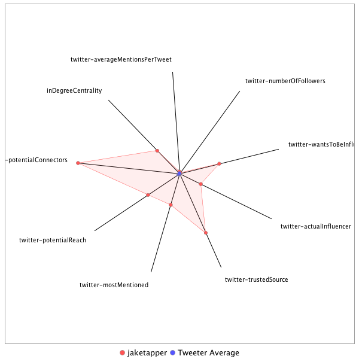

This tweeter has been identified as an influencer. Its target audience and hashtag and word usage are analyzed below.
Basic Statistics
Number of direct followers 1.2376e+06 The peak number of followers that the tweeter had during any time period. Number of retweeters 321 Number of agents that retweeted the key influencer. Number of secondary followers 42587576 The sum of the followers of those who retweeted the key influencer.
Measure Values of Other Influencers node versus Tweeter Average
This compares the measure values of the key influencer with the average values across all tweeters. For each measure line, the center-point means zero and the end-point means the maximum score across all tweeters.

Where was the influencer?
The agent is not recorded as being in any locations. Either he tweeted without geo-tags or we have no information about the tweets he sent.
The agent and retweeters were in 53 different locations.

What hashtags did the influencer use?
This displays the top ranked hashtags that the influencer and its retweeters used.
Rank hashtag Count 1 Comey 611 2 Russia 583 3 BREAKING 547 4 Trump 493 5 AHCA 442 6 mtal 413 7 ComeyHearing 405 8 CNNsotu 355 9 TheLead 340 10 GA06 327 11 SCOTUS 327 12 ParisAgreement 267 13 ISIS 259 14 MemorialDayWeekend 252 15 Qatar 232 16 adopt 220 17 Iran 209 18 VAGov 209 19 Manchester 206 20 trumprussia 199 21 ge2017 179 22 AdoptDontShop 170 23 dog 169 24 Syria 168 25 ComeyDay 158 26 ComeyFiring 150 27 covfefe 149 28 ForTheRecord 133 29 ComeyTestimony 125 30 MemorialDay 124 31 worldreligiontour 124 32 LondonBridge 120 33 sallyyates 120 34 NAFTA 115 35 Obamacare 110 36 FF 107 37 Nats 104 38 WrongChoiceAct 102 39 cat 102 40 JamesComey 101 41 NYC 98 42 travelban 98 43 NorthKorea 97 44 MTpol 95 45 cbntrumptravels 95 46 Israel 88 47 rescue 88 48 Afghanistan 86 49 TheBachelorette 86 50 CongressionalBaseballGame 84 51 ksleg 84 52 foster 79 53 CNN 78 54 FOIA 78 55 Saudi 76 56 TrumpCare 76 57 fakenews 76 58 FBIDirector 75 59 ParisAccord 75 60 US 75 61 ACA 74 62 SessionsHearing 74 63 txlege 73 64 London 71 65 Venezuela 70 66 climatechange 70 67 China 68 68 TBT 67 69 DonaldTrump 66 70 snl 66 71 spellingbee 65 72 NATO 64 73 FBI 62 74 healthcare 61 75 Putin 59 76 CATS 58 77 MTPDaily 58 78 Turkey 58 79 ManchesterBombing 55 80 BoroughMarket 54 81 badasswomenDC 54 82 tcot 54 83 Caps 53 84 GrenfellTower 52 85 CapsPens 50 86 MOLeg 50 87 SaudiArabia 50 88 gapol 50 89 dogs 49 90 yemen 49 91 DC 47 92 NBAFinals 47 93 Russian 46 94 Alexandria 45 95 FarewellOldChum 45 96 MAGA 45 97 Macron 45 98 POTUS 45 99 CodeCon 44 100 DPRK 44
Tweet List
This displays all of the tweets of the influencer ordered from earliest to latest. Click on a tweet to see its status in Twitter.
Number Tweet ID Date Message 1 859014001925251075 2017-05-01 07:57:52-04 Trump reelection campaign puts out TV ad touting first 100 days https://t.co/vg8TQ1jH9I via @youtube 2 859796108939333632 2017-05-03 11:45:41-04 In hearing, FBI Director Comey calls @wikileaks "intelligence porn," pushed out to do as much damage as possible to the US 3 859037904429088768 2017-05-01 09:32:51-04 The Ivanka billboard in the Philippines folks are tweeting appears to be from July 2012. 4 862056428432969728 2017-05-09 17:27:23-04 Gasping for life: Syria's merciless war on its own children https://t.co/d2nRXJuVct - @clarissaward reports #TheLead 5 862092921817976832 2017-05-09 19:52:24-04 Former DNI Clapper: "I have immense respect and admiration for Jim Comey. This is a tremendous loss for the FBI and the nation." 6 859888474618548224 2017-05-03 17:52:42-04 GOP claims new momentum on health care bill https://t.co/XZYRsy9fhJ - @Phil_Mattingly reports #TheLead 7 862291773103763456 2017-05-10 09:02:33-04 Comedy is hard. Acronyms Harder. https://t.co/wc8rA72d1t 8 859822031457710081 2017-05-03 13:28:41-04 Pretty damning comment by Comey about his view of the credibility of how DOJ was handling Clinton email investigation https://t.co/YbeWyV6mWj 9 861980649024106496 2017-05-09 12:26:16-04 Reagan's secretary of state pleas for US to stay in climate change deal https://t.co/JrfJdluRH5 10 862083577692999681 2017-05-09 19:15:16-04 .@SenBobCorker says Comey "removal at this particular time will raise questions." 11 860188797929127940 2017-05-04 13:46:05-04 GOP consultant: "House majority is in greater jeopardy if we DONT pass this than if we do... the bottom falls out if we don't get something" 12 861394693673955328 2017-05-07 21:37:53-04 Washington Post researcher in China. https://t.co/1P4GBePfS7 13 860847021300871170 2017-05-06 09:21:38-04 WaPo: Despite critics’ claims, GOP health bill doesn’t classify rape or sexual assault as a preexisting condition https://t.co/3fOvbSigdf 14 860837220676231168 2017-05-06 08:42:41-04 U.S. Far-Right Activists Promote Hacking Attack Against Macron, via @nytimes https://t.co/8oAi9Ap4sL 15 862287160988323840 2017-05-10 08:44:14-04 The president personally attacking critics of his firing of Comey, one by one. Here's a 3-tweeter on @SenBlumenthal https://t.co/HttaB4dNs9 16 861709320785997828 2017-05-08 18:28:06-04 Flynn: Who knew what, when? - CNN Video https://t.co/SMMXEHHxYq 17 862297942501228545 2017-05-10 09:27:04-04 Russian leaders apparently finding this all terribly amusing https://t.co/thBXrRmTLg 18 863024206044426240 2017-05-12 09:32:59-04 Two days ago we reported this: https://t.co/zRe7SZTs3K 19 861564734755270660 2017-05-08 08:53:34-04 2012 Obama appoints Flynn DIA 2014 Obama fires him 2016 DOD renews Flynn's clearance 2016- With no apparent vetting Trump appoints him NSA https://t.co/6f0dOlpn64 20 862424955929198592 2017-05-10 17:51:47-04 Russia probe accelerating before James Comey's firing https://t.co/cjmKKXQ7zd @PamelaBrownCNN reports on #TheLead 21 862426016123428865 2017-05-10 17:56:00-04 .@carlbernstein: This is 'dangerous moment in history of American democracy' https://t.co/rWYaE79kGs #TheLead 22 859163800003653632 2017-05-01 17:53:07-04 Another FOX News shakeup as lawsuits pile up https://t.co/MgBO9MkIwO @DylanByers reports on #TheLead 23 862423427021516800 2017-05-10 17:45:42-04 WH tries to explain Comey firing https://t.co/V239B8ENut @AthenaCNN reports on #TheLead 24 862639940735299585 2017-05-11 08:06:03-04 US media not admitted to Oval Office for photos; state-run Russian news agency/Russian Foreign Ministry photographer was. https://t.co/vLuLzGlMmo 25 863375635720409088 2017-05-13 08:49:26-04 "But the scars were still apparent, with one White House official asking: 'Do you think we're liars?'" https://t.co/ACQ9rYpPIW 26 863785734087553026 2017-05-14 11:59:02-04 .@CallyGingrich set to be named ambassador to the Vatican - https://t.co/4kGK7SPuhq https://t.co/35KVZkXNkE 27 860610741849792518 2017-05-05 17:42:44-04 Venezuelan tanks mow down protesters, 30+ killed since April https://t.co/ZKFAbHW8P8 - @StePozzebon reports from Caracas on #TheLead 28 863803039957864448 2017-05-14 13:07:48-04 Clapper discusses ‘pattern’ of dead Russians #CNNsotu https://t.co/ltthTMWhHJ 29 863548742552748032 2017-05-13 20:17:18-04 National Security advisor McMaster briefed POTUS this evening on the phone about the North Korean missile launch, per Sr admin official 30 863146427719049216 2017-05-12 17:38:39-04 Trump admits Russia probe was on his mind when he fired Comey https://t.co/xEspAlg3S7 @jaketapper on #TheLead 31 862131513957249024 2017-05-09 22:25:45-04 Will be anchoring a special report at 11 pm ET on CNN to cover this breaking news on #ComeyYourFired Tune in! 32 859528731811090433 2017-05-02 18:03:13-04 Army photographer captures her own final moments https://t.co/SJSJIkOUj2 #TheLead 33 859132146128125958 2017-05-01 15:47:20-04 Rogue FBI employee married ISIS terrorist she investigated - https://t.co/4kGK7SPuhq https://t.co/T6LOpdVfPO 34 863233002339434498 2017-05-12 23:22:40-04 FBI agents concerned about future of Russia probe - https://t.co/4kGK7SPuhq https://t.co/ILn3cvkmfA 35 861676995163422721 2017-05-08 16:19:39-04 Clapper: "to me the transcendent issue here is Russian interference in our elections," calls unmasking & other issues "ancillary" 36 859800084883623938 2017-05-03 12:01:29-04 Axelrod Rips Clinton for Excuses: 'It Takes a Lot of Work to Lose to Donald Trump' https://t.co/zMoqkoJwq8 37 859524518460653568 2017-05-02 17:46:29-04 .@Madeleine Albright: Trump should not meet with Kim Jong Un https://t.co/Pjm9Q65Myk #TheLead 38 862636214536605696 2017-05-11 07:51:15-04 Former prosecutor posits that POTUS citing Comey private conversations in letter undermines any future claims of executive privilege on them 39 862753820551598080 2017-05-11 15:38:34-04 ...and moved to AG Sessions to say he was recusing himself https://t.co/sUwXahGhGM 40 862538969820672000 2017-05-11 01:24:50-04 With Comey gone, what's next for FBI's Russia probe? https://t.co/PwshsWf6vn - @jimsciutto reports on #TheLead 41 863767463862915072 2017-05-14 10:46:26-04 Clapper: US institutions 'under assault' externally by Russia and internally by President Trump https://t.co/BwKBrU9UYs 42 862401786942042112 2017-05-10 16:19:43-04 Source close to Comey says: https://t.co/zRe7SZTs3K 43 862857829471969280 2017-05-11 22:31:52-04 Verified @GoFundMe for oldest living US veteran Richard Overton for his 111th birthday to provide 24/7 homecare https://t.co/ffLTwGDEjC 44 862637224604483585 2017-05-11 07:55:16-04 DUI suspect deported 15 times before https://t.co/GksiZHb5sQ 45 860278677497667585 2017-05-04 19:43:14-04 Special operations commanders warn pace is unsustainable | Miami Herald https://t.co/MXFmlsI0IU 46 859896226946351104 2017-05-03 18:23:31-04 Aetna pulls out of Virginia's individual market, citing big Obamacare losses https://t.co/By1Oz8WBKy 47 859884621898674176 2017-05-03 17:37:24-04 FBI Director defends 2016 actions, reveals concerns with ‘credibility’ of Obama DOJ https://t.co/YByBy1keAb @PamelaBrownCNN reports #TheLead 48 859829093575139335 2017-05-03 13:56:45-04 Three US soldiers wounded in Afghan ISIS bombing https://t.co/SgBPQthiRd 49 859769043053629440 2017-05-03 09:58:08-04 Study on how meetings w Obama officials were followed by more government contracts/regulatory relief https://t.co/rCh7sABPOa 50 863474925046296576 2017-05-13 15:23:59-04 FBI Agents Association urges POTUS to nominate former House Intelligence Committee Chair Mike Rogers as FBI director https://t.co/ij1pWbZnuB 51 864108642823540736 2017-05-15 09:22:09-04 Putin warns against 'intimidating' North Korea after latest missile launch https://t.co/gWgFdDxMgi 52 864107134325317632 2017-05-15 09:16:09-04 RT @DianneG: Per health ministry, 129 people have died from cholera outbreak in Yemen...spokesperson says there are 8,585 cholera suspected… 53 864104567209906176 2017-05-15 09:05:57-04 .@hrw: sharia-inspired ordinance in "moderate" Indonesia means 2 gay men will be flogged https://t.co/khezT9oFnm 54 864103636774916096 2017-05-15 09:02:15-04 .@TaskandPurpose: The Tea Party’s Favorite Painter Is Going Wobbly On Trump https://t.co/vWBpBjRyGB 55 864101918347595776 2017-05-15 08:55:26-04 RT @TheCurrent: Today in Music History: Remembering June Carter Cash. https://t.co/D07XQq8Kg4 https://t.co/QR1jb58GaO 56 864100243436187648 2017-05-15 08:48:46-04 Todd Rundgren: "If you’re a Trump supporter, don’t come to my show, because you won’t have a good time." https://t.co/sVFtDLiM70 57 864099035103342592 2017-05-15 08:43:58-04 The passing of Powers Boothe provides another opportunity to say how much I enjoyed the under-appreciated "Frailty" https://t.co/VL2pTLxFEI 58 864098106803195904 2017-05-15 08:40:17-04 RT @samanthabarry: The hero who accidentally stopped the cyberattack from spreading https://t.co/QxpuchzJAQ via @CNNMoney 59 864098067091513345 2017-05-15 08:40:08-04 RT @CNNPolitics: "The White House's current political woes are a direct result of Trump's own actions," writes @StCollinson https://t.co/WX… 60 864092640840646656 2017-05-15 08:18:34-04 Ebola kills 3 in DRC, WHO says; scores more linked to deaths https://t.co/k4xb7DYV0P 61 864092288091394048 2017-05-15 08:17:10-04 RT @MichaelRWarren: On the proposed new Afghanistan strategy, it’s Steve Bannon vs. (almost) everybody. Which way will Trump go? https://t.… 62 864091509808926720 2017-05-15 08:14:04-04 RT @hrw: Two gay men have been sentenced to public flogging in Indonesia, a test of core values in the country. Daily Brief: https://t.co/s… 63 864090745011154944 2017-05-15 08:11:02-04 RT @alexnazaryan: Sad news: @tanehisicoates's Black Panther comic is being cancelled by Marvel https://t.co/UPBClA21Dc (h/t @TheVerge) 64 864090396816801798 2017-05-15 08:09:39-04 NYT: If Americans Can Find North Korea on a Map, They’re More Likely to Prefer Diplomacy https://t.co/ajm4VhmU3E 65 864089876857335809 2017-05-15 08:07:35-04 RT @BillKristol: I wrote this editorial in response to a question: "How can you admire anyone who'd work in that administration?" https://t… 66 864087862266011648 2017-05-15 07:59:34-04 Clapper: US institutions 'under assault' from Trump - https://t.co/4kGK7SPuhq https://t.co/ph6vPhXR1W 67 864087082679103488 2017-05-15 07:56:29-04 RT @CNN: What you need to know about North Korea's missile test https://t.co/7cZbrlgf0c https://t.co/s1eeKBTo7M 68 864071915257942016 2017-05-15 06:56:12-04 10 years ago: Comey testifies about confrontation with Bush White House - https://t.co/4kGK7SPuhq https://t.co/06ffjk6Gun 69 863959914133237760 2017-05-14 23:31:09-04 Powers Boothe, RIP https://t.co/ElnvlsULe4 70 863959752132489216 2017-05-14 23:30:31-04 RT @cnnbrk: Actor Powers Boothe, known for roles in "Sin City" and "Agents of S.H.I.E.L.D," has died at 68, his publicist says https://t.co… 71 863956498178879488 2017-05-14 23:17:35-04 @FeatheredSchist @MrsKaderbeck @Breznican His publicist says it's true. There will be a private service held in Texas. Donations can be made to the Gary Sinise Foundation, 72 863929631912710144 2017-05-14 21:30:49-04 RT @Breznican: I can think of no better way to say farewell to Powers Boothe than to show what he could do with only two damn words. https:… 73 863929389070897157 2017-05-14 21:29:52-04 RT @MrBeauBridges: It's with great sadness that I mourn the passing of my friend Powers Boothe. A dear friend, great actor, devoted father… 74 863924484369260545 2017-05-14 21:10:22-04 Moms -- https://t.co/lHC5yCYH5b 75 863924090083713028 2017-05-14 21:08:48-04 RT @DVNJr: That second sentence is a sparkly thing of beauty. https://t.co/KXM2PoTlsT 76 863920632345571329 2017-05-14 20:55:04-04 RT @BenHowe: So what do the celebrities who used to go down there and cheer for Hugo's governmental changes think now? https://t.co/UWVqlEX… 77 863891069255266305 2017-05-14 18:57:35-04 Helpful tips from me and my son https://t.co/bLJ6rqktub 78 863870662221455360 2017-05-14 17:36:30-04 RT @CNNPolitics: Former Director of National Intelligence James Clapper says US institutions are "under assault" https://t.co/kPy9d0BXPC ht… 79 863859919933648900 2017-05-14 16:53:49-04 @AutumnDawnPrice they still show up when it's humid out and i need a haircut 80 863859713502568449 2017-05-14 16:53:00-04 RT @BarackObama: Happy Mother's Day to my love and partner on this journey @MichelleObama, and to all the wonderful, hardworking mothers ou… 81 863859645399609345 2017-05-14 16:52:43-04 RT @pixarcoco: To moms of all generations: Happy #MothersDay from #PixarCoco. https://t.co/1C5AFDvC5x 82 863859602701660160 2017-05-14 16:52:33-04 RT @realDonaldTrump: Wishing @FLOTUS Melania and all of the great mothers out there a wonderful day ahead with family and friends! Happy… 83 863859390780231680 2017-05-14 16:51:43-04 RT @FLOTUS: Happy Mother's Day! https://t.co/y7r4PZiwC5 84 863856549831299072 2017-05-14 16:40:25-04 Happy Mother's Day, mom! I love you! https://t.co/2B8kTzI5VY 85 863855291804340224 2017-05-14 16:35:25-04 RT @BagramAirfield: Happy #MothersDay to all moms of our Airmen in #Afghanistan! You rock! Your sons and daughters are part of the premier… 86 863855266848264194 2017-05-14 16:35:19-04 RT @RepStephMurphy: Happy #MothersDay, from my family to yours. https://t.co/BNkah1U7gl 87 863845242348457986 2017-05-14 15:55:29-04 @KurtSchlichter He's repugnant and truly deplorable and from what I understand a perennial candidate who never goes anywhere. 88 863804526465253376 2017-05-14 13:13:42-04 State of the Cartoonion: "From Hollywood to Washington?" #CNNsotu https://t.co/O63fhdoAkI 89 863804234483019777 2017-05-14 13:12:32-04 Warren: Trump Thinks He’s Above the Law #CNNsotu https://t.co/5oKmC7Wct0 90 863803595581521920 2017-05-14 13:10:00-04 Here is my full interview with James Clapper, the former director of national intelligence. #CNNsotu https://t.co/LxsVA1jCdL 91 863803370448056321 2017-05-14 13:09:06-04 Clapper is ‘concerned’ about Trump behavior #CNNsotu https://t.co/lsbVptKQak 92 863803297781751808 2017-05-14 13:08:49-04 James Clapper hopes the US intelligence community knows about any taping devices that might exist. #CNNsotu https://t.co/lsbVptKQak 93 863802954024976384 2017-05-14 13:07:27-04 Clapper: Comey firing has hurt FBI morale #CNNsotu https://t.co/T6cCbXg8ea 94 863802873162993667 2017-05-14 13:07:08-04 Clapper: Comey was ‘uneasy’ about Trump dinner #CNNsotu https://t.co/xUcmUFFpgI 95 863801709679849474 2017-05-14 13:02:30-04 James Clapper: I hope the GOP will ‘speak up’ about the assault on US institutions by Trump. #CNNsotu https://t.co/AWyF5v2Vtx 96 863801169084329988 2017-05-14 13:00:22-04 Fmr. Dir. of Nat'l Intel James Clapper believes US institutions are under ‘assault’ internally by Trump. #CNNsotu https://t.co/K5u1wwCEHz 97 863800767509131264 2017-05-14 12:58:46-04 Fmr. Director of National Intelligence James Clapper: My words re: Russia were not ‘exculpatory’ for Trump #CNNsotu https://t.co/pFpleL7Y6K 98 863800248749182976 2017-05-14 12:56:42-04 Here is my full interview with Senate Democratic Leader Chuck Schumer. #CNNsotu https://t.co/BPTo71GMJt 99 863800089692844035 2017-05-14 12:56:04-04 .@SenSchumer believes AG Sessions violated his recusal and should be investigated by inspector general. #CNNsotu https://t.co/vbs2OvPMFI 100 863798684642938880 2017-05-14 12:50:29-04 .@SenSchumer is confident that James Comey will testify before Congress despite initial refusal. #CNNsotu https://t.co/9UQBoAFjHZ 101 863798493261041665 2017-05-14 12:49:44-04 .@SenSchumer supports Warner idea of refusing to vote on FBI director until special prosecutor is named. #CNNsotu https://t.co/t1lMUmBTiz 102 863797727574065154 2017-05-14 12:46:41-04 .@SenSchumer mum on prospect of Sen. Cornyn for FBI Director, discusses qualities he wants to see in new director. https://t.co/dPFz30p2q6 103 863797586360139776 2017-05-14 12:46:07-04 .@SenSchumer: The silence of the @GOP on Trump is hurting America. #CNNsotu https://t.co/vJZUDRNjmh 104 863797454478639104 2017-05-14 12:45:36-04 Schumer "if there are any tapes [Trump] should turn them over immediately. To destroy...would be violation of law" https://t.co/NGBXs28EJj 105 863796732324438017 2017-05-14 12:42:44-04 .@SenSchumer says "obstruction of justice is a very complicated issue," wants inspector general to probe. #CNNsotu https://t.co/uI5gyzDEDc 106 863793969876135937 2017-05-14 12:31:45-04 RT @funhomemusical: Today James Comey and his wife Patrice joined us at #FunHome in Washington, D.C. https://t.co/W5HLrgKaPi 107 863793714510147585 2017-05-14 12:30:44-04 @MaryAnnBourbeau @funhomemusical Yes I messed up -- tweeted apologies earlier 108 863789680566972416 2017-05-14 12:14:42-04 Schumer: No new FBI director without a special prosecutor https://t.co/yUuHplUACx 109 863789544516222976 2017-05-14 12:14:10-04 Clapper says Trump weakening U.S. institutions https://t.co/pyYXGzYZA5 110 863781730955689985 2017-05-14 11:43:07-04 RT @BeschlossDC: JFK asks his mother (after Cuban Missile Crisis) not to contact Nikita Khrushchev again without asking him first: https://… 111 863781118964899843 2017-05-14 11:40:41-04 RT @KurtSchlichter: Why working class Americans voted with their middle finger https://t.co/Owosdu8y5l via @nypost 112 863773306301935616 2017-05-14 11:09:39-04 RT @MatthewKlam: This is a beautiful piece of writing by @lovelljoel https://t.co/g8MBkfgwQC 113 863759904816943104 2017-05-14 10:16:23-04 Disturbing look at one media organization's surreptitious smear machine https://t.co/gaQHyb1OrJ 114 863758447896080385 2017-05-14 10:10:36-04 @fitz1976 @CNNPolitics @realDonaldTrump we tried to book a panelist to back the president. the usual pro-Trump folks declined. and the WH declined to provide a guest. 115 863757937252204544 2017-05-14 10:08:34-04 @SCLANY @cnni weird. thanks. will tell our folks -- 116 863757332722929664 2017-05-14 10:06:10-04 photo of Comey w/cast of critically acclaimed FUN HOME; i misstated the name of the show (sorry) but it's supposed to be amazing - go see it https://t.co/QBSiqiWsFY 117 863737336001171457 2017-05-14 08:46:43-04 Happy Mother's Day! https://t.co/h1CHRhxrKY 118 863736445483315201 2017-05-14 08:43:10-04 RT @ConnieSchultz: Happy Mother's Day to every woman who has loved a child. For those who are struggling, may the day land gently. https:/… 119 863735130103459840 2017-05-14 08:37:57-04 RT @CNNSotu: Coming up on #CNNSOTU w/@jaketapper: @SenSchumer James Clapper & panel @neeratanden @amandacarpenter @BillKristol @RepStephMur… 120 863729743342051328 2017-05-14 08:16:32-04 @maggierose246 Yes it's almost certainly a photoshop 121 863726940536143872 2017-05-14 08:05:24-04 RT @JonahNRO: So much drama for a Sunday morning! Stupid deer doesn't know it's supposed to run. https://t.co/Z9lpMYp1mp 122 863726518178107392 2017-05-14 08:03:43-04 Indeed Happy Mother's Day! https://t.co/btQ1CutjqF 123 863585536426086400 2017-05-13 22:43:31-04 @Kerridaniels12 @dog_rates Commercials are paid for. These are not. Just me saying nice things about movies and books my family and I have enjoyed. 124 863582462819131402 2017-05-13 22:31:18-04 Happy Mother's Day! https://t.co/HJickANFUZ 125 863580431438012416 2017-05-13 22:23:14-04 RT @W7VOA: Just spoke with David Wright of @UCSUSA. "This is kind of a big deal. But it's not an ICBM. That's the good news," he says of #D… 126 863580348982202369 2017-05-13 22:22:54-04 Reuters: North Korea missile rose more than 2,000 kilometers in altitude: Japan defense minister https://t.co/kiqQbXUW6a 127 863580126017138688 2017-05-13 22:22:01-04 @GretchenCarlson Happy Mother's Day, Gretchen 128 863579519361404928 2017-05-13 22:19:36-04 Fascinating piece on the dental divide https://t.co/E6rI1v2N1R 129 863573405940973569 2017-05-13 21:55:19-04 Tonight's movie with the kids: Rock Dog. ⭐️ ⭐️ ⭐️ fun, decent music, nothing too scary, good message cc @dog_rates 130 863572612366159872 2017-05-13 21:52:09-04 @SeanParnellUSA @dcexaminer @AW_Initiative @LaurieSnell @KarenVaughn_GSM @LouiseThaxton @SalenaZito @RealDeanCain @USAHEROSALUTE @AmberSmithUSA @joshuahoodbooks Congrats Sean! Excited to read it -- 131 863566545519345664 2017-05-13 21:28:03-04 RT @SeanParnellUSA: So I'm writing stuff for the @dcexaminer now. Hooah! Or something... Learn about those who sacrifice for us here==> ht… 132 863565979858743296 2017-05-13 21:25:48-04 RT @BillyHallowell: Loved this. Talk about turning tragedy around and looking for the positive: https://t.co/C0TGvsD7Nt 133 863549237090537472 2017-05-13 20:19:16-04 AP: In Wisconsin, ID law proved insurmountable for many voters https://t.co/w7Jd9VGjCi 134 863518837488144386 2017-05-13 18:18:28-04 RT @PhilipRucker: It’s easy to blame past four days on bad staff work, but that’s not the full picture. Trump made every decision. https://… 135 863516602989510657 2017-05-13 18:09:36-04 RT @sbg1: A sharp departure in practice from previous Secretaries of State https://t.co/WG4gmQeNTW 136 863464528524316675 2017-05-13 14:42:40-04 RT @jakesNYT: Scooplet by @NYTmike: Comey wants to testify, but insists it be in public. Watch this space: https://t.co/fWuPiGHMJw 137 863463969448574977 2017-05-13 14:40:27-04 RT @jvagle: May 13, 1985: The Philadelphia Police Department dropped a bomb on its own city and citizens, killing 11, including 5 children.… 138 863457303357530114 2017-05-13 14:13:58-04 RT @JackSmithIV: Behind the bandstand at the Boston "free speech" rally, the Proud Boys are doing their initiations and beat-ins. https://t… 139 863438127284858880 2017-05-13 12:57:46-04 RT @DFRLab: #eFP key to Baltic security, as not far from here, Russian military equipment flows into Donetsk & Luhansk: https://t.co/l4VaTr… 140 863437678917943297 2017-05-13 12:55:59-04 RT @stephenfhayes: "The rush to defend the myth of Trump is causing conservatives to abandon their principles, standards, & credibility at… 141 863432847939514368 2017-05-13 12:36:47-04 RT @politico: Pence and Trump Jr. crisscrossed Montana in the last 24 hours to gin up support for upcoming special House election https://t… 142 863430272641097728 2017-05-13 12:26:33-04 .@SykesCharlie on how "anti-anti-Trumpism has become the new safe space for the right" https://t.co/p5RDGL0bDZ 143 863419827314192386 2017-05-13 11:45:03-04 ...given POTUS statements he was going to fire Comey regardless of what AG & DAG recommended & what was on his mind as he made decision /end 144 863419491090403328 2017-05-13 11:43:42-04 The a) merits of Comey firing and b) why POTUS fired him are 2 separate issues since Barr/Rosenstein thoughts appear unrelated to latter 5/ 145 863419049123991554 2017-05-13 11:41:57-04 I suspect oped written before Trump's comments were broadcast, but either way the oped is worth reading bc it focuses on merits of firing 4/ 146 863414115091582976 2017-05-13 11:22:21-04 RT @markknoller: Earlier on Air Force One, Pres Trump promised a "fast decision" on choosing a new FBI Director. Perhaps even before his fo… 147 863414019113312256 2017-05-13 11:21:58-04 RT @JDiamond1: .@GovMikeHuckabee sticking up for his daughter @SHSanders45 ...and going after press in process https://t.co/i4W8X4ZUlf 148 863413196098547712 2017-05-13 11:18:42-04 Does former AG Barr not know that POTUS Trump himself told NBC News he was thinking of Russia probe when he made the decision? 3/ 149 863412999025041409 2017-05-13 11:17:55-04 Oped says Trump critics are "claiming the president acted to neuter the investigation into Russia’s role in the election." 2/ 150 863412746360152064 2017-05-13 11:16:54-04 WH sends out this oped from former Bush AG Barr backing the firing of Comey. 1/ https://t.co/LDtghmlnUD 151 863409667548094464 2017-05-13 11:04:40-04 RT @kyledcheney: Sen. John Cornyn, potential @POTUS pick to succeed Comey, has said some things about the FBI. https://t.co/qckhAkD1N6 152 863409481237110788 2017-05-13 11:03:56-04 RT @edlavaCNN: A fantastic tribute for the father of actors Luke & Owen Wilson. He lived an inspiring life dedicated to public service jour… 153 863402965750743045 2017-05-13 10:38:02-04 RT @brianstelter: "They're not available." White House not providing spokespeople for the big five Sunday shows https://t.co/TEKFaSYmCu 154 863396816594886656 2017-05-13 10:13:36-04 RT @CNNSotu: This Sunday on #CNNSOTU @jaketapper will sit down with the former Director of National Intelligence Lt. Gen. James Clapper. Tu… 155 863395489575833600 2017-05-13 10:08:20-04 @johncusack you mean the WH? 156 863393018308702209 2017-05-13 09:58:31-04 RT @michaeldweiss: https://t.co/XipZaxsbYC 157 863392950566490114 2017-05-13 09:58:15-04 RT @mikeallen: Dumbfounded, demoralized GOP publicly defends Trump https://t.co/9z275crYf9 158 863391865659326464 2017-05-13 09:53:56-04 WaPo: Trump has a long history of secretly recording calls, according to former associates https://t.co/NkSw6ZnkGr 159 863390483900493824 2017-05-13 09:48:27-04 RT @CNNSotu: Tune in Sunday for thoughts from the best political minds with our #CNNSOTU panel @neeratanden @amandacarpenter @BillKristol @… 160 863387410805252096 2017-05-13 09:36:14-04 The Secret Weapon Democrats Don’t Know How to Use - POLITICO Magazine https://t.co/0cZI4Waxif 161 863385443429167104 2017-05-13 09:28:25-04 RT @6abc: Amtrak engineer charged in 2015 Philadelphia crash that killed 8 https://t.co/CXhjAWPnTP https://t.co/QUaH3jpwSJ 162 863376391395586048 2017-05-13 08:52:27-04 Ours is a government of laws, John Adams wrote, not of men. https://t.co/nj2KktakX7 163 863374336748658689 2017-05-13 08:44:17-04 RT @DRUDGE_REPORT: President 'Considering Broad Shake-Up of Team'... https://t.co/9ifCH9rNtM 164 863372682041200640 2017-05-13 08:37:42-04 RT @CNNPolitics: Vandals break into a Trump-run golf course in the Bronx and hack down trees with a chainsaw https://t.co/cvSQMw5oKJ https:… 165 863372128682467328 2017-05-13 08:35:30-04 "Red Platoon: A True Story of American Valor" by MOH recipient Clint Romesha is now out in paperback - read it! https://t.co/QJbGnF3BFD 166 863212702839296001 2017-05-12 22:02:00-04 Cinci Enquirer: 9 victims alleged in sex charges against former Kentucky judge Tim Nolan https://t.co/jtkfrmTc7W 167 863203345707749376 2017-05-12 21:24:49-04 WSJ: Former Trump Adviser Paul Manafort’s Bank Records Sought in Probe https://t.co/khNStLixoY 168 863202523838124034 2017-05-12 21:21:33-04 RT @TeddyDavisCNN: 4 candidates will be interviewed on Sat. for FBI Director: Sen. John Cornyn Acting FBI Dir Andrew McCabe Alice Fisher J… 169 863195716306558978 2017-05-12 20:54:30-04 RT @TeddyDavisCNN: Senators Durbin and Feinstein say that Deputy Attorney General Rod Rosenstein should resign his post if a special prosec… 170 863195636241506305 2017-05-12 20:54:11-04 RT @wpjenna: HHS Secretary Tom Price praises West Virginia police for arresting a journalist who shouted questions at him: https://t.co/k0b… 171 863195600543768576 2017-05-12 20:54:03-04 RT @thehill: Hewitt grills Tom Price: We don't arrest journalists in the US https://t.co/pCxq3MS5d5 https://t.co/VtIK75n1m7 172 863195385585598465 2017-05-12 20:53:11-04 RT @CNN: "15 great white sharks where you are paddleboarding": Not something you want to hear on a leisurely day on the water https://t.co/… 173 863195049198313472 2017-05-12 20:51:51-04 RT @RandPaul: Today I released the following statement in response to Attorney General Jeff Sessions. https://t.co/P3uo04xF0M 174 863148334101528577 2017-05-12 17:46:14-04 .@Bourdain explores exotic food & history in Laos https://t.co/74whXAtKfc #TheLead 175 863147992374808576 2017-05-12 17:44:52-04 Republicans silent and under pressure over Trump's Comey claims https://t.co/Ro04Ygbubu #TheLead 176 863147742247432194 2017-05-12 17:43:52-04 What do Trump's denials on 'tapes' and 'loyalty' really mean? https://t.co/YcUfIriSoY @margarettalev @KSoltisAnderson @CillizzaCNN #TheLead 177 863147381331812352 2017-05-12 17:42:26-04 Clapper corrects Trump on evidence of collusion with Russians https://t.co/ONDTfKu5NE @jimsciutto reports on #TheLead 178 863147214088134658 2017-05-12 17:41:46-04 Kremlin: U.S. has ‘emotional obsession’ with Russia https://t.co/CrmiAi6ToB @mchancecnn reports on #TheLead 179 863146941655502849 2017-05-12 17:40:42-04 .@RonWyden: Trump's tweet threatening Comey sounds ‘unhinged’ https://t.co/l11uM7Sl9J #TheLead 180 863146682174885888 2017-05-12 17:39:40-04 Trump alludes to ‘tapes’ of his conversations with Comey https://t.co/N4F64dXZRE @jeffzeleny reports on #TheLead 181 863143647449141248 2017-05-12 17:27:36-04 Speaker Ryan on today's news: https://t.co/KUBweFj7DH 182 863137385227444224 2017-05-12 17:02:43-04 Super hot take -- https://t.co/7AdVUrw0ja 183 863126705367601152 2017-05-12 16:20:17-04 @timmullaney @CillizzaCNN Ask @becbenit 184 863124692298805250 2017-05-12 16:12:17-04 Shoutout to @knobcreek and @SIRIUSXM Backspin, from @MensJournal https://t.co/Dw5AmS4BoY 185 863117809391480833 2017-05-12 15:44:56-04 @KevinMKruse @SethAMandel someone needs to come up with formula of bad things v good things a POTUS does, complete with context of era. get on that, gentlemen 186 863117064113987584 2017-05-12 15:41:58-04 @SethAMandel he doesnt even get enough credit for that imo 187 863109117124255744 2017-05-12 15:10:23-04 @SethAMandel Truman and Ike both underrated 188 863102268870193152 2017-05-12 14:43:11-04 RT @factcheckdotorg: In this week’s video, CNN’s @jaketapper examines statements made by Trump & WH officials about morale at the FBI. http… 189 863101634691436544 2017-05-12 14:40:40-04 RT @CNNPolitics: Spicer doesn’t rule out the possibility of President Trump canceling the daily press briefings https://t.co/UtBbMnXLH7 190 863101133161738241 2017-05-12 14:38:40-04 @ron_fournier @gabrielle4nier @michiganstateu Congratulations,, @gabrielle4nier!!!! You're making us all so proud 191 863092564056047618 2017-05-12 14:04:37-04 RT @TheLeadCNN: Source: Comey is 'not worried about any tapes’ of conversations between him and President Trump https://t.co/hZYhCW4fvd htt… 192 863073075381899264 2017-05-12 12:47:10-04 RT @DavidWright_CNN: Just now -- @mitchellreports: You were not intending to convict or clear anyone of collusion? JAMES CLAPPER: That’s co… 193 863072018777952256 2017-05-12 12:42:59-04 @HayesBrown @juliareinstein Sometimes you earnest millennials don't understand the gruff attempts at irony by Gen Xers 194 863070964220866561 2017-05-12 12:38:47-04 @aShawnMcDonald @MrMokelly @grantgust Huge nerd but don't read Flash 195 863066174027911168 2017-05-12 12:19:45-04 Europe warns U.S. of safety risk from laptop ban https://t.co/6EpkYZZAmL 196 863056680225038336 2017-05-12 11:42:02-04 @juliareinstein I'm assuming you understand it was a joke 197 863051563216101378 2017-05-12 11:21:42-04 RT @FVCraig: @TheLloydGrove @realDonaldTrump Yes he did. 198 863051475462889473 2017-05-12 11:21:21-04 RT @MarkThompson_DC: Wilburn Ross, who repelled 8 German attacks in WW2, earning Medal of Honor for his intrepidity. 1922-2017, R.I.P. http… 199 863051397847289857 2017-05-12 11:21:02-04 One year and one week ago https://t.co/IEXbKqju4y 200 863048688800813056 2017-05-12 11:10:16-04 @carojdavis On Earth 2 yes 201 863047874585735168 2017-05-12 11:07:02-04 @carojdavis I misspelled it so redid it 202 863047508691492864 2017-05-12 11:05:35-04 RT @daveweigel: Buried in this story: a GOP poll finds that Obamacare supporters now outnumber “repeal” supporters in #GA06. https://t.co/k… 203 863047299924193281 2017-05-12 11:04:45-04 @carojdavis Never better 204 863047193128816642 2017-05-12 11:04:20-04 Cuckstitution amirite? 205 863047100388577283 2017-05-12 11:03:58-04 @BowieZMusic Fixing 206 863046929575489536 2017-05-12 11:03:17-04 Everything's fine https://t.co/FWu3wIcDvj 207 863045594817978368 2017-05-12 10:57:59-04 RT @JerylBier: @jaketapper From @realDonaldTrump's Art of the Deal: loyalty > integrity..."if that friend becomes a problem" https://t.co/L… 208 863045442736721920 2017-05-12 10:57:22-04 @J1_O_M Never too early for a snagglepuss reference https://t.co/MMxcF11QdH 209 863044181522083840 2017-05-12 10:52:22-04 Federal Bureau of Investigation - "Our oath of office" To the US Constitution Not to any person https://t.co/5l65XxUW5J 210 863044018309038080 2017-05-12 10:51:43-04 Comey was taken aback by Trump request for loyalty pledge - https://t.co/4kGK7SPuhq https://t.co/JBDp415O8Z 211 863042933800435713 2017-05-12 10:47:24-04 RT @CNNnewsroom: JUST IN: Source tells CNN's @jaketapper: Comey was taken aback by Trump's loyalty request https://t.co/vxUbUaJAOF https:/… 212 863042564966027265 2017-05-12 10:45:56-04 The tweets from Earth 2 are interesting https://t.co/h6SQJYYykE 213 863042020813754369 2017-05-12 10:43:46-04 RT @NickTimiraos: An incredible moment: The president of the United States says you can't always trust what his spokesmen say. https://t.co… 214 863040691236163585 2017-05-12 10:38:29-04 @TheRealDealLeon I'm not resisting. Im reporting. 215 863026513012305922 2017-05-12 09:42:09-04 @smidgean @bretbair He does have a tendency to speak in chapters 216 863025530890854400 2017-05-12 09:38:15-04 RT @maggieNYT: This is what some world leaders have privately expressed concern abt,that nothing they discuss will be in confidence https:/… 217 863025478994726913 2017-05-12 09:38:03-04 RT @GlennKesslerWP: Unpredictable Trump is putting the Senate GOP’s agenda in peril, via @WaPoSean & @kelsey_snell https://t.co/o40ryZQTXA 218 863025379711307776 2017-05-12 09:37:39-04 Weiner = Chekhov's gun https://t.co/ntbJo6bsSH 219 863014307034017792 2017-05-12 08:53:39-04 RT @samanthabarry: When your team spot @melissamccarthy recording a @seanspicer sketch for #SNL this weekend. Video by @donie screaming by… 220 863012636732084229 2017-05-12 08:47:01-04 RT @projwoodhaven: Sad to report the passing of Albert Matukonis, 99 year old WW2 vet, resident of Woodhaven, member of Am Legion Post 118… 221 863012578007683072 2017-05-12 08:46:47-04 @senatorshoshana Wasn't even me or my show he was referring to. 222 863011902485561345 2017-05-12 08:44:06-04 RT @SteveKopack: The President of the United States just essentially threatened the former FBI chief who he just fired? https://t.co/H8c46d… 223 863011820885422080 2017-05-12 08:43:46-04 Old enough to remember liberals attacking @BretBaier for interrupting Obama during an interview. Aggressive interviews are good. https://t.co/fvOAHKjvGK 224 863011352914386945 2017-05-12 08:41:55-04 RT @stephenfhayes: From the man w/vast federal surveillance powers at his command. #seriouslyorliterally https://t.co/CfqUoYsywk 225 863011063465476097 2017-05-12 08:40:46-04 RT @orlandosentinel: #Breaking: Corrine Brown found guilty on fraud and tax evasion charges https://t.co/JYVovb0iD7 https://t.co/Md5ZDR7LPT 226 863010512082268160 2017-05-12 08:38:34-04 RT @SykesCharlie: Almost makes you think this might get even uglier.... https://t.co/FxxElghIPb 227 863006952057700352 2017-05-12 08:24:25-04 RT @CruickshankPaul: The Next Front in the U.S. Fight Against ISIS https://t.co/GG49T08NhQ 228 863005637046829056 2017-05-12 08:19:12-04 RT @GlennKesslerWP: New #FactChecker: All of the White House’s conflicting explanations for Comey’s firing: A timeline https://t.co/x7kKYj… 229 863005542943531008 2017-05-12 08:18:49-04 RT @MarkHertling: Today is Military Spouse Appreciation Day. Many people thank soldiers for serving, but all soldiers know who really deser… 230 863002678531682309 2017-05-12 08:07:27-04 Trump says he was considering 'this Russia thing' when he fired Comey - https://t.co/4kGK7SPuhq https://t.co/dGWt81J6k7 231 862977311880118274 2017-05-12 06:26:39-04 RT @CNNPolitics: Sanders: By removing James Comey, we've taken steps to end the Russia investigation "with integrity" https://t.co/sUl65pmr… 232 862977206838079488 2017-05-12 06:26:14-04 RT @CNN: Russia reacts to White House photo outrage: "This is nonsense" https://t.co/qY1TcKelfW https://t.co/4kX9W74RUt 233 862880929869688834 2017-05-12 00:03:39-04 At RNC meeting, GOP officials shrug off Trump's firing of Comey - https://t.co/4kGK7SPuhq https://t.co/Gmuoc2uK9L 234 862878540513116160 2017-05-11 23:54:10-04 RT @ProPublica: We reached out to Comey for our latest piece. Here’s what he said: https://t.co/5jTzBuPa2X https://t.co/KmeNCIKIIc 235 862877796619694084 2017-05-11 23:51:12-04 RT @seanhannity: Question of the Day: Should the FBI reopen its investigation into Hillary Clinton’s private server ? #Hannity 236 862877006844874752 2017-05-11 23:48:04-04 RT @PhilipRucker: Trump to NBC: "When I decided to [fire Comey], I said to myself, you know, this Russia thing with Trump and Russia is a m… 237 862876796357836801 2017-05-11 23:47:14-04 Yep https://t.co/bV8klwUjie 238 862873650063695873 2017-05-11 23:34:44-04 RT @mlcalderone: Americans keep having to rely on foreign sources to get details of Trump's meetings https://t.co/nwWSLOxiBe 239 862872446390718466 2017-05-11 23:29:57-04 Huge honor. Thanks to @dartmouthalumni club of DC! https://t.co/r2xt1N5Hrw 240 862870128513429504 2017-05-11 23:20:44-04 “God grants liberty only to those who love it, and are always ready to guard and defend it.” - Daniel Webster 241 862869187735293952 2017-05-11 23:17:00-04 As we reported yesterday: President Trump wanted assurance of personal loyalty from Comey and he wouldn't give it https://t.co/zRe7SZTs3K 242 862803038246981634 2017-05-11 18:54:09-04 Ukrainian government not accused by US intel of interfering in US election, but points for creativity https://t.co/mjL6A4jnua 243 862799124323852290 2017-05-11 18:38:35-04 @ThomasSadoski I feel like right now you're all https://t.co/UaB7YEjMt3 244 862794254292312066 2017-05-11 18:19:14-04 @candidginger @CNN we did. he's not answering questions. 245 862794074427969536 2017-05-11 18:18:31-04 RT @CNNSotu: In this week's fact-check from #CNNSOTU & @factcheckdotorg @jaketapper examines Trump's claim about FBI turmoil https://t.co/A… 246 862794040697290753 2017-05-11 18:18:23-04 RT @FelskeFiles: @jaketapper They wanted all the dough. 247 862793297483489280 2017-05-11 18:15:26-04 Saucy https://t.co/CIXiYt9jjL 248 862790717567115265 2017-05-11 18:05:11-04 Thanks to Russians, Americans know more about Oval meeting https://t.co/S2BM4ViO2c @jaketapper on #TheLead 249 862790600944439296 2017-05-11 18:04:43-04 Clinton/Lynch tarmac meeting vs. Trump/Comey dinner https://t.co/jp3uIL6eiP @mschlapp @abbydphillip @mcottle discuss on #TheLead 250 862789862210117633 2017-05-11 18:01:47-04 Acting FBI director: Comey firing won't stop Russia probe https://t.co/cbGrHJBiks @jimsciutto reports on #TheLead 251 862789476388622337 2017-05-11 18:00:15-04 .@KamalaHarris calls for Sessions to resign for bogus ‘recusal’ https://t.co/QK1PcArWhi #TheLead 252 862788981704060931 2017-05-11 17:58:17-04 Comey comments fueled Presidential rage https://t.co/aez96Iiaou @DanaBashCNN reports on #TheLead 253 862788746982371328 2017-05-11 17:57:21-04 Sen. Kamala Harris: 'There's nothing about any of this that is normal' - https://t.co/4kGK7SPuhq https://t.co/cx57kollPL 254 862788533572034561 2017-05-11 17:56:30-04 Trump contradicts his own staff, VP on Comey firing https://t.co/Hf1YU7sSzT @jeffzeleny reports on #TheLead 255 862788342546649088 2017-05-11 17:55:45-04 President Trump offers version no. 3 of Comey firing https://t.co/0fM5dj6HGm @jaketapper on #TheLead 256 862785382932512768 2017-05-11 17:43:59-04 RT @TheLeadCNN: Senator Kamala Harris: A potential target of the investigation fires the man in charge of the investigation… “everything” i… 257 862785316889006080 2017-05-11 17:43:43-04 @Leafer1 thanks! 258 862785294512390144 2017-05-11 17:43:38-04 @Octoplops @Leafer1 thanks 259 862785273440202754 2017-05-11 17:43:33-04 @kimsimnyc @Leafer1 was very upsetting. thanks for watching! 260 862784050632826880 2017-05-11 17:38:42-04 @Leafer1 We ran a very important piece on the Syria chemical weapons attack that was tough to watch. We knew we'd take a hit. 261 862782688520003585 2017-05-11 17:33:17-04 @calvinstowell Sporty 262 862778845186928640 2017-05-11 17:18:01-04 The Lead has come in 1st in the key demo in 4 of the last 5 days -- thanks so much for watching, tweeps! Honored by your viewership! https://t.co/OvEyLaHBIN 263 862768770972090368 2017-05-11 16:37:59-04 @myhlee Apologies and thanks for the fact check 264 862753182795137025 2017-05-11 15:36:02-04 RT @bethanyshondark: How widespread it is the opioid epidemic? This is a full-page ad in a cooking magazine. https://t.co/hPhi7iQ2fF 265 862742686964600832 2017-05-11 14:54:20-04 RT @lizzieohreally: This statement on China's currency policy by the Treasury Secretary in the Economist interview is 100% inaccurate. http… 266 862735395771088896 2017-05-11 14:25:21-04 Washington-to-English Dictionary "I'm not going to get into a back and forth" = I'm not going to win that argument 267 862729891430621184 2017-05-11 14:03:29-04 Third version of decision-making process from the WH: https://t.co/gz4C4G7UUN 268 862723118657306626 2017-05-11 13:36:34-04 RT @JusticeWillett: America's oldest living veteran—Richard Overton—is 111 today! Such a privilege to meet him on his #HonorFlight to DC.… 269 862691260611657728 2017-05-11 11:29:59-04 Rod Rosenstein unhappy with handling of Comey firing - https://t.co/4kGK7SPuhq https://t.co/N4NHJZsdE4 270 862686759129427973 2017-05-11 11:12:05-04 RT @paleycenter: #PaleyArchive fans: don't miss #JFK100 TV & the Presidency 6/13 w/ @davidaxelrod @HardballChris @jaketapper + more! https:… 271 862680547834945537 2017-05-11 10:47:25-04 @baseballcrank With Tommy 'Fatso' Marson, Don Carlo Gambino 'The Godfather', and Jimmy 'The Weasel' Fratianno https://t.co/HYsNSpGFNQ 272 862679893829615617 2017-05-11 10:44:49-04 RT @Greg651: A 4 pg letter from Frank Sinatra to Justice on the actual malice standard! Well worth a read. https://t.co/Nd61WsHCt3 273 862679342341554176 2017-05-11 10:42:37-04 @EsotericCD @jbarro @JonCoppage He's a regular on @TheLeadCNN so respectfully disagree 274 862678054216376320 2017-05-11 10:37:30-04 @MelanieKGrover @real_jonstewart I believe they went through metal detectors but nothing more 275 862677786179383296 2017-05-11 10:36:26-04 @gabriellahope_ You can feel free as a member of the media to side with those who restrict our access while allowing Russian state media in. First Amendment 276 862655762186854406 2017-05-11 09:08:55-04 @gabriellahope_ The official White House photographer is a government employee, he is not part of the media any more than Spicer is. 277 862653926042152960 2017-05-11 09:01:37-04 @ImTheQ One can hope 278 862651593581264896 2017-05-11 08:52:21-04 RT @jackshafer: The press is easily diverted. FBI investigators less so. 279 862651148083355649 2017-05-11 08:50:35-04 @NoahCRothman @jpodhoretz Lol. I was doing this the other night with my son though I was reading The Great Brain. 280 862650592711380992 2017-05-11 08:48:23-04 @davidfrum Who was the actress? That's remarkably self-actualized, not to be too Maslowic about it 281 862650030301294597 2017-05-11 08:46:09-04 @NoahCRothman @jpodhoretz "Mostly" 282 862649462967193600 2017-05-11 08:43:53-04 It's almost as if the Russians don't have US interests at heart. https://t.co/8dnCL3YmwF 283 862648855095128064 2017-05-11 08:41:28-04 Sanders: Trump to visit FBI headquarters 'in the next few days' - https://t.co/4kGK7SPuhq https://t.co/BAbLa09UJM 284 862644272595599360 2017-05-11 08:23:16-04 RT @mkraju: Burr and Warner urged Comey to speed up Russia inquiry; Comey asked Rosenstein for more resources. Next day, Comey fired, per @… 285 862644202961870848 2017-05-11 08:22:59-04 RT @MerriamWebster: The phrase 'priming the pump' dates to the early 19th century. 286 862644127007219712 2017-05-11 08:22:41-04 RT @Clayton_Sandell: Press freedom advocates condemn arrest of journalist in West Virginia - @ABC News https://t.co/oQ1q3pIeGN 287 862643825923280896 2017-05-11 08:21:29-04 RT @matthewjdowd: Daily Mass: "When Jesus had washed the disciples' feet". We lead by serving. And humility and service is a sign of streng… 288 862643260522729472 2017-05-11 08:19:15-04 Nichols, Egbert Ray, ed. "Pump Priming Theory of Government Spending." Published in 1939. https://t.co/XQkAQ6WC0H 289 862640774931939328 2017-05-11 08:09:22-04 RT @SOFREP: James Mattis announces US will ‘accelerate the fight’ against ISIS in Iraq and Syria https://t.co/9h1kgNBEMa 290 862638790762004480 2017-05-11 08:01:29-04 Daughter, father, future doctor: Victims of unrest in Venezuela https://t.co/SCilAs2Z9J 291 862638067068350464 2017-05-11 07:58:36-04 Aetna to Obamacare: We're outta here https://t.co/9fKab44ce5 292 862637920636764161 2017-05-11 07:58:01-04 25 great white sharks spotted off Southern California coast https://t.co/H48gcjIFiq 293 862637865142018050 2017-05-11 07:57:48-04 A rare inside look at the Chibok girls' road to recovery https://t.co/05POBVKTwj 294 862636933499019264 2017-05-11 07:54:06-04 New Orleans begins removing second Confederate monument https://t.co/1sIoQnbxaZ 295 862636851223560192 2017-05-11 07:53:47-04 Source close to Comey says there were 2 reasons the FBI director was fired https://t.co/TWKoQOyJh1 296 862634586542624768 2017-05-11 07:44:47-04 A 'white hot' Trump stewed over Comey's fate https://t.co/WNxJnAynkj 297 862540984198078464 2017-05-11 01:32:50-04 RT @TheLeadCNN: James Comey firing: What happens tomorrow? https://t.co/vHpU4EI7dF 298 862540733819105280 2017-05-11 01:31:50-04 Fmr GOP Rep: Comey firing a 'double gift' to Democrats https://t.co/Jq2wLbfZr4 #TheLead 299 862540490721419264 2017-05-11 01:30:52-04 .@TimKaine: Comey, Sessions need to testify on Hill https://t.co/fNBDmj5raJ #TheLead 300 862540014856654849 2017-05-11 01:28:59-04 Key Republican requests probe into Comey firing https://t.co/30NDio4PzE - @Phil_Mattingly reports on #TheLead 301 862539435438682112 2017-05-11 01:26:41-04 Trump-Comey talks raise exec privilege questions https://t.co/UAqgbNhQPS #TheLead 302 862538331971825665 2017-05-11 01:22:18-04 Sources reveal what pushed Trump to fire Comey https://t.co/RGU9VOKoxT - @jeffzeleny, @DanaBashCNN, @maggieNYT & @DavidChalian on #TheLead 303 862537544210272256 2017-05-11 01:19:10-04 Source: Trump ‘white-hot’ over Russia probe, Comey https://t.co/7MRdkrSrq4 @AthenaCNN reports on #TheLead 304 862537120426188800 2017-05-11 01:17:29-04 WH story on Comey firing changes as Senate issues subpoenas https://t.co/hGuBufCNY9 #TheLead 305 862529719270592512 2017-05-11 00:48:04-04 RT @yashar: Biden's WH National Security Advisor @ColinKahl asks a question and the former Deputy CIA Director @cohendavid responds.... htt… 306 862528601488535552 2017-05-11 00:43:38-04 RT @GregAbbott_TX: So proud of this great Texan —> America’s oldest World War II veteran turns 111. #txlege #vets https://t.co/XHEDjOXrcs 307 862523359430664192 2017-05-11 00:22:48-04 RT @dnvolz: A White House spokesman actually confirmed this story is true. https://t.co/Bzmpioxrha 308 862510505877012480 2017-05-10 23:31:43-04 @bristei @CNN @11thHour Just reporting the news. 309 862510274904981504 2017-05-10 23:30:48-04 RT @AshleyRParker: NEWS: @SariHorwitz scoops that Deputy AG threatened to resign as the Trump White House made him the Comey scapegoat. htt… 310 862496354668613636 2017-05-10 22:35:30-04 https://t.co/AFVrqLbbN1 311 862492236617068545 2017-05-10 22:19:08-04 @dgonfox13 First Amendment doesn't say press has to be polite. Questions were about health care bill. 312 862479619148193793 2017-05-10 21:28:59-04 Reporter arrested for calling out questions to Tom Price: I was just doing my job https://t.co/Y8d2TZ1IJV 313 862471988543184896 2017-05-10 20:58:40-04 RT @rebeccaballhaus: .@WSJ: In the weeks before his firing, Comey started getting daily—rather than weekly—updates on Russia probe. And: ht… 314 862471803536650241 2017-05-10 20:57:56-04 RT @tackettdc: Trump Bars U.S. Press, but Not Russia’s, at Meeting With Russian Officials https://t.co/JAH6iKOmyM 315 862462619587948544 2017-05-10 20:21:26-04 RT @jimsciutto: First on CNN: In ltr to FBI staff, Comey says he's "long believed a president can fire an FBI director for any reason or no… 316 862442990459113473 2017-05-10 19:03:26-04 Will be anchoring another live special report this evening at 11 pm ET -- join us! https://t.co/wiRHRHil4o 317 862438066367209473 2017-05-10 18:43:53-04 @VBTheWise I have never expressed an opinion one way or another 318 862429171192147972 2017-05-10 18:08:32-04 Former FBI official: morale was ‘outstanding’ under Comey https://t.co/y3A8X9UJW4 #TheLead 319 862429030653591556 2017-05-10 18:07:58-04 .@BillKristol: I don't feel bad for WH staff, they're defending indefensible https://t.co/7y2UVE5Y9b #TheLead 320 862426896025440257 2017-05-10 17:59:29-04 Is Sarah Huckabee Sanders about to take Sean Spicer's job? https://t.co/zDJGLkfeBh @SaraMurray reports on #TheLead 321 862425247894654980 2017-05-10 17:52:56-04 Is WH right that there’s no ‘there’ there on Russia? https://t.co/uo3JGAeFFq @jimsciutto reports on #TheLead 322 862424063528103938 2017-05-10 17:48:14-04 .@amyklobuchar: Special prosecutor needed to protect democracy https://t.co/6VOCnugytG #TheLead 323 862423063702458371 2017-05-10 17:44:16-04 Mounting evidence suggests Comey was fired because Trump was irritated by Russia probe https://t.co/Nn8R4m6Cdk @jaketapper on #TheLead 324 862419249352060928 2017-05-10 17:29:06-04 @daturkel @TheLeadCNN @SaraMurray no. i was trying to say that not only was the investigation continuing, which annoyed POTUS, it was accelerating 325 862418599302049793 2017-05-10 17:26:31-04 @daturkel @TheLeadCNN @SaraMurray was edited for clarity - ppl confused by first version 326 862416071978037248 2017-05-10 17:16:29-04 RT @TheLeadCNN: If your press secretary is briefing reporters from the bushes in the middle of the night, your day probably didn't go well… 327 862382330660491264 2017-05-10 15:02:24-04 @WalshFreedom @OKnox @NoahCRothman Olive martini puns. 328 862382219473694720 2017-05-10 15:01:58-04 RT @paleycenter: This just in...@jaketapper will moderate our #JFK100 Television & the Presidency event on 6/13! Rare clips + panel! https:… 329 862359632244867073 2017-05-10 13:32:12-04 @OKnox @NoahCRothman Olivier, your hatred of vodka is absolut 330 862359254094807040 2017-05-10 13:30:42-04 RT @joshgerstein: BREAKING: Justice Dept spokeswoman flatly denies that Comey asked for more money and resources for Trump-Russia probe, co… 331 862359138483011585 2017-05-10 13:30:15-04 Top Intel Committee Dem Mark Warner says he has asked fired FBI Director James Comey to testify before the committee Tuesday. 332 862331579665965056 2017-05-10 11:40:44-04 RT @joshrogin: Trump's first comments on why he fired Comey: "Because he was not doing a good job." - per pool 333 862331468835680256 2017-05-10 11:40:18-04 NYT: Days Before He Was Fired, Comey Asked for Money for Russia Investigation https://t.co/K9VLxr60U5 334 862330931633414144 2017-05-10 11:38:10-04 Carter Page, under scrutiny in Russia probe, praises Comey firing https://t.co/BDw0oNouXT 335 862316471313215489 2017-05-10 10:40:42-04 Cc @_FloridaMan @_FloridaWoman https://t.co/fejDMctACH 336 862315655927824384 2017-05-10 10:37:28-04 RT @SInow: Katherine Berman, the wife of longtime ESPN broadcaster Chris Berman, died Tuesday in a car accident in Connecticut. https://t.c… 337 862315545240231937 2017-05-10 10:37:01-04 RT @vplus: Former U.S. Attorney General Gonzales on CNN: "It may be that we need some sort of independent commission.." 338 862314820799954944 2017-05-10 10:34:08-04 @jenniferfail @GlennKesslerWP Of course he did, and that was covered. It is now 2017 and we have a new president to cover. 339 862310170269016066 2017-05-10 10:15:40-04 @JerylBier @TheLeadCNN @GovMikeHuckabee I think he has a XOF contract 340 862310068796215296 2017-05-10 10:15:16-04 RT @CNNPolitics: Sen. John McCain says the Hillary Clinton email investigation is not “sufficient rationale” for firing James Comey https:/… 341 862307471003598848 2017-05-10 10:04:56-04 RT @FullFrontalSamB: @jaketapper https://t.co/nfVmRzUmlu 342 862297682940919810 2017-05-10 09:26:02-04 RT @CNN: .@jaketapper: Pres. Trump shares zero of the Deputy AG's concerns about how unfair Comey was to Hillary Clinton https://t.co/U6Yan… 343 862295616935911424 2017-05-10 09:17:50-04 RT @mckaycoppins: EXCLUSIVE: I got a hold of the president's schedule today: https://t.co/1y9hAy2CWB 344 862291939953168384 2017-05-10 09:03:13-04 RT @jessicagolds: "Spicer spent several minutes hidden in the bushes." https://t.co/Nf8hUor7m5 345 862290424811204611 2017-05-10 08:57:12-04 RT @JohnKasich: Gov. John Kasich statement on James Comey https://t.co/Wrwj6sGqnz 346 862288059823509505 2017-05-10 08:47:48-04 RT @postlocal: Va. Rep. Comstock said she ‘can’t defend or explain’ Trump’s firing of Comey https://t.co/WYiw7jIKWg 347 862287937857363968 2017-05-10 08:47:19-04 RT @markknoller: "Was he fired? Was he fired? You're kidding? You're kidding," says Russian FM Lavrov in mock disbelief about Comey firing.… 348 862287512982695936 2017-05-10 08:45:38-04 RT @AmazingPRMaven: @jaketapper Pls sign up for @memdayflowers Thunderclap to honor fallen troops on #MemorialDay https://t.co/nxkZDasm4l h… 349 862280300600209408 2017-05-10 08:16:58-04 RT @carolynryan: FBI agents in tears as news of Comey's firing spread - POLITICO https://t.co/uIqXpT1A4X 350 862280180374667266 2017-05-10 08:16:30-04 RT @CNN: Inside Comey's seismic firing: An account of the lead-up and aftermath of Trump's decision to fire the FBI director https://t.co/m… 351 862280140369403904 2017-05-10 08:16:20-04 Actually it's the dictionary definition of "appropriate" Cc @MerriamWebster https://t.co/hRfTNQbe1b 352 862279820180418560 2017-05-10 08:15:04-04 RT @OKnox: Meanwhile a potential breach in containment of radioactive contaminants is not the top national news story https://t.co/99hPewg9… 353 862275418044366848 2017-05-10 07:57:34-04 Kremlin spokesman Dmitry Peskov says firing of James Comey is a “strictly domestic affair” that will not affect the US-Russia relationship. 354 862274880095608833 2017-05-10 07:55:26-04 RT @maggieNYT: The White House fired Comey with no replacement set, with no clear messaging and no legal experts or surrogates lined up. 355 862273611293487105 2017-05-10 07:50:23-04 RT @washingtonpost: West Virginia journalist arrested after asking HHS Secretary Tom Price a question https://t.co/rQ22DEIB9U 356 862273588845584384 2017-05-10 07:50:18-04 RT @carlquintanilla: Corker McCain Alexander Flake Graham Collins Murkowski Sasse .. https://t.co/971BNivDPt 357 862273490707255296 2017-05-10 07:49:55-04 RT @nytimes: Emmanuel Macron's team created dozens of false email accounts, complete with phony documents, to confuse hackers https://t.co/… 358 862271306452144129 2017-05-10 07:41:14-04 Here are 2 reasons why skeptics of the president have a problem with the official reason behind the Comey firing - https://t.co/GJkE9xUvx5 359 862270628942032896 2017-05-10 07:38:32-04 RT @jonathanvswan: And he has a 0% chance of being confirmed by the Senate. https://t.co/6SRpI4b6JI 360 862270443901915136 2017-05-10 07:37:48-04 RT @nytimes: Jeff Sessions had been charged with coming up with reasons to fire James Comey, administration aides said https://t.co/ryGFFjA… 361 862270103999705088 2017-05-10 07:36:27-04 RT @JeffFlake: I've spent the last several hours trying to find an acceptable rationale for the timing of Comey's firing. I just can't do i… 362 862269946436472836 2017-05-10 07:35:50-04 RT @nytimes: "Not since Watergate has a president dismissed the person leading an investigation bearing on him" https://t.co/v5cbYJBBnp 363 862268905582145536 2017-05-10 07:31:41-04 RT @KenDilanianNBC: Former senior FBI official tells me: "I believe the intent here is to replace him with someone who will close" the Russ… 364 862268789085409280 2017-05-10 07:31:14-04 RT @mlcalderone: Trump asked aides why Russia probe "wouldn’t disappear" and "would sometimes scream at television clips" about it: https:/… 365 862268640661573632 2017-05-10 07:30:38-04 RT @cnni: President Trump's official national security team is lining up behind sending more troops to Afghanistan https://t.co/OA2GpECVqw 366 862172800433442816 2017-05-10 01:09:48-04 @fordm Yep 367 862172719756042240 2017-05-10 01:09:29-04 RT @maxjrosenthal: Hoooooooo boy https://t.co/Md8BP97Lxz https://t.co/4CrwcZCf8f 368 862172558828998656 2017-05-10 01:08:51-04 Looking back over Trump’s up and down relationship with Comey https://t.co/vRWrOpxYD3 369 862172227311194113 2017-05-10 01:07:32-04 Ex-Clinton aide: WH peed on our leg, told us it's raining https://t.co/pYXBgBDQ28 370 862171797122371584 2017-05-10 01:05:49-04 Fmr Nixon adviser compares Comey firing to Archibald Cox https://t.co/vAsnGZGyVl 371 862170989119123457 2017-05-10 01:02:36-04 Source: WH surprised by outrage over Comey firing https://t.co/6RJLZBFUxH 372 862170661384585216 2017-05-10 01:01:18-04 Trump fires Comey just as Russia probe intensifies https://t.co/19G4LJjyek @SaraMurray reports 373 862170072139345920 2017-05-10 00:58:58-04 Dem on House Intel: Comey firing ‘extremely suspicious’ https://t.co/0pWjYHr8I1 374 862169993819152384 2017-05-10 00:58:39-04 RT @ShimonPro: We have spent days working on this. As we were going to air with it we learned Comey had been fired. https://t.co/kKdIvEn40r 375 862169070187286528 2017-05-10 00:54:59-04 .@SenMarkey: Comey firing ‘careening towards constitutional crisis’ https://t.co/ldsMqicnNV 376 862168495173373952 2017-05-10 00:52:42-04 WH sources tell @SaraMurray Trump has been talking about firing Comey for more than a week. 377 862168198610857984 2017-05-10 00:51:31-04 Why some are skeptical about Trump’s reasons for firing Comey https://t.co/ej3esRzFgK @jaketapper 378 862163935792947200 2017-05-10 00:34:35-04 Here is who Trump could pick to replace Comey - https://t.co/4kGK7SPuhq https://t.co/cFNKVy00Hg 379 862154831934488577 2017-05-09 23:58:24-04 @Clarke_Brannon Not just his campaign rhetoric. His personal views as expressed to everyone around him. Bad War Rooming 380 862134586557566976 2017-05-09 22:37:57-04 RT @JustinWolfers: .@nytimes WaPo ain't messing around. Another 6-column headline. https://t.co/GqcHJQK2Nu 381 862134181383602176 2017-05-09 22:36:21-04 for those objecting to the spelling error...i had assumed it was a joke. No? #NotMyHashtag 382 862133915984809984 2017-05-09 22:35:17-04 "Reporter arrested at W.Va. Capitol during visit from Conway and Price" https://t.co/58qh43pElR 383 862131641858347008 2017-05-09 22:26:15-04 @senatorshoshana @SethAMandel you dont have to wait until tomorrow! Will be anchoring a special report at 11 pm tonight! 384 862130453314232321 2017-05-09 22:21:32-04 @CannonBK God bless you, so glad you're a survivor! 385 862114410105638913 2017-05-09 21:17:47-04 CNN exclusive: Grand jury subpoenas issued in FBI's Russia investigation https://t.co/KKwVwkdwIA 386 862101430148136960 2017-05-09 20:26:12-04 RT @NixonLibrary: FUN FACT: President Nixon never fired the Director of the FBI #FBIDirector #notNixonian https://t.co/PatArKOZlk 387 862100685495709699 2017-05-09 20:23:15-04 RT @maggieNYT: White House told allies that Democrats wouldn't be able to protest it because of their previous Comey criticisms https://t.c… 388 862097880961646592 2017-05-09 20:12:06-04 RT @Phil_Mattingly: .@SenJohnMcCain renews call for select committee: "I am disappointed in the President's decision to remove James Comey… 389 862097740863602690 2017-05-09 20:11:33-04 RT @jimsciutto: "I have zero faith in the Deputy Attorney General" Sen @MarkWarner on CNN just now 390 862096443481485312 2017-05-09 20:06:23-04 RT @justinamash: My staff and I are reviewing legislation to establish an independent commission on Russia. The second paragraph of this le… 391 862096113687461888 2017-05-09 20:05:05-04 Addressing the team at LA FBI office where TVs were on, Comey learned he was fired from TV news, a source tells @PamelaBrownCNN 392 862069794765512704 2017-05-09 18:20:30-04 @JGavinHawkins @benshapiro I'm not left of center or right of center, friend 393 862066029777833984 2017-05-09 18:05:32-04 Trump fires FBI director James Comey - https://t.co/4kGK7SPuhq https://t.co/MBX5bsae4t 394 862064429688664065 2017-05-09 17:59:11-04 RT @Phil_Mattingly: Pres. Trump's letter firing FBI Director Comey, via @Kevinliptakcnn https://t.co/RUqyDbFrTf 395 862057470830624769 2017-05-09 17:31:31-04 .@RepMikeRogers: Russians are complicit in Syrian chemical https://t.co/R7eJesSX6X #TheLead 396 862057244615204867 2017-05-09 17:30:38-04 .@SenBobCorker: Assad should be 'put away in tribunal, locked up for life' https://t.co/VkeCbH8nPd #TheLead 397 862057061995216896 2017-05-09 17:29:54-04 Was Trump strike on Syria enough of a deterrent? https://t.co/qDT7cBkT1M - @clarissaward, @jrpsaki, @RepMikeRogers @Wrightr on #TheLead 398 862056077977935875 2017-05-09 17:25:59-04 .@SenSchumer: We have tried to work with Trump, gotten 'crickets' https://t.co/PJd4dStSoi #TheLead 399 862055679691022338 2017-05-09 17:24:24-04 RT @cnnadam: EXCLUSIVE: Gasping for life: Syria's war on children- @JakeTapper airing this harrowing @clarissaward report https://t.co/gBZ1… 400 862054366651572226 2017-05-09 17:19:11-04 Trump considering more troops to Afghanistan https://t.co/8uVWMf7SgT - @jeffzeleny reports #TheLead 401 862054102678867969 2017-05-09 17:18:08-04 WH didn't know how to take Yates warning because she wasn't a Trump supporter https://t.co/Hgh2IUhodF #TheLead 402 862053072507465728 2017-05-09 17:14:03-04 @colbyhall none and i could not disagree more. would you have objected to a news report of concentration camps? the world needs to see. 403 862032561903677441 2017-05-09 15:52:33-04 @imcorinnemec He was apparently wrong -- That's all I know 404 862031658697883648 2017-05-09 15:48:57-04 @ben_geier @willmenaker @Mattfobrien @CalebHowe Not a bad way to go 405 862031213070102528 2017-05-09 15:47:11-04 @leyawn @willmenaker @jacobtierney79 @bob_owens I didn't know him. I'm just an adult. 406 862024258687561729 2017-05-09 15:19:33-04 She was warning them about Russians poss. compromising the NSA...but they didnt know how to take it because they thought she was a Democrat. https://t.co/a0AL0srRdA 407 862022039200202752 2017-05-09 15:10:44-04 Coming up on #TheLead -- we talk health care and Russia w @SenSchumer, share with you a shocking breaking story from Syria & much more! 408 862017337142235141 2017-05-09 14:52:03-04 @PraxisKenzie @willmenaker @bob_owens I don't know why you're even weighing in. I sent a message to his friends and family. 409 862011599888015361 2017-05-09 14:29:15-04 @jacobtierney79 @willmenaker @bob_owens I have no idea what you're talking about. All I'm seeing is a lot of liberals dancing on the grave of a conservative. It's sickening. 410 861998344566190083 2017-05-09 13:36:35-04 @willmenaker @bob_owens I didn't like everything he said or did but he is now dead and he left behind a wife and children. Go find some humanity. 411 861997960095248386 2017-05-09 13:35:03-04 RT @colincampbell: Trump team marks 6-month election anniversary by vowing to air video of Clinton camp’s concession call, via @hunterw htt… 412 861996090182299649 2017-05-09 13:27:37-04 @keeps3 @nycsouthpaw I sent tweets to the wrong person 413 861995214319345665 2017-05-09 13:24:08-04 RT @sternbergh: Suck may well have been the high point of the Internet. https://t.co/xRpx8EZ84q 414 861995096153227266 2017-05-09 13:23:40-04 "You'll see those optics addressed”, the official told @ElizLanders. Though isn't it more than just "optics"? https://t.co/0or91OqFPx 415 861981230610436096 2017-05-09 12:28:34-04 @BigJebBos wonder away! i would never begrudge skepticism of anyone in power 416 861953700281143296 2017-05-09 10:39:11-04 Podesta lobby group did not disclose extent of work for Ukrainian campaign advised by Paul Manafort https://t.co/6oXw0NUnkF 417 861953416658079745 2017-05-09 10:38:03-04 RT @SOFREP: Shulkin says he’s considering closing 1,100 Veterans Affairs facilities https://t.co/7BtEmszEkL 418 861951263898054656 2017-05-09 10:29:30-04 RT @KFILE: WaPo confirming ProPublica reporting https://t.co/jvyJ2QUlYn https://t.co/r8JvW14gYD 419 861949683207479296 2017-05-09 10:23:13-04 @nikhilsoneja @SarahLerner Correct 420 861948198822322176 2017-05-09 10:17:19-04 @SarahLerner Someone else in chain brought me into it and when I hit reply it went the wrong way. Never tweet on treadmill!! Sorry again 421 861947889236545536 2017-05-09 10:16:05-04 @SarahLerner Apologies -- that was aimed at someone else and i messed it up -- deleting tweets now 422 861946981140357120 2017-05-09 10:12:29-04 @JillianKayM @NuSheriffintwn You're trying to deploy facts and logic to an audience that may be immune to them 423 861946823325487105 2017-05-09 10:11:51-04 For family and friends of @bob_owens -- so sorry for your loss. Horrible news. 424 861946584690552832 2017-05-09 10:10:54-04 RT @mVespa1: RIP, Bob Owens — a colleague, and a friend - Hot Air https://t.co/TKZxyGZgZY 425 861939768598384643 2017-05-09 09:43:49-04 RT @JillianKayM: My latest investigative piece, looking into Trump's spiritual adviser Paula White. https://t.co/MvrSzkrRDH 426 861938239166402560 2017-05-09 09:37:44-04 RT @APPCPenn: Would Trump's tax plan raise his own taxes? @CNNPolitics @CNNSotu @factcheckdotorg @jaketapper @realDonaldTrump https://t.co/… 427 861937848261505024 2017-05-09 09:36:11-04 @weeprisefight @CNN @ChrisCuomo Again, find me an example of me saying anything like this 428 861937660742557697 2017-05-09 09:35:27-04 @weeprisefight @chucktodd @JohnKingCNN Kindly find an example of me saying that about anyone even once 429 861934625580605441 2017-05-09 09:23:23-04 Politico: Flynn's White House influence is outliving his short tenure https://t.co/VguJEa8sRo 430 861933804440756225 2017-05-09 09:20:07-04 RT @cnni: Three-time Tour de France winner Chris Froome has been knocked off his bike in a hit-and-run incident while training https://t.co… 431 861931847634300929 2017-05-09 09:12:21-04 RT @GeraldoRivera: Let's go Mets https://t.co/7L0cCidYH1 432 861927138169171972 2017-05-09 08:53:38-04 RT @CNN: Congressman abruptly storms out of TV interview after he was challenged on town hall attendance https://t.co/728oYCqidJ https://t.… 433 861926859021463552 2017-05-09 08:52:31-04 RT @TheLeadCNN: Ex-Intel chief James Clapper says Russia will continue to meddle in US elections, "why not? it proved successful" https://t… 434 861918007534243841 2017-05-09 08:17:21-04 .@GlennKesslerWP on Trump’s pointing of the finger at Obama for failing to vet Flynn https://t.co/Fnu2LUvboI 435 861913730740867076 2017-05-09 08:00:21-04 RT @CNN: Russia displayed its military might in Moscow's Red Square in an event commemorating victory over the Nazis in WWII https://t.co/5… 436 861913660821733377 2017-05-09 08:00:04-04 RT @Phil_Mattingly: The five (big) fights Republican senators will have on health care, via @FoxReports https://t.co/NwXhfKmjnM 437 861912818253168640 2017-05-09 07:56:44-04 Anti-vaccine groups blamed in Minnesota measles outbreak https://t.co/HmdnW26FbL 438 861912510533914624 2017-05-09 07:55:30-04 Canadian journalist asked to leave 'Kushner family event' in China https://t.co/fz4mqTVsYZ 439 861912386520875009 2017-05-09 07:55:01-04 Latest on Afghanistan options expected to hit Trump's desk this week https://t.co/E3vCQOBTL4 440 861912208414035968 2017-05-09 07:54:18-04 After Yates, more questions for the Trump White House https://t.co/IeWCNrLwZq 441 861903747345264640 2017-05-09 07:20:41-04 ProPublica: Comey’s Testimony on Huma Abedin Forwarding Emails Was Inaccurate https://t.co/z4tN40OVrF 442 861772568042364929 2017-05-08 22:39:25-04 RIP Pepe https://t.co/LyGdo7t9Fz 443 861770921979334657 2017-05-08 22:32:53-04 RT @cnni: Wife of American detained in North Korea pleads for his release https://t.co/riFyMgbPeS https://t.co/gLyZFwJ3NT 444 861768900664537088 2017-05-08 22:24:51-04 @StephenGutowski What happened? 445 861768096629092352 2017-05-08 22:21:39-04 RT @BillKristol: Entertaining Kushner v. Bannon proxy war going on via @JoeNBC vs. @EliLake. https://t.co/0SnqQv21S3 446 861707508376850436 2017-05-08 18:20:54-04 Sonny Bono, Fred Grandy, Fred Thompson, Ronald Reagan, Arnold Schwarzenegger, Shirley Temple Black, George Murphy, Clint Eastwood and ... https://t.co/dyMoE1rtvC 447 861706479090446340 2017-05-08 18:16:49-04 NPR: Sir Mix-a-Lot On 25 Years Of 'Baby Got Back' https://t.co/XVsJ3lGgbV Congrats, @therealmix! 448 861698628209057793 2017-05-08 17:45:37-04 RT @danmericaCNN: 'Melrose Place' Actor Antonio Sabato Jr., who spoke at the RNC (& called Obama a Muslim in an intv), is running for Congr… 449 861698588535083008 2017-05-08 17:45:27-04 RT @RandyRRQuaid: Every day I grow more in the knowledge of truth. https://t.co/uXAkSHe3DL 450 861697426511605763 2017-05-08 17:40:50-04 New Orleans sued over planned removal of Confederate statue https://t.co/h8RqhIZiin 451 861692317627019264 2017-05-08 17:20:32-04 @AceofSpadesHQ yeah, i didn't think so, Ace. Kudos for another round of furious anonymous lies. 452 861691739173785600 2017-05-08 17:18:14-04 @Indepen20045997 @dmichaelarter1 no i didnt 453 861678747598061569 2017-05-08 16:26:37-04 RT @CNNPolitics: Sally Yates says she learned about President Donald Trump’s travel ban from media reports https://t.co/FfDQcJvNG9 454 861677391650971649 2017-05-08 16:21:14-04 Many intel experts talk about the relatively low cost of Russian interference in US election - $200M - fraction of cost of aircraft carrier 455 861676660063698947 2017-05-08 16:18:19-04 @dmichaelarter1 I don't think that is at all an accurate description of my coverage - esp of the DNC hack 456 861676237001043968 2017-05-08 16:16:38-04 RT @mflynnJR: Gee, I wonder why Obama wasn't a fan of General Flynn... Gen. Flynn discusses intelligence Obama received on ISIS https://t.… 457 861674423472074758 2017-05-08 16:09:26-04 RT @cspan: Sally Yates says question WH Counsel asked her "Why does it matter to DOJ if one White House official lies to another White Hous… 458 861671911838842880 2017-05-08 15:59:27-04 @roswell2001 The scandal that at the very least caused the president to fire his National Security Adviser 459 861668895773556740 2017-05-08 15:47:28-04 RT @MZHemingway: If there's one guy you can trust to tell truth @ data collection on Americans, it's definitely the guy who once lied to Co… 460 861668798503559168 2017-05-08 15:47:05-04 @AceofSpadesHQ You have a link that proves your point? As I remember it, it was the MMFA types of the world who assailed my coverage of that story. 461 861663137052971009 2017-05-08 15:24:35-04 Former Acting AG Yates: "to state the obvious, you don't want the National Security Adviser compromised by the Russians." 462 861661793181208581 2017-05-08 15:19:15-04 So if such strong concerns why not suspend Flynn security clearance? Official says in Nov. concerns didn't rise to that level -fin- 463 861661591896510465 2017-05-08 15:18:27-04 Also: Flynn’s focus was generally limited to terrorism w/little knowledge of other issues important for the NSA job, such as China 5/ 464 861661417161859072 2017-05-08 15:17:45-04 Also: Going from being DIA to National Security Adviser was considered a pretty dramatic leap; 4/ 465 861661233409347584 2017-05-08 15:17:01-04 Also: DNI Clapper didn’t think highly of Flynn, and in fact was the person who recommended Flynn’s firing as DNI in 2014; 3/ 466 861660988915011585 2017-05-08 15:16:03-04 Official: “Given the importance of the job, the president thought there were better people for it, and that Flynn wasn’t up for the job.” 2/ 467 861660859503955968 2017-05-08 15:15:32-04 Some more reporting about Obama warning Trump not to put Flynn in National Security Adviser job, from former senior Obama admin. official 1/ 468 861640191383150592 2017-05-08 13:53:24-04 @derekahunter Thanks! 469 861637319949942784 2017-05-08 13:42:00-04 RT @VICE: The fake news Liberals don't want to talk about https://t.co/OZgjBtKnlg https://t.co/6mzY8VA18i 470 861632115653447682 2017-05-08 13:21:19-04 What Spicer is saying now equating a security clearance with more general vetting for a top political post, is not SOP for previous admins 471 861631719153291265 2017-05-08 13:19:44-04 Spicer also said President Obama wasn't a fan of Flynn because Flynn had criticized Obama's "shortcomings" 472 861631581718556672 2017-05-08 13:19:12-04 Spicer: if President Obama was truly concerned, why didn't he suspend Flynn's security clearance? 473 861625645180256260 2017-05-08 12:55:36-04 Disclosing 2 Speaking Events - I rarely do private speaking events, but when I do I disclose them to the... https://t.co/PKKF94kLbN 474 861621557835304961 2017-05-08 12:39:22-04 @reporterKeithA @KurtSchlichter Kurt is helpfully making suggestions and I'm listening -- please relax 475 861621448175124481 2017-05-08 12:38:56-04 @KurtSchlichter Agree, good questions 476 861604930385305603 2017-05-08 11:33:17-04 Obama warned Trump about hiring Flynn, sources say - https://t.co/4kGK7SPuhq https://t.co/qMLmv0Dbdd 477 861595273616736256 2017-05-08 10:54:55-04 RT @Anthony: Facebook deletes tens of thousands of fake news accounts ahead of UK election. https://t.co/IcVwm4U3gs 478 861592464477519872 2017-05-08 10:43:45-04 RT @danielvjackson: I talked to @briankoppelman and @DavidLevien about the food on my favorite show BILLIONS, the caviar-on-pizza of TV htt… 479 861591420485947392 2017-05-08 10:39:36-04 RT @jackshafer: "If Comey hadn’t gone public, rebellious agents would have, with leaks–probably with even more disruptive results." https:/… 480 861585682682310657 2017-05-08 10:16:48-04 @MEBier1 , "person in USA" 481 861585450099761152 2017-05-08 10:15:53-04 @SopanDeb An old @drdre album 482 861585140304183296 2017-05-08 10:14:39-04 @ChrisRBarron Whoa ho Hey hey Eat worms every day https://t.co/xKzfAl6soP 483 861584028721438724 2017-05-08 10:10:14-04 Helpful reminder from your friendly neighborhood anchorman that this Sunday is Mother's Day https://t.co/e3gk0P7fat 484 861582918170365952 2017-05-08 10:05:49-04 When you accidentally purchase and download the radio-edit version of a rap album https://t.co/DVkmGITgYW 485 861582301859393537 2017-05-08 10:03:22-04 John McCain: Why We Must Support Human Rights, via @nytimes https://t.co/4HiNV6tQ3u 486 861580954799878145 2017-05-08 09:58:01-04 RT @RealTimeWWII: Americans wake up to learn of Allied Victory in Europe. New Yorkers celebrate in Times Square: https://t.co/3UDWNGq7Ac 487 861575990337785857 2017-05-08 09:38:18-04 RT @cnni: Wife of imprisoned Venezuela opposition leader Leopoldo Lopez calls on demonstrators to continue their mass protests https://t.co… 488 861575968636510209 2017-05-08 09:38:12-04 RT @DavidWright_CNN: New: In angry letter to investigators, Carter Page discloses 'brief interactions' with Russian official https://t.co/g… 489 861575353369862144 2017-05-08 09:35:46-04 Kushner family apologizes for mentioning White House adviser Jared Kushner https://t.co/MHewqdYL6d 490 861572403587149826 2017-05-08 09:24:02-04 RT @EricTrump: This story is completely fabricated and just another example of why there is such a deep distrust of the media in our countr… 491 861570725190279169 2017-05-08 09:17:22-04 RT @APDiploWriter: Happy VE Day! #VEDay https://t.co/kBQqYFSYMg 492 861570335099039744 2017-05-08 09:15:49-04 RT @MilitaryEarth: Best memorial sand castle ever! This artwork was actually done on Omaha beach in Normandy! https://t.co/7egheub59L 493 861566316754456576 2017-05-08 08:59:51-04 Turkey under Erdogan imprisons its journalists and cartoonists. https://t.co/6MZty1RwCX 494 861564297297752064 2017-05-08 08:51:50-04 RT @MilHistNow: On this day in 1942, the carrier USS Lexington explodes at the Battle of the Coral Sea. 216 perish in the inferno; 2,735 ar… 495 861564181081976832 2017-05-08 08:51:22-04 RT @JustinHGillis: Abruptly, EPA dismisses members of a scientific advisory board, @CoralDavenport reports. https://t.co/cGjmJepfYn 496 861563088201547776 2017-05-08 08:47:01-04 RT @CRNetInt: @jaketapper https://t.co/Qm98IMjKIN 497 861562628073807872 2017-05-08 08:45:12-04 Context for the young'uns: Every president tries to make the story How Did The Scandal Get Leaked instead of How Did The Scandal Happen? 498 861560968014430212 2017-05-08 08:38:36-04 Lots of questions i'd love to ask lots of folks under oath about this story. https://t.co/2kp5qGnVtn 499 861558436768743425 2017-05-08 08:28:32-04 @DavidLevien congrats on an amazing season! https://t.co/6262Tjo2zQ 500 861557965211435009 2017-05-08 08:26:40-04 RT @AmazingPRMaven: Gov’t Working Hard To Dismiss Vets’ Sex Abuse Lawsuits Against VA Worker https://t.co/LkJxoPMllu 501 861556996859985920 2017-05-08 08:22:49-04 @guygavrielkay Tell @theblaze - I just tweeted it Bc they covered what I thought was an interesting moment on SOTU 502 861555354571870209 2017-05-08 08:16:18-04 @barib @DavidWright_CNN pretty tasteless. 503 861554942309523457 2017-05-08 08:14:39-04 RT @NewsChannel8: PLEASE SHARE to help find this man who allegedly posed as a maintenance worker at a Va. apt & assaulted a woman: https://… 504 861554315361751040 2017-05-08 08:12:10-04 One of the many heroes of the Battle of COP Keating...more on Carter here https://t.co/WPiRJlTLVi https://t.co/SfZXg1Sgm4 505 861553979741831169 2017-05-08 08:10:50-04 RT @CNNPolitics: The Kushner family hopes to lure investments from wealthy business owners in China with the promise of US visas https://t.… 506 861552136039133185 2017-05-08 08:03:30-04 RT @DavidWright_CNN: Ex-Acting AG Sally Yates to testify before Senate today, expected to contradict White House account of Flynn warning h… 507 861551108199772161 2017-05-08 07:59:25-04 @IanScott1982 Who said otherwise? 508 861550875894042624 2017-05-08 07:58:30-04 @Kellyjones2015 It's a fairly straightforward account of what Psaki said on SOTU yesterday. The Blaze is capable of fine journalism along with other stuff 509 861550321394479104 2017-05-08 07:56:18-04 @JazzShaw @amyklobuchar Anthony Weiner not running 510 861549975406354432 2017-05-08 07:54:55-04 Jake Tapper fact checks Trump tax claim https://t.co/qbbjeRoi8M 511 861548859176235008 2017-05-08 07:50:29-04 10 shot, 2 killed in 'brazen' Chicago gang shooting https://t.co/ZkHo7DcjXs 512 861548627218620416 2017-05-08 07:49:34-04 New Banksy Brexit mural unveiled on day of French vote https://t.co/RWbjWmVbj9 513 861548422926655488 2017-05-08 07:48:45-04 Texas governor signs bill banning sanctuary cities https://t.co/C8jeDHGyGP 514 861548367419146240 2017-05-08 07:48:32-04 North Korea detains fourth US citizen https://t.co/zpnhlwOvF1 515 861548272833499137 2017-05-08 07:48:09-04 Montreal declares state of emergency over flooding https://t.co/Ua46LKMWuW 516 861548037235253248 2017-05-08 07:47:13-04 Five things to watch at the Sally Yates hearing today https://t.co/oLZzySnILa 517 861547885833465856 2017-05-08 07:46:37-04 Kasich: Republican health care bill is 'inadequate' - https://t.co/4kGK7SPuhq https://t.co/18HzpxWQEh 518 861547636775583744 2017-05-08 07:45:38-04 2020 watch: @amyklobuchar in Iowa https://t.co/YfRLeB8aUB 519 861547013653057536 2017-05-08 07:43:09-04 Former Obama White House staffer shoots a hole straight through Clinton’s election defeat excuses – TheBlaze https://t.co/z64Nl67hYa 520 861546830982778880 2017-05-08 07:42:25-04 Wherein @GlennKesslerWP gives HHS Secretary Price 4 Pinnochios https://t.co/ImwPyeKtGl 521 861438771908272128 2017-05-08 00:33:02-04 https://t.co/av39Ebxfgj: Security footage details Penn State fraternity pledge's final hours in fatal hazing ritual https://t.co/Hya4kbUfBD 522 861433729155305472 2017-05-08 00:13:00-04 Amazing season finale on @SHO_Billions, @briankoppelman and team! https://t.co/vx7SYmwkF3 523 861400865856466945 2017-05-07 22:02:25-04 @johncoqtosen cartoons are rarely flattering. i will confess i generally am more charitable to women than men. 524 861397382944174080 2017-05-07 21:48:34-04 @Vader671 we do it on The Lead, not SOTU -- it will return soon 525 861397209731932160 2017-05-07 21:47:53-04 @gatsbygrl32 I have expressed zero opinion on whether Secretary Clinton should say sorry or how many times or to whom. Please stop the nonsense. 526 861394324197695488 2017-05-07 21:36:25-04 @immigrant_legal Great, thanks! We won our hour Tuesday and Thursday in the key demo. Thanks for asking! 527 861393435563085825 2017-05-07 21:32:53-04 @johncoqtosen sorry if you didn't like it -- it's a cartoon. meant to be silly. 528 861389269448970240 2017-05-07 21:16:20-04 RT @stuartpstevens: I'm gonna have a big plate of Freedom Fries & think about this. https://t.co/Q0NtaGtonZ 529 861389091535032320 2017-05-07 21:15:37-04 @Utah_gimme_2 @lschs will always be home 530 861368739450814464 2017-05-07 19:54:45-04 @Utah_gimme_2 Akiba 531 861367982156648448 2017-05-07 19:51:45-04 RT @JazzShaw: This is so good I want to have it for dinner https://t.co/yq1FM2qToi 532 861367249495609344 2017-05-07 19:48:50-04 RT @JusticeWillett: perfect https://t.co/AXHqRQdAML 533 861366850357166081 2017-05-07 19:47:15-04 Texas bill allows adoptions to be rejected on religious grounds @CNN https://t.co/SFo0kJ64kQ 534 861366363553660928 2017-05-07 19:45:19-04 RT @CNN: Emmanuel Macron addresses France: "A new page in our long history is turned this evening. I want it to be one of hope and re-found… 535 861290298915389441 2017-05-07 14:43:03-04 @paulthomas1020 People can cover whatever they want. We cover world events on my shows in addition to national politics. 536 861289596361068549 2017-05-07 14:40:16-04 French President Hollande says he has called Emmanuel Macron to “warmly” congratulate him on his victory in the presidential race. https://t.co/v2Iu8JTJ54 537 861286623446798336 2017-05-07 14:28:27-04 @brylo103102 @TuckerCarlson i dont understand your response. i commented on the actions in the video, it's assault 538 861273411296874496 2017-05-07 13:35:57-04 @brylo103102 @TuckerCarlson That's assault 539 861271478188355584 2017-05-07 13:28:16-04 @itsShamsFault @CNN Bush for better or for worse kept his views private 540 861271306301562880 2017-05-07 13:27:35-04 @JimWilke @SecPriceMD CBO hasn't scored what passed House but previous version of bill they say 24M fewer will have insurance 541 861270495211159554 2017-05-07 13:24:22-04 @ParkerMolloy I didn't do the broken blood vessels 542 861270145200738308 2017-05-07 13:22:58-04 Until the next one https://t.co/42craMB4pg 543 861270092075683841 2017-05-07 13:22:46-04 RT @TheRock: Luv this. Thx U Senator Elizabeth Warren (and hubby Bruce) for watching our @BallersHBO. Like you, we ball hard https://t.… 544 861269962668859394 2017-05-07 13:22:15-04 @RadioFreeTom https://t.co/0lq7lrfR3V 545 861269697475600385 2017-05-07 13:21:12-04 @ParkerMolloy I thought I was being charitable 546 861267548364566528 2017-05-07 13:12:39-04 State of the Cartoonion: "Steve Bannon is making a list, checking it twice" #CNNsotu https://t.co/TY0sZpYT3D 547 861266953608024066 2017-05-07 13:10:17-04 .@HillaryClinton: I’m Now ‘Part of the Resistance.’ The roundtable weighs in. #CNNsotu https://t.co/C7oXNsaqj8 548 861266687064252416 2017-05-07 13:09:14-04 GOP Rep. Labrador: "Nobody dies because they don’t have access to health care.” The roundtable weighs in. #CNNsotu https://t.co/GyJiCHWnXW 549 861266311669846019 2017-05-07 13:07:44-04 The Cook Political Report downgrades Republican prospects in 20 House districts following health care vote. https://t.co/lNLURoocZt 550 861265945402200065 2017-05-07 13:06:17-04 Kasich on the high-risk pools in the House GOP health-care plan: "They are not funded ... it's ridiculous" #CNNsotu https://t.co/TjeYQVdETW 551 861265464684621824 2017-05-07 13:04:22-04 Ohio Gov. @JohnKasich calls the House Republican health care bill "woefully inadequate." #CNNsotu https://t.co/zTAh745U5v 552 861265281376768004 2017-05-07 13:03:39-04 Here is my full interview with Ohio Gov. @JohnKasich. #CNNsotu https://t.co/MzRDK3mGcK 553 861264936269381632 2017-05-07 13:02:16-04 Here is my full interview with @SecPriceMD #CNNsotu https://t.co/P0tdmS9T72 554 861264788999077888 2017-05-07 13:01:41-04 Do you stand by President Trump's promise that premiums and deductibles will go down? @SecPriceMD: "absolutely." https://t.co/cvE0bGU0pX 555 861264574741454848 2017-05-07 13:00:50-04 .@SecPriceMD voters shouldn't worry about @AmerMedicalAssn @AARP and @AmericanCancer opposition to GOP bill #CNNSOTU https://t.co/cJ3bIgCLB7 556 861264434404220928 2017-05-07 13:00:17-04 .@SecPriceMD : millions will "absolutely not" lose Medicaid. CBO says $880B in cuts, 14M fewer covered #CNNSOTU https://t.co/KWo6E9Xmlf 557 861263846488625158 2017-05-07 12:57:57-04 RT @CNNSotu: .@JakeTapper to @SecPriceMD "are you actually saying" $880 billion Medicaid cut won't reduce coverage for millions? https://t.… 558 861257859392262147 2017-05-07 12:34:09-04 Effective media criticism addresses more than a relatively innocuous chyron, but thanks for watching! https://t.co/w3xAqym3WA 559 861253394924789761 2017-05-07 12:16:25-04 @TheBrowning I did. 560 861230450580303873 2017-05-07 10:45:14-04 RT @JusticeWillett: OTD 1789— George Washington's presidential inaugural ball was held in NYC. It was The Rolling Stones 1st American per… 561 861220944521695233 2017-05-07 10:07:28-04 @greenhousenyt got it. ok. thanks for feedback 562 861219836222988289 2017-05-07 10:03:04-04 @greenhousenyt So you're objecting to CNN politics headline not the interview 563 861218514056695809 2017-05-07 09:57:49-04 @greenhousenyt I challenged it repeatedly in the interview, not sure what you're suggesting is wrong here 564 861198781026627584 2017-05-07 08:39:24-04 NYT: The Hunted: In parts of southern Africa, people with albinism are killed or sold by traffickers. https://t.co/L4M6tUoBBv 565 861192438802788352 2017-05-07 08:14:12-04 RT @CNN: 82 Chibok girls held since 2014 freed after negotiations between Boko Haram and government, Nigerian official says. https://t.co/G… 566 861191566211330049 2017-05-07 08:10:44-04 RT @CNNSotu: Coming up on #CNNSOTU w/@jaketapper: @SecPriceMD @JohnKasich & panel @Bakari_Sellers @MarshaBlackburn @jrpsaki @amandacarpente… 567 861016554976288768 2017-05-06 20:35:18-04 RT @hannahdreier: Venezuela protesters tear down and destroy statue of Hugo Chavez https://t.co/HSMAkzHHYD https://t.co/eOS0zoZzUE 568 861013966482542592 2017-05-06 20:25:01-04 The Avett Brothers - True Sadness (Live on 89.3 The Current) https://t.co/rl0xiHlkgq 569 861009715286994945 2017-05-06 20:08:07-04 RT @mikememoli: Looks like @POTUS hit the links today. Not via WH press pool, but via Instagrammer at his club https://t.co/Uptz2hlLCh 570 860949057124085760 2017-05-06 16:07:05-04 Fact check: Would Trump plan raise his own taxes? https://t.co/qbbjeRoi8M 571 860914353947766784 2017-05-06 13:49:11-04 RT @indiancountry: NCAI Condemns President Trump’s Derogatory Use of Pocahontas https://t.co/onvuMTykDG https://t.co/p6J2t6oteM 572 860908583680192512 2017-05-06 13:26:15-04 RT @marcorubio: In #Venezuela women march for #HumanRights &#democracy https://t.co/SZ1GxgTNr1 573 860908181832249344 2017-05-06 13:24:40-04 RT @PostBaron: PR rep asked @washingtonpost, other reporters to leave: "This is not the story we want." https://t.co/NkLLdv4Uo4 574 860897316911370240 2017-05-06 12:41:29-04 RT @KFILE: This freak out seems to all link back to Hill misleading clickbait https://t.co/uVStDWwWfO 575 860894353056821248 2017-05-06 12:29:43-04 Defense Department identifies Navy SEAL killed in Somalia - https://t.co/4kGK7SPuhq https://t.co/NpQnAkqlv1 576 860866097922420736 2017-05-06 10:37:26-04 @Rakhshan @CoryBooker how? 577 860854718800818176 2017-05-06 09:52:13-04 RT @omriceren: Annnd Senate GOPers with own letter, alongside @GOPOversight, asking for info on Obama shredding anti-nuke for Iran. Also ci… 578 860821260707737600 2017-05-06 07:39:16-04 RT @DeptofDefense: #Marines surprise a 93-year old #WWII vet, @USMC Capt. Robert "Woody" Woodbury, at his home in #FortLauderdale, with a n… 579 860684218816450560 2017-05-05 22:34:43-04 @TravisAFleisher seriously? 580 860679301255102464 2017-05-05 22:15:10-04 RT @mckaycoppins: This is astonishing. 3 /4 of Venezuelans lost weight last year—an average of 19 lbs—because the country's starving. https… 581 860649823065829376 2017-05-05 20:18:02-04 Statement from Emmanuel Macron’s campaign on hack - "Victim of a massive and coordinated hacking operation" https://t.co/vmIeNeB6IL 582 860627444092596224 2017-05-05 18:49:07-04 RT @SabrinaSiddiqui: "You create a checklist of everything you would want in a player, a son, a teammate, a friend & Jordan had all that" h… 583 860624650145062912 2017-05-05 18:38:00-04 RT @libertylatina: 17yo with so many dreams, violin player, passionate about music...killed by a brutal regime yesterday for wanting freedo… 584 860624568121262081 2017-05-05 18:37:41-04 RT @BBCWorld: Canada considers retaliation for US tariff on softwood lumber https://t.co/FlzdrxMtn2 585 860623298463453185 2017-05-05 18:32:38-04 @aravosis I was interviewing a Democrat 586 860622154202841088 2017-05-05 18:28:05-04 @themadlefty One component of it was about expanding Medicaid. Your analysis is wrong. And they know of what they speak 587 860621965383663618 2017-05-05 18:27:20-04 @emioli06 @TheLeadCNN We have all woman panels on all the time; I barely noticed it anymore 588 860621184148393984 2017-05-05 18:24:14-04 Negotiator of Paris deal: Exit would damage US standing - https://t.co/4kGK7SPuhq https://t.co/Qr5ernoPHv 589 860620249934245891 2017-05-05 18:20:31-04 Buzzfeed: This Fraternity And Its Brothers Are Facing More Than 850 Charges In A Teenager's Hazing Death https://t.co/t7SMgWqT59 590 860611972622159872 2017-05-05 17:47:38-04 Unemployment rate hits 10-year low https://t.co/Ti3sAnxaVQ #TheLead 591 860611309817274368 2017-05-05 17:45:00-04 Paris deal negotiator: U.S. exit would be 'slap in the face' https://t.co/YswPsAgO51 #TheLead 592 860611014055931904 2017-05-05 17:43:49-04 French election result will resonate beyond borders https://t.co/eJPEYoBS5D - @MelissaBellCNN reports #TheLead 593 860610384469925890 2017-05-05 17:41:19-04 Panel debates potential impact of GOP health care bill https://t.co/LiAPqXOine - @margarettalev, @KirstenPowers & @mkhammer on #TheLead 594 860610193410994176 2017-05-05 17:40:34-04 N. Korea accuses CIA of assassination plot https://t.co/DwxykbRKSc - @barbarastarrcnn reports #TheLead 595 860610054290014208 2017-05-05 17:40:00-04 Navy SEAL killed in raid against terrorists in Somalia https://t.co/pCLuhFPt9X - @barbarastarrcnn reports #TheLead 596 860609914145828869 2017-05-05 17:39:27-04 With Obamacare troubles, should Senate Dems work with GOP? https://t.co/r6lth03s7X - @SenatorCardin on #TheLead 597 860609661917179904 2017-05-05 17:38:27-04 Health care bill heads to bigger fight in Senate https://t.co/3pJ0bdsJX3 - @AthenaCNN reports #TheLead 598 860609544124329984 2017-05-05 17:37:59-04 FDA denies Trump administration ordered it to display only Fox News on TVs https://t.co/Y2zRitYs18 599 860589937971924992 2017-05-05 16:20:04-04 RT @KrisGoldsmith85: "Charlie Foxtrot," the documentary that inspired Secretary Shulkin to help vets with #badpaper, won a #Cronkite... htt… 600 860589666558496770 2017-05-05 16:19:00-04 @jameswester https://t.co/jlI37xNPvm 601 860589526036729856 2017-05-05 16:18:26-04 Extremely well done https://t.co/rNXueSEcS6 602 860589434202451968 2017-05-05 16:18:04-04 @lizzieohreally @internetalena @jakeyjeppson Still don't think it was my fault your best friend in high school thought your brother was cute 603 860587827016474624 2017-05-05 16:11:41-04 RT @DianneG: Mark Green withdraws his nomination to be Secretary of the Army. @KFILE obtained this statement: https://t.co/J56ScnmOxV 604 860580783475400704 2017-05-05 15:43:42-04 Carter Page rebukes Senate Russia investigators in letter https://t.co/bOzsGofCP4 605 860579170040131584 2017-05-05 15:37:17-04 @jkauffman23 i said it about Amy Schumer once too. And you're more than welcome to unfollow me if i dont meet your high standards 606 860578465329926144 2017-05-05 15:34:29-04 And @amazon should figure out a way to improve this -- maybe make reviewers user their real names or something. Otherwise like blog comments 607 860577936327553029 2017-05-05 15:32:23-04 Stop rewarding Amazon-trolls who attack books by authors they don't like with bad reviews -- it's not a legit thing to cover. 608 860576782973587456 2017-05-05 15:27:48-04 WaPo: Anti-vaccine activists spark a state’s worst measles outbreak in decades https://t.co/DvQ75DF3HU 609 860570468440473600 2017-05-05 15:02:42-04 RT @StevenTDennis: Updated GOP talking points have now been posted to House website. The bit about "never" paying more because you're sick… 610 860570013459247105 2017-05-05 15:00:54-04 RT @zackstanton: Loving County, TX, has 95 residents. “I’ve met all but 18,” Hurd says. “And those 18 people don’t want to be met.” https:/… 611 860567785583366145 2017-05-05 14:52:03-04 RT @CNNSotu: Make sure to watch #CNNSOTU with @jaketapper this Sunday for our political panel @Bakari_Sellers @MarshaBlackburn @amandacarpe… 612 860567775089242112 2017-05-05 14:52:00-04 RT @CNNSotu: This Sunday on #CNNSOTU @jaketapper will be joined by @SecPriceMD. Tune in! https://t.co/OOB8DNj4dm 613 860567764083367938 2017-05-05 14:51:58-04 RT @CNNSotu: Make sure to join us on Sunday for @jaketapper's exclusive interview with Ohio Governor @JohnKasich only on #CNNSOTU https://t… 614 860564036034998272 2017-05-05 14:37:09-04 @LouBrewsterSpts Am so sorry for your loss, sir. So sad. God bless you -- 615 860557550105882630 2017-05-05 14:11:22-04 RT @RonNehring: The good faith outreach work Republican volunteers and candidates do year in and year out gets undone by this kind of *idio… 616 860555733519282177 2017-05-05 14:04:09-04 @rondigiaimo @DebraMcnally01 the story specifically says non-U.S. citizens can vote in municipal elections. 617 860537330632994816 2017-05-05 12:51:02-04 Two municipalities in Prince George’s County now allow non-U.S. citizens to vote in municipal elections. https://t.co/45YyMKQwTt 618 860502921477332992 2017-05-05 10:34:18-04 RT @wirecan: GOP senator says Trumpcare bill must pass 'Jimmy Kimmel test' to win his support https://t.co/6nS07LuEwa 619 860497138639413249 2017-05-05 10:11:19-04 Navy SEAL killed in action in Somalia - https://t.co/4kGK7SPuhq https://t.co/GmnxwE0thi 620 860496868077441024 2017-05-05 10:10:15-04 @senatorshoshana They're named after the Churchills https://t.co/V4m429Xp21 621 860495977320513536 2017-05-05 10:06:42-04 I wrote about the crash in detail in The Outpost -- the terrain in Afghanistan was often as deadly as the Taliban. Horrible loss. RIP 622 860495632032825346 2017-05-05 10:05:20-04 And Private First Class Brian M. Moquin Jr. https://t.co/M0QSyoxzOc 623 860495336338583552 2017-05-05 10:04:10-04 And Specialist David N. Timmons Jr. https://t.co/kCj2QHAXFp 624 860495061716537345 2017-05-05 10:03:04-04 And Specialist Justin L. O'Donohoe https://t.co/jn7irMwQo4 625 860494751463874560 2017-05-05 10:01:50-04 And Sergeant Jeffery S. Wiekamp https://t.co/lTfuIZKWPp 626 860494526238134278 2017-05-05 10:00:56-04 And Sergeant John C. Griffith https://t.co/8sqDRWVC5c 627 860494271081844736 2017-05-05 09:59:56-04 And Sergeant Bryan A. Brewster https://t.co/9ocbmZGB6b 628 860494043423404032 2017-05-05 09:59:01-04 And Staff Sergeant Christopher T. Howick https://t.co/HKImGmxYfb 629 860493676111417346 2017-05-05 09:57:34-04 And Chief Warrant Officer 2 Christopher B. Donaldson https://t.co/noFqlGkjrs 630 860493132722577408 2017-05-05 09:55:24-04 And Chief Warrant Officer 3 Eric W. Totten https://t.co/IyPRljAS3z 631 860492770749952000 2017-05-05 09:53:58-04 Among them: Lt COL Joseph Fenty https://t.co/WrPaLiGq6V 632 860492451206844416 2017-05-05 09:52:42-04 10 brave troops were killed in a helicopter crash in Afghanistan on this day in 2006. https://t.co/XiyHK1SLGa 633 860491689093464065 2017-05-05 09:49:40-04 @justkarl That's ruff 634 860491590371901440 2017-05-05 09:49:16-04 @senatorshoshana She! Clementine. Winston's new lady. 635 860491506255360000 2017-05-05 09:48:56-04 @VBTheWise Hablo español mal 636 860486671476850689 2017-05-05 09:29:44-04 Happy birthday to one of the greats, @danbalz https://t.co/Dtwy3gOmhM 637 860486005970919425 2017-05-05 09:27:05-04 No one told me about any meeting https://t.co/GsDGV6XD79 638 860484324487049216 2017-05-05 09:20:24-04 @VBTheWise I was told my Spanish was off so I redid it with what I was told was better grammar. 639 860482686636494852 2017-05-05 09:13:54-04 @JCespinosap Ok I tried it again -- Hablo español mal 640 860482374227906561 2017-05-05 09:12:39-04 Hoy hace un año https://t.co/vAbMJ6jdsM 641 860480620086079489 2017-05-05 09:05:41-04 WaPo: Islamic State magazine steers followers to U.S. gun shows for ‘easy’ access to weapons https://t.co/TODB1pU6uw 642 860479662862086144 2017-05-05 09:01:53-04 RT @CookPolitical: RATINGS CHANGE ALERT: Following the ACHA vote, we shifted our ratings in 20 districts: https://t.co/kLfzGzGuyd https://t… 643 860478654941458432 2017-05-05 08:57:52-04 Indeed https://t.co/8jL7tmpSbW 644 860477788649922560 2017-05-05 08:54:26-04 RT @BLS_gov: See our interactive graphics on today’s #JobsReport https://t.co/4jRtzsoYgu #BLSdata #DataViz 645 860477446658957313 2017-05-05 08:53:04-04 US unemployment hits 4.4%, lowest in a decade - CNN Money https://t.co/LetS15sAhk 646 860476140284235778 2017-05-05 08:47:53-04 Fearless: comrades remember photographer featured by US army - https://t.co/Ee7scGTCpp https://t.co/plBC2Txj1R 647 860475912520904704 2017-05-05 08:46:59-04 @greta Kaine said "probably next to the decision of J. Edgar Hoover to wiretap Martin Luther King" 648 860471186622468096 2017-05-05 08:28:12-04 @greta Or the "suicide letter" might be worse https://t.co/qvECuBvpbd 649 860469986795671552 2017-05-05 08:23:26-04 Today's weather Matthew 5: 45 https://t.co/Nh6C2rVlGJ 650 860468733902561280 2017-05-05 08:18:27-04 And here's part 2 of that interview https://t.co/OLZr7M1TrN 651 860468647969599489 2017-05-05 08:18:07-04 When I interviewed A.G. Loretta Lynch we talked about that tarmac meeting that changed history https://t.co/QspFeIuECc 652 860468232104415232 2017-05-05 08:16:27-04 @UKMonate @CNN Idiotic and ignorant 653 860467746236182529 2017-05-05 08:14:32-04 Amanda Knox: Donald Trump supported me when I was wrongly accused of murder. What do I owe him? https://t.co/m6GYaMXHck 654 860465566708105216 2017-05-05 08:05:52-04 US military member killed in action in Somalia - https://t.co/4kGK7SPuhq https://t.co/GmnxwE0thi 655 860345878246240256 2017-05-05 00:10:16-04 As #MayTheFouthBeWithYou comes to a close let me remind you as always that Han Shot First. https://t.co/ac779j9adE 656 860341973579968512 2017-05-04 23:54:45-04 Great profile of @kumailn -- congrats! https://t.co/GYfCsOhq8f 657 860323399104704516 2017-05-04 22:40:57-04 RT @costareports: You know why Trump likes Meadows? Meadows's wife Debbie backed Trump after "Access Hollywood" tape came out. Trump talks… 658 860303148476493824 2017-05-04 21:20:28-04 Important battle in WW II -- Allies checked a Japanese advance recent documentary: https://t.co/ZHv5SWOXjF https://t.co/FaMfXIQ8ZG 659 860285772716441601 2017-05-04 20:11:26-04 President Trump says health care bill in Senate "could change a little bit. It could be maybe even better" 660 860285116261822465 2017-05-04 20:08:49-04 RT @CNN: Delta is apologizing for kicking a family with two young children off a flight after the customers already boarded https://t.co/9r… 661 860284977401004032 2017-05-04 20:08:16-04 RT @DrewGriffinCNN: Another day, another report vets died waiting for care. This time L-A. And like the care, the report is 2 yrs late http… 662 860282610504921088 2017-05-04 19:58:52-04 RT @sumarie711: 36 dead in #Venezuela and climbing. We should ALL care about what is happening there #SOSVenezuela https://t.co/BnGLUYLyJ9 663 860282566875783169 2017-05-04 19:58:41-04 RT @ReaganBattalion: Sen. @MarcoRubio should't have to stand alone fighting against dictatorship in our backyard. Time for @POTUS & Dems to… 664 860282544046080000 2017-05-04 19:58:36-04 RT @libertylatina: Maduro's nazi guards beating up a very young protester. #LaRosaleda #Venezuela https://t.co/GhOW55SKPX 665 860282361031929860 2017-05-04 19:57:52-04 RT @marcorubio: Dictator of #Venezuela @NicolasMaduro yesterday celebrated his latest effort to formalize Castro style dictatorship https:/… 666 860281962623356929 2017-05-04 19:56:17-04 RT @jimsciutto: Do not miss what's happening in #Venezuela. 35 dead now in protests. President trying to rewrite constitution. A country ne… 667 860280971140136965 2017-05-04 19:52:21-04 @Jwm55McKenzie @CNN @MSNBC @charlierose @ScottPelley @lesterholt @DavidMuir I did report that. 668 860261824209596416 2017-05-04 18:36:16-04 .@RepLanceNJ7: Why I voted no on health bill https://t.co/6vjcmM8HSr #TheLead 669 860257860109959168 2017-05-04 18:20:31-04 What does Trump ‘religious liberty’ executive order actually do? https://t.co/bJj10uIQp9 - @Rene_MarshCNN reports #TheLead 670 860256600816312320 2017-05-04 18:15:31-04 Panel: Is vote a victory or just dodging a bullet? https://t.co/77Az1MoeR1 - @BillKristol @OKnox @DanaBashCNN @RuthMarcus on #TheLead 671 860254085060198401 2017-05-04 18:05:31-04 .@MarkWarner: Republicans prevented us from fixing Obamacare https://t.co/bcufKWeQZZ #TheLead 672 860253898858258433 2017-05-04 18:04:46-04 The mystery behind a Flynn associate’s quiet work for the Trump campaign - The Washington Post https://t.co/qe3owxTMgq 673 860252699945705472 2017-05-04 18:00:01-04 GOP bill now faces a long, complicated process in Senate https://t.co/S8RsJZ9OkK - @SunlenSerfaty reports #TheLead 674 860251440153079808 2017-05-04 17:55:00-04 Will premiums & deductibles go down as Trump promises? https://t.co/tAmAYd2r9i - @BillKristol @OKnox @DanaBashCNN @RuthMarcus on #TheLead 675 860250435860541440 2017-05-04 17:51:01-04 House Majority Whip: Members had ‘more than enough time’ to read bill https://t.co/i60xg39Sup - @SteveScalise on #TheLead 676 860249165108060160 2017-05-04 17:45:58-04 Trump celebrates with House GOP after health bill passes https://t.co/5BPrfhW1pG - @Acosta reports #TheLead 677 860248830482292736 2017-05-04 17:44:38-04 GOP rep. wants states to have options, won't say which ones he prefers https://t.co/QO1LTpCGgX - my interview with @RepJimRenacci 678 860236235582865409 2017-05-04 16:54:35-04 @GrandmaStine66 Not shocked at all. We've been talking about it all week 679 860226189079838721 2017-05-04 16:14:40-04 @katieperk1ns THATS JUST WHAT MY FACE LOOKS LIKE 680 860226096247209984 2017-05-04 16:14:18-04 @GrandmaStine66 Don't know what you're talking about 681 860212861653712897 2017-05-04 15:21:42-04 .@POTUS in Rose Garden: "premiums will be coming down, yes, deductibles will be coming down" 682 860198511576571906 2017-05-04 14:24:41-04 Republicans pass bill to replace and repeal Obamacare - https://t.co/4kGK7SPuhq https://t.co/pb8VGKN8eF 683 860197484575981568 2017-05-04 14:20:36-04 GOP health care bill passes 684 860186660537061376 2017-05-04 13:37:36-04 News of Aetna leaving Obamacare in Virginia, Medica in Iowa, helping GOP leadership in its pitch https://t.co/OrkN1Sg9Ab 685 860184771695190020 2017-05-04 13:30:05-04 @TheKateBaron That's just my face. I'm in a good mood! 686 860166536736239617 2017-05-04 12:17:38-04 Trump to sign executive order to 'vigorously promote religious liberty' - CNN https://t.co/9lYqHROsrt 687 860158747074846725 2017-05-04 11:46:40-04 Trump to visit the Vatican, Israel and Saudi Arabia - https://t.co/4kGK7SPuhq https://t.co/eSi68NyC5T 688 860119219731607552 2017-05-04 09:09:36-04 RT @CNN: Classified Clinton emails were being forwarded to Anthony Weiner by his wife, Huma Abedin, FBI Director Comey says https://t.co/Dq… 689 860117043416379393 2017-05-04 09:00:58-04 Chewie, tie your shoes for Yoda's sake https://t.co/7EsWHWKbPR 690 860116368192147457 2017-05-04 08:58:17-04 RT @MountVernon: May the 4th be with you. Happy #StarWarsDay! https://t.co/DxHZYLHXy6 691 860115935885225984 2017-05-04 08:56:33-04 RT @danmericaCNN: World leaders who are getting used to working with Trump have a go-to tactic: Flattery, and lots of it https://t.co/aPnT1… 692 860115912459943937 2017-05-04 08:56:28-04 RT @benphillips76: The best news story today is this little girl called Anu showing her friends her new foot. Watch. https://t.co/9bzxJv8Z81 693 860115811415064576 2017-05-04 08:56:04-04 @benshapiro @realDonaldTrump @foxandfriends They're engaged? 694 860114409200529408 2017-05-04 08:50:29-04 RT @CNN: President Trump to sign an executive order "to protect and vigorously promote religious liberty" https://t.co/dV0uMcD2gf 695 859950633675345926 2017-05-03 21:59:42-04 RT @pkcapitol: "Burn the ships," one House R tells Scalise leaving GOP meeting, citing Cortes upon landing in Mexico. "Only way to do it,"… 696 859950525571375106 2017-05-03 21:59:17-04 RT @mkraju: A number of House members say they haven't seen latest version of bill that will remake the health care system and will be vote… 697 859948223984803840 2017-05-03 21:50:08-04 RT @bethanyshondark: I wrote my birth story for the @FDRLST https://t.co/JL1Y8SSIRE 698 859900592373858306 2017-05-03 18:40:52-04 San Francisco's Proposition N will allow noncitizens with children to vote in local school board elections https://t.co/epcYDergnj 699 859891616525451265 2017-05-03 18:05:12-04 Rain continues after deadly weekend flooding https://t.co/GWbs39ppBS #TheLead 700 859891371808890880 2017-05-03 18:04:13-04 @ispatton No I said Weiner was Chekhov's gun. Thanks for watching! 701 859891195174166531 2017-05-03 18:03:31-04 TX cop fired as bodycam video emerges of teen's killing https://t.co/umGZg1ZcGG #TheLead 702 859889487727534081 2017-05-03 17:56:44-04 Trump hopes to mediate Israeli, Palestinian peace https://t.co/D9b8aWVk0f - @eliselabottcnn reports #TheLead 703 859889202225401856 2017-05-03 17:55:36-04 Sheriffs: DHS illegal immigration request is unlawful https://t.co/tX5Hfi0bSD - @CNNValencia reports #TheLead 704 859889015700541440 2017-05-03 17:54:51-04 Senators reach across aisle to fight synthetic drugs https://t.co/0yhCObwTUV - @senrobportman & @amyklobuchar on #TheLead 705 859888792936820740 2017-05-03 17:53:58-04 Here's why GOP holdouts could be convinced to support health care bill https://t.co/fbOqUnonXQ #TheLead 706 859887780276699138 2017-05-03 17:49:57-04 What happens if U.S. pulls out of Paris climate accord? https://t.co/8x1Fg4nJJU - @Rene_MarshCNN explains #TheLead 707 859887319016517635 2017-05-03 17:48:07-04 Schiff: Not buying Comey’s excuse https://t.co/w1YRsxWf6b - @RepAdamSchiff on #TheLead 708 859883497791655936 2017-05-03 17:32:56-04 always nice after a long day to sit back and read tweets from emotional hobos accusing me of not covering stories i literally just covered. 709 859882825675399169 2017-05-03 17:30:16-04 First on CNN: Rice refuses Senate request to testify on Russian hacking https://t.co/6Lo4FYMOYK 710 859854542246211584 2017-05-03 15:37:52-04 Girl Scout stands up to demonstrator at neo-Nazi rally https://t.co/vWfKGudIS1 711 859853654303682560 2017-05-03 15:34:21-04 Comey doesnt seem like the Sartre who would experience Nausea 712 859826994904805376 2017-05-03 13:48:25-04 RT @CNNPolitics: Comey does not say whether the FBI investigation has access to President Trump's tax returns https://t.co/QnGmT14mOF 713 859826915095572480 2017-05-03 13:48:06-04 @mkhammer that's not the total number, was just where i had enumerated this one :( 714 859825698545991680 2017-05-03 13:43:15-04 what's great about the U.S., part 1,456,789,876: Legislators of every political stripe grilling FBI director in open televised hearing 715 859816865903902720 2017-05-03 13:08:10-04 thread --> https://t.co/mXJTQ7rc7G 716 859816671481143299 2017-05-03 13:07:23-04 RT @jonkarl: Citing @POTUS's "courageous stewardship", "wisdom" & "great negotiating ability" Abbas says, “Now, Mr. President, with you, we… 717 859812793012412420 2017-05-03 12:51:59-04 Trump vows to work for Israeli-Palestinian peace - https://t.co/4kGK7SPuhq https://t.co/41IIYhRQgK 718 859812692336537601 2017-05-03 12:51:35-04 James Comey explains why he sent that letter to Congress right before the election - https://t.co/4kGK7SPuhq https://t.co/jLrTfaFyIo 719 859807505995767809 2017-05-03 12:30:58-04 POTUS: it's said the toughest deal to make would be to broker peace between Israelis & Palestinians. "Let's see if we can prove them wrong." 720 859807184095522817 2017-05-03 12:29:41-04 “Abbas used to trumpet the fact that he said ‘no’ to Obama 12 times," said Dennis Ross https://t.co/U2M9mqqCOa 721 859796671403876353 2017-05-03 11:47:55-04 RT @MorningExp: Incredible image taken by a 22-year-old Army photog shows the same explosion that took her life: https://t.co/bLx35eTxUY Vi… 722 859796650700746753 2017-05-03 11:47:50-04 RT @comicriffs: Graphic salute to #WorldPressFreedomDay. @FreedomHouseDC @Poynter @FreedomofPress @PressClubDC @CRNetInt @jaketapper https:… 723 859792141492637696 2017-05-03 11:29:55-04 Weiner 2020: He's Still Having An Impact https://t.co/IyDy6Qucuv 724 859791829302169602 2017-05-03 11:28:40-04 RT @tonyleys: BREAKING: Medica, the last carrier selling individual health policies in most of Iowa, says it likely will pull out. https://… 725 859778714820857856 2017-05-03 10:36:34-04 RT @HowardMortman: Comey made opening statement without looking at notes https://t.co/I2QhInH4JS 726 859778688686149632 2017-05-03 10:36:27-04 RT @frankthorp: Comey asked by @ChuckGrassley if he's ever been an anonymous source for news reports on Trump or Clinton investigations. C… 727 859778582402433024 2017-05-03 10:36:02-04 RT @Phil_Mattingly: .@mj_lee reports the Freedom Caucus is good w/ the Upton amendment (sidenote: Meadows was instrumental in negotiations… 728 859777748935553025 2017-05-03 10:32:43-04 Comey hearing: 'A cloud of doubt hangs over the FBI's objectivity' https://t.co/6hbKtGKmV1 729 859776088574177281 2017-05-03 10:26:08-04 Officer involved in fatal shooting of Jordan Edwards has been fired https://t.co/BkHykZ0tLk 730 859775992856006657 2017-05-03 10:25:45-04 Trump meets with key Republicans on health care as new deal floated https://t.co/MhFgcQA5tl 731 859772854073569281 2017-05-03 10:13:16-04 RT @benyc: Speaker Ryan tells Hugh Hewitt "nobody has a problem' w Upton amendment to AHCA. Says it's "mutually agreed to" by ppl across… 732 859770500372983809 2017-05-03 10:03:55-04 @Maughanathon Yep 733 859757171621363713 2017-05-03 09:10:57-04 @ryanbeckwith @TimFernholz I wrote a book but it wasn't about me. It was about the men and women who served at COP Keating in Afghanistan 734 859743918690369536 2017-05-03 08:18:18-04 @OKnox Wish you would Rome away from this conversation 735 859743126315028481 2017-05-03 08:15:09-04 How an uncontroversial comment about the need for high-speed broadband in rural communities became something else https://t.co/1zogOtAGXi 736 859740671070044160 2017-05-03 08:05:23-04 RT @axios: The Jimmy Kimmel effect, by the numbers https://t.co/jmCc7l72kR 737 859739915038461953 2017-05-03 08:02:23-04 RT @jeffzeleny: It's been 107 days since Trump stepped foot in NY -- longer than any point of his life. My story w/ @danMericaCNN: https://… 738 859739800718495744 2017-05-03 08:01:56-04 @OKnox I'm sick of your inferno attitude! 739 859739384077266944 2017-05-03 08:00:17-04 RT @Mr_Lincoln: Lincoln family pet, Fido, was taken to a Springfield photographer on May 3, 1865 for this portrait. https://t.co/czQthopy7x 740 859739271162454017 2017-05-03 07:59:50-04 RT @DavidWright_CNN: OMB Dir Mulvaney: "Maybe something we need to look at...is whether or not those filibuster rules need to be tweaked on… 741 859737544912764928 2017-05-03 07:52:58-04 @RiehleNicholas Yeah maybe that one went over your head 742 859737440529125377 2017-05-03 07:52:33-04 The president is publicly accusing the current FBI director of giving his former opponent "a free pass." https://t.co/CAlNX6kMCb 743 859736618701402113 2017-05-03 07:49:17-04 RT @CNN: A suicide attack near the US Embassy in Kabul killed at least 3 people and wounded 15 others, Afghan officials say https://t.co/KV… 744 859735431931408384 2017-05-03 07:44:34-04 He was a real prince https://t.co/Ik64OB8Q8T 745 859729576188051458 2017-05-03 07:21:18-04 Kansas City Archdiocese Cutting Ties With Girl Scouts Over 'Troubling Trends' : The Two-Way : NPR https://t.co/I638qKg3EX 746 859578187113791488 2017-05-02 21:19:44-04 RT @CNN: The spy behind the Trump dossier says the information was never meant for public eyes https://t.co/PiG6RFdFwL https://t.co/2hFca2i… 747 859566796604669952 2017-05-02 20:34:28-04 @JonahNRO @guypbenson @CalebHowe https://t.co/jH2e5wvkwr 748 859562730281414656 2017-05-02 20:18:19-04 Former Secretary of State Madeleine Albright says Trump shouldn't meet with Kim Jong Un - https://t.co/4kGK7SPuhq https://t.co/VfFK41qBaQ 749 859534440359497732 2017-05-02 18:25:54-04 Check out the to-do list behind them https://t.co/tb4sIi8RE8 750 859534007750590465 2017-05-02 18:24:11-04 @ChrisEigeman You've always had a dirty mind 751 859528547974737921 2017-05-02 18:02:29-04 .@BillMaher: Democrats still haven't learned from 2016 mistakes https://t.co/Fzggri8kID #TheLead 752 859528403141177344 2017-05-02 18:01:55-04 GOP health care hopes hanging by a thread https://t.co/dviM6iulaQ - @SunlenSerfaty reports #TheLead 753 859528179031171072 2017-05-02 18:01:01-04 Some Red Sox fans haven’t evolved much since 1947 https://t.co/RFtUSXVITi #TheLead 754 859524365142118400 2017-05-02 17:45:52-04 .@Madeleine Albright: Clinton dealing with 2016 loss in ‘responsible, deep way’ https://t.co/LS1G58bcJL #TheLead 755 859524105166520320 2017-05-02 17:44:50-04 Kimmel's tearful plea for those with pre-existing conditions https://t.co/BkkAUczAT0 - @elizcohencnn discusses #TheLead 756 859523400422871040 2017-05-02 17:42:02-04 Clinton: I was on way to winning until Comey, Wikileaks https://t.co/gwdwvKIUOP - @brikeilarcnn reports #TheLead 757 859521894579671042 2017-05-02 17:36:03-04 RT @jeffzeleny: "I don't know why she needs to be coming back," @billmaher to @jaketapper on @HillaryClinton. He says she's right, but not… 758 859521888267194370 2017-05-02 17:36:01-04 RT @AaronBlake: .@billmaher's analysis of what Democrats need to do is almost always spot-on. Good interview just now on @jaketapper's show. 759 859520733843791872 2017-05-02 17:31:26-04 WH: Trump frustrated, says Dems trying to make him look bad on budget https://t.co/4XSUap2L4K - @jasoncarrollcnn reports #TheLead 760 859516425572102144 2017-05-02 17:14:19-04 @PERKINSCAMERON yes we did. 761 859493822623092736 2017-05-02 15:44:30-04 @LearCenter @MarshallZSays THANKS MARSHALL! congrats!! 762 859481620319010816 2017-05-02 14:56:01-04 Lindsey Graham calls on Susan Rice to testify at hearing https://t.co/off2PHSL9u 763 859469092335624192 2017-05-02 14:06:14-04 RT @ZekeJMiller: Mulvaney: “The President is frustrated that he negotiated with the Ds & they went out and tried to spike the football & ma… 764 859463405538869249 2017-05-02 13:43:38-04 @JeremyFuscaldo @TheLoudWriters @NickAnimation @GreyDeLisle @nfutterman wow! youre quite talented. i just assumed you were one of their cartoonists 765 859462202457280512 2017-05-02 13:38:51-04 My 7 year old's favorite show -- https://t.co/DZKxPJ8e8j 766 859462130399105024 2017-05-02 13:38:34-04 @JeremyFuscaldo @TheLoudWriters @NickAnimation @GreyDeLisle @nfutterman my son wants to know when next season is coming -- 767 859461009886650368 2017-05-02 13:34:07-04 RT @politico: The real reason Jim DeMint got the boot https://t.co/gHaVubMTfq https://t.co/pXBJ7JL3sX 768 859437335485849600 2017-05-02 12:00:03-04 RT @jameshohmann: Trump is the boy who cried wolf. Investors no longer take him seriously. He's devaluing his own currency. https://t.co/3z… 769 859435300086566918 2017-05-02 11:51:57-04 RT @scottwongDC: BIG NEWS: Former Energy & Commerce Chairman @RepFredUpton told GOP leaders he is a NO on new ObamaCare repeal bill, he sai… 770 859426937340653568 2017-05-02 11:18:43-04 RT @CNNPR: In response to the Donald J. Trump for President campaign’s accusations of ad censorship: https://t.co/0Rbanpf0dn 771 859426880646197249 2017-05-02 11:18:30-04 RT @CNNPolitics: Sen. Graham: "What I'd like to see is a bipartisan solution to replace Obamacare, not just a Republican solution" https://… 772 859426864422674432 2017-05-02 11:18:26-04 RT @CraigCaplan: United Airlines CEO Munoz apologizes to David Dao & other passengers on April 9 flight at House hearing. https://t.co/IlAo… 773 859426506837241856 2017-05-02 11:17:01-04 RT @DavidMDrucker: Repubs remember how they almost won Senate in 2010 after looked in 2009 as though their #s might plunge below 40. Not ju… 774 859425556290576385 2017-05-02 11:13:14-04 See Federalist 51 -- https://t.co/1pulL8tlFA 775 859422403616804865 2017-05-02 11:00:42-04 Donald Trump: Our country needs a good 'shutdown' - https://t.co/4kGK7SPuhq https://t.co/WuEBWIOve9 776 859419648462393347 2017-05-02 10:49:46-04 Republicans still don't have the votes on health care - https://t.co/4kGK7SPuhq https://t.co/wZ0y7mWnw1 777 859394875887935489 2017-05-02 09:11:19-04 RT @DavidWright_CNN: TRUMP: "Our country needs a good 'shutdown' in September to fix this mess!" https://t.co/1KIQv7zv5l 778 859384592742133760 2017-05-02 08:30:28-04 @MatthewModine @branmuffin50 @pattonoswalt I grew up in philly but that movie is how I learned about William Penn's secret 779 859383175944036352 2017-05-02 08:24:50-04 RT @CNNPolitics: The White House ethics office says it wasn’t consulted about Ivanka Trump's adviser job https://t.co/hNYmG3qHB7 https://t.… 780 859377197479579649 2017-05-02 08:01:04-04 RT @CNN: Texas cop fatally shoots a 15-year-old boy outside a high school house party https://t.co/usxEbqBjNs https://t.co/372dOEq5mn 781 859377160372531200 2017-05-02 08:00:56-04 RT @danmericaCNN: Trump ran on anti-NAFTA rhetoric. Farmers who backed him now worry he was serious. My story: https://t.co/bpynEpDTMp 782 859377099160866819 2017-05-02 08:00:41-04 RT @KNegandhiESPN: Adam Jones on hearing racial taunts last night at Fenway Park https://t.co/DXYtnMzTx3 783 859375983488638976 2017-05-02 07:56:15-04 Jimmy Kimmel Reveals Details of His Son’s Birth & Heart Disease, asks for donations to https://t.co/C4n6Sg1c1B https://t.co/EUqNffTdTW 784 859369906655170561 2017-05-02 07:32:06-04 RT @nytimes: Jimmy Kimmel: "If your baby is going to die, and it doesn't have to, it shouldn't matter how much money you make" https://t.co… 785 859369355829760000 2017-05-02 07:29:55-04 RT @NewDay: Inside Emmanuel Macron's unconventional love story https://t.co/QrcePPPb3Z 786 859256514405650432 2017-05-02 00:01:31-04 RT @jmeacham: I hate to say it, but Jackson not relevant here. War inevitable as long as slavery existed. As Seward said, the "irrepressibl… 787 859256278924890112 2017-05-02 00:00:35-04 RT @TheWrap: Tearful Jimmy Kimmel Reveals Newborn Son Had Open Heart Surgery (Video) https://t.co/d6lWztKkdZ https://t.co/Jj339lQXWj 788 859251377276628992 2017-05-01 23:41:07-04 RT @CNN: Aerial footage of damage after Texas tornado: Torn roofs, uprooted trees and cars tossed "like toys," a witness said https://t.co/… 789 859250930017021952 2017-05-01 23:39:20-04 RT @jdawsey1: White House officials said there was no strategy behind Trump's interviews, and several saw interviews as damaging. https://t… 790 859250398166757377 2017-05-01 23:37:13-04 @redsteeze @NoahCRothman @KT_So_It_Goes So a one-for-one trade. 791 859249445032132608 2017-05-01 23:33:26-04 RT @wolfblitzer: Congrats @arwaCNN for receiving James W. Foley Humanitarian Award in D.C. Her work helping children in war zones w/ @INARA… 792 859246802582867968 2017-05-01 23:22:56-04 RT @gaylelemmon: Agree. And the less we talk about our wars, the more accurate this is. https://t.co/ExhKLD8yV7 793 859246405143195648 2017-05-01 23:21:21-04 @MatthewModine Birdie! What? 794 859246030117883904 2017-05-01 23:19:52-04 RT @Phillies: #AirAltherr strikes again! #Phillies 7, Cubs 0 | End 4 https://t.co/sjpdXWDOML 795 859242208729366528 2017-05-01 23:04:41-04 US State Department issues travel alert for Europe - https://t.co/4kGK7SPuhq https://t.co/tUnIQLdVVA 796 859235650310205440 2017-05-01 22:38:37-04 Say what? https://t.co/pjQQAqGfSV 797 859235012893446144 2017-05-01 22:36:05-04 https://t.co/du9uO4LbSs 798 859234794781249538 2017-05-01 22:35:13-04 RT @StephenGutowski: Golly. I wonder who at the White House gave Trump the impression Andrew Jackson could've handled the Civil War better… 799 859229266432733184 2017-05-01 22:13:15-04 Former President Carter leases 10 acres of his farmland to build 1.3-megawatt solar power station https://t.co/s4RFfxxEEe 800 859203882970427392 2017-05-01 20:32:23-04 WGA Deal Would Cost Studios $100 Million-$125 Million Annually, Moody’s Investors Service Estimates – Variety https://t.co/QD5t4nJVLX 801 859198023448088582 2017-05-01 20:09:06-04 RIP 1LT Weston Lee, killed by IED on patrol outside Mosul. Lee was 25 and from Bluffton, Ga. https://t.co/KEwvmdmn9v 802 859197254732832769 2017-05-01 20:06:03-04 RT @MichelleTan32: HEARTBREAKING: Army releases combat photographer's last photos before fatal explosion, via @cdiamond_dc https://t.co/N0S… 803 859196024262459392 2017-05-01 20:01:09-04 RT @EricLiptonNYT: Top Ethics Officer Challenges Trump Over Secret Waivers for Ex-Lobbyists https://t.co/DZlEQ1m9V7 804 859194791044763648 2017-05-01 19:56:15-04 @AmericanAsIs @KazeSkyz @DagnyRed @TheLeadCNN @POTUS Nope. A complete lie. Never a member of the Foundation in any way. 805 859194345165135872 2017-05-01 19:54:29-04 Observer: DNC Lawyers Argue DNC Has Right to Pick Candidates in Back Rooms https://t.co/JpQqRqIWeD 806 859173952542920705 2017-05-01 18:33:27-04 and counterpoint https://t.co/XiZTR9VMjT 807 859170848036487168 2017-05-01 18:21:07-04 RT @ReaganBattalion: If you were okay with Obama kissing up to Castro, & are suddenly deeply outraged about Trump's invitation to Dutarte,… 808 859165324150788098 2017-05-01 17:59:10-04 Why does Trump continue to stand by false wiretapping claim? https://t.co/9Lovd0XR31 @SusanPage @alicetweet @agearan discuss on #TheLead 809 859164171568631810 2017-05-01 17:54:35-04 CNN Exclusive: Bird's eye view of Mosul's devastation https://t.co/gFBuPDztqk @HalaGorani reports on #TheLead 810 859163377331044352 2017-05-01 17:51:26-04 Who is the leader of the Democratic Party? https://t.co/e1IFHJgQw3 @SusanPage @alicetweet @agearan discuss on #TheLead 811 859163026162933760 2017-05-01 17:50:02-04 Speculation around 2020 candidates already growing https://t.co/XlLnbhYafD @brikeilarcnn reports on #TheLead 812 859162777113554944 2017-05-01 17:49:03-04 GOP rep. urges colleagues to vote for new health care bill https://t.co/XyaEUcz2rk @RepMoBrooks on #TheLead 813 859162601527418881 2017-05-01 17:48:21-04 Trump: I'd be 'honored' to meet N. Korean leader https://t.co/hNLun3cw3F @jeffzeleny reports on #TheLead 814 859162274912768001 2017-05-01 17:47:03-04 Republicans waging uphill battle on this week's health care push https://t.co/W6faV0Lpd7 @SunlenSerfaty reports on #TheLead 815 859162088576610304 2017-05-01 17:46:19-04 The president's antipathy towards checks and balances and praise of dictators https://t.co/YEVHaf0paW @jaketapper on #TheLead 816 859138995401494530 2017-05-01 16:14:33-04 @RandyAdis @The_Kacer Nope. Awful. 817 859137986566529026 2017-05-01 16:10:32-04 @RandyAdis @The_Kacer Van buren, Harrison, Tyler, Polk, Taylor, Fillmore, pierce, Buchanan 818 859131199729610752 2017-05-01 15:43:34-04 Are you Martin Van Buren fans going to take that sitting down???? https://t.co/rtPOErSeKH 819 859124552424665092 2017-05-01 15:17:09-04 RT @gabrielsherman: According to person close to Shine, Shine went to Murdoch at 9 this a.m and said, "What are we doing here?" They then w… 820 859123883777171462 2017-05-01 15:14:30-04 @seanmackradio https://t.co/4t9GcRKCth 821 859121117851779073 2017-05-01 15:03:30-04 RT @nytimes: Breaking News: Bill Shine, a top Fox News executive, is departing amid turmoil https://t.co/uRmRoAS6bc 822 859104765690695680 2017-05-01 13:58:32-04 NYT story on skls shaming kids so parents will pay lunch bills https://t.co/mxrolPxRZo @nokidhungry response: https://t.co/ZsCFpZdATI 823 859102371145805826 2017-05-01 13:49:01-04 verified @GoFundMe set up for family of Sgt. Cameron Thomas, Army Ranger killed last week in Afghanistan https://t.co/hwXQd1L1bh 824 859094502233042944 2017-05-01 13:17:45-04 I'm sorry, but Duice's Dazzey Duks is a garbage song, @SIRIUSXM's xLBackspin. Please do better. 825 859060118255783936 2017-05-01 11:01:07-04 @rivudey3 @joseflanders @WaynesterAtl @cnni Using any iteration of "tard" is terribly crude and hard-hearted. Cut it out. 826 859056486412103682 2017-05-01 10:46:41-04 @JerylBier @PhilipRucker Congratulations 827 859054535221923840 2017-05-01 10:38:56-04 RT @McCainJack: Yesterday in 1975, the price of fighting without strategy is made abundantly clear. Lets not repeat this mistake, please. h… 828 859054107751010305 2017-05-01 10:37:14-04 @JerylBier @PhilipRucker Welcome https://t.co/kbtmfjtL5e 829 859051917133185024 2017-05-01 10:28:32-04 @anataliedz1 @SusanWard2016 I don't know what either of you are talking about. https://t.co/6RbivxuiQt 830 859051623997427713 2017-05-01 10:27:22-04 RT @KimmieDisco: Threw on a CNN badge again to produce this segment w/@iamsambee and @jaketapper for @fullfrontalsamb's #notthewhcd. https:… 831 859051291322064896 2017-05-01 10:26:02-04 RT @taffyakner: sometimes RTs *are* endorsements https://t.co/L1YrnMQUOV 832 859050944650252288 2017-05-01 10:24:40-04 RT @PhilipRucker: Trump Org spox says Ivanka poster in Manila "is an old photo" and "this particular billboard was removed several years ag… 833 859050522359287813 2017-05-01 10:22:59-04 RT @cnni: A prominent Iranian TV executive and his Kuwaiti business partner were gunned down in Istanbul late Saturday night https://t.co/a… 834 859049900314697730 2017-05-01 10:20:31-04 @JayCaruso This is you https://t.co/eei76PP916 835 859049372046249986 2017-05-01 10:18:25-04 districts under Afghan govt and insurgent control both increased; neary 60% of the country's 407 districts v about 11%. Contested 29%. 836 859048915039117312 2017-05-01 10:16:36-04 660,639 people in Afghanistan fled their homes due to conflict in 2016; highest number of displacements on record and 40% increase from '15 837 859048686109814784 2017-05-01 10:15:41-04 Conflict-related civilian casualties in Afghanistan rose to 11,418 in 2016 - highest total level since documentation began in 09 838 859048411907149824 2017-05-01 10:14:36-04 New report from Special IG for Afghanistan Reconstruction has some sobering info. (1) https://t.co/cLWxiCjqs3 839 859046927484289024 2017-05-01 10:08:42-04 RT @cgreensit: Barack Obama is using his presidency to cash in, but Harry Truman and Jimmy Carter refused https://t.co/o8iNRGzjlE by @ZaidJ… 840 859040875330056193 2017-05-01 09:44:39-04 RT @CNNPolitics: President Donald Trump’s re-election campaign releases a $1.5 million ad to highlight his first 100 days in office https:/… 841 859039730499022854 2017-05-01 09:40:06-04 But questions about potential conflicts of interest between Trumpworld and Philippines remain -- example: https://t.co/k7Ly2FRpsN 842 859038877956411392 2017-05-01 09:36:43-04 @renaissancemako I'm good 843 859037298918383616 2017-05-01 09:30:26-04 @ClayTravis I have RTed your last tweet to provide more charitable take. You might want to lose the "read a book" impulse; you'll be more effective✌️ 844 859036740627116032 2017-05-01 09:28:13-04 Monday morning so far https://t.co/8YyQiRGOK3 845 859035898574491648 2017-05-01 09:24:52-04 More charitable interpretation -- https://t.co/ztegrSE3dG 846 859035658882605058 2017-05-01 09:23:55-04 @ClayTravis Lots of his supporters do that with his quotes and that's fine. I merely stated the years of jacksons death and the beginning of the War. 847 859035450824175617 2017-05-01 09:23:06-04 @ClayTravis It was a typo since fixed. Have a great day! 848 859035281328156674 2017-05-01 09:22:25-04 @ClayTravis There's no history book that records Jackson really angry watching what was happening with the Civil War. He died in 1845 849 859035147139764225 2017-05-01 09:21:53-04 @RightJabbar @ClayTravis You think stating facts about the year of jacksons death and the year the Civil War began is going negative? 850 859034912975978498 2017-05-01 09:20:58-04 @ClayTravis (Re Jackson I mean) 851 859034874447097857 2017-05-01 09:20:48-04 @ClayTravis Everything he said in that interview was 100% on target except for that one sentence. 852 859034686521311232 2017-05-01 09:20:04-04 @ClayTravis Correct. And no records of Jackson seeing what was happening with the Civil War and being upset. Because he was long dead. 853 859034027906486272 2017-05-01 09:17:26-04 RT @SalenaZito: My @dcexaminer interview with @POTUS https://t.co/YMGz68oTH3 854 859033750172205056 2017-05-01 09:16:20-04 @ClayTravis 1845 typo sorry 855 859033409267666945 2017-05-01 09:14:59-04 It's time for another edition of ... https://t.co/blA5xKTwIu 856 859032253950820352 2017-05-01 09:10:24-04 @ClayTravis "Read a book" lol 857 859031237511585792 2017-05-01 09:06:21-04 @andylancaster @BenHowe But he suggested Jackson was watching it all unfold in horror when um 858 859028954421895168 2017-05-01 08:57:17-04 RT @Mediaite: ‘It’s Something That We’ve Looked At’: Priebus Says White House Considering Libel Law Changes https://t.co/00TrXhce4R (VIDE… 859 859028874142908419 2017-05-01 08:56:58-04 @poniewozik Andrew Jackson's ghost was a very strong haunter in the 1860s. Everyone knows that. 860 859028315881050113 2017-05-01 08:54:45-04 RT @ThePlumLineGS: News: Internal Dem polling and focus groups I've viewed shows Dems still face serious problems on the economy: https:/… 861 859026597151731712 2017-05-01 08:47:55-04 .@RogerJStoneJr tells @Jamie_Weinstein that @POTUS has spoken to Alex Jones more than 3x since inauguration https://t.co/DohqzTlk6f 862 859025527365087232 2017-05-01 08:43:40-04 Jackson died in 1845. The civil war began in 1861. https://t.co/KUGqaESWrl 863 859023291415224322 2017-05-01 08:34:47-04 RT @lachlan: "People don't ask that question, but why was there the Civil War? Why could that one not have been worked out?" This is reall… 864 859023047499669505 2017-05-01 08:33:49-04 +1 https://t.co/TBXDTOMYsG 865 859022868746829824 2017-05-01 08:33:06-04 @Jerzeee4Trump I call him that all the time. I just RTed a story -- that was the headline. Do research before making accusations. 866 859020839534067712 2017-05-01 08:25:02-04 US troops patrol Turkey-Syria border after Turkish strikes on Kurds https://t.co/78vgkLNUoO 867 859020718402678784 2017-05-01 08:24:33-04 US-led strikes against ISIS have killed at least 352 civilians, Pentagon says https://t.co/uaKCObr6BV 868 859020614732058624 2017-05-01 08:24:09-04 A generation of heroin orphans https://t.co/2oOOH4bO7Z 869 859020487720095744 2017-05-01 08:23:38-04 Exclusive drone footage captures west Mosul in the throes of war https://t.co/wN6qOL0NsS 870 859020413250174979 2017-05-01 08:23:21-04 Weekend storms that ravaged central US move east Monday https://t.co/jR3ujFyh0V 871 859020226477903872 2017-05-01 08:22:36-04 Woman killed, 6 others hurt in San Diego pool shooting; gunman dead https://t.co/6vYDjckkr4 872 859020159595540480 2017-05-01 08:22:20-04 Trump invites Philippines' Duterte to the White House https://t.co/crf7wZdcir 873 859019569561825280 2017-05-01 08:19:59-04 McCain to allies: Watch what Trump does, not what he says - https://t.co/4kGK7SPuhq https://t.co/lxhUlNsnFQ 874 859015067748245504 2017-05-01 08:02:06-04 RT @peterbakernyt: Trump makes Europe wistful even for George W. Bush, @carlbildt tells @sbg1 https://t.co/5QSZ4g0DqV 875 859013310112509952 2017-05-01 07:55:07-04 RT @Phil_Mattingly: Gary Cohn: we currently have the votes. Reince: we think we will have the votes. Who's next on the magical WH AHCA whi… 876 859010952850804738 2017-05-01 07:45:45-04 RT @NewDay: .@SenSherrodBrown on health care extension in spending bill: This is a huge victory for the coal miners https://t.co/HBmUt6qmLd 877 859010911146848256 2017-05-01 07:45:35-04 RT @ExumAM: "'It’s like a roomful of Jonahs from Veep,’ one administration official said." https://t.co/J5vVTR4SYG 878 859009936591904768 2017-05-01 07:41:43-04 RT @KevinRothrock: RenTV airs video of last week's attack on Navalny, filmed by someone who apparently knew it was coming. In on it? https:… 879 864653768398430208 2017-05-16 21:28:17-04 Disgusting. https://t.co/w7b0qAXmIN 880 864117100264267776 2017-05-15 09:55:45-04 Supreme Court declines to hear challenge to ruling striking down NC voter ID law - https://t.co/4kGK7SPuhq https://t.co/pLjqLs75SZ 881 864290377943179269 2017-05-15 21:24:18-04 10 year old boy from military family mocked as "snowflake" on cable TV is on autism spectrum https://t.co/3SMkGhFT99 882 864271095754633218 2017-05-15 20:07:41-04 6/ McMaster says story "as reported" is false - that means if there is even one detail in it that is wrong he could discount whole thing. 883 864278634860773379 2017-05-15 20:37:38-04 Washington Post reporter: White House 'playing word games' - https://t.co/4kGK7SPuhq https://t.co/o327PfmCo4 884 864150509065732096 2017-05-15 12:08:31-04 Obama: Not bombing Syria 'required the most political courage' - POLITICO https://t.co/hKbSATmsNl 885 864229460182274048 2017-05-15 17:22:14-04 Trump “revealed more information to the Russian ambassador than we have shared with our own allies.” https://t.co/fCCt5GdB4Z 886 864679840015941636 2017-05-16 23:11:53-04 @ninaturner @BernieEffect @andydl321 @DanaBashCNN We will have them back to discuss health care and more. News of Comey memo changed things 887 864295430666014721 2017-05-15 21:44:23-04 Her son is on the autism spectrum. He's also 10. https://t.co/4dmFsv5zuT 888 864607968133869568 2017-05-16 18:26:17-04 Sources to me and @PamelaBrownCNN: Comey wrote in memo that president asked to end Flynn investigation https://t.co/BptshrOLoe 889 864596072378847232 2017-05-16 17:39:01-04 Anyone who has followed Comey's career knows he's a diligent contemporaneous note-taker and emailer on important events and internal debates 890 864808430447579136 2017-05-17 07:42:51-04 "...his own mood... has become sour and dark, and he has turned against most of his aides..." https://t.co/yggnQfB4oT 891 864431762474233856 2017-05-16 06:46:07-04 RT: Putin undecided on what melody to play for Trump https://t.co/NfWAIzYpVa 892 864293353852211200 2017-05-15 21:36:08-04 WP withheld most details at "urging of officials who warned that revealing them would jeopardize" important intel capabilities, paper says 893 864622237407731715 2017-05-16 19:22:59-04 "He was very sensitive to how difficult this was going to be to work with this president; he also thought he could do it.” 3/ 894 864622101856227328 2017-05-16 19:22:27-04 “Because it wasn’t a very successful effort and he thought he’d pushed back on it. .. 2/ 895 864621886491197440 2017-05-16 19:21:36-04 Source close to Comey on why he didn't report to Congress about that convo w/Trump in which he asked him to stop the Flynn investigation: 1/ 896 864442619740520448 2017-05-16 07:29:15-04 Asked by CNN specifically to deny the report, Peskov said: “We absolutely do not want to have any relationship to this nonsense.” 2/2 897 864442527004463104 2017-05-16 07:28:53-04 Putin spox Peskov on POTUS sharing classified info w Russian officials: "for us this isn't even a topic. For us this is more nonsense.” 1/2 898 864635496374423554 2017-05-16 20:15:41-04 On @AC360, David Gergen who worked for both Nixon and Clinton, says "I think we're in impeachment territory" 899 864608321264857089 2017-05-16 18:27:42-04 "He wrote a number of memos, a great many...about contacts with Trump -- partic. the ones that made him feel uneasy" https://t.co/BptshrOLoe 900 864158627166396416 2017-05-15 12:40:46-04 State Dept says it believes Assad has built a crematorium in the Saydnaya prison complex "to cover-up...mass murders" https://t.co/XvcPemq1bu 901 864485974268575744 2017-05-16 10:21:32-04 Russia's response to Trump leak reports: don't read U.S. newspapers | Reuters https://t.co/d0moDyZLpR 902 864444450164101122 2017-05-16 07:36:32-04 Defiant Trump says he had 'right' to share information with Russia - https://t.co/4kGK7SPuhq https://t.co/tvcVECFh9A 903 864850795682033664 2017-05-17 10:31:12-04 RT @PolitiFact: Flashback: Obama used Espionage Act against leakers more than all previous administrations, says @jaketapper https://t.co/z… 904 864812823070867458 2017-05-17 08:00:19-04 RT @Phil_Mattingly: Chelsea Manning will be released from prison today https://t.co/VzqoKatLJ9 905 864811782996676613 2017-05-17 07:56:11-04 RT @bartongellman: In 2004, Comey left a 1-on-1 with Bush and sent time-stamped notes from the hallway outside the Sit Room. There will be… 906 864811547134242816 2017-05-17 07:55:14-04 RT @BBCBreaking: Russian President Putin "ready to provide recording" of White House talks between foreign minister Lavrov and Trump https:… 907 864810241795530752 2017-05-17 07:50:03-04 Haaretz: Trump Called Netanyahu, but White House and Israel Kept Mum https://t.co/Q7N8Y0G07s 908 864806904022921218 2017-05-17 07:36:47-04 Wall Street Journal to Trump: Stop the 'pointless melodrama' https://t.co/QcRlKVoNHx 909 864709520056098816 2017-05-17 01:09:49-04 RT @CNN: Lawmakers call for James Comey to testify about President Trump's reported request to end the Flynn investigation https://t.co/yiD… 910 864707266678853632 2017-05-17 01:00:52-04 From 2016 https://t.co/4BOGQv5cHY 911 864706210217562112 2017-05-17 00:56:40-04 RT @shaneharris: Trump seems "utterly unaware" of the nature and sensitivity of intellience, one US official said. https://t.co/bugNyfUKlr 912 864704993873592320 2017-05-17 00:51:50-04 RT @CNN: The City of New Orleans late Tuesday began removing 1 of 2 remaining Confederate monuments scheduled to come down https://t.co/LyY… 913 864704312315916292 2017-05-17 00:49:08-04 @aktimbo @StephenGutowski Pardon me? 914 864689388818706432 2017-05-16 23:49:50-04 RT @eschor: What Senate Intelligence Chairman Burr told reporters a few minutes ago, when asked if he'd try to get the Comey memo. https://… 915 864688887494565888 2017-05-16 23:47:50-04 RT @RepMikeCoffman: We need the memos, Comey should testify and I still believe that a special prosecutor should be named. 916 864688281627348992 2017-05-16 23:45:26-04 @ScottMeserve Do better as a news consumer. I didn't write the headline 917 864686472020054016 2017-05-16 23:38:14-04 John Kasich on Comey: 'not a time for Republicans to hide' - https://t.co/4kGK7SPuhq https://t.co/IcIAdgmxcP 918 864685739027685377 2017-05-16 23:35:19-04 Protesters injured outside Turkish embassy in DC after Trump-Erdogan meeting - https://t.co/4kGK7SPuhq https://t.co/85CcWBolDl 919 864685568063668226 2017-05-16 23:34:39-04 @petebray @DenaldJTrumpJr @realDonaldTrump Am aware but you're right 920 864685483179352064 2017-05-16 23:34:18-04 @NickAmadeus I know 921 864685418746400769 2017-05-16 23:34:03-04 @ScottGustin @DenaldJTrumpJr @realDonaldTrump I thought that was obvious but you're right -- better to un-RT. Too many ppl mistake parody accounts for real ones 922 864681649623228416 2017-05-16 23:19:04-04 RT @CNNPolitics: Sen. Bernie Sanders and Gov. John Kasich agree that a bipartisan approach is necessary in the Russia investigation https:/… 923 864681393384771584 2017-05-16 23:18:03-04 RT @StephenGutowski: This is truly unbelievable stuff. Erdogan's thugs beating protesters on American soil. https://t.co/4RnLJUc1Wx 924 864680620013867008 2017-05-16 23:14:59-04 @ericloehr From @bonobos 925 864680593522651136 2017-05-16 23:14:53-04 @DC__Wolf From @bonobos 926 864677678829498369 2017-05-16 23:03:18-04 @gastrognome I can only speak for the pizza from 1987-1991 and it was good. Chicken sandwiches even better. 927 864654912990441472 2017-05-16 21:32:50-04 RT @matthewamiller: For example, see the emails he wrote to his chief of staff fingering others for torture in the Bush DOJ. https://t.co/w… 928 864654902580183040 2017-05-16 21:32:47-04 RT @matthewamiller: One thing I learned at DOJ about Comey: he leaves a protective paper trail whenever he deems something inappropriate ha… 929 864654793909948422 2017-05-16 21:32:22-04 RT @JeffFlake: Congress needs to see the Comey memo. 930 864649550249721856 2017-05-16 21:11:31-04 RT @Acosta: Corey Lewandowski in the house at WH tonight... we hear. 931 864636827638140929 2017-05-16 20:20:58-04 It was a small pizzeria, but there were those of us who loved it. RIP EBA's Cc @dartmouthalumni https://t.co/j3LIYpAHLZ 932 864629059703250944 2017-05-16 19:50:06-04 Ryan spox @AshLeeStrong: “we need to have all the facts, and it is appropriate for the House Oversight Committee to request this memo." 933 864628021667483649 2017-05-16 19:45:59-04 RT @sppeoples: Trump supporter Bill Bennett on Fox News: "If you looked at Mother Theresa under a microscope you would see germs and bacter… 934 864625998117167104 2017-05-16 19:37:56-04 RT @DanaBashCNN: #CNNtownhall with @JohnKasich & @BernieSanders is now at 10p ET - focused on latest WH bombshell(s) 935 864622355393507328 2017-05-16 19:23:28-04 RT @RepKinzinger: These serious allegations effect our nat'l security & they carry very real consequences. It's time for Comey to testify b… 936 864619303387230210 2017-05-16 19:11:20-04 RT @jasoninthehouse: .@GOPoversight is going to get the Comey memo, if it exists. I need to see it sooner rather than later. I have my subp… 937 864609958482112514 2017-05-16 18:34:12-04 RT @ericbradner: Per @jaketapper, Comey wants to testify publicly and hopes Trump taped their conversations. https://t.co/JCYsFTQ9Qt 938 864609918913064960 2017-05-16 18:34:03-04 RT @TheLeadCNN: @jaketapper More from @jaketapper source: Trump asked Sessions and Pence to leave before saying this https://t.co/ePgZGUmq0… 939 864603104007905281 2017-05-16 18:06:58-04 Monaco: If terrorist groups see info out there they conduct mole hunt https://t.co/vG8R9bdhmY #TheLead 940 864602333128392705 2017-05-16 18:03:54-04 Russia: Reports from U.S. are ‘utter nonsense’ https://t.co/vLtNMg3Qsj - @mchancecnn reports from Moscow #TheLead 941 864601997265301508 2017-05-16 18:02:34-04 Is North Korea's hidden army behind global cyberattack? https://t.co/dDwe1k9YuA - @willripleyCNN reports #TheLead 942 864601655890915328 2017-05-16 18:01:12-04 Is Russia actually trying to work with U.S. on counter-terrorism? https://t.co/yCvgGQaUhH - @mkhammer, @SusanPage & @juliaioffe on #TheLead 943 864598443259559936 2017-05-16 17:48:26-04 @ByronTau Moments like these are good times for press secretaries to have reservoirs of credibility and good will 944 864598235540840448 2017-05-16 17:47:37-04 RT @ByronTau: White House says NYT story "not a truthful or accurate portrayal of the conversation between the President and Mr. Comey." 945 864597928215814144 2017-05-16 17:46:24-04 RT @aseitzwald: Fresh reporting from NBC's Pete Williams: Seth Rich's laptop did not have emails to WikiLeaks. And FBI never had it. https:… 946 864597453726785536 2017-05-16 17:44:31-04 @varshaoforange @brianbeutler It isn't Altoona, PA 947 864594818391044096 2017-05-16 17:34:02-04 @TPCarney no but you should keep with toast and crackers and water - 948 864594109864042497 2017-05-16 17:31:13-04 NYT: Comey Memo Says Trump Asked Him to End Flynn Investigation https://t.co/q9JMLXSIgY 949 864593863549308928 2017-05-16 17:30:15-04 .@Sen_JoeManchin: I’m trying to work with Trump but I can't explain this at all https://t.co/7JP8IOdHUl #TheLead 950 864592833101139969 2017-05-16 17:26:09-04 Officials: Israel was source of intel Trump told Russia https://t.co/jtHKacncwI - @Acosta reports #TheLead 951 864592531568418816 2017-05-16 17:24:57-04 WH asked CNN not to report details Trump shared with Russians https://t.co/DKDRi9FdA3 #TheLead 952 864591867534553088 2017-05-16 17:22:19-04 Security experts fear allies will stop sharing intel https://t.co/nUJ83b4fB4 - @barbarastarrcnn reports #TheLead 953 864590081029537793 2017-05-16 17:15:13-04 @JohnBrase @SusanPage @TheLeadCNN @juliaioffe it was a joke. i thought Julia was suggesting i might remember. Break-in was 72. resignation was 74. 954 864561452153286656 2017-05-16 15:21:27-04 RT @CNN: BREAKING: Israel was the source of some of the intel President Trump shared with Russia, according to sources https://t.co/jAYAfAx… 955 864561398109675521 2017-05-16 15:21:14-04 RT @justinbaragona: Sorry Tammy Bruce, But Your Apology for Mocking a 10-Year-Old Rings Extremely Hollow https://t.co/RkX0drxGVO via @media… 956 864553359713476610 2017-05-16 14:49:18-04 RT @Yahoo: Fox News hosts apologize after mocking boy with autism who asked Pence for apology https://t.co/pvTcXq5wHK https://t.co/lakNhBdT… 957 864540010351128577 2017-05-16 13:56:15-04 John Cornyn removes self from FBI director role consideration - https://t.co/4kGK7SPuhq https://t.co/a7uDygqViS 958 864531356797292545 2017-05-16 13:21:52-04 Mercury News: Kimberly Guilfoyle says she's talking with Trump administration about press secretary job https://t.co/YUWioyBXiG 959 864505326808248321 2017-05-16 11:38:26-04 RT @yashar: WATCH: Fox News' Bill Hemmer and Tammy Bruce apologize for mocking ten-year-old boy on autism spectrum as a snowflake. https://… 960 864504377977053186 2017-05-16 11:34:40-04 RT @DavidJollyFL: This is why yesterday matters. Our Commander in Chief's actions may ultimately make us less equipped as a nation to provi… 961 864504103447212032 2017-05-16 11:33:34-04 RT @CNN: Former CIA Director Leon Panetta to Trump: "You're not just a TV personality. You're President of the United States" https://t.co/… 962 864502438140760064 2017-05-16 11:26:57-04 Garland has no interest in leaving judiciary for FBI, source says - https://t.co/4kGK7SPuhq https://t.co/fnNi1gyvut 963 864495251037331456 2017-05-16 10:58:24-04 Dear man in convertible on Mass Ave: One doesn't actually need protective leather gloves to drive a car. Best Jake 964 864484340838879233 2017-05-16 10:15:02-04 .@EWErickson: "I Know One of the Sources" https://t.co/lDLSshYbZE 965 864482713713160192 2017-05-16 10:08:34-04 RT @gregpmiller: Last night a stream of WH officials were sent out to blast WaPo story as false. This morning, Trump says it's true. https:… 966 864479061460086785 2017-05-16 09:54:04-04 @yashar If @FoxNews wants the mom's phone number, I'm happy to share it with them. 967 864478778847883264 2017-05-16 09:52:56-04 .@GabbyGiffords condemns threats to @RepMcSally as "reprehensible and deeply disturbing." 968 864477604652470272 2017-05-16 09:48:16-04 FBI arrests Tucson man over threats to U.S. Rep. Martha McSally | | https://t.co/VIYLy4o19s https://t.co/bxKAHTuqUv 969 864477434456014848 2017-05-16 09:47:36-04 Mitch McConnell wants 'less drama from the White House' - https://t.co/4kGK7SPuhq https://t.co/85rq5R5e7h 970 864473556201156608 2017-05-16 09:32:11-04 RT @Phil_Mattingly: Sen. Marco Rubio tells me Administration officials reached out to him last night. Says he still has questions he wants… 971 864473507790454784 2017-05-16 09:32:00-04 RT @BradThor: If your answer to Trump sharing classified intel is: 1) He's not Hillary! 2) What about Obama? 3) Fake news! You're missing… 972 864473465914626049 2017-05-16 09:31:50-04 RT @NoahCRothman: Just as those who bought the Rosenstein memo cover story was burned, Trump essentially undermines McMaster'a denial. No o… 973 864473409752895488 2017-05-16 09:31:36-04 RT @maustermuhle: Not just the cops. His family too. https://t.co/S4UUhWo4Co 974 864473284385136640 2017-05-16 09:31:06-04 @SethAMandel @jameswester We know on US side: POTUS Tillerson McMaster Powell but we don't know who else and protocol would be others there too from NSC 975 864471994296930304 2017-05-16 09:25:59-04 RT @AP: BREAKING: European official to AP: Country might stop sharing intel with US if Trump gave classified info to Russian diplomats. 976 864471392833634304 2017-05-16 09:23:35-04 OTD in 2014 when conservative media wrote approvingly and liberal media disapprovingly of my coverage of WH https://t.co/kQVaCMUtg5 977 864469702533316608 2017-05-16 09:16:52-04 @SethAMandel We know some of the people in the room but not everyone. 978 864469627925139456 2017-05-16 09:16:35-04 RT @BuzzFeedBen: Rich family knocks down last night's story and PI who, they say, doesn't speak for them and they don't pay https://t.co/CK… 979 864469568655421442 2017-05-16 09:16:20-04 @rbbrown76 CNN and others had some of the details in march when we reported laptop threat concerns. Asked to not report them. We withheld. 980 864469090500575234 2017-05-16 09:14:26-04 @jlynn0011 But this isn't about the Trump administration 981 864468191635963904 2017-05-16 09:10:52-04 Deputy AG Rod Rosenstein: 'There is no place I would rather be' https://t.co/cviFnEy1lV 982 864466032550961152 2017-05-16 09:02:17-04 @rbbrown76 Serious concern among non partisan nat sec community that enough threat details shared Russian IC could try to figure out sources/methods 983 864465382328946688 2017-05-16 08:59:42-04 @rbbrown76 I'm talking about the news reports from weeks ago to which you'd referred 984 864465128292569088 2017-05-16 08:58:42-04 @Overlapping He should not be 985 864463975530061824 2017-05-16 08:54:07-04 Military mom whose 10 year old autistic son was attacked on cable news still waiting for apology. I will tweet this every day until it comes https://t.co/9FtFY4VpJO 986 864461516443176960 2017-05-16 08:44:21-04 @mslizag @VP VP did nothing wrong - he handled the situation graciously 987 864459641547362305 2017-05-16 08:36:54-04 @rbbrown76 Key details were not published/broadcast at the request of administration officials 988 864456520444104704 2017-05-16 08:24:29-04 OTD in 1997 the president apologized for the Tuskegee Study https://t.co/uhlwA4OKZ9 989 864455387239591936 2017-05-16 08:19:59-04 @sarasidnerCNN @NatalieSaucier +1 990 864445731012304896 2017-05-16 07:41:37-04 RT @JonahNRO: Noticable lack of shouts of "Fake news" and "It didn't happen." https://t.co/OtDuwcWEr1 991 864445254623211521 2017-05-16 07:39:43-04 RT @CNNPolitics: Republican Sen. Bob Corker says the White House is “in a downward spiral” and a lack of discipline is creating chaos https… 992 864445193235419137 2017-05-16 07:39:29-04 RT @MaxBoot: I almost feel bad for WH staff. Trump demands they lie for him & then next day reveals the truth. Integrity compromised for no… 993 864443776273657856 2017-05-16 07:33:51-04 RT @gdebenedetti: NEW, with @IsaacDovere: So...is Bernie Sanders running for president in 2020? https://t.co/l89wHUB2lZ 994 864442160497782784 2017-05-16 07:27:26-04 RT @davelevinthal: Given @POTUS' remarks today at Nat'l Peace Officers Memorial Service, we sent these Qs to WH, re:Trump police bills http… 995 864440650762158080 2017-05-16 07:21:26-04 RT @LauraAJarrett: Recap of what went down in the 9th Circuit yesterday on the travel ban https://t.co/wuPMF6jQXx 996 864440219512262656 2017-05-16 07:19:43-04 RT @vplus: Well there it is. https://t.co/nTGs0Ux0Uy 997 864432276033155073 2017-05-16 06:48:09-04 RT @CNN: Weeks before his trial, Bill Cosby says racism and "nefarious" motivations could be behind allegations against him https://t.co/bl… 998 864431938848903168 2017-05-16 06:46:49-04 RT @CNNMoney: More than 30,000 Tennesseans and 7,000 Oregonians have gone to community college tuition free already https://t.co/nopSj96CaR 999 864431565094486021 2017-05-16 06:45:20-04 RT @CNN: A new al Qaeda propaganda message features the son of Osama bin Laden https://t.co/i4lrjVA5Ua https://t.co/bhJSN32dpL 1000 864431514108534784 2017-05-16 06:45:07-04 RT @NewDay: "I did not and I would not leak classified information" Former acting AG Sally Yates sits down with @andersoncooper https://t.c… 1001 864319349879971841 2017-05-15 23:19:25-04 RT @morningmoneyben: McMaster is quoted in the story! https://t.co/YGmJAnZsLi 1002 864317185258389505 2017-05-15 23:10:49-04 RT @ReutersZengerle: Ryan spokesman. - @SpeakerRyan wants a full explanation after report of Trump providing classified info to Russia. htt… 1003 864314267415261186 2017-05-15 22:59:14-04 @JusticeWillett Greater love hath no man than this, that a man lay down his life for his friends 1004 864302825672761345 2017-05-15 22:13:46-04 @JdubRank thank you for your service and God bless your family, sir! 1005 864296057219534849 2017-05-15 21:46:52-04 RT @nytimes: In the latest computer ransomware attacks, signs are pointing to frequent culprit: North Korea https://t.co/iFNp5Smiha 1006 864295982644723712 2017-05-15 21:46:34-04 RT @FLOTUS: .@Potus & I are honored to light @WhiteHouse blue tonight, in honor #PeaceOfficersMemorialDay. Thank u to law enforcement for y… 1007 864294386305298432 2017-05-15 21:40:14-04 RT @cnni: A Mexican journalist who reported extensively on drug trafficking was killed on Monday in Sinaloa, officials say https://t.co/lvq… 1008 864293638775427072 2017-05-15 21:37:15-04 @kyleaholsinger No no that's not accurate - @VP handled the whole thing graciously 1009 864291322630459394 2017-05-15 21:28:03-04 @el_kanon @NancyPelosi @CNN i'm at home with my family. 1010 864281141267881985 2017-05-15 20:47:36-04 RT @JessicaHuseman: The New York Times has now confirmed WaPo's story: https://t.co/LhkT2ms0jT 1011 864281032153083904 2017-05-15 20:47:10-04 RT @AaronBlake: The White House isn’t denying that Trump gave Russia classified information — not really https://t.co/bVLCgijyQZ 1012 864271402941251584 2017-05-15 20:08:54-04 7/ McMaster is NOT denying the general premise that POTUS disclosed classified information from a secret operation (or SAP) 1013 864270005625647104 2017-05-15 20:03:21-04 5/...is highly sensitive and the Russian CounterIntelligence can now use the info to figure out how US IC knows what it knows. 1014 864269750096076801 2017-05-15 20:02:20-04 4/ The president could have disclosed details from a SAP without disclosing sources and methods --that's not the point. Point is the info... 1015 864265843076681728 2017-05-15 19:46:48-04 3/ "...he just talked about stuff that is likely only known w/in SAP." Special Access Program held in CIA subcompartmented computer system 1016 864265118116446209 2017-05-15 19:43:56-04 2/ former Intel agent tells me: "Great. That doesn't matter from an intel perspective. If Trump said 'oh yeah, ISIS is making'" X with Y... 1017 864264644101386240 2017-05-15 19:42:03-04 NSA McMaster denial tonight is very specific: no "sources or methods" discussed and no disclosure of any unknown military operations 1/ 1018 864258238069518336 2017-05-15 19:16:35-04 Lawmakers express shock and concern about Trump disclosure of classified information - The Washington Post https://t.co/JdNlZm67i9 1019 864257655585607681 2017-05-15 19:14:16-04 RT @MarkWarner: If true, this is a slap in the face to the intel community. Risking sources & methods is inexcusable, particularly with the… 1020 864240415926607872 2017-05-15 18:05:46-04 FBI joins probe of hate crime at American Univ. https://t.co/MwPF3TPACs - @sarasidnerCNN reports on #TheLead 1021 864239242301538304 2017-05-15 18:01:06-04 Military mom seeks apology from Fox for mocking 10-year-old son https://t.co/awPejjNmJZ #TheLead 1022 864239005830963201 2017-05-15 18:00:10-04 Conflict of Interest Watch: Kushner family business revises pitch to China https://t.co/ArgSHzn1Gc - @CristinaAlesci reports #TheLead 1023 864238684299812868 2017-05-15 17:58:53-04 .@ananavarro: What will it take to make Republicans wake up? https://t.co/VrYQwhtA00 #TheLead 1024 864238315503013888 2017-05-15 17:57:25-04 .@GenMHayden: Comey firing sends a 'chill' to experts WH relies on https://t.co/TfaXbvsgGg #TheLead 1025 864238070819848193 2017-05-15 17:56:27-04 .@GenMHayden: N. Korean nuke capability 'inevitable' https://t.co/lQjZ2wvguB #TheLead 1026 864237734054985729 2017-05-15 17:55:07-04 N. Korea conducts most successful missile test yet https://t.co/J0Bp1xlTnQ - @barbarastarrcnn reports #TheLead 1027 864237552806633474 2017-05-15 17:54:24-04 Still no comment from White House on threat of Comey tapes https://t.co/P7QsCJhR6Y - @SaraMurray reports #TheLead 1028 864225832839065602 2017-05-15 17:07:49-04 WaPo: Trump revealed highly classified information to Russian foreign minister and ambassador https://t.co/fCCt5GdB4Z 1029 864207652510892032 2017-05-15 15:55:35-04 RT @TaskandPurpose: Retired Adm McRaven Explains How He Learned To Never Give Up https://t.co/L8Dj4h5MMz https://t.co/E26mfURXz2 1030 864202610710118400 2017-05-15 15:35:33-04 @MichelleGoulde1 @BretBaier @benshapiro what on earth are you talking about? 1031 864202421655961604 2017-05-15 15:34:48-04 @JusticeWillett God bless. 1032 864202389418639360 2017-05-15 15:34:40-04 RT @JusticeWillett: OTD 2006 My wife's valorous brother—U.S. Army Captain Shane Mahaffee—gave the ultimate sacrifice. America owes everyt… 1033 864152605991342080 2017-05-15 12:16:51-04 RT @CNN: President Trump honors fallen police officers, tells families, “you do not grieve alone” https://t.co/UYpqI3w42L https://t.co/5pvR… 1034 864146051258822658 2017-05-15 11:50:48-04 @newsbusters @tjhansen So you would be fine w/Democratic congressman writing a letter to a company alerting them an employee was a conservative activist? 1035 864127751577620480 2017-05-15 10:38:05-04 RT @sharonwaxman: Breaking: Brad Grey, Former Manager and Paramount CEO, Dies at 59 https://t.co/Icldxmn2K9 1036 864118071388250113 2017-05-15 09:59:37-04 RT @DanLamothe: This new @USMC ad has been proliferating for days -- and it's powerful. Well done, @USMarineCorps. https://t.co/9VkyYQLjaC 1037 864117836297490432 2017-05-15 09:58:41-04 RT @GarySinise: Lost a pal yesterday. Powers Boothe was a wonderful actor, person & friend. Rest in Peace brother. I will miss you. https:/… 1038 864114073809637376 2017-05-15 09:43:44-04 WNYC: GOP Rep Frelinghuysen Targets Activist in Letter to Her Employer https://t.co/51Z1xCBMRY 1039 864111078309072896 2017-05-15 09:31:50-04 RT @CNN: This 101-year-old man just become the world's oldest tandem skydiver https://t.co/CnGjgRhp3g https://t.co/My6MuL3cZN 1040 864110190697881600 2017-05-15 09:28:18-04 @BretBaier @benshapiro God bless and best wishes-- Tappers will be praying for him, though I know he will be fine! Strong little man -- best jt 1041 865168734746529792 2017-05-18 07:34:35-04 Amidst all today's news this should not get lost -- POTUS threatening to leave NATO per this official https://t.co/NhoSSaWnXI 1042 865282681138970624 2017-05-18 15:07:22-04 At lunch with TV anchors, POTUS says appointment of Special Counsel "hurts the country" https://t.co/6oackFQBox 1043 866261872223416320 2017-05-21 07:58:19-04 Russians continue to find this all terribly amusing https://t.co/OrYQyT0uig 1044 866653180377128962 2017-05-22 09:53:14-04 A legit question to ask then and now https://t.co/pz4XgkgFBv 1045 866659588095053824 2017-05-22 10:18:42-04 People should be precise when discussing the World Bank's Women Entrepreneurs Fund - it's not $ controlled by Ivanka https://t.co/Nf43W1wTyq 1046 865173887566434304 2017-05-18 07:55:03-04 And there wouldn't be one now if not for POTUS firing Comey and putting DAG Rosenstein in untenable position https://t.co/zt6T3JaDYZ 1047 866444057974845440 2017-05-21 20:02:15-04 Axios: POTUS budget would make cuts to food stamps, Children's Health Insurance Program & Disability Insurance https://t.co/iFQUOFzU1E 1048 865290102767063040 2017-05-18 15:36:51-04 Senator @clairecmc: DAG Rosenstein told Senators he knew FBI Director Comey would be fired before Rosenstein sent his memo 1049 866847573428113408 2017-05-22 22:45:41-04 https://t.co/4xkOTtPojB 1050 865572829273706496 2017-05-19 10:20:18-04 And now this @facebook message from @VP https://t.co/I4kT7P7bWL 1051 867147711186915330 2017-05-23 18:38:19-04 Oped: "We’re Seth Rich’s parents. Stop politicizing our son’s murder." cc @seanhannity @FoxNews https://t.co/KMkXGrKKX1 1052 866373462801207297 2017-05-21 15:21:44-04 State of the Cartoonion: Trump's Caribbean White House #CNNsotu https://t.co/abIGzJP16K 1053 866373028636229632 2017-05-21 15:20:01-04 Trump calls impeachment talk ‘totally ridiculous’ #CNNsotu https://t.co/XeqiLHhJpj 1054 866372841939382272 2017-05-21 15:19:16-04 Trump urges Middle East to combat extremism. #CNNsotu https://t.co/XfiToqT8ka 1055 866372521318383618 2017-05-21 15:18:00-04 Schiff wants to find out if Comey was pressured by Trump. #cnnsotu https://t.co/ztLNanoPN7 1056 866372277759332352 2017-05-21 15:17:02-04 Schiff was ‘shocked’ by Trump’s seemingly 'jovial’ meeting with Russian officials. #CNNSotu https://t.co/kWm6pF1yzH 1057 866371981905670145 2017-05-21 15:15:51-04 Schiff says he won't preemptively rule anyone in - or out - of the Russia investigation. #CNNSOTU https://t.co/2mvI8WiXzW 1058 866371216117977088 2017-05-21 15:12:48-04 .@RepAdamSchiff criticizes Trump speech re: human rights #cnnsotu https://t.co/pYIcrQrowk 1059 866370542600953860 2017-05-21 15:10:08-04 Here is my full interview with @RepAdamSchiff #CNNsotu https://t.co/RXVGzi2uYJ 1060 866370216355397633 2017-05-21 15:08:50-04 Rubio says Venezuela’s leader is a ‘dictator’ #CNNsotu https://t.co/UuJuB6VeP7 1061 866369977305239553 2017-05-21 15:07:53-04 Rubio says he’s independent vis a vis the on-going Trump/Russia investigation. #CNNsotu https://t.co/POJdkGOhGv 1062 866369612778274816 2017-05-21 15:06:26-04 Rubio: "If any president tries to impede an investigation…It would be, obviously, potential obstruction of justice" https://t.co/gpOU2POSOq 1063 866369021930864640 2017-05-21 15:04:05-04 Rubio: Russia 'cloud' impacts everything #CNNSotu https://t.co/F6HVpqlqKD 1064 866368889843830784 2017-05-21 15:03:34-04 Rubio does not share Trump's view that the Russia probe amounts to a 'witch hunt.' #CNNSotu https://t.co/exW40IAF1x 1065 866368610792558592 2017-05-21 15:02:27-04 At the upcoming Senate Intel hearing, Rubio will ask Comey if he ever felt pressured by Trump. #CNNSotu https://t.co/oMh21nsfMV 1066 866368303694041088 2017-05-21 15:01:14-04 Sen. Marco Rubio takes issue with President Trump on human rights. #CNNSotu https://t.co/A3EBk5yf2Y 1067 866367134544384000 2017-05-21 14:56:35-04 Here is my full interview with Sen. Marco Rubio. #CNNSotu https://t.co/6Uc3CqbD7D 1068 865645814873378816 2017-05-19 15:10:19-04 "I just fired the head of the FBI...a real nut job. I faced great pressure because of Russia. That’s taken off.” https://t.co/MvU2Q3llbo 1069 866776940308553729 2017-05-22 18:05:01-04 Source: Trump wants to cut $193B from food stamps program https://t.co/NUmxzRvyLP @Phil_Mattingly reports #TheLead 1070 864980778446442498 2017-05-17 19:07:42-04 Robert S. Mueller III: "I accept this responsibility and will discharge it to the best of my ability." 1071 865672928557502464 2017-05-19 16:58:04-04 "You can't say what not to say," the source said of Trump, "bc that will then be one of the first things he'll say." https://t.co/4wYN4a5uUG 1072 865325628719058950 2017-05-18 17:58:01-04 Trump still threatening to quit NATO https://t.co/z4nbp8zR9x - @GloriaBorger, @jrpsaki & @DavidJUrban discuss #TheLead 1073 865322107244355584 2017-05-18 17:44:01-04 Sources: Trump's circle looking for outside legal counsel https://t.co/L8MQWajnmr - @jeffzeleny reports #TheLead 1074 865773035550330880 2017-05-19 23:35:51-04 Russia promotes conspiracy theory on DNC staffer's death after false Fox News story https://t.co/wn8Kmx5eUY 1075 866647662954786816 2017-05-22 09:31:19-04 WH sends out front pages from Gulf Region https://t.co/Ezy2lslRsY 1076 865641708926545920 2017-05-19 14:54:00-04 .@chelseahandler just popped by the office -- https://t.co/XC8mCGP5zF 1077 864979972611506176 2017-05-17 19:04:30-04 Thank you!! The Lead has ranked #1 in cable news in key demo for three consecutive days and 8 of last 11 days https://t.co/JPIuPi6u4e 1078 865188578715947008 2017-05-18 08:53:26-04 Roger Ailes, who built Fox News into a powerhouse, dies at 77 https://t.co/Hz4hYRgbRJ 1079 865278094050983936 2017-05-18 14:49:08-04 POTUS this afternoon: “I'm very close to choosing an FBI director." 1080 865562887946813440 2017-05-19 09:40:48-04 Rep Steve Russell, R-OK, Iraq war vet, will throw his hat into the ring to replace Chaffetz as chair of House Oversight Cmte, he tells me 1081 865590892555456514 2017-05-19 11:32:05-04 @KSoltisAnderson Google only accessible to elites 1082 865928775590191106 2017-05-20 09:54:42-04 To those who serve and those who sacrifice happy #ArmedForcesDay and thank you from the Tappers -- https://t.co/ra01e5pm0p 1083 865696525212684288 2017-05-19 18:31:50-04 CNN goes undercover inside Venezuela amid turmoil https://t.co/tfrPLF7Hlq - @npwcnn reports #TheLead 1084 865720946446958595 2017-05-19 20:08:52-04 Yahoo!: Former CIA Director John Brennan sticks up for Trump https://t.co/BFzimUOQem 1085 867340761087586304 2017-05-24 07:25:26-04 RT @Acosta: Trump expected to hire Marc Kasowitz as outside attorney, CNN has confirmed 1086 867205707808083968 2017-05-23 22:28:47-04 RT @AugensteinWTOP: Richard Collins III's graduation gown draped over front row chairs at Bowie State University ceremony. He was murdered… 1087 867204588172136448 2017-05-23 22:24:20-04 RT @CNN: Sheriff David Clarke says he's unsure if the Trump administration will still hire him after report of plagiarism https://t.co/rRv7… 1088 867203792227401728 2017-05-23 22:21:10-04 @lookner No idea what you're talking about. I didn't offer an interpretation; the headline is @theintercept's. I shared the story as you did. 1089 867202502923571200 2017-05-23 22:16:03-04 RT @cnni: Two men were caned 83 times as punishment for having homosexual sex in Indonesia https://t.co/okDH2rfyQL https://t.co/azMTc1igVx 1090 867201278136508417 2017-05-23 22:11:11-04 @lookner I read the story, what an odd charge to make. 1091 867199977579261953 2017-05-23 22:06:01-04 RT @enews: Maverick is back! Tom Cruise announced that Top Gun 2 is officially happening: https://t.co/YIj22Lr7vz https://t.co/nZFxGiIpSt 1092 867198676791439360 2017-05-23 22:00:50-04 RT @cnnbrk: Mother of 15-year-old Olivia Campbell posts to Facebook that her daughter is among the dead in Manchester attack. https://t.co/… 1093 867197517724880896 2017-05-23 21:56:14-04 RT @yashar: You need to read this story about #RogerMoore -- Trust Me. https://t.co/LKHD5RgHU0 1094 867194676532699136 2017-05-23 21:44:57-04 .@theintercept: Trump Called Duterte to Congratulate Him on His Murderous Drug War: “You Are Doing an Amazing Job” https://t.co/xgn7fOtvO6 1095 867192143571496961 2017-05-23 21:34:53-04 I got Jake Tapper! Take This Quiz And We'll Tell You If You're More Don Lemon Or Jake Tapper https://t.co/RWssXK4hK1 via @austin_gebbia 1096 867154570216173568 2017-05-23 19:05:35-04 RT @Miller_Center: JFK dictated his thoughts after a Cuban Missile Crisis meeting. #JFK100 #JFKTapes https://t.co/Lsu0xakhxT 1097 867153945977925632 2017-05-23 19:03:06-04 RT @Miller_Center: In this fascinating clip, JFK talked with Ike over the Cuban missile crisis. #JFK100 #JFKTapes https://t.co/99rzzsiDBc 1098 867153034580815876 2017-05-23 18:59:29-04 RT @CNNPolitics: What will the Pope tell President Trump?https://t.co/OF8fgjLRht https://t.co/sWVOB0LVz1 1099 867153009742143489 2017-05-23 18:59:23-04 RT @CNN: Read PM Theresa May's full statement on the raising of the UK threat level from severe to critical https://t.co/SNQAs7n3nm https:/… 1100 867147395288756224 2017-05-23 18:37:04-04 RT @ianbremmer: Dubai goes big. #Manchester https://t.co/Jqc3wAnb7I 1101 867143102305357826 2017-05-23 18:20:00-04 Britain raises terror threat to highest level since 2007 https://t.co/2fv9j2onlB @JoaquinCastrotx on #TheLead 1102 867142963364851712 2017-05-23 18:19:27-04 @senatorshoshana @jenniferchowe @mcsweeneys It's ok that not everyone gets it -- it's a bit boutique 1103 867142069822914561 2017-05-23 18:15:54-04 @dbkbassman Cool your jets, Chachi. We reported what he said. We didn't judge it one way or another. 1104 867141843238010880 2017-05-23 18:15:00-04 Brennan: Contacts between Trump campaign, Russia ‘worried’ me https://t.co/yu2msT7QzP @SchneiderCNN reports #TheLead 1105 867140586570006528 2017-05-23 18:10:01-04 President Trump calls terrorists ‘evil losers’ https://t.co/UekpmIYLKL @jeffzeleny reports #TheLead 1106 867139581438775296 2017-05-23 18:06:01-04 Manchester terror bomb might provide vital clues https://t.co/ncR6W2bwAy #TheLead 1107 867138074261815296 2017-05-23 18:00:02-04 Homeland Security Chair: U.S. needs to remain vigilant https://t.co/IQpzagAn1l @SenRonJohnson on #TheLead 1108 867136810421329921 2017-05-23 17:55:00-04 Children among those killed in attack https://t.co/qfaCCAc9gc @jaketapper #TheLead 1109 867135551329185794 2017-05-23 17:50:00-04 Dramatic raid of Manchester suicide bomber's house https://t.co/sjeNeTYNha @atikaCNN reports #TheLead 1110 867134167745802242 2017-05-23 17:44:30-04 Manchester terrorist was student at a local university https://t.co/35MeI3cXBY @clarissaward reports #TheLead 1111 867131860253585413 2017-05-23 17:35:20-04 The Shame of Defaming Seth Rich by @jpodhoretz cc @seanhannity @FoxNews https://t.co/KEa2CtIW2X 1112 867103612815761408 2017-05-23 15:43:05-04 ICYMI - Sick veteran fights for easier access to VA care https://t.co/ucmvHiHdzp #toxicveterans 1113 867103025374081024 2017-05-23 15:40:45-04 RT @TaskandPurpose: Deported To Mexico, US Veterans Are Pressed Into Service By Drug Cartels, by @adam_linehan https://t.co/f1bzqvKsN8 http… 1114 867101553278283776 2017-05-23 15:34:54-04 RT @kspastaff: Check out the replies to Tapper's tweet here to see nationwide support for student journalism #pittsburg6 thanks @jaketapper… 1115 867101189430808576 2017-05-23 15:33:28-04 CHASER: "Just so you understand, I never mentioned the word or the name Israel." https://t.co/2Vk85Ft506 2/2 1116 867100947255898112 2017-05-23 15:32:30-04 SHOT: "You can’t say what not to say, because that will then be one of the first things he’ll say." https://t.co/4wYN4a5uUG 1/2 1117 867085786025533441 2017-05-23 14:32:15-04 US officials: Navy SEALs kill 7 militants in Yemen raid https://t.co/v2YTwTopOh 1118 867084240252534784 2017-05-23 14:26:07-04 @seanhackbarth Of course I did! 1119 867079678582034433 2017-05-23 14:07:59-04 RT @Justice4Vets: Join @Justice4Vets @maffyfitz CNN's @jaketapper & more for #veterans treatment court panel - in person or livestream http… 1120 867075747072139264 2017-05-23 13:52:22-04 RT @oliverdarcy: NEW: Brother of Seth Rich pleads with @seanhannity to stop spreading conspiracy theory in letter to exec producer https://… 1121 867068308494970880 2017-05-23 13:22:48-04 Ex-CIA chief John Brennan: Russians contacted Trump campaign https://t.co/JQ3KoJxQNl 1122 867067662525968384 2017-05-23 13:20:14-04 @scott_tobias @tmckenna1 such hubris. i honestly thought writing that would put an end to the men's mad profile of actresses with sexual tension subtext 1123 867062734474678275 2017-05-23 13:00:39-04 @MadelineRConway si 1124 867062692162482176 2017-05-23 13:00:29-04 @RobTornoe @mcsweeneys of course i did 1125 867062667109965824 2017-05-23 13:00:23-04 @tmckenna1 of course i did 1126 867033914929537024 2017-05-23 11:06:08-04 RT @CNNPolitics: Brennan on the reports of Trump’s Russia meeting: The leaks are “appalling and need to be tracked down” https://t.co/3MY6a… 1127 867033151138390016 2017-05-23 11:03:06-04 RT @JewelTopsfield: This woman got 28 lashes for physical affection outside marriage in Aceh https://t.co/Pj1GU6SUEo 1128 867032819834421248 2017-05-23 11:01:47-04 RT @CNNPolitics: Former CIA Director Brennan: Russia tries to get people to “act on their behalf either wittingly or unwittingly” https://t… 1129 867025511184306177 2017-05-23 10:32:45-04 RT @LucasFoxNews: McCain says US allies 'very worried' after President Trump allegedly shared intelligence with Russians in Oval Office 1130 867025410898395136 2017-05-23 10:32:21-04 RT @CNN: Former CIA Director John Brennan: "Russia brazenly interfered in our 2016 presidential election process." https://t.co/0zDF01gmPJ 1131 867021321577824257 2017-05-23 10:16:06-04 Coats not commenting on report Trump - https://t.co/4kGK7SPuhq https://t.co/FEVV3hC9aX 1132 867019440147361793 2017-05-23 10:08:37-04 RT @DianneG: McCain asks DNI Coats about WaPo report. Coats says "it's not appropriate" for him to comment publicly. 1133 867019378142973952 2017-05-23 10:08:22-04 RT @CNNMoney: "We have a chance to turn the corner at Fox, and perpetuating this conspiracy theory damages our integrity." https://t.co/JHw… 1134 867019352943538176 2017-05-23 10:08:16-04 RT @CNN: "James Bond" actor Roger Moore said his work for UNICEF was his "greatest achievement," his children say https://t.co/MDAThlpVh1 h… 1135 867018655653142532 2017-05-23 10:05:30-04 RT @CNNPolitics: First on CNN: Mueller has been briefed on some of Comey's memos regarding his conversations with President Trump https://t… 1136 867018578482081792 2017-05-23 10:05:12-04 RT @Phil_Mattingly: .@SpeakerRyan on Manchester attack: "To deliberately target innocent children is cowardice in its most heinous form." 1137 867009163897044992 2017-05-23 09:27:47-04 RT @BBCLancashire: Sad news. Eight year old Saffie Rose Roussos, a pupil at Tarleton Primary, was killed in the #ManchesterBombing - school… 1138 867006568210026496 2017-05-23 09:17:28-04 RT @sirrogermoore: With the heaviest of hearts, we must share the awful news that our father, Sir Roger Moore, passed away today. We are al… 1139 866993311869005824 2017-05-23 08:24:48-04 RT @KateBolduan: ISIS has published a claim of responsibility for Monday’s bombing in Manchester that killed at least 22 people and injured… 1140 866992881663438848 2017-05-23 08:23:05-04 Thread --> https://t.co/ZWDwdb3v9j 1141 866991480048689152 2017-05-23 08:17:31-04 RT @DavidWright_CNN: News: ISIS has published a claim of responsibility for Monday’s bombing in Manchester that killed at least 22 people,… 1142 866991459655921664 2017-05-23 08:17:26-04 RT @cnni: Here's what we know about the Manchester attack, which has killed at least 22 people, including children https://t.co/qR1ZIsquc8… 1143 866988041587609600 2017-05-23 08:03:51-04 RT @PenofUmar: This didn't happen in Saudi Arabia because protesting is illegal and organisers could be beheaded https://t.co/1uTQo1VmEh 1144 866987595624067073 2017-05-23 08:02:05-04 RT @WhiteHouse: We stand in absolute solidarity with the people of the United Kingdom. https://t.co/u54jWT7v6Q 1145 866987119520219137 2017-05-23 08:00:11-04 @thiboroo Agreed 1146 866985011563638784 2017-05-23 07:51:49-04 RT @Michael_Yon: First victim of Manchester bombing named as Georgina Callander, 18 Rest in peace, Georgina.... https://t.co/t9TeD0TXqC 1147 866984356652490753 2017-05-23 07:49:13-04 RT @CNN: British PM Theresa May: "This was among the worst terror incidents we have ever experienced in the United Kingdom" https://t.co/dZ… 1148 866983674696396800 2017-05-23 07:46:30-04 RT @PoliticsWolf: SCOTUS upholds decision striking down NC GOP's 2012-2014 congressional map as an unconstitutional racial gerrymander http… 1149 866981249914728449 2017-05-23 07:36:52-04 RT @gmpolice: With regards to last night’s incident at the Manchester arena, we can confirm we have arrested a 23-year-old man in South Man… 1150 866981199910244353 2017-05-23 07:36:40-04 RT @BarakRavid: Netanyahu tells Trump President Abbas must stop paying allowances to families of Palestinian terrorists 1151 866981190682718209 2017-05-23 07:36:38-04 RT @RosieGray: Bibi says if Manchester attacker had been Palestinian and victims had been Israeli, would have received a stipend from the PA 1152 866981078627745794 2017-05-23 07:36:11-04 RT @JonLemire: Per White House official: Trump himself inserted the words "evil losers" into prepared text of his remarks https://t.co/4m2H… 1153 866980387985272833 2017-05-23 07:33:26-04 RT @Edinburgh_CC: The flags are flying at half mast in Edinburgh. We stand side by side with #Manchester https://t.co/TIkY71cbqJ 1154 866980264412622848 2017-05-23 07:32:57-04 RT @CNN: Manchester: What we know •At least 22 killed •Lone male attacker likely •Authorities think attacker's identity known https://t.co/… 1155 866980197031190528 2017-05-23 07:32:41-04 RT @BarakRavid: Trump: We must drive out the terrorists from out midst and defend the people of the world. All civilized nations must be un… 1156 866980182602788865 2017-05-23 07:32:37-04 RT @anniekarni: Trump addresses Manchester attack for second time today: "beautiful young children savagely murdered in this heinous attack… 1157 866980107197575168 2017-05-23 07:32:19-04 RT @cnnphilippines: BREAKING: Firefight ongoing in Marawi City. https://t.co/sDo55hwVGt https://t.co/0rXSfEr8A9 1158 866860573245485056 2017-05-22 23:37:20-04 RT @ArianaGrande: broken. from the bottom of my heart, i am so so sorry. i don't have words. 1159 866849030407684097 2017-05-22 22:51:28-04 RT @rcallimachi: 2. Since news of the blast, I have been scouring both ISIS and al-Qaeda channels. Neither group has taken responsibility. 1160 866843323348250625 2017-05-22 22:28:48-04 RT @cnnbrk: UK PM Theresa May: "All our thoughts are with the victims and the families…" after deadly Manchester incident. https://t.co/GXJ… 1161 866834351597772804 2017-05-22 21:53:09-04 RT @BBCWorld: #ManchesterArena blast: "Bodies everywhere. Can't say if some of them were dead but they looked dead." https://t.co/h7cxKNwi… 1162 866833597281513472 2017-05-22 21:50:09-04 RT @cnni: May: We're working to get full details on what's "being treated by the police as an appalling terrorist attack" https://t.co/IUZ8… 1163 866831575111127045 2017-05-22 21:42:07-04 @181ryan @evanperez @PamelaBrownCNN kids are dead here, show some humanity. 1164 866828869629882368 2017-05-22 21:31:22-04 RT @CNNPolitics: Here's what we know so far about what's being treated as a terrorist incident at Manchester Arena https://t.co/m2JLmhPjsR 1165 866827481059385344 2017-05-22 21:25:51-04 Western LEO tells CNN a male at the scene in Manchester has been identified as probable suicide bomber, per @evanperez & @PamelaBrownCNN 1166 866806081980334080 2017-05-22 20:00:49-04 RT @thomasdaigle: BBC reporting Manchester Arena Ariana Grande concert incident being treated by local anti-terror police as "a possible te… 1167 866804575273136133 2017-05-22 19:54:49-04 RT @CNN: Video shows the scene at England's Manchester Arena moments after reported explosions during Ariana Grande concert https://t.co/uI… 1168 866804548383494144 2017-05-22 19:54:43-04 RT @CNN: Announcer tells exiting concertgoers to remain calm in video after reported explosions during Ariana Grande concert https://t.co/c… 1169 866804283999694849 2017-05-22 19:53:40-04 RT @CNNNSdigital: Police: Fatalities after incident at Ariana Grande concert in Manchester https://t.co/DV1HUkbj5G VAN video: https://t.c… 1170 866800320738975746 2017-05-22 19:37:55-04 RT @BBCBreaking: Witness at Manchester Arena describes scenes of "chaos" as people rushed to leave after "huge bang" https://t.co/Iz9PCxv… 1171 866800073455411201 2017-05-22 19:36:56-04 RT @cnnbrk: Police are reporting a number of confirmed fatalities following incident at Ariana Grande concert in Manchester. https://t.co/2… 1172 866799777920544768 2017-05-22 19:35:46-04 RT @TheLeadCNN: Veteran says work with chemical weapons poisoned him, VA says no https://t.co/OGfV0uZSPX @jaketapper reports #TheLead 1173 866799667484520448 2017-05-22 19:35:19-04 NYT: Michael Flynn Misled Pentagon About His Russia Ties, Letter Says https://t.co/fr3Vt0jXYf 1174 866799339921911808 2017-05-22 19:34:01-04 Thanks for watching #TheLead, folks! Ranked #1 in the key demo for 6 straight days, and 11 of out the last 14. https://t.co/hSg6dkIT1o 1175 866792674661191680 2017-05-22 19:07:32-04 British police: Fatalities after incident at Manchester Arena https://t.co/o8jLjhxc51 1176 866784919514644480 2017-05-22 18:36:43-04 Trump to Comey: Throw journalists who publish classified leaks in jail https://t.co/feMH118mYC 1177 866784441070481408 2017-05-22 18:34:49-04 Monica Lewinsky: Roger Ailes’s Dream Was My Nightmare, via @nytimes https://t.co/5BDtDafd0c 1178 866783233484226560 2017-05-22 18:30:01-04 Veteran says work with chemical weapons poisoned him, VA says no https://t.co/efqp7s0TIq @jaketapper reports #TheLead 1179 866782515973017602 2017-05-22 18:27:10-04 WP: Trump asked intelligence chiefs to push back against FBI collusion probe after Comey revealed its existence https://t.co/tJTfkPvRMu 1180 866781386472075264 2017-05-22 18:22:41-04 Sources: Mueller visits FBI headquarters, briefed on Comey memos - https://t.co/4kGK7SPuhq https://t.co/onBPUczIZK 1181 866781220079898624 2017-05-22 18:22:01-04 WH refuses Office of Govt Ethics request for info on ex-lobbyists https://t.co/C35xEPNi7E @CristinaAlesci reports #TheLead 1182 866780484650635264 2017-05-22 18:19:06-04 Secretary Ross marvels at lack of protests in Saudi Arabia, where protests are illegal https://t.co/l3CvXkCSuw @jaketapper #TheLead 1183 866780464559923202 2017-05-22 18:19:01-04 North Korea tests second missile in one week https://t.co/rKfHtSA9jL @barbarastarrcnn reports #TheLead 1184 866779456232345602 2017-05-22 18:15:01-04 Top Dem on Senate Intel Cmte weighs holding Flynn in contempt https://t.co/TUDr1XNwJP @eliselabottcnn reports #TheLead 1185 866778200042598400 2017-05-22 18:10:01-04 Panel: How is Trump’s Middle East trip going so far? https://t.co/bKGETjOYxL @JeffreyGoldberg @agearan and David Urban on #TheLead 1186 866777072429129730 2017-05-22 18:05:32-04 Chaffetz's hearing with Comey postponed - https://t.co/4kGK7SPuhq https://t.co/ukDPx0P2r8 1187 866775691676790784 2017-05-22 18:00:03-04 .@SenatorLeahy: we need to look at whether Trump obstructed justice https://t.co/BNhnyPb9Mk #TheLead 1188 866775686962225152 2017-05-22 18:00:02-04 .@SenatorLeahy: we need to look at whether Trump obstructed justice https://t.co/BNhnyOTynK #TheLead 1189 866775280127545344 2017-05-22 17:58:25-04 RT @mcsweeneys: After an 18-year hiatus, @jaketapper returns to our internet pages with a funny piece of satire... https://t.co/uOPAihaklv 1190 866772748386914305 2017-05-22 17:48:21-04 Trump says he didn't mention Israel to Russians, which no one reported he did https://t.co/UIo0ujPHJA @Acosta reports #TheLead 1191 866770275874082817 2017-05-22 17:38:32-04 @P_Sullivan15 Got it 1192 866770251287072771 2017-05-22 17:38:26-04 Those awesome Kansas high school journalists who exposed their lying principal have another bone to pick --> https://t.co/kV2NK1pWu5 1193 866758180998664192 2017-05-22 16:50:28-04 RT @mlcalderone: Also, @jaketapper confirms NYT report that Comey wrote in memo how Trump suggested jailing journalists over leaks. https:/… 1194 866742978760638464 2017-05-22 15:50:04-04 RT @danmericaCNN: A CNN analysis found that of the top 10 states w/ the largest percentage of residents who use SNAP, seven voted for Trump… 1195 866741520506003456 2017-05-22 15:44:16-04 @Osloweknownas @rebeccaballhaus @EricLiptonNYT @jimsciutto @ananavarro Some people were wrong in descriptions of the fund, but the charges of hypocrisy about soliciting Saudi $$ are perfectly valid 1196 866731452557381633 2017-05-22 15:04:16-04 RT @dartmouthalumni: We loved @ConanOBrien's 2011 commencement speech, and so did the @dailymuse! https://t.co/SUnURpD3u0 1197 866730838934859777 2017-05-22 15:01:49-04 @AnnieLowrey Either facts and precision matter or they don't 1198 866730508872552448 2017-05-22 15:00:31-04 Chris Christie: I warned Trump about Flynn - https://t.co/4kGK7SPuhq https://t.co/Ozk0cpXxL4 1199 866729790543409152 2017-05-22 14:57:39-04 RT @JusticeWillett: 50 years ago today— Mr. Rogers' Neighborhood premiered. Today, act like the person Mr. Rogers knew you could be. http… 1200 866719584602214400 2017-05-22 14:17:06-04 @bethanyshondark @JamieStelter @brianstelter Tough but fair 1201 866685773743087617 2017-05-22 12:02:45-04 Trump says he never mentioned Israel to Russians - https://t.co/4kGK7SPuhq https://t.co/Am5ApDdGIY 1202 866683374412419074 2017-05-22 11:53:13-04 @JameelJaffer @Popehat Am aware. 1203 866683197962280965 2017-05-22 11:52:31-04 @carney @TeflonGeek All I'm saying is people should be precise in what the fund is -- 1204 866682447530004480 2017-05-22 11:49:32-04 Trump makes historic visit to Western Wall - https://t.co/4kGK7SPuhq https://t.co/9WZg4J53hk 1205 866670023334604800 2017-05-22 11:00:10-04 RT @jimsciutto: Breaking: Michael Flynn expected to take the 5th Amendment with Senate Intelligence Committee, @mkraju reporting 1206 866670010017738752 2017-05-22 11:00:06-04 RT @mkraju: Flynn source says it'd be "highly imprudent" for him not to exercise 5th Amendment since lawmakers have called for his prosecut… 1207 866664966891483138 2017-05-22 10:40:04-04 RT @michaeldweiss: Bergen: The real reason Saudis rolled out the reddest of red carpets @CNN https://t.co/im7loPnm6r 1208 866664648032079872 2017-05-22 10:38:48-04 RT @CNN: JUST IN: Supreme Court strikes down two congressional district maps in North Carolina https://t.co/FZX8L3AYrk 1209 866662477823717376 2017-05-22 10:30:11-04 @nikobowie @SopanDeb @TeresaKopec I'm referring to public and the press right to ask why someone is invoking 5th. 1210 866660723870617600 2017-05-22 10:23:13-04 @SopanDeb @TeresaKopec I love this notion that the 5th Amendment precludes folks exercising the 1st. We can ask anything we want when officials aren't transparent 1211 866659979671085056 2017-05-22 10:20:15-04 3/ But anyone portraying this as some slush fund controlled by @IvankaTrump is not being accurate. Let's stick to facts. ### 1212 866659801861935104 2017-05-22 10:19:33-04 2/ Is there hypocrisy/double standard about the money coming from KSA etc and previous criticisms of that money? Absolutely. 1213 866658470711439360 2017-05-22 10:14:15-04 @mirriam71 Journalists and the public have every right to ask why those in public life aren't transparent. And doing so isn't eroding a thing. 1214 866655889511546880 2017-05-22 10:04:00-04 RT @JerylBier: In June 2016, @GenFlynn noted that "@HillaryClinton IT specialist takes 5th over 100 times": https://t.co/gmOC5VIFuc 1215 866655598062051328 2017-05-22 10:02:50-04 @edbott Asking why someone is invoking the right to not self-incriminate is just as protected 1216 866655226077597696 2017-05-22 10:01:22-04 @Squanch_Me "Dangerous" to ask a question? No. And just as protected as the right to not self incriminate 1217 866655000809877505 2017-05-22 10:00:28-04 @mirriam71 One has the legal right to not self-incriminate. Being able to ask the political question about why one is doing so is also a right. 1218 866650225234120704 2017-05-22 09:41:29-04 RT @KFILE: "A spokeswoman for the sheriff called the story a smear, but did not provide evidence to counter it." https://t.co/ADQ1087XeO 1219 866649985168834561 2017-05-22 09:40:32-04 @Ricey36 @KVirus11 How much would you like to bet this story (I didn't write) is accurate? Let's say $100 to the other's charity of choice. 1220 866648663719804930 2017-05-22 09:35:17-04 RT @NoahCRothman: That's some brass, Erdogan. https://t.co/53PjJpRGkY 1221 866648535038443520 2017-05-22 09:34:46-04 RT @DCPoliceDept: Meet the O’Bryant brothers, their family has been keeping the community safe since 1947. https://t.co/uoOh3PPxzA #FamilyL… 1222 866637821817180161 2017-05-22 08:52:12-04 RT @JDiamond1: I've asked the White House for comment on this multiple times since yesterday. Zero response. https://t.co/T0TvStX6P1 1223 866637801189715968 2017-05-22 08:52:07-04 RT @JDiamond1: Saudi Arabia denied visas to 2 Jewish Israeli reporters who are also US citizens & were approved for WH press plane https://… 1224 866637638001938433 2017-05-22 08:51:28-04 Racist punk kills Army LT https://t.co/hnacq9dCQ3 1225 866635504409866240 2017-05-22 08:43:00-04 RT @CNNPolitics: President Donald Trump and Melania Trump visit the Church of the Holy Sepulchre and the Western Wall. Watch LIVE: https:/… 1226 866635329545097216 2017-05-22 08:42:18-04 RT @ToluseO: Wilbur Ross says on CNBC: "There was not a single hint of a protester" in Saudi Arabia during Trump's visit. 1227 866634908051099649 2017-05-22 08:40:38-04 RT @jmartNYT: Mississippi legislator sez those who seek to take down Confed statues should be "lynched" He represents Money, Miss https://… 1228 866634590416510976 2017-05-22 08:39:22-04 Haley: 'We're trying to reassure' allies on intel sharing - https://t.co/4kGK7SPuhq https://t.co/FETxMaiw8V 1229 866630772089905153 2017-05-22 08:24:11-04 RT @DailyMirror: Big game hunter crushed to death by elephant after it collapsed on top of him after being fatally shot https://t.co/cKdYUM… 1230 866629870826266624 2017-05-22 08:20:37-04 White House Moves to Block Ethics Inquiry Into Ex-Lobbyists on Payroll - https://t.co/beoHukBxQv https://t.co/QsFrK9oCb9 1231 866629137989062656 2017-05-22 08:17:42-04 RT @CNNPolitics: Trump: The US and Israel "can declare ... that Iran must never be allowed to possess a nuclear weapon — never, ever" https… 1232 866626801954586625 2017-05-22 08:08:25-04 POTUS: "Young Israeli and Palestinian children deserve to grow up in safety, and to follow their dreams free from... violence" 1233 866622176027389952 2017-05-22 07:50:02-04 RT @CNNPolitics: President Trump in Israel: "We have before us a rare opportunity to bring safety and security to this region" https://t.co… 1234 866622107622547457 2017-05-22 07:49:46-04 RT @NoahGrayCNN: Rivlin: "It's better the weather here, it's not too hot in Jerusalem" T: "It's not so bad. We had 120 degrees yesterday."… 1235 866620459818864642 2017-05-22 07:43:13-04 RT @CNN: Secretary of State Rex Tillerson holds briefing in Saudi Arabia without members of the American press in attendance https://t.co/T… 1236 866619629527064578 2017-05-22 07:39:55-04 Rubio: Russia 'cloud' impacts everything - https://t.co/4kGK7SPuhq https://t.co/R48SV0zQ2O 1237 866504852150652928 2017-05-22 00:03:50-04 @johnhawkinsrwn I guess we'll see what the Naval Postgraduate School decides. 1238 866500322763689984 2017-05-21 23:45:50-04 @johnhawkinsrwn Presenting other people's words as your own is pretty much the Dictionary definition of plagiarism. But the academic institution will decide 1239 866500061831852036 2017-05-21 23:44:48-04 @JayCaruso @ProfTeller https://t.co/SBxl8T26md 1240 866487056549240832 2017-05-21 22:53:07-04 RT @pkcapitol: This is the story for every DC-based Dem saying "we don't have a liberal tea party problem" - no, you do. https://t.co/RNWU… 1241 866484917298966528 2017-05-21 22:44:37-04 RT @justin_fenton: A College Park student who's a member of "Alt Reich" Fb group killed Bowie St student Richard Collins, an Army Lt, in un… 1242 866470081995444224 2017-05-21 21:45:40-04 Sheriff David Clarke plagiarized portions of his master's thesis on homeland security - https://t.co/Ee7scGTCpp https://t.co/Q6wDFuZsL7 1243 866467519120408578 2017-05-21 21:35:29-04 @Ricey36 and when the budget is presented that proposes these cuts what are you going to say? 1244 866455250848423941 2017-05-21 20:46:44-04 RT @THR: THR Cover: Billy Bush breaks his silence on Trump, the 'Access Hollywood' tape, NBC and a comeback plan (Exclusive) https://t.co/8… 1245 866441833408339968 2017-05-21 19:53:25-04 Thread --> https://t.co/hFPfEftxkA 1246 866441527224127489 2017-05-21 19:52:12-04 RT @RedState: Why Is Any Republican Spreading The Conspiracy Theory About Slain DNC Staffer Seth Rich? https://t.co/v1L6AMz3l6 1247 866440917477150720 2017-05-21 19:49:47-04 @1mlmattorney Look, there are channels for people who don't like uncomfortable & relevant facts. Watch them and follow their anchors instead. Thanks 1248 866440137298894851 2017-05-21 19:46:41-04 WaPo: Georgetown professor confronts white nationalist Richard Spencer at the gym — which terminates his membership https://t.co/NXrtgrGc6Q 1249 866437412628647941 2017-05-21 19:35:51-04 RT @gabrielsherman: Roger and me https://t.co/4ZMArjIKJ6 1250 866410539844587520 2017-05-21 17:49:04-04 RT @BenSasse: #TooSoon https://t.co/P7NzE1Prad 1251 866396815675068416 2017-05-21 16:54:32-04 Politicians knock Trump on human rights promotion - https://t.co/4kGK7SPuhq https://t.co/VSc07mMimY 1252 866384774776147968 2017-05-21 16:06:41-04 RT @jeffzeleny: Asked about line in speech today when Trump said Islamic instead of Islamist, a senior White House official said: “He’s an… 1253 866384388124278784 2017-05-21 16:05:09-04 RT @Acosta: At a briefing with reporters a WH official said POTUS is "exhausted." https://t.co/0ll7Y4U1nt 1254 866377428167524354 2017-05-21 15:37:30-04 RT @joshrogin: Gingrich spreads conspiracy theory about slain DNC staffer https://t.co/nHIIM5GjuN Shameful. 1255 866345645531123712 2017-05-21 13:31:12-04 RT @OnlyHipHopFacts: 45 years ago today, Christopher George Latore Wallace was born. Happy birthday Biggie! https://t.co/fe1qfDaruL 1256 866327501953523712 2017-05-21 12:19:06-04 @1mlmattorney That's not a cheap shot, it's a relevant post from the president. 1257 866326834958540800 2017-05-21 12:16:27-04 @ndexperience4 @CNN Your feelings are not facts. And you're incorrect. 1258 866326567517126657 2017-05-21 12:15:23-04 @awanamike @JackPosobiec Our 9 am show was mostly about the president's speech. 1259 866324553479450624 2017-05-21 12:07:23-04 RT @spectatorindex: IMAGE: Two bullets that collided at Gallipoli during World War I https://t.co/ZlzicM1qf4 1260 866315793491005440 2017-05-21 11:32:35-04 RT @JGreenblattADL: Powerful speech that articulated msg of coexistence and case ag extremism. Too bad Jewish/Israeli media couldn't be the… 1261 866315395778695169 2017-05-21 11:31:00-04 RT @jaweedkaleem: Head of American Islamic Forum for Democracy, Syrian-American https://t.co/twmnyeVbkw 1262 866315371648823296 2017-05-21 11:30:54-04 RT @jaweedkaleem: Shahed is former state dept. official who runs @affinislabs https://t.co/aO4X9IvI03 1263 866315337293234177 2017-05-21 11:30:46-04 RT @jaweedkaleem: Tweeting reaction from Muslims on the Trump speech. Here's the VP of the Muslim Public Affairs Council https://t.co/y5Vaj… 1264 866315158318182400 2017-05-21 11:30:03-04 RT @PhilipRucker: Trump veered off prepared text released by WH when he said "confronting the crisis of Islamic extremism...Islamic terror… 1265 866314914046128129 2017-05-21 11:29:05-04 Trump's Islam speech aims to unite against terrorism - https://t.co/4kGK7SPuhq https://t.co/8GG0CFl51e 1266 866312341587152896 2017-05-21 11:18:52-04 RT @jdawsey1: Confess your unpopular opinion: I often enjoy Bret Stephens and thought today's on Ailes was a must-read. https://t.co/K3eIzC… 1267 866311292352692224 2017-05-21 11:14:42-04 POTUS says deadliest terrorist attacks are on Arab/Muslim nations. "More than 95% of the victims of terrorism are themselves Muslim." 1268 866310071663439872 2017-05-21 11:09:51-04 POTUS: "Every country in the region has an absolute duty to ensure that no terrorist find sanctuary on their soil" 1269 866302315376123904 2017-05-21 10:39:01-04 @steph93065 a warm welcome from the Saudi government is hardly representative. Read a little. https://t.co/Cwe1VpJMI3 1270 866301865318907907 2017-05-21 10:37:14-04 @AnnVandersteel @POTUS not at all. but thanks for watching! 1271 866275620174614528 2017-05-21 08:52:57-04 RT @CNNSotu: This Morning on #CNNSOTU w/ @JakeTapper: @MarcoRubio, @JeffZeleny, @RepKinzinger, @Farah_Pandith, @jrpsaki, & @RickSantorum.… 1272 866261872105971712 2017-05-21 07:58:19-04 2016: Trump says Clinton should return Saudi money; Saudi Arabia "want(s) women as slaves and to kill gays." https://t.co/CIcPDei1JE 1273 866251789057880064 2017-05-21 07:18:15-04 Saudi Arabia 2016/2017 | Amnesty International https://t.co/ANMzO7VzFH 1274 866126724991520768 2017-05-20 23:01:17-04 @NathanWurtzel Dude. For Your Eyes Only 1275 866122899329081344 2017-05-20 22:46:05-04 @ijaycole @cristinalaila1 Not sure I've ever expressed a thought about it tbh 1276 866119187151953920 2017-05-20 22:31:20-04 NYT: Killing C.I.A. Informants, China Crippled U.S. Spying Operations https://t.co/vRZCTBMCe5 1277 866118898973900801 2017-05-20 22:30:11-04 RT @yashar: Amazing story by @KellyCrowWSJ. NASA/US Marshall's accidentally auctioned off moon dust collected by Neil Armstrong. https://t.… 1278 866117325757534210 2017-05-20 22:23:56-04 RT @KFILE: Here's our story on @SheriffClarke: https://t.co/YXrFbBXcYE https://t.co/aWGvQUBpR1 1279 866115288466673664 2017-05-20 22:15:51-04 RT @NatGeo: Watch: Scientists captured this stunning footage of a blue whale eating a mass of krill off the coast of New Zealand https://t.… 1280 866082615899697153 2017-05-20 20:06:01-04 @mcsweeneys to whom do I pitch an essay? 1281 866074545643540484 2017-05-20 19:33:57-04 @maryalison33 Thank you, God bless you and God bless America 1282 866071723438997504 2017-05-20 19:22:44-04 @robbiediggs @JerrySeinfeld Everything is 1283 866056950353727488 2017-05-20 18:24:02-04 RT @marcorubio: Thank you to all the men and women who serve our nation and protect our freedoms #ArmedForcesDay 1284 866056564829978624 2017-05-20 18:22:30-04 RT @haltman: Tampa Mayor Buckhorn's joke about pointing machine guns at media draws fire https://t.co/T7Zcm8vsed via @TB_Times #sofic 1285 866045587959021569 2017-05-20 17:38:53-04 RT @KFILE: @SheriffClarke .@SheriffClarke is this your response to our comment request, do you dispute any of the examples as we asked in o… 1286 866039633930592257 2017-05-20 17:15:13-04 Wherein the PM accuses her opponent of a "shambolic prospectus" (and of not liking the U.K.) https://t.co/34luajQKjS 1287 866038980156043264 2017-05-20 17:12:37-04 RT @THEANTHEMGIRL: Thanks to all who answered the call to serve our country and protect our freedom. #ArmedForcesDay w/ CPT Luis Avila htt… 1288 866038219942580224 2017-05-20 17:09:36-04 RT @jmartNYT: College town where Quist needs to max turnout > https://t.co/nAJA683kxt 1289 866038047871307777 2017-05-20 17:08:55-04 RT @peterbakernyt: Tillerson calls on Iran to affirm free speech while standing next to minister of Saudi government that State says repres… 1290 866037240346136582 2017-05-20 17:05:42-04 RT @statedeptspox: ICYMI: “A historic moment in U.S.-Saudi relations.” Read Sec Tillerson & #Saudi FM @AdelAlJubeir’s remarks → https://t.c… 1291 866033060399153152 2017-05-20 16:49:06-04 @parscale Oh sorry, thought we were having an adult discussion. My mistake. Have a great day. 1292 866032784032374786 2017-05-20 16:48:00-04 @parscale Original story you linked to was about a Trump aide who wants POTUS to set up fund for legal help for aides. It accused no one of a crime. 1293 866031865005842433 2017-05-20 16:44:21-04 RT @Acosta: Tillerson dances at dinner for POTUS and King Salman in Saudi Arabia https://t.co/vfhqbvOAGb 1294 866030130287833090 2017-05-20 16:37:27-04 RT @LisaAMoyer: A months minimum wage for a bag of rice. Think about that. TY Jake & @TheLeadCNN for covering this story. https://t.co/nt… 1295 866029247554605057 2017-05-20 16:33:57-04 Saudi Arabia, US companies reach $55 billion in deals https://t.co/oY0PBG7Esk 1296 866029178994425859 2017-05-20 16:33:40-04 Trump gets royal treatment in Saudi Arabia https://t.co/qRQn3Y8f9J 1297 866028680170131458 2017-05-20 16:31:42-04 RT @cathlyns: @jaketapper Detail of a commission my now college student sketched in high school. Grateful as well to our loved ones and all… 1298 866009357619793921 2017-05-20 15:14:55-04 Navy SEAL who killed bin Laden bought 'goodbye gifts' for his kids ahead of 2011 raid - https://t.co/4kGK7SPuhq https://t.co/tml7nMzFlV 1299 866006108279889921 2017-05-20 15:02:00-04 RT @GlennThrush: The pooler is a woman https://t.co/Gnj9E9WAuq 1300 866003218937122817 2017-05-20 14:50:31-04 @KFILE @parscale @IbranElCryssa @CNN And top WH staff continue to do it all the time. 1301 866000976955801600 2017-05-20 14:41:37-04 @parscale @IbranElCryssa @CNN Kindly link to the tweets you wrote when you objected to my using anonymous sources when reporting on Benghazi or Clinton email server 1302 865931829093728260 2017-05-20 10:06:50-04 RT @RepJoeWilson: Today on Armed Forces Day, I especially encourage you to thank these dedicated men and women for their service and sacrif… 1303 865931679348776962 2017-05-20 10:06:15-04 RT @SenatorFischer: Thank you to all those who have served to protect our freedom #ArmedForcesDay #USA https://t.co/8VvzYT05De 1304 865927414311989248 2017-05-20 09:49:18-04 @gd2484 I'm not worried, I like the clip 1305 865922656343924737 2017-05-20 09:30:23-04 A) it is indeed illuminating to contrast today's greeting with this one B) to anyone w a brain this underlines how our reporting is fair https://t.co/maDHHFsI4U 1306 865922080923058176 2017-05-20 09:28:06-04 @Bridget03664767 Sure I remember. It's my report. 1307 865921906750443520 2017-05-20 09:27:25-04 @tteegar @POTUS I don't see how this destroys my reporting given that the integrity with which we reported on Obama is helping you make your point 1308 865917931359744000 2017-05-20 09:11:37-04 @DanSlott You want me on that wall. You need me on that wall https://t.co/OsIhSwZzLO 1309 865911029569654784 2017-05-20 08:44:11-04 "You can't say what not to say, because that will then be one of the first things he'll say." https://t.co/4wYN4a5uUG 1310 865910583014682624 2017-05-20 08:42:25-04 RT @fatimamanji: AGAIN - this is not a thing. Foreigners are not required to cover hair in Saudi. She has done nothing extraordinary https:… 1311 865908633124601857 2017-05-20 08:34:40-04 RT @RogerJStoneJr: Jared Kushner Call Your Office ! https://t.co/xBTWTmHbcs 1312 865905171511037952 2017-05-20 08:20:55-04 RT @BradfordPearson: This is incredible: nearly half of Houston's 2017 valedictorians and salutatorians were once ESL students. Bravo. http… 1313 865904950521495553 2017-05-20 08:20:02-04 Hadley suggests that are 2 presidential models for dealing with investigations: 1) Nixon/Clinton and 2) Reagan. https://t.co/un5w0dwNTl 1314 865904348710281219 2017-05-20 08:17:39-04 @AutumnDawnPrice I'm not, I'm a huge nerd 1315 865900167358230529 2017-05-20 08:01:02-04 RT @redsteeze: Trump accused Ben Carson of hitting his mother with a hammer & Cruz's dad of killing JFK. Nut Job is pretty tame TBH 1316 865897301121912833 2017-05-20 07:49:38-04 TBH I could have spent the entire interview talking about "Diner" https://t.co/RfmfI4uArg 1317 865897163838115840 2017-05-20 07:49:06-04 ICYMI - @npwcnn went undercover to show us life in Venezuela https://t.co/jpZyAV06rq 1318 865896378446249986 2017-05-20 07:45:58-04 RT @PhilipRucker: Trump getting an elaborate welcome in Riyadh. Hard to overstate. His portrait is all over town & projected on exterior of… 1319 865895884235710464 2017-05-20 07:44:01-04 RT @ChuckGrassley: I wld not be surprised if the new Special Counsel Mueller stops Comey fr testifying b4 the Senate Intelligence Comm even… 1320 865892402074198016 2017-05-20 07:30:10-04 RT @tamarakeithNPR: Ultimately President Trump's wife and daughter also chose not to cover their heads. https://t.co/du1kD2EGey 1321 865890466927185921 2017-05-20 07:22:29-04 RT @carolelee: In addition to meeting Trump at airport, which he didn't do for Obama, King Salman rode in presidential limo, aka The Beast,… 1322 865889964327829504 2017-05-20 07:20:29-04 RT @cnni: Russian Embassy in the UK promotes conspiracy theory about DNC staffer Seth Rich's death after false Fox News story https://t.co/… 1323 865888006892384256 2017-05-20 07:12:42-04 RT @SHSanders45: Royal Guard prepping for @POTUS arrival in Riyadh. #POTUSabroad https://t.co/swdj7GoDKq 1324 865887587134779392 2017-05-20 07:11:02-04 RT @KingSalman: We welcome @POTUS Trump to KSA. Mr. President, your visit will strengthen our strategic cooperation, lead to global securit… 1325 865887297371348992 2017-05-20 07:09:53-04 RT @haaretzcom: BREAKING Iranian President Rohani re-elected in blow to hardliners https://t.co/cW8doEY8Ij 1326 865885999007707136 2017-05-20 07:04:44-04 RT @NATOpress: .@politico the quote attributed to #NATO SG @jensstoltenberg is false.He's never said this & it doesn't represent his views.… 1327 865885959086276609 2017-05-20 07:04:34-04 RT @politico: NATO Secretary-General to a former senior official: Trump “has a 12-second attention span” https://t.co/1avYFR191k https://t.… 1328 865885348429221888 2017-05-20 07:02:09-04 RT @CNN: This 110-million-year-old fossil is 18 feet long, 2,500 pounds and is in an unprecedented state of preservation. https://t.co/K0Fe… 1329 865766733721866240 2017-05-19 23:10:49-04 RT @ddale8: Trump's aides did an "intervention" with him over his tweeting, WSJ reports: https://t.co/BNv5jAamEu https://t.co/LgE3wbs5Lk 1330 865766225980293120 2017-05-19 23:08:48-04 RT @CNN: First on CNN: Former FBI Director James Comey now believes Donald Trump was trying to influence him, a source says https://t.co/h4… 1331 865733048633090048 2017-05-19 20:56:57-04 First on CNN: Russian officials bragged they could use Flynn to influence Trump, sources say https://t.co/T6K703sp5g 1332 865722822848651264 2017-05-19 20:16:19-04 another tweetstorm worth reading tonight ----> https://t.co/rRr9dzFrnq 1333 865722243770404870 2017-05-19 20:14:01-04 Salena offers a counter interpretation to the C.W. --> https://t.co/qCUMkPjWdx 1334 865706488978952192 2017-05-19 19:11:25-04 The Senate Intelligence Committee says fired FBI Director Comey has agreed to testify in an open session of the committee after Memorial Day 1335 865696559115247621 2017-05-19 18:31:58-04 RT @CassieSpodak: Kicker to @jaketapper piece on complicated dynamic between Trump and McMaster https://t.co/J7erF685xP https://t.co/Dsns80… 1336 865696312259469312 2017-05-19 18:30:59-04 How De Niro transformed into Madoff in new HBO film https://t.co/evb6CCaPNB - Barry Levinson on #TheLead #TheWizardofLies 1337 865695322068135937 2017-05-19 18:27:03-04 Panel: Did Trump obstruct justice by firing Comey? https://t.co/N4l3IXxaZ9 - @amandacarpenter, @OKnox & @JFKucinich on #TheLead 1338 865694877895581696 2017-05-19 18:25:17-04 NSC officials hope for no diplomatic incidents on Trump trip https://t.co/IyMAoyOWAY #TheLead 1339 865693993585324033 2017-05-19 18:21:46-04 Trump faced with explosive news as foreign trip begins https://t.co/FI31XCfINy - @Acosta reports #TheLead 1340 865693619503718403 2017-05-19 18:20:17-04 WH doesn't deny report Trump called Comey ‘nut job’ https://t.co/Djj2JtnTIi - @SaraMurray reports #TheLead 1341 865692937144991744 2017-05-19 18:17:34-04 Hadley: ‘We are where we are’ & Trump ‘is who he is’ https://t.co/jXtNgYaGPD #TheLead 1342 865691848446234624 2017-05-19 18:13:15-04 NYT: Trump told Russians firing Comey eased pressure https://t.co/eqh7CubjNN - @maggieNYT reports #TheLead 1343 865685895705501696 2017-05-19 17:49:35-04 RT @oliverdarcy: Fox News fires Bob Beckel for "making an insensitive remark" to black employee https://t.co/wyL9GKO6g6 1344 865684699196383233 2017-05-19 17:44:50-04 RT @brianstelter: "You can't say what not to say, cuz that will then be one of the first things he'll say." @JakeTapper's must-read >> http… 1345 865680142710034433 2017-05-19 17:26:44-04 RT @HansNichols: Trump staffers celebrating a successful week on the east balcony of the EEOB. Red cups in view. https://t.co/96pktruZEH 1346 865679428340330497 2017-05-19 17:23:53-04 .@jimmykimmel imagines what the anchor lunch with the president was like https://t.co/bm5ZBbPy5u 1347 865675694566715393 2017-05-19 17:09:03-04 RT @Justice4Vets: On Wed, we'll be on @librarycongress panel on #veterans treatment courts hosted by @jaketapper! Join us: https://t.co/ilK… 1348 865675505386881024 2017-05-19 17:08:18-04 RT @CNNPolitics: CNN’s @jaketapper: Demoralized national security council staffers head out with Trump on his first foreign trip https://t.… 1349 865674008397828097 2017-05-19 17:02:21-04 RT @MaxBoot: Trump keeps confessing to obstruction of justice. Handing the case to Mueller gift-wrapped on a silver platter. https://t.co/b… 1350 865656033229721600 2017-05-19 15:50:56-04 Between Trump and his national security adviser lie 'ferocious' internal politics -- https://t.co/4wYN49NTw6 1351 865654918576721920 2017-05-19 15:46:30-04 Jeb Bush on Trump: I predicted a chaos president - https://t.co/4kGK7T758Y https://t.co/8IpFuSHCtz 1352 865653957741256704 2017-05-19 15:42:41-04 Gallup daily tracking has POTUS at 38% approval, 56% disapproval https://t.co/PdmGSQPTOO 1353 865645107646578688 2017-05-19 15:07:31-04 WaPo: Russia probe reaches current White House official, people familiar with the case say https://t.co/c6xXDTGWyw 1354 865617234395357184 2017-05-19 13:16:45-04 Besieged at home, Trump sets off for 'do-or-die' foreign trip https://t.co/VfWDGHjYzO 1355 865590820413386752 2017-05-19 11:31:48-04 RT @KSoltisAnderson: Media outlets ask this regularly. https://t.co/xAkWOgUuae https://t.co/5AQmd9Bgwi 1356 865580658269208576 2017-05-19 10:51:25-04 RT @hari: Is China unstoppable in the South China Sea? (CNN) https://t.co/DiyQ7ub2yC 1357 865580361387876352 2017-05-19 10:50:14-04 RT @BarakRavid: The Inside Story of the Trump Administration's Tug-of-war Over the Israel Embassy Move - by @amirtibon & Myself https://t.c… 1358 865573985911746560 2017-05-19 10:24:54-04 Joe Biden never thought Hillary Clinton was a very good candidate - https://t.co/uVrj2SUrQA https://t.co/BsSobA4klE 1359 865568045418168320 2017-05-19 10:01:18-04 RT @KellyannePolls: Weiner's one sexting victim was 15 years old and his son in another picture was 4. Guilty plea may result in him regist… 1360 865556002191454210 2017-05-19 09:13:26-04 @WalshFreedom The problem isn't the giving of such advice. It's the heeding thereof. 1361 865555413546057729 2017-05-19 09:11:06-04 NYT: Anthony Weiner to Plead Guilty to Resolve ‘Sexting’ Inquiry https://t.co/N4mxkfztyY 1362 865555228598222849 2017-05-19 09:10:22-04 RT @OversightDems: @RepCummings READ THIS: Nov. 18 letter from @RepCummings warning VP-Elect #Pence about #Flynn’s work on behalf of foreig… 1363 865554456552681473 2017-05-19 09:07:18-04 Anthony Weiner is expected in a Manhattan courtroom Friday morning according to a spokesperson for SDNY 1364 865541064362409985 2017-05-19 08:14:05-04 @rkylesmith @jaynordlinger Like Steve Austin from Jamie Sommers 1365 865540268115640321 2017-05-19 08:10:55-04 RT @continetti: A self-destructive president pushes Washington to the edge. My column. https://t.co/2FoXJ2GCMg https://t.co/R6D7a24jYj 1366 865540105699602432 2017-05-19 08:10:16-04 @jaynordlinger Or Shields from Yarnell? 1367 865539944709632002 2017-05-19 08:09:38-04 RT @yashar: NYT's @peterbakernyt on what foreign leaders have learned on how to deal with Trump https://t.co/582cDfH4OQ https://t.co/v83UK1… 1368 865539131144675328 2017-05-19 08:06:24-04 @TheThomasParker Don't take it seriously, we don't even know how many of them are Americans and/or unpaid 1369 865537902742130688 2017-05-19 08:01:31-04 @cramirez_az You just did, via twitter. Feel free to unfollow me, no one is forcing you to do that. 1370 865537690418036736 2017-05-19 08:00:40-04 @GrumpyKate1978 @Honey17011 @krauthammer Reading from publications you disagree with is a good thing to do. 1371 865537493956829185 2017-05-19 07:59:54-04 @MaryAkemon I wasn't dissing you. I had to google TFIOT to find out what you were talking about! My point was I'm old and lame 1372 865537300796628992 2017-05-19 07:59:08-04 RT @newsmax: 4 Duggar Sisters Sue Over Josh Molesting Revelation https://t.co/jzT3IgMmH4 1373 865536645612818433 2017-05-19 07:56:31-04 RT @zbyronwolf: Democrats hate Lieberman because he committed "party treason," writes @JAEnda1 https://t.co/ATGPEKGujM https://t.co/X10zg8f… 1374 865536364535664640 2017-05-19 07:55:24-04 No but I have read Julius Caesar https://t.co/9LbdWnV9d2 1375 865535757397630977 2017-05-19 07:53:00-04 Lovely present from an Army chopper pilot who sent me this flag that has flown "to hell and back" -- thank you, sir! https://t.co/rUC5PybCkO 1376 865534730946592768 2017-05-19 07:48:55-04 RT @HowardMortman: Great #FlashbackFriday via @CraigCaplan on Lieberman/Mueller https://t.co/9kGDymskqH 1377 865534422640017408 2017-05-19 07:47:41-04 fwiw, the former @Phillies 3rd baseman is quickly becoming my second favorite Mike Schmidt. 1378 865534266263822336 2017-05-19 07:47:04-04 Comey, Unsettled by Trump, Is Said to Have Wanted Him Kept at a Distance, by @nytmike https://t.co/JWMvb4KJ8f 1379 865533669653463040 2017-05-19 07:44:42-04 RT @Sulliview: And this week? Even more so. https://t.co/e3h9bpITsl 1380 865532684033966083 2017-05-19 07:40:47-04 RT @elongreen: This story is amazing. It's Wall Street taken to its logical conclusion. https://t.co/fE6qDbmJZo 1381 865532254230990849 2017-05-19 07:39:04-04 "The fault, dear Brutus, is not in our stars, but in ourselves." 1382 865529054652280833 2017-05-19 07:26:22-04 RT @danmericaCNN: Wooed by Trump's promises, opioid advocates now worry they were all empty - My story: https://t.co/g6DWPfeEy3 1383 865528746970710016 2017-05-19 07:25:08-04 RT @cnni: Meet the billionaire who just dropped $111M on a Basquiat painting https://t.co/wdpghsE8OU https://t.co/GGCeaPDk57 1384 865528563113447425 2017-05-19 07:24:24-04 RT @GMPaiella: Alex Jones defeated by Big Yogurt https://t.co/292tL1MrFl 1385 865526874411155459 2017-05-19 07:17:42-04 RT @CNNPolitics: JUST IN: Sweden drops investigation into WikiLeaks founder Julian Assange over rape allegation, prosecutor says https://t.… 1386 865526534919958534 2017-05-19 07:16:21-04 RT @jpaceDC: A worldwide effort is underway to keep Trump happy on his grueling first trip abroad https://t.co/c3ze6JOj5i 1387 865524437973479424 2017-05-19 07:08:01-04 The Guardrails of American Democracy Can’t Contain Trump, writes @krauthammer https://t.co/3UaS56VAkH 1388 865521626128932864 2017-05-19 06:56:50-04 RT @Drstevenhobbs: In an alternate universe: https://t.co/om5WDRTWYH 1389 865521419588747266 2017-05-19 06:56:01-04 RT @JayCaruso: Great thread. https://t.co/BAsQLyetTH 1390 865516492896387072 2017-05-19 06:36:27-04 RT @CNN: Video shows President Erdogan watching as Turkish security officials beat up protesters outside Washington embassy https://t.co/jP… 1391 865514306313441282 2017-05-19 06:27:45-04 RT @maggieNYT: Rohrabacher was once warned by FBI that Russian spies were trying to recruit him, via NYT https://t.co/NjoAVoHKPB 1392 865514164755734528 2017-05-19 06:27:12-04 RT @BBCNews: Swedish prosecutor explains decision to drop rape investigation into Wikileaks founder Julian Assange https://t.co/qM00Adb7ET… 1393 865514040834924548 2017-05-19 06:26:42-04 RT @Mediaite: Sean Hannity Continues to Cover Debunked Seth Rich Conspiracy Ignoring Family’s Pleas https://t.co/xMF95AhKfx https://t.co/w5… 1394 865512203553615873 2017-05-19 06:19:24-04 @dog_rates It's a good dog, he likes to rock. 11/10 1395 865398880069922816 2017-05-18 22:49:05-04 RT @benjaminwittes: Boom https://t.co/tAagbJTpXD 1396 865331826197397505 2017-05-18 18:22:39-04 RT @yashar: WATCH: President Erdoğan sat in his car and watched his security detail attack protestors outside the Turkish Embassy in Washin… 1397 865326759381741568 2017-05-18 18:02:31-04 .@SenatorCardin: FBI Directors are not supposed to be politically popular https://t.co/GkVO8CJMnD #TheLead 1398 865326484759695362 2017-05-18 18:01:25-04 Trump denies reported claims in Comey memo https://t.co/1zRt5VK3F7 - @SaraMurray reports #TheLead 1399 865325988338696192 2017-05-18 17:59:27-04 Is Trump’s upcoming foreign trip an opportunity to reset? https://t.co/Xc71rAqvbH #TheLead 1400 865323206730797056 2017-05-18 17:48:24-04 Sources: Flynn rejected anti-ISIS plan opposed by Turkey https://t.co/npPyYMC3Ix - @barbarastarrcnn reports #TheLead 1401 865322378561277957 2017-05-18 17:45:06-04 RT @BenSasse: holy moly - it looks like @SenSchumer and I are smoking reefer outside a wedding... https://t.co/gUucsKYvmm 1402 865322046183616514 2017-05-18 17:43:47-04 Trump says Lieberman one of his top picks for FBI job https://t.co/fyxNd7qvJC - @jeffzeleny reports #TheLead 1403 865304439049129984 2017-05-18 16:33:49-04 RT @TheLeadCNN: President Trump says, "Believe me, there's no collusion. Russia is fine." https://t.co/I1CD3Zi2cU https://t.co/8lbVd4bGm4 1404 865304290801405953 2017-05-18 16:33:14-04 RT @peterbakernyt: Finally called on at a Trump news conference! Too bad I wasn’t there. 1405 865303326044430339 2017-05-18 16:29:24-04 POTUS denies ever having asked Comey to back off investigation into Flynn, as a source says Comey claims and wrote in contemporaneous memo 1406 865301421478088705 2017-05-18 16:21:50-04 @iamfonda Hi Peter! I double checked and he said "pure." 1407 865299013775618049 2017-05-18 16:12:16-04 Correct! Crediting is important https://t.co/66VUE2vzPh 1408 865298332234772480 2017-05-18 16:09:33-04 RT @LisaDNews: I was asking @SenJohnMcCain about Dems saying Lieberman doesnt have enuf law enf experience. (He also stopped me from walki… 1409 865298323959422976 2017-05-18 16:09:31-04 RT @LisaDNews: .@senjohnmccain to me now: "Joe Lieberman has more experience than all of my Dem. colleagues combined. So screw them. And u… 1410 865286853234221059 2017-05-18 15:23:56-04 POTUS says he is close to a decision on FBI Director, and said yes when asked if Joe Lieberman was his top choice. 1411 865244821996417024 2017-05-18 12:36:55-04 @TheHRH I see a difference but I think simplifying Russia to "a fellow ISIS opponent" is naive at best. 1412 865214608935661568 2017-05-18 10:36:52-04 @varadmehta @Popehat Maybe. Some criticized Bernie Sanders for focusing too much on class and not enough on "identity politics." Not sure thesis is apt 1413 865214149474824192 2017-05-18 10:35:02-04 @JazzShaw Tenure track 1414 865211414214062080 2017-05-18 10:24:10-04 "temporary assistant professor at University of Hawaii at Manoa" https://t.co/y2kdWqtIJE 1415 865211234500706305 2017-05-18 10:23:27-04 @varadmehta "a temporary assistant professor at University of Hawaii at Manoa" 1416 865195191539552256 2017-05-18 09:19:42-04 @davereaboi Yes we all know that context and it's clear in the quote. 1417 865194447461601280 2017-05-18 09:16:45-04 @davereaboi What's the context? 1418 865190748278456320 2017-05-18 09:02:03-04 @EBurns85 Smart take 1419 865190618947084288 2017-05-18 09:01:32-04 @TheHRH I have no idea what you're talking about 1420 865175063645097984 2017-05-18 07:59:44-04 RT @vplus: The President's tweets this morning seem to strike a different chord than last night's statement. https://t.co/wM5M8kPtzT 1421 865171829517930496 2017-05-18 07:46:52-04 Fact checker v Nancy Pelosi’s claim that ‘seven million veterans will lose their tax credit’ under GOP health bill https://t.co/frvcf8e0xG 1422 865167218665021440 2017-05-18 07:28:33-04 RT @MarkHertling: Good things are happening in Mosul, but they are going unnoticed in the US https://t.co/CSEy7umHeP 1423 865167021964759040 2017-05-18 07:27:46-04 RT @WSJ: Information Trump shared with Russians came from key source that tracks ISIS threat https://t.co/e3raKdZYql 1424 865166820508041216 2017-05-18 07:26:58-04 Reuters: Trump campaign had at least 18 undisclosed contacts with Russians - sources https://t.co/CvIAS8o0AJ 1425 865038854880993280 2017-05-17 22:58:29-04 RT @SenatorLankford: I hope strong consideration is given to former #Oklahoma Governor Frank Keating to be the next #FBI Director. https://… 1426 865035578995351552 2017-05-17 22:45:28-04 McClatchy: Flynn stopped military plan Turkey opposed – after being paid as its agent https://t.co/s0S51BUHWt 1427 865033866981060608 2017-05-17 22:38:40-04 @jd_bowen If you want to ask that question like a reasonable adult I'd be happy to take a crack at it. But all we've done is report what the memo says 1428 865033419499204608 2017-05-17 22:36:53-04 @HarlanCoben @JonahNRO @CalebHowe He hated Mondays and also Charles Guiteau 1429 865002153332559873 2017-05-17 20:32:38-04 @MicMaw It was a weird thing to say when we were in the middle of a week beating his network in the key demo in our time slot. Oh well 1430 865000643773124609 2017-05-17 20:26:39-04 @JWP1022 @JonahNRO @CalebHowe Treated poorly by Mother Nature! 1431 864999248777011201 2017-05-17 20:21:06-04 @JonahNRO @CalebHowe How about Garfield? 1432 864994705578373120 2017-05-17 20:03:03-04 Family of slain DNC staffer demands retractions from Fox News, local TV station https://t.co/i4Nu6K3WXf 1433 864988677574770689 2017-05-17 19:39:06-04 Response from House Majority Leader - https://t.co/2M608xde1V 1434 864988321331765248 2017-05-17 19:37:41-04 Appears to be a subtweet to @SheriffClarke https://t.co/Nn8FzYlFJh 1435 864987995165917185 2017-05-17 19:36:23-04 Sheriff David Clarke accepts DHS job -- but was it offered? https://t.co/EAarTpWwY3 1436 864980863158812674 2017-05-17 19:08:03-04 RT @CNN: Another man in ICE custody has died, the second death of a detainee this week https://t.co/7ybofuWTqG 1437 864980376007127041 2017-05-17 19:06:06-04 RT @PreetBharara: Reminder: Mueller was FBI Director when he & then-DAG James Comey together intervened at Ashcroft's bedside in 2004 & thr… 1438 864978914279641089 2017-05-17 19:00:18-04 RT @amnestyusa: This is not normal. Senior officials shouldn’t even be joking about silencing the press or inhibiting freedom of speech. #T… 1439 864975511537283074 2017-05-17 18:46:47-04 RT @jeffzeleny: Two days ago, @PressSec said this of a special prosecutor: "There’s, frankly, no need for a special prosecutor. " 1440 864968514897162241 2017-05-17 18:18:58-04 Controversial Milwaukee Sheriff claims he's joining Trump admin https://t.co/gye5TQgFdD @JeffreyToobin @DianeHessan @MargaretHoover #TheLead 1441 864967920463556608 2017-05-17 18:16:37-04 .@RepCummings: If Comey memo is true, Trump crossed the line https://t.co/DdnLjezVgh #TheLead 1442 864967612786241537 2017-05-17 18:15:23-04 Former Israeli spy chief: Israel may have to withhold intel from U.S. https://t.co/CmD7eUzxRd @OrenCNN reports on #TheLead 1443 864966324904222720 2017-05-17 18:10:16-04 GOP slow to respond to Comey memo accusation https://t.co/yBKrDMfZQ9 @mkraju reports on #TheLead 1444 864965591240671232 2017-05-17 18:07:21-04 White House tries to manage barrage of controversies https://t.co/HuTIsjIEOr @Acosta reports on #TheLead 1445 864965491336646658 2017-05-17 18:06:58-04 House majority leader McCarthy, R-CA, to colleagues in 2016: ‘I think Putin pays’ Trump - The Washington Post https://t.co/5YWtBuOAAq 1446 864964856738451456 2017-05-17 18:04:26-04 President Trump complains to graduates about how unfair world, media have been to him https://t.co/lDBH7wMtF7 @jaketapper on #TheLead 1447 864964141798371328 2017-05-17 18:01:36-04 Special counsel appointed in Russia probe - https://t.co/4kGK7SPuhq https://t.co/3YuIDvL3hz 1448 864964008184606727 2017-05-17 18:01:04-04 .@RepLeeZeldin: I wouldn't question Comey's honesty at all https://t.co/nMyNfucJlm #TheLead 1449 864962758403608576 2017-05-17 17:56:06-04 Congress wants Comey to testify in open hearings https://t.co/GsTPtUez09 @SchneiderCNN reports on #TheLead 1450 864962133783609344 2017-05-17 17:53:37-04 Dow plunges 370+ points, worst one-day drop of 2017 https://t.co/eaLhvI3z3C @CristinaAlesci reports on #TheLead 1451 864960556696035328 2017-05-17 17:47:21-04 RT @ReaganBattalion: Senators, @marcorubio, @SenMikeLee, @tedcruz, @SenTomCotton issue joint statement condemning Erdogan thugs' violence a… 1452 864951304753475585 2017-05-17 17:10:35-04 RT @PhilipinDC: Sr. White House official says US may quit NATO: Trump "is not going to stay in NATO if NATO doesn’t make a lot more progres… 1453 864949737312616448 2017-05-17 17:04:22-04 RT @mkraju: CRUZ declined to say if he has confidence in Trump's handling of classified intel; says he wants to see facts first https://t.… 1454 864949602163847171 2017-05-17 17:03:49-04 @JohnDoranNY It happened after my show yesterday. This was the first chance I had to cover it. 1455 864949051757912065 2017-05-17 17:01:38-04 @CoreyGStone @BernieSanders @DanaBashCNN Don't ask a relevant question because it annoys politicians? Sorry that's not me 1456 864947440109137920 2017-05-17 16:55:14-04 @CoreyGStone @BernieSanders @DanaBashCNN Disagree. 1457 864937446898892800 2017-05-17 16:15:31-04 @charliespiering Diagram the sentence, Charlie. 1458 864936574680748032 2017-05-17 16:12:03-04 DC Police Chief Says Diplomatic Immunity Could Hinder Pursuit of Turkish Officials Involved in Attack on Protesters https://t.co/fBHWTw20w6 1459 864927915015909376 2017-05-17 15:37:39-04 @Melanieny5404 @davidfolkenflik not sure if any teacher ever asked you to diagram a sentence, but now might be a good time to learn. he wasnt only talking about media 1460 864927068903141376 2017-05-17 15:34:17-04 RT @ReaganBattalion: On American soil! Erdogan's bodyguard violently kicks a helpless bloodied lady. This guy should be expelled today! @S… 1461 864927024116269057 2017-05-17 15:34:06-04 RT @Kayla__Brandon: 10 years ago, President GW Bush delivered commencement address to US Coast Guard Academy. Here's how it ended: https://… 1462 869295925201645569 2017-05-29 16:54:33-04 Our chat with former Special Ops Commander Admiral @billmcraven about Memorial Day and more https://t.co/vtXhH83o25 1463 867698917143609344 2017-05-25 07:08:37-04 "We believe that you cannot love America...talk about the importance of a free press and then pummel a reporter." https://t.co/2RkXyiA8uX 1464 867505237359284225 2017-05-24 18:19:00-04 CBO releases scorecard on new health care bill https://t.co/JK695NQ9Fq @Phil_Mattingly reports #TheLead 1465 868099882804027392 2017-05-26 09:41:55-04 what @GregForMontana doesn't acknowledge in this statement is that his campaign lied about what happened and attacked the reporter. 1466 867543914575736833 2017-05-24 20:52:42-04 Response to me posting a Fox News poll https://t.co/OMRpvikDuT 1467 869536177942142976 2017-05-30 08:49:14-04 How a congresswoman once dubbed the "most corrupt" is now a star of the resistance https://t.co/mH7qiBUHFb 1468 869684903880921088 2017-05-30 18:40:13-04 .@RepSpeier: Subpoena likely for Trump's personal attorney https://t.co/6s0suXYRHQ #TheLead 1469 868900084645285891 2017-05-28 14:41:38-04 Tomorrow is the 100th anniversary of JFK's birth -- here is a look at the next generation of Kennedys. #CNNsotu https://t.co/cJG4BlncTi 1470 868899651063353345 2017-05-28 14:39:54-04 .@RahmEmanuel: Hillary’s ‘heart’ must decide on 2020 #CNNsotu https://t.co/cbWZqDHBoj 1471 868899528275046400 2017-05-28 14:39:25-04 .@RahmEmanuel on the prospect of Dems taking back the House: ‘ain’t going to happen in 2018’ #CNNsotu https://t.co/PifGL6Ajzx 1472 868899315980414976 2017-05-28 14:38:34-04 .@RahmEmanuel says Chicago is adding cops to stem violence. #CNNsotu https://t.co/hLzDF1VYaD 1473 868899143581921282 2017-05-28 14:37:53-04 .@RahmEmanuel defends his record with the black community #CNNsotu https://t.co/W6FydHt1us 1474 868898976774447104 2017-05-28 14:37:14-04 On sanctuary city issue, Chicago Mayor @RahmEmanuel believes the feds should not commandeer local cops #CNNsotu https://t.co/boYkFmM2q3 1475 868879697760964608 2017-05-28 13:20:37-04 Fmr. Republican House Speaker John Boehner on President Trump -- aside from ISIS, ‘a complete disaster.' #CNNsotu https://t.co/YV2ivtOYZX 1476 868879277005189122 2017-05-28 13:18:57-04 .@RahmEmanuel on Chicago ad campaign: "It's not just being a sanctuary city. It's being a welcoming city." #CNNsotu https://t.co/C3Bdhrqplz 1477 868878432779763712 2017-05-28 13:15:36-04 Here is @DanaBashCNN's full interview with @RahmEmanuel. #CNNsotu https://t.co/NbUF0jucqS 1478 868878269382316032 2017-05-28 13:14:57-04 .@CoryBooker on President Trump: ‘I’m not going to rush to impeachment’ #CNNsotu https://t.co/PGYBFkRsOs 1479 868878166768615424 2017-05-28 13:14:32-04 .@CoryBooker on the Republican Party's health-care strategy: ‘this is craven’ #CNNsotu https://t.co/bPvTCBPZ0B 1480 868878055246352384 2017-05-28 13:14:06-04 .@CoryBooker disagrees with the DNC: he thinks it's too soon to revoke Jared Kushner's security clearance. #CNNsotu https://t.co/JV4P1SDJjd 1481 868877679021477889 2017-05-28 13:12:36-04 .@CoryBooker tells @DanaBashCNN: Trump is ‘cozying up” to authoritarians. #CNNsotu https://t.co/4IhJoF72PH 1482 868877544015179776 2017-05-28 13:12:04-04 Here is @DanaBashCNN's full interview with @CoryBooker. #CNNsotu https://t.co/8oqth7HAXp 1483 868877346245406724 2017-05-28 13:11:16-04 Amid reports Trump is leaning towards Paris climate pullout, @LindseyGrahamSC urges @POTUS to stay in it. #CNNsotu https://t.co/9eIRksSFF0 1484 868877044347797504 2017-05-28 13:10:04-04 Graham has been talking tough but is not ready to subpoena Trump's tax returns: "We're not there yet." #CNNsotu https://t.co/6olFmFT5lk 1485 868876595527905282 2017-05-28 13:08:17-04 Graham doesn't buy the WP's Kushner backchannel story: "I don't trust this story as far as I can throw it" #CNNsotu https://t.co/WmMpqxtWL5 1486 868876191754792961 2017-05-28 13:06:41-04 .@LindseyGrahamSC: Trump's proposed budget is ‘destroying soft power.’ #CNNsotu https://t.co/HAMRfFYtGr 1487 868875967581888515 2017-05-28 13:05:48-04 Here is @DanaBashCNN's full interview with @LindseyGrahamSC. #CNNsotu https://t.co/uG7LTGJSuw 1488 868202726601216001 2017-05-26 16:30:35-04 Top Trump aide: Coal doesn't make 'much sense anymore' https://t.co/hObczId4jE 1489 867691132192477184 2017-05-25 06:37:41-04 Montana newspapers pull support for GOP candidate after alleged assault https://t.co/Ngj2ime6l9 1490 869690357575012352 2017-05-30 19:01:53-04 When a reporter’s sources are attacked as fake, consider the source https://t.co/jxD8Pnvtht #TheLead 1491 867455863933595650 2017-05-24 15:02:49-04 As we approach the 100th anniversary of the birth of #JFK on Monday, Caroline Kennedy will visit #TheLead today to discuss his legacy -- https://t.co/R2swMBK2DJ 1492 867708993531252737 2017-05-25 07:48:39-04 Interesting verse selection today, senator @marcorubio https://t.co/2JEnxYRbt1 1493 867926336165294080 2017-05-25 22:12:18-04 Reminder that as polls in Montana close, 259,558 votes -- of the state's 700,000 registered voters -- voted early 1494 869914262201917440 2017-05-31 09:51:36-04 RT @UNAMAnews: UNAMA condemns indiscriminate killing in #Afghan capital - https://t.co/t6xeMwuvuI #KabulAttack https://t.co/w53Gkf6H9K 1495 869912952593424385 2017-05-31 09:46:24-04 RT @PhillyPolice: Roads are still slick from last night's rain. Please use your wipers and drive with covfefe 1496 869912013434236928 2017-05-31 09:42:40-04 RT @CNN: Video shows smoke rising over Kabul after suicide bomb hit the city's diplomatic quarter, killing at least 80 people https://t.co/… 1497 869906331305742336 2017-05-31 09:20:06-04 RT @jasonrileywsj: The Campus Mob Came for Me—and You, Professor, Could Be Next - WSJ https://t.co/bX8n0L2Dim 1498 869905504033812480 2017-05-31 09:16:48-04 @speakTfearless I never have 1499 869900170300981250 2017-05-31 08:55:37-04 Trump expected to withdraw from Paris climate agreement https://t.co/GzTbXA4UH7 1500 869755150113656833 2017-05-30 23:19:21-04 @RVnGrammy @LisaAMoyer @MalcolmNance No idea what you're talking about. I never said she had no plans. You're making things up. 1501 869754540240891905 2017-05-30 23:16:56-04 "No, Donald Trump Did Not Gain Five Million New Twitter Followers In Three Days" https://t.co/s6Y5sWJcJW 1502 869753923082616832 2017-05-30 23:14:29-04 RT @andersoncooper: For the record, I am appalled by the photo shoot Kathy Griffin took part in. It is clearly disgusting and completely in… 1503 869732697979146245 2017-05-30 21:50:08-04 @NiceDeb you should reach out to CNN PR if you're looking for a statement from the company; i only control and speak for myself 1504 869730326184120320 2017-05-30 21:40:43-04 @RVnGrammy @MalcolmNance I was here. You weren't paying attention 1505 869730193140744192 2017-05-30 21:40:11-04 @Endressa1206 @InSpiteOfTrump Disgusting 1506 869713339022286848 2017-05-30 20:33:13-04 RT @ErwinRWB: This is Mazin Mozan, a former interpreter for American units in Iraq, now a US citizen who enlisted into the Army and continu… 1507 869691155608473601 2017-05-30 19:05:04-04 Kushner family project possibly fraudulently promoted by Chinese business https://t.co/xDoGaXHPao - @CristinaAlesci reports #TheLead 1508 869690731367190530 2017-05-30 19:03:23-04 Man in charge of WH ‘messaging’ resigns https://t.co/InUeZJ24qs - @SaraMurray reports #TheLead 1509 869690153677316096 2017-05-30 19:01:05-04 Panel debates President Trump’s international trip https://t.co/q6RChA6q4z - @jrpsaki, @Mollyesque & @DavidJUrban on #TheLead 1510 869688227048902660 2017-05-30 18:53:26-04 Police: Woods fell asleep while talking to cops https://t.co/RVmnzs9F1H - @RosaFlores reports #TheLead 1511 869687611283185664 2017-05-30 18:50:59-04 Pentagon successfully tests new missile intercept system https://t.co/xmLygd0ylw - @barbarastarrcnn reports #TheLead 1512 869685549573033984 2017-05-30 18:42:47-04 French President compares Trump to Putin, Erdogan https://t.co/kN9fb4H9oT - @fpleitgenCNN reports #TheLead 1513 869682367933411328 2017-05-30 18:30:09-04 @TheOriginalTKO I don't like feeling as though I've invested in one candidate over another 1514 869682220725829634 2017-05-30 18:29:33-04 Source: FBI reviewing Kushner meeting with Russian banker https://t.co/bRzIqep2Wd - @SchneiderCNN reports #TheLead 1515 869681517680885761 2017-05-30 18:26:46-04 @Endressa1206 @InSpiteOfTrump Not sure what pics you're talking about 1516 869679096464367616 2017-05-30 18:17:09-04 @scholarensnared @ToneLocNV @owillis @jasoninthehouse No it isn't. Either truth and decency matters or it doesn't. 1517 869673932575703040 2017-05-30 17:56:37-04 @idraintheswamp @MarkDice I condemned it on air more than an hour ago 1518 869672025220141056 2017-05-30 17:49:03-04 For those asking, I said on air that I thought the beheading imagery by Griffin about the president was disgusting and inappropriate. 1519 869666320966713345 2017-05-30 17:26:23-04 @alaatweets thanks for watching! 1520 869666032922832898 2017-05-30 17:25:14-04 @ali @Ofoeti8 @mollyesque i called it disgusting and inappropriate, the panel didnt seem to want to discuss much so i moved on. lots going on. 1521 869665707411329024 2017-05-30 17:23:56-04 @ali @Ofoeti8 @mollyesque not what they said. David Urban is a big Trump supporter, ran the PA campaign. he just said there are bigger issues. his opinion. 1522 869663931937296386 2017-05-30 17:16:53-04 @Ofoeti8 @ali @mollyesque the opposite. it's disgusting and inappropriate and i said so on air. 1523 869660645377134593 2017-05-30 17:03:50-04 @TheRealFrankieD @CNN Ok Frankie D 1524 869657073931497472 2017-05-30 16:49:38-04 @EliStokols He's a frequent guest of mine. 1525 869566053831102464 2017-05-30 10:47:57-04 Uva uvam videndo varia fit https://t.co/BEs3i00rC5 1526 869563622980288512 2017-05-30 10:38:18-04 RT @cnni: 34 migrants were dramatically rescued after their boat burst into flames off the Spanish coast https://t.co/Kdd8K3pNne https://t.… 1527 869558624082898944 2017-05-30 10:18:26-04 @XAVIFERN_AFC @spielster @JonahNRO I was referring to the second part of his tweet. 1528 869557493504061444 2017-05-30 10:13:56-04 @KevinCManahan https://t.co/BWumhgYC5H 1529 869552060810788864 2017-05-30 09:52:21-04 RT @CNN: Former Director of National Intelligence James Clapper: Russia "absolutely" meddled in the 2016 election https://t.co/i9C4QjWJ7P h… 1530 869552037972803584 2017-05-30 09:52:16-04 RT @GregJaffe: Frank Deford wrote with sincerity, giving depth to complicated sports figures. Nice column from @sallyjenx https://t.co/gRzG… 1531 869550476861345792 2017-05-30 09:46:03-04 RT @RachelSmolkin: .@PamelaBrownCNN @jimsciutto @DanaBashCNN kick off the week with new Russia reporting https://t.co/5EX0p8QV2q 1532 869550196757233664 2017-05-30 09:44:57-04 @nyarbor Like 1533 869550147109359617 2017-05-30 09:44:45-04 Santa was pelted with snowballs and batteries, was not beaten up. And let's be honest: that wasn't actually Santa. https://t.co/ldStpSns3T 1534 869549115713216512 2017-05-30 09:40:39-04 RT @BradThor: Asking all my followers to RT this --> Gold Star Mom @KarenVaughn_GSM wrote an amazing book about her Navy SEAL son: https://… 1535 869548997974913024 2017-05-30 09:40:11-04 @Rschooley I don't 1536 869548936771534848 2017-05-30 09:39:56-04 Being a Philly sports fan in one GIF https://t.co/MvVO2ShfZA 1537 869548700074471424 2017-05-30 09:39:00-04 @mrsmaris The article does a good job of laying that all out. That's why I provided the link, so adults can read the whole story. 1538 869548186150596608 2017-05-30 09:36:57-04 Seems like everybody's got a price, I wonder how they sleep at night When the sale comes 1st And the truth comes 2nd https://t.co/KC32YKi8R0 1539 869547190099865601 2017-05-30 09:33:00-04 Why Trump is attacking Germany over trade https://t.co/jATsavl7TC 1540 869545846601388032 2017-05-30 09:27:39-04 This is irrelevant but it cuts like a knife https://t.co/DKYszdcXPV 1541 869545690329952256 2017-05-30 09:27:02-04 Former US Ambassador to NATO --> https://t.co/KyTVOtLsyD 1542 869545199084679173 2017-05-30 09:25:05-04 @ParkerMolloy @phipho Ignore morons 1543 869545025255997441 2017-05-30 09:24:24-04 @jasoninthehouse For the resistance to not hold its leaders to any standard for truth or decency seems short-sighted, but what do I know. 1544 869544793709346817 2017-05-30 09:23:28-04 Another point on the congresswoman fans call "Auntie Maxine" - she leveled some untethered baseless claims against @jasoninthehouse on MSNBC 1545 869544555997261824 2017-05-30 09:22:32-04 @JonahNRO Yep 1546 869543364110295040 2017-05-30 09:17:47-04 RT @JusticeWillett: OTD 1922— The Lincoln Memorial was dedicated. Neat video clip here ==> https://t.co/mwLXdomX4r https://t.co/KB3D7KgtIU 1547 869521360829263872 2017-05-30 07:50:22-04 RT @TaskandPurpose: Navy SEAL Killed In Fleet Week Parachute Accident Identified https://t.co/3R9Ysvyfss https://t.co/S02rGxKuiB 1548 869518943676968961 2017-05-30 07:40:45-04 WH communications director stepping down - https://t.co/4kGK7SPuhq https://t.co/dFcKRxcFsn 1549 869400683614789632 2017-05-29 23:50:50-04 RT @amirwin: .@jaketapper Tweetstorm as a Moment ⚡️ “Kristen and Joe Fenty” https://t.co/4c9gftuG7E 1550 869392153474203648 2017-05-29 23:16:56-04 https://t.co/NIpkwfcpGe 1551 869379727064215552 2017-05-29 22:27:33-04 I messed up threading this (sorry), but go to my feed and read this Memorial Day story, if you would. Thanks- https://t.co/D42ZgCMhaf 1552 869377938852130816 2017-05-29 22:20:27-04 RT @ErwinRWB: CPT Bubba Bunting was a West Point classmate; we had lunch together in Kandahar a week before he was killed. He was a great… 1553 869377845109370880 2017-05-29 22:20:05-04 RT @JaneMHorton: Plz retweet to honor my brave husband SPC Chris Horton KIA Afghanistan 09/09/2011 Afghanistan. Valiant warrior- fearless s… 1554 869377741073899521 2017-05-29 22:19:40-04 RT @TimSigmund: Cc @jaketapper https://t.co/NzCJtStcnW 1555 869369817836474369 2017-05-29 21:48:11-04 Sorry if I messed up the thread there - I went to put the kids to bed between number 7 and 8 and got discombobulated 1556 869368128249180160 2017-05-29 21:41:28-04 @HarperRausch @KarenVaughn_GSM https://t.co/2SLZjQgMZO 1557 869367908018925568 2017-05-29 21:40:36-04 @padraig5762 I didn't write it. I shared it. And now I'm muting you because life is too short. 1558 869361402418515969 2017-05-29 21:14:44-04 Hey folks - @KarenVaughn_GSM's book about her fallen Navy SEAL son Aaron just went on sale today--! https://t.co/8iYu3GFrh1 1559 869351831855669248 2017-05-29 20:36:43-04 Major General Bernard Champoux holds Lauren Fenty, at the 2008 dedication ceremony of Fenty Hall on Fort Drum https://t.co/Qb3FoXn5KU 1560 869350469772201985 2017-05-29 20:31:18-04 Everything that Kristen Fenty had been trying to push out of her head was true. She began to wail. Gretchen came over and took the baby. end 1561 869350143681843200 2017-05-29 20:30:00-04 No, Kristen realized. There's someone there. She opened the door. Two men. An Army chaplain and a Lt. Col. who was a friend of Joe's. 29/ 1562 869349931219288064 2017-05-29 20:29:10-04 Through the top panes of the front door she saw the screen door swing open. Maybe that's just the wind blowing the door, she thought 28/ 1563 869349640566702080 2017-05-29 20:28:00-04 Kristen heard something at the screen door. Maybe that's just the heater clicking on, she thought. 27/ 1564 869349482965729282 2017-05-29 20:27:23-04 Gretchen showed up at Kristen's door bright and early the next morning. "Was it Joe?" Kristen asked. "I'm just a wife," Gretchen said. 26/ 1565 869349188382982144 2017-05-29 20:26:12-04 Moreover, Fenty's remains were among the last to be found because he had been strapped into the inner cockpit of the smoldering Chinook 25/ 1566 869348846668849152 2017-05-29 20:24:51-04 Official notification had been delayed because recovery and identification of the 10 men's bodies took longer than normal. 24/ 1567 869348565356818434 2017-05-29 20:23:44-04 Gretchen drove home and woke up her mother in law, who was staying with them. "She still doesn't know," she said. 23/ 1568 869348450281951233 2017-05-29 20:23:16-04 Kristen grew suspicious, so she called the rear-detachment commander, but got nothing. By midnight, Gretchen went home. 22/ 1569 869348146639503361 2017-05-29 20:22:04-04 Gretchen began to wonder if she had dreamt the conversation she'd had w/her husband. Then on TV cable news reported the chopper crash. 21/ 1570 869347873523195904 2017-05-29 20:20:59-04 They made small talk as Kristen put together care packages to send to Joe and tended to their newborn baby. It was all so surreal. 20/ 1571 869347571868848132 2017-05-29 20:19:47-04 Gretchen shook as she walked up to the Fentys' home. But when Kristen answered, it was clear she had not yet been told Joe was gone. 19/ 1572 869347337755340801 2017-05-29 20:18:51-04 The point was to get Gretchen back to Fort Drum asap so she could be there for Kristen when the news came in. She zoomed from PA to NY 18/ 1573 869346990001356800 2017-05-29 20:17:28-04 MAJ Richard Timmons' wife Gretchen was close w/Kristen, but was away on a family trip. Timmons, with permission, called his wife 17/ 1574 869346604574281732 2017-05-29 20:15:56-04 All 10 men were killed, including Lt Col. Joe Fenty. Everyone was devastated. And what about Kristen who had just had their baby? 16/ 1575 869340888111214592 2017-05-29 19:53:13-04 The men from Able Troop began sliding down into the valley to try to save any survivors. They could smell flesh burning. 15/ 1576 869340719416320001 2017-05-29 19:52:33-04 The Chinook fell down the cliff, hitting the ground 150 feet below and exploding, rolling down the hill, clearing everything in its path 14/ 1577 869340368378224641 2017-05-29 19:51:10-04 The back blade exploded, coming off the chopper. The men of Able dove for cover as shrapnel sprayed. The Chinook pitched forward and up. 13/ 1578 869340018501971968 2017-05-29 19:49:46-04 At 10:09 Totten tried to stick another landing, but the rear rotor hit a tree that the men from Able had tried for days to cut down. 12/ 1579 869339655099097092 2017-05-29 19:48:19-04 "I'm having trouble keeping it on the LZ" (Landing Zone) said the pilot, Chief Warrant Officer 3 Eric W. Totten. 11/ https://t.co/mKLWnCgzI6 1580 869339173047726081 2017-05-29 19:46:25-04 It was windy and the PZ was tough to land. Everyone was wearing night vision goggles. The men from Able loaded supplies onto the bird 10/ 1581 869338659996282880 2017-05-29 19:44:22-04 At 7:36 pm the 3 aircraft took off to land at a makeshift landing zone atop a mountain, PZ Reds, to extract the men of Able Troop. 9/ 1582 869338314209447937 2017-05-29 19:43:00-04 On May 5, 2006, at 6:38 p.m., the Chinook, accompanied by 2 Apaches, took off from Bagram, then to Jalalabad to pick up Fenty and refuel. 8/ 1583 869337781885181954 2017-05-29 19:40:53-04 Before he left he called Kristen. "What does Lauren look like?" he asked about their baby. "She has red hair." Lauren let out a wail. 7/ 1584 869337459062173696 2017-05-29 19:39:36-04 Fenty was going to come on a Chinook to supervise. He was worried. "I believe the real enemy out there will be the terrain," Fenty said. 6/ 1585 869336845490036736 2017-05-29 19:37:10-04 Before the operation began, Kristen went into labor. Via Army wives, Joe heard the news and called right as their baby was born 5/ 1586 869335991550717952 2017-05-29 19:33:46-04 That he was. His men, from 3-71 CAV, were scattered throughout the mountainous Korengal region but it was now time to exfil. 4/ 1587 869335236961853440 2017-05-29 19:30:46-04 Their little girl was due in April. "The timing is awful," Joe emailed home. "I'm going to be at the most remote place on the due date" 3/ 1588 869334893574193154 2017-05-29 19:29:24-04 Lt Col Fenty met Kristen in college, during Spring Break. 20 years later, in 2006, he'd deployed to Afghanistan. Kristen was pregnant. /2 1589 869334359018541056 2017-05-29 19:27:17-04 There's a story I think about every Memorial Day. It's about Kristen and Joe Fenty. /1 https://t.co/qyvhXyoxsO 1590 869315001986809861 2017-05-29 18:10:22-04 RT @gulfcoastmark: Private Joel Wiebe, 3 PPCLI, Afghanistan, June 20, 2007. #MemorialDay @jaketapper https://t.co/8F0dySUZsB 1591 869314611811684353 2017-05-29 18:08:49-04 #MemorialDayWeekend https://t.co/EJ6PTQpj5h 1592 869299579287740417 2017-05-29 17:09:05-04 RT @OldTime4n6: @jaketapper Teddy Rushing-deployed Afghanistan-killed by IED there on 11-11-2011. It was the only Veteran's Day casualty #S… 1593 869299543329865728 2017-05-29 17:08:56-04 RT @Nico6Hellfire: Thinking of 2nd Lt Darryn Deen Andrews and those who gave all today. #MemorialDay @jaketapper https://t.co/RtEfqYEqBa 1594 869299526540177409 2017-05-29 17:08:52-04 RT @le_blah: .@jaketapper USAFA Memorial for my father Capt. James Emry Roberts. Fighter pilot in Viet Nam. Took his own life after the war… 1595 869299503110729731 2017-05-29 17:08:47-04 RT @bbowlen: @jaketapper My namesake Royal Canadian Air Force Flight Lieutenant William Bowlen May 31, 1945 off the coast of Devon England… 1596 869299463545905153 2017-05-29 17:08:37-04 RT @MatthewBowdish: Remembering @UCLA poli sci grad 2nd LT Mark Daily of Irvine CA. KIA in Mosul, Iraq on 15 Jan 2007. @jaketapper #Memoria… 1597 869299331052036097 2017-05-29 17:08:05-04 RT @natbrat15: @jaketapper My dad and my daughter... #MemorialDay https://t.co/06HYrNnA22 1598 869299288307896322 2017-05-29 17:07:55-04 RT @garyhampson: Remembering combat medic SFC Ben Sebban, KIA 3/17/2017 in Diyala Province, Iraq. https://t.co/dCVOmptVKh @jaketapper #Memo… 1599 869296013420498944 2017-05-29 16:54:54-04 #MemorialDayWeekend https://t.co/8WdV9p4hpk 1600 869294791179239424 2017-05-29 16:50:03-04 https://t.co/vVthZHDcqB 1601 869294784212553728 2017-05-29 16:50:01-04 https://t.co/nymwXEyX5L 1602 869294734770044928 2017-05-29 16:49:50-04 https://t.co/k1No9tTQHL 1603 869293935625109505 2017-05-29 16:46:39-04 #MemorialDay https://t.co/Fu7TudtoOc 1604 869293741445713921 2017-05-29 16:45:53-04 #MemorialDayWeekend https://t.co/gilkd0Ni4b 1605 869293193069809666 2017-05-29 16:43:42-04 #MemorialDayWeekend https://t.co/u13DtRuezd 1606 869293148681457665 2017-05-29 16:43:31-04 #MemorialDayWeekend https://t.co/LXOzSK4oAL 1607 869284312167964673 2017-05-29 16:08:25-04 RT @Kate_w13579: @jaketapper PFC Mark Hook, my uncle, was killed serving in Vietnam. He was 18 years old. https://t.co/l9L1273uAf 1608 869284033049526272 2017-05-29 16:07:18-04 And here's a thread about Cpl. Evnin-- > https://t.co/ddiG7Bh4lb 1609 869283910882033664 2017-05-29 16:06:49-04 Marine Cpl. Mark A. Evnin, KIA April 3, 2003 Serving During Operation Iraqi Freedom https://t.co/Ie9gRCALPl 1610 869283284777398272 2017-05-29 16:04:20-04 RT @mlonpolitics: @jaketapper @JackPosobiec @MichaelCohen212 @benshapiro @RabbiShmuley @ReaganBattalion @GovMikeHuckabee @RichardGrenell @n… 1611 869283218792607744 2017-05-29 16:04:04-04 RT @mlonpolitics: @jaketapper @JackPosobiec @MichaelCohen212 @benshapiro @RabbiShmuley @ReaganBattalion @GovMikeHuckabee @RichardGrenell @n… 1612 869277689445842944 2017-05-29 15:42:06-04 100 years ago, JFK was born. His daughter Caroline visited #TheLead to discuss his legacy. https://t.co/oaNNPncncy 1613 869273629023973377 2017-05-29 15:25:58-04 RT @aashlock: Ft. Rosecrans National Cemetery #MemorialDay @iava #GoSilent https://t.co/HfvVP7ZGTM 1614 869272626883153921 2017-05-29 15:21:59-04 RT @Coach_BRiley: Thinking about these 2 heroes and their families today.#MemorialDay #neverforget #TK #Hinesy https://t.co/RVSvxGvZ21 1615 869272572755685379 2017-05-29 15:21:46-04 Former Special Ops commander Admiral @billmcraven visits #TheLead today at 4 pm ET to talk Memorial Day and much more -- tune in! https://t.co/c9NHrHVaq3 1616 869272117195546626 2017-05-29 15:19:57-04 RT @ntbatl: Dad started out in the Navy and later joined the Army. Airborne, Infantry, Field Artillery. @jaketapper #MemorialDay https://t.… 1617 869269188438888448 2017-05-29 15:08:19-04 RT @HomefrontHugs: Did you know him ? #MemorialDay #MadDog #RIPLTCDucote https://t.co/Un9b0BX80E 1618 869268931420323842 2017-05-29 15:07:18-04 RT @nathanfletcher: Today, I honor my friend and cousin US Navy SEAL Jeremy Wise. KIA 12/30/09. Khost, Afghanistan. Fortes Fortuna Iiuvat… 1619 869268413335654400 2017-05-29 15:05:14-04 Thinking about Marine Clay Hunt, who took his own life. "He did not get the care that he needed," his mother said. https://t.co/ku8YA2FNzp 1620 869268130371121153 2017-05-29 15:04:07-04 thinking today about Iraq War veteran Richard Miles, who took his own life and whom the Des Moines Iowa VA failed. https://t.co/VTyZbQLYlo 1621 869267801915183105 2017-05-29 15:02:48-04 RT @PaulRieckhoff: I #GoSilent for CSM Eric Cooke, KIA on Christmas Eve, 2003 in Baghdad. One of the finest NCOs I've ever known. @IAVA @ja… 1622 869267779052089349 2017-05-29 15:02:43-04 RT @tsr3: USMC Sgt Brandon C. Bury (1983 - 2010) #MemorialDay @jaketapper https://t.co/2QfediSgUG 1623 869267730192531462 2017-05-29 15:02:31-04 RT @IraGE33: @NancyCallan @jaketapper Even though my father George Glz came back from Vietnam I still think of him Memorial Day because he… 1624 869267643244711937 2017-05-29 15:02:11-04 RT @savannahstef: Remembering my Uncle Terry - PVT. Joseph Robert Terrell, who physically survived Vietnam only to come home to take his ow… 1625 869266488632516612 2017-05-29 14:57:35-04 RT @vinceperritano: @jaketapper I'm a combat veteran diagnosed with PTSD and I disagree with this. I would never wear a Purple Heart for ha… 1626 869266399608410112 2017-05-29 14:57:14-04 RT @mlonpolitics: @jaketapper @JackPosobiec @MichaelCohen212 @benshapiro @RabbiShmuley @ReaganBattalion @GovMikeHuckabee @RichardGrenell @n… 1627 869266363604512771 2017-05-29 14:57:05-04 RT @jmurray20: Remembering CPT Joseph Schultz, KIA this day six years ago, 5/29/2011, in Wardak Province, Afghanistan. #MemorialDay @jaketa… 1628 869266209581281280 2017-05-29 14:56:29-04 RT @PaulRieckhoff: At 3PM, I #GoSilent for SPC Jason Bonts. We lost him to suicide soon after we got home from Iraq in 2004. #MemorialDay @… 1629 869264540575387653 2017-05-29 14:49:51-04 RT @CTalmon: Remembering Lt. Bryan N Brittain, died in 1943, Persano, Italy WWII. @jaketapper https://t.co/QBTxucOu9F 1630 869264448023932930 2017-05-29 14:49:29-04 RT @Greenpointless: My uncle, Thomas Bowe, who died in Vietnam a week before I was born. #MemorialDay @jaketapper https://t.co/jU5awMdasE h… 1631 869264426708475904 2017-05-29 14:49:24-04 RT @LiamTurner26: @jaketapper My friend, Senior Airman Quinn Johnson-Harris. KIA Jalalabad, Afghanistan October 2, 2015. https://t.co/GuFkI… 1632 869264393107910661 2017-05-29 14:49:16-04 RT @crumbsqr: @jaketapper my uncle judd with my mom saying goodbye b4 going to Iwo Jima. only one in his unit to come back, and today at 91… 1633 869264349508096000 2017-05-29 14:49:05-04 RT @NancyCallan: @jaketapper Army Specialist 4th Class, Robert T. Callan. Died Dec. 16, 1970 in Vietnam. #MemorialDay https://t.co/4FBs… 1634 869262921842515969 2017-05-29 14:43:25-04 Veterans with mental-health injuries deserve Purple Hearts, too, writes Nate Fletcher https://t.co/zu3fUTRfsJ 1635 869246313040412673 2017-05-29 13:37:25-04 RT @evandhansen: @jaketapper An etching of my grandfather's name, Captain Doyle Sprick, USMC. MIA January 24, 1966. #memorialday https://t.… 1636 869245122512392192 2017-05-29 13:32:41-04 RT @starsandstripes: At Arlington, Trump hails the fallen and their families. https://t.co/zucdLlTBHk 1637 869244125928992769 2017-05-29 13:28:44-04 RIP https://t.co/gCurHBlBWW 1638 869243348716015616 2017-05-29 13:25:38-04 RT @DoctorNora: @jaketapper Remembering my Dad's cousin today, Terry Ryan, who died during the Vietnam War. https://t.co/QcXRWqWVCF 1639 869241119300882432 2017-05-29 13:16:47-04 RT @CkilNYC: @jaketapper My Uncle Stanley, Purple Heart recipient, KIA June 16, 1944. https://t.co/8aMkXdbP4M 1640 869241097347887106 2017-05-29 13:16:41-04 RT @_emmy87: My grandfather, CPL John Boyer Sanders, who died in 1943- 3 months before the birth of his only child, my father. #MemorialDa… 1641 869241062908416000 2017-05-29 13:16:33-04 RT @stuffprof: Today I remember SGT Melvin Y. Mora. Fellow Mizzou physics student. KIA June 6, 2004 Log Base Seitz, Iraq. @jaketapper #Memo… 1642 869240897908682752 2017-05-29 13:15:54-04 RT @mattdpearce: Cpl. Jacob Carver, 20, of Freeman, Mo., a younger schoolmate of mine, killed in Afghanistan in 2010. https://t.co/o5rofNdg… 1643 869240850731212802 2017-05-29 13:15:43-04 RT @GoArmy: All gave some. Some gave all. Today, we honor those who made the ultimate sacrifice in defense of the Nation. #MemorialDay h… 1644 869240802450558976 2017-05-29 13:15:31-04 RT @SeanBarneyDE: At 3 pm I'll #GoSilent for my platoon mate Cpl. Kurt Dechen, KIA, Fallujah, Iraq on his 24th birthday. #MemorialDay https… 1645 869240399960961025 2017-05-29 13:13:55-04 RT @DeptVetAffairs: We honor them by remembering. Celebrate the lives of those who have made America the land of the free & the home of th… 1646 869240035018776576 2017-05-29 13:12:28-04 RT @CornellWBrooks: This #MemorialDay17, we remember 2 soldiers we lost to HATE within days: 2LT Richard Collins III & SFC Ricky Best. Hate… 1647 869237849194889216 2017-05-29 13:03:47-04 Sec. Mattis: "To the families of the fallen...no words will ease your pain. But I beg you, let it have meaning." https://t.co/Qwl3rmPZ8s 1648 869220234753953792 2017-05-29 11:53:47-04 RT @4Irish1989: @jaketapper My grandfather P39 pilot,6th Air Force 51st fighter sq.Father of 2.He was 19 years old when he died #MemorialDa… 1649 869220214801661952 2017-05-29 11:53:43-04 RT @gulfcoastmark: Private David Greenslade, 2 RCR, Afghanistan, April 8, 2007. #MemorialDay @jaketapper @CanadianForces https://t.co/VtxJK… 1650 869220152457539585 2017-05-29 11:53:28-04 RT @gulfcoastmark: Trooper Patrick Pentland, Royal Canadian Dragoons, Afghanistan, April 11, 2007. #MemorialDay @jaketapper https://t.co/Kw… 1651 869220120295600128 2017-05-29 11:53:20-04 RT @garyhampson: Remembering CPT Michael Tarlavsky. Killed 8/12/2004 in Najaf, Iraq. @RUArmyROTC1766 @jaketapper #DeOppressoLiber https://t… 1652 869215567621873664 2017-05-29 11:35:15-04 RT @B_nevolent: Honoring US Army Spc. Ed Faulkner Jr Died 9-16-2010 per combat-related PTSD 2x #PurpleHeart recipient #COPKeating @jaketa… 1653 869215527490777089 2017-05-29 11:35:05-04 @jacobperry @amazon @KarenVaughn_GSM i saw that. i reached out to someone i know at Amazon. 1654 869215110027411456 2017-05-29 11:33:26-04 Former Navy SEAL Tyrone Snowden "Rone" Woods KIA Benghazi, Libya, September 12, 2012 https://t.co/V3VyPEVz11 1655 869214623676891136 2017-05-29 11:31:30-04 Former Navy SEAL Glen Doherty, KIA Benghazi, Libya, September 12, 2012 #MemorialDayWeekend https://t.co/N5U1UNm9JU 1656 869213556142743553 2017-05-29 11:27:15-04 October 3, 2009 #COPKeating #MemorialDayWeekend https://t.co/rD4vpSmsQQ 1657 869212924933533696 2017-05-29 11:24:45-04 RT @GenChuckYeager: My friend, Rex Wiseman, sings this well..It is fitting for today: https://t.co/pg7mtGnKCB @TheLeeGreenwood @oakridgebo… 1658 869209383074398209 2017-05-29 11:10:40-04 #MemorialDayWeekend https://t.co/BENq3SwXnc 1659 869209325151145985 2017-05-29 11:10:26-04 #MemorialDayWeekend https://t.co/bt4e6rwbsA 1660 869209234713579520 2017-05-29 11:10:05-04 #MemorialDayWeekend https://t.co/zhvnUQ8iC4 1661 869209192644718594 2017-05-29 11:09:55-04 #MemorialDayWeekend https://t.co/ikIk38U1Oq 1662 869209093533306880 2017-05-29 11:09:31-04 #MemorialDayWeekend https://t.co/izjcgHQkZb 1663 869206993092964361 2017-05-29 11:01:10-04 #MemorialDayWeekend https://t.co/6SrgJOjiOu 1664 869206911899586562 2017-05-29 11:00:51-04 #MemorialDayWeekend https://t.co/KMLqF4dtCK 1665 869206842546827266 2017-05-29 11:00:35-04 #MemorialDayWeekend https://t.co/emd9ZOJmEx 1666 869206391420055552 2017-05-29 10:58:47-04 RT @Phillies: Today we honor those who gave their lives to defend our freedom. We remember. #MemorialDay https://t.co/ENnyG5fc7t 1667 869206199060893696 2017-05-29 10:58:01-04 RT @SecShulkin: This #MemorialDay, I will #GoSilent with thousands of Americans to honor the fallen. Find out more: https://t.co/uths2E9711 1668 869202277218869248 2017-05-29 10:42:26-04 #MemorialDayWeekend https://t.co/rcj2d5qyip 1669 869202053956022273 2017-05-29 10:41:33-04 #MemorialDayWeekend https://t.co/MewGSKgGf1 1670 869201430242111488 2017-05-29 10:39:04-04 #MemorialDayWeekend https://t.co/TwaykbZi0B 1671 869201230375079937 2017-05-29 10:38:16-04 #MemorialDayWeekend https://t.co/jksBBxjGjv 1672 869196644985839617 2017-05-29 10:20:03-04 RT @McCainJack: The fallen of the Naval Academy class of 2009. You are never forgotten. Fair winds and following seas. #MemorialDay @jaketa… 1673 869192634602008577 2017-05-29 10:04:07-04 #MemorialDayWeekend https://t.co/wKMz8V4aAk 1674 869192564389359617 2017-05-29 10:03:50-04 #MemorialDayWeekend https://t.co/I9ipGu6uki 1675 869192531287973893 2017-05-29 10:03:42-04 #MemorialDayWeekend https://t.co/CfvcOsi4H3 1676 869192459196260353 2017-05-29 10:03:25-04 #MemorialDayWeekend https://t.co/yjORs4H6da 1677 869192181533356034 2017-05-29 10:02:19-04 RT @southernground: @Johnny_Joey has a special message from Southern Ground. Enjoy your holiday & remember those who made the ultimate sacr… 1678 869192103091478528 2017-05-29 10:02:00-04 #MemorialDayWeekend https://t.co/KOlVW68RYb 1679 869191407529074688 2017-05-29 09:59:15-04 RT @johnfkirby63: "We have an obligation to honor their memories by the way we lead our lives." A must read today by .@MarkHertling https:/… 1680 869189919910105088 2017-05-29 09:53:20-04 #MemorialDayWeekend https://t.co/EcdFwTuO0t 1681 869189863249203200 2017-05-29 09:53:06-04 #MemorialDayWeekend https://t.co/qYDyORaPw9 1682 869189677890273281 2017-05-29 09:52:22-04 #MemorialDayWeekend https://t.co/2tMquW1vBT 1683 869189501687664640 2017-05-29 09:51:40-04 #MemorialDayWeekend https://t.co/2EpDtcQhyt 1684 869186000450408448 2017-05-29 09:37:45-04 #MemorialDayWeekend https://t.co/PSMYWY8GFK 1685 869185896117137409 2017-05-29 09:37:20-04 @AJ_Ski_Bum God bless you and your family. I am so sad about your loss. 1686 869185818916773888 2017-05-29 09:37:02-04 RT @AJ_Ski_Bum: Remembering my husband. Army SPC Alan Younger. Died Aug 12, 2013. Suicide. #MemorialDayWeekend #MemorialDay https://t.co/ae… 1687 869185752361562112 2017-05-29 09:36:46-04 RT @tonyfatula: 1LT Dimitri Del Castillo. KIA 25 JUN 2011 in Afghanistan. Friend, teammate, warrior. @jaketapper #MemorialDayWeekend https:… 1688 869185465253060608 2017-05-29 09:35:38-04 RT @gulfcoastmark: Private Mark Wilson, Royal Canadian Dragoons, Afghanistan, October 7, 2006. #MemorialDayWeekend @jaketapper @CanadianFor… 1689 869185297065668609 2017-05-29 09:34:58-04 #MemorialDayWeekend https://t.co/QB7KK4gizY 1690 869181000601001984 2017-05-29 09:17:53-04 #MemorialDayWeekend https://t.co/Zvc2kxu69L 1691 869179748630634497 2017-05-29 09:12:55-04 #MemorialDayWeekend https://t.co/9UoDT0GyzG 1692 869179698449965056 2017-05-29 09:12:43-04 #MemorialDayWeekend https://t.co/3Tx8pYUllj 1693 869176901641932800 2017-05-29 09:01:36-04 #MemorialDayWeekend https://t.co/nGIJIqfctf 1694 869176824978448384 2017-05-29 09:01:18-04 RT @Avi_Jacobson: A President's son, from a rich New York family, buried with his troops in Normandy. #MemorialDayWeekend cc @jaketapper… 1695 869176752043642880 2017-05-29 09:01:00-04 #MemorialDayWeekend https://t.co/RLcaBh5FpI 1696 869176703976955904 2017-05-29 09:00:49-04 #MemorialDayWeekend https://t.co/ZyQGBqhKWS 1697 869176379295887360 2017-05-29 08:59:31-04 #MemorialDayWeekend https://t.co/sLk8fLqS5r 1698 869025336939474949 2017-05-28 22:59:20-04 #MemorialDayWeekend https://t.co/GSACD3lgoZ 1699 869025303640899584 2017-05-28 22:59:12-04 RT @gulfcoastmark: Capt. Nichola Goddard, 1st Regiment, Royal Canadian Horse Artillery, Afghanistan, May 17, 2006. @jaketapper #MemorialDay… 1700 869025096962371584 2017-05-28 22:58:23-04 #MemorialDayWeekend https://t.co/I7igP5xUDO 1701 869025047813468160 2017-05-28 22:58:11-04 #MemorialDayWeekend https://t.co/NZLFCY1a6S 1702 869024945719955457 2017-05-28 22:57:47-04 #MemorialDayWeekend https://t.co/rbJdSAwjnE 1703 869024897812574213 2017-05-28 22:57:35-04 #MemorialDayWeekend https://t.co/axrvSf6YWG 1704 869015255657193472 2017-05-28 22:19:17-04 RT @gulfcoastmark: Corporal Matthew Dinning, Canadian Military Police, Afghanistan, April 22, 2006. @jaketapper #MemorialDayWeekend @QYRang… 1705 869015225823047684 2017-05-28 22:19:10-04 #MemorialDayWeekend https://t.co/hgJBHHxetg 1706 869015128381042688 2017-05-28 22:18:46-04 #MemorialDayWeekend https://t.co/EUtjOpZHdW 1707 869015092360359938 2017-05-28 22:18:38-04 #MemorialDayWeekend https://t.co/PxdJJ8ObvF 1708 869014992401641472 2017-05-28 22:18:14-04 RT @JoshIlgen: @jaketapper SSG Marc Small, KIA Afghanistan 2/12/09. Green Beret, Medic, Philly sports fan, my friend, HERO. #MemorialDayWee… 1709 869014916669288448 2017-05-28 22:17:56-04 #MemorialDayWeekend https://t.co/Szrszlq2vY 1710 869013636051857408 2017-05-28 22:12:50-04 RT @herringaide: @jaketapper these legendary chaplains of the SS Dorchester #MemorialDayWeekend https://t.co/xhuCk30nk7 1711 869013516602277888 2017-05-28 22:12:22-04 #MemorialDayWeekend https://t.co/0PEBiCuqt6 1712 869013430887481344 2017-05-28 22:12:02-04 #MemorialDayWeekend https://t.co/HQINlVFqqy 1713 869013374310469636 2017-05-28 22:11:48-04 #MemorialDayWeekend https://t.co/ktAfDJfFvl 1714 869013340370153472 2017-05-28 22:11:40-04 RT @gulfcoastmark: Master Corporal Timothy Wilson, PPCLI, Afghanistan, March 4, 2006. @jaketapper #MemorialDayWeekend @QYRangers https://t.… 1715 869013324675129344 2017-05-28 22:11:36-04 #MemorialDayWeekend https://t.co/GvC9Zgm8LU 1716 869013182840524800 2017-05-28 22:11:02-04 RT @indiepeg: @jaketapper #memorialdayweekend Vietnam: TSgt. Alan Piittmann, 11-16-66 & Gunnery Sgt. Dan Price (Silver Star). https://t.co/… 1717 869013119770742785 2017-05-28 22:10:47-04 RT @gulfcoastmark: Private Robert Costall, PPCLI, Afghanistan, March 29, 2006. @jaketapper #MemorialDayWeekend @QYRangers https://t.co/W10y… 1718 869013087327850496 2017-05-28 22:10:40-04 #MemorialDayWeekend https://t.co/fkTMh7JZIA 1719 869009698472824832 2017-05-28 21:57:12-04 #MemorialDayWeekend https://t.co/wqyc2UE25V 1720 869009663177740289 2017-05-28 21:57:03-04 #MemorialDayWeekend https://t.co/oNaeiZxQYv 1721 869009613651419136 2017-05-28 21:56:51-04 #MemorialDayWeekend https://t.co/2reMx9PrrH 1722 869009564972306432 2017-05-28 21:56:40-04 #MemorialDayWeekend https://t.co/2XpVKUpTfA 1723 869009321178386433 2017-05-28 21:55:42-04 #MemorialDayWeekend https://t.co/hBvt9JEOym 1724 869009267776524289 2017-05-28 21:55:29-04 #MemorialDayWeekend https://t.co/IqraPetPRr 1725 869009161211826176 2017-05-28 21:55:04-04 #MemorialDayWeekend https://t.co/GDI5pKTRd7 1726 869009121151942656 2017-05-28 21:54:54-04 #MemorialDayWeekend https://t.co/p3wo0vtR9S 1727 869009060389163010 2017-05-28 21:54:40-04 RT @JRPrice94: @jaketapper My great grand uncle, Robert Elijah Braden. Born 25 Oct 1892, died 06 Jun 1921. Served his country as a United S… 1728 869009038113222656 2017-05-28 21:54:34-04 RT @LoMaintenance_: @jaketapper My uncle, SGT John Albert Hughlett, made the ultimate sacrifice on Nov 8th, 1965. #MemorialDayWeekend #Beca… 1729 869008933045891072 2017-05-28 21:54:09-04 #MemorialDayWeekend https://t.co/wSiwwR1elZ 1730 869008896291213313 2017-05-28 21:54:00-04 #MemorialDayWeekend https://t.co/qcKb6Od2Ib 1731 869008843405221889 2017-05-28 21:53:48-04 #MemorialDayWeekend https://t.co/wCdi4f8iRC 1732 869008567956910081 2017-05-28 21:52:42-04 #MemorialDayWeekend https://t.co/xrD1Q70eIh 1733 869008417960198146 2017-05-28 21:52:06-04 RT @gulfcoastmark: Sergeant Robert Short, 3 Bn, RCR, Afghanistan, October 2, 2003. @jaketapper #MemorialDayWeekend @QYRangers https://t.co/… 1734 868993044284145664 2017-05-28 20:51:01-04 https://t.co/jfMyd3izV6 1735 868990226403909636 2017-05-28 20:39:49-04 Cpl. Freddie Stowers KIA France September 28 1918 #MemorialDayWeekend https://t.co/yEvLnwmFFP 1736 868985821411627009 2017-05-28 20:22:19-04 Army Pfc. Andrew J. Shields KIA May 31, 2008 Serving During Operation Enduring Freedom #MemorialDayWeekend https://t.co/uq53p6tUzH 1737 868985319521222656 2017-05-28 20:20:19-04 Army Spc. James M. Finley, 21, KIA May 31, 2008, Afghanistan #MemorialDayWeekend https://t.co/k4xiJuLPJy 1738 868982316978384896 2017-05-28 20:08:23-04 #MemorialDayWeekend https://t.co/TpNphTvC7T 1739 868982288176087042 2017-05-28 20:08:17-04 #MemorialDayWeekend https://t.co/4ZprjKpzLq 1740 868982243586449408 2017-05-28 20:08:06-04 #MemorialDayWeekend https://t.co/ASQvbfphX1 1741 868981439257231361 2017-05-28 20:04:54-04 Army Cpl. Patrick D. Tillman KIA April 22, 2004 Serving During Operation Enduring Freedom #MemorialDayWeekend https://t.co/9lnHKwru65 1742 868941663246405632 2017-05-28 17:26:51-04 #MemorialDayWeekend https://t.co/sTgMiLmAfH 1743 868886274047967237 2017-05-28 13:46:45-04 A Little Orphan Annie Sunday comic from 1966, relevant to this weekend -- #MemorialDayWeekend https://t.co/jCTcwn5yaY 1744 868882369964650496 2017-05-28 13:31:14-04 Army 1st Lt. Benjamin D. Keating killed November 26, 2006 in Afghanistan #MemorialDayWeekend https://t.co/7JAx41M9dc 1745 868881707432366081 2017-05-28 13:28:36-04 #MemorialDayWeekend https://t.co/qnNpH4dxCy 1746 868878427943837697 2017-05-28 13:15:34-04 #MemorialDayWeekend https://t.co/vJDTXO35CF 1747 868871424336953349 2017-05-28 12:47:45-04 RT @MilitaryTimes: The #RollingThunder ride begins at noon | Rolling Thunder turns 30: The iconic ride through the years https://t.co/LyA0b… 1748 868868553725882369 2017-05-28 12:36:20-04 #MemorialDayWeekend https://t.co/6aCCmPJMgU 1749 868867900190359552 2017-05-28 12:33:44-04 #MemorialDayWeekend https://t.co/7Pkk2gH2Ux 1750 868866622899056640 2017-05-28 12:28:40-04 RT @billpruitt: https://t.co/wLyN9oHSaE 1751 868866452006334464 2017-05-28 12:27:59-04 RT @TaskandPurpose: Travis Manion's Sister Reflects On The Meaning Of Memorial Day https://t.co/4DV2iIP78M https://t.co/P9QTXjQY0U 1752 868864585545244672 2017-05-28 12:20:34-04 1959-2005 Sgt. Frank Tiai 'touched a lot of hearts' | The Honolulu Advertiser | #MemorialDayWeekend https://t.co/yqXCwa57Vh 1753 868864109189754881 2017-05-28 12:18:41-04 Army Staff Sgt. Frank Tiai, KIA July 17, 2005 in Operation Iraqi Freedom #MemorialDayWeekend https://t.co/BcmCuZaKju 1754 868863627641671680 2017-05-28 12:16:46-04 #MemorialDayWeekend https://t.co/fBdiE9YIQf 1755 868860099204403201 2017-05-28 12:02:44-04 #MemorialDayWeekend https://t.co/7qRMUY8fcT 1756 868851014086123521 2017-05-28 11:26:38-04 #MemorialDayWeekend https://t.co/IfWBnYcev1 1757 868850287427149824 2017-05-28 11:23:45-04 RT @Michael_Yon: "7,000 combat boots memorialize fallen soldiers at Ft. Bragg" Rest In Peace.... https://t.co/JSxcttMh3l 1758 868849299819556865 2017-05-28 11:19:50-04 #MemorialDayWeekend https://t.co/9ppSEBW6J6 1759 868849236208746498 2017-05-28 11:19:35-04 #MemorialDayWeekend https://t.co/vlmTDgtG1K 1760 868845899010670592 2017-05-28 11:06:19-04 Saving Private Ryan loosely based on the Niland brothers: Tech. SGT Bob & 2LT Preston Niland KIA Normandy June 1944 #MemorialDayWeekend https://t.co/88Cq7YDtov 1761 868844125508050948 2017-05-28 10:59:16-04 PO1 Freddie Leslie Tapper KIA September 29, 1970 in Khanh Hoa Province, South Vietnam #MemorialDayWeekend https://t.co/oEswI46lL7 1762 868842529441054722 2017-05-28 10:52:55-04 #MemorialDayWeekend https://t.co/1cWptEf3tg 1763 868838243122466816 2017-05-28 10:35:54-04 Marine 1st Lt. Robert M. Kelly, KIA November 9, 2010 #MemorialDayWeekend https://t.co/WtapgyOX1j 1764 868836742559825921 2017-05-28 10:29:56-04 RT @lisa_lark: PFC David Antol of Dearborn MI who died in a helicopter crash in S. Vietnam on Dec. 20 1967. @jaketapper https://t.co/YhVdVt… 1765 868836465597440004 2017-05-28 10:28:50-04 #MemorialDayWeekend https://t.co/2bHxpEugqV 1766 868836289210179585 2017-05-28 10:28:08-04 Army Pfc. Sergio S. Abad #BattleofWanat #MemorialDayWeekend https://t.co/lqU02KHj5V 1767 868836068858241024 2017-05-28 10:27:15-04 Army Cpl. Gunnar W. Zwilling #BattleofWanat #MemorialDayWeekend https://t.co/awPvqxkkSr 1768 868835887907471360 2017-05-28 10:26:32-04 Army Cpl. Pruitt A. Rainey #BattleofWanat #MemorialDayWeekend https://t.co/H4FBwSJRax 1769 868835682999042050 2017-05-28 10:25:43-04 Army Cpl. Matthew B. Phillips #BattleofWanat #MemorialDayWeekend https://t.co/ZubZtsMDZb 1770 868835438659854338 2017-05-28 10:24:45-04 Army Cpl. Jason D. Hovater #BattleofWanat #MemorialDayWeekend https://t.co/mq6LXuNxuY 1771 868835250230657024 2017-05-28 10:24:00-04 Army Cpl. Jason M. Bogar #BattleofWanat #MemorialDayWeekend https://t.co/vPJiIZZO7A 1772 868834907086360576 2017-05-28 10:22:38-04 Army Cpl. Jonathan R. Ayers #BattleofWanat #MemorialDayWeekend https://t.co/mV712GfkAN 1773 868834699673821185 2017-05-28 10:21:49-04 Army Sgt. Israel Garcia #BattleofWanat #MemorialDayWeekend https://t.co/7d4wpDCjyH 1774 868834476360699904 2017-05-28 10:20:55-04 Army 1st Lt. Jonathan P. Brostrom #BattleofWanat #MemorialDayWeekend https://t.co/olXMkYFy52 1775 868834197661786114 2017-05-28 10:19:49-04 July 13, 2008: the #BattleofWanat #MemorialDayWeekend https://t.co/3TsGJ9RuAS 1776 868832786341388289 2017-05-28 10:14:13-04 @crimsonrambler i wrote about that horrible crash in my book The Outpost. Awful. sorry for the loss of your friend. 1777 868831108556890113 2017-05-28 10:07:33-04 SSG Robert James Miller, KIA January 25, 2008 #MemorialDayWeekend https://t.co/7AQqkGgPmy 1778 868830720147562496 2017-05-28 10:06:00-04 Tomorrow on #TheLead we will talk #MemorialDayWeekend and more with former Spec Ops commander Admiral @billmcraven -- tune in https://t.co/Pt7pnmcec9 1779 868829750944563202 2017-05-28 10:02:09-04 Chief Petty Officer William "Ryan" Owens, KIA Yemen, Jan. 29, 2017 #MemorialDayWeekend https://t.co/FlR55I50pm 1780 868828723876909056 2017-05-28 09:58:04-04 MSG Gary Gordon, KIA October 3, 1993, Battle of Mogadishu #MemorialDayWeekend https://t.co/pglQiJj2lu 1781 868826776079872000 2017-05-28 09:50:20-04 RT @wagg_karen: My great uncle Harold Loar from Michigan, WWII, died in Percy France August 1944. Brittany American Cemetery @jaketapper #M… 1782 868826738813480960 2017-05-28 09:50:11-04 RT @xnavyct: @jaketapper 2nd LT Harris Tucker, KIA over Germany on February 10, 1944. Always remembered by our family. https://t.co/1dDO2D… 1783 868826720274665473 2017-05-28 09:50:06-04 RT @C0RYSWORLD: @jaketapper RIP CPL Don Marler. KIA June 6, 2010. From STL, MO. Age 22. "If love could have saved you, you would have lived… 1784 868826688544788480 2017-05-28 09:49:59-04 RT @shawnmdriscoll: Pfc Thomas Bump, 101st--killed in action May 1st 1968. Vietnam. My father, on left. @jaketapper #MemorialDayWeekend htt… 1785 868826557812539392 2017-05-28 09:49:28-04 RT @jim_deegan: USMC Sgt. Bill Cahir, KIA Aug. 13, 2009, in Helmand Province. A fellow journo and friend from Pa. #MemorialDayWeekend @jake… 1786 868816948985028608 2017-05-28 09:11:17-04 #MemorialDayWeekend https://t.co/AxYEfHoiZ7 1787 868816924909633537 2017-05-28 09:11:11-04 #MemorialDayWeekend https://t.co/kwSZsCII6N 1788 868816901249675264 2017-05-28 09:11:05-04 #MemorialDayWeekend https://t.co/JjbTDaGlkz 1789 868816876360609792 2017-05-28 09:10:59-04 #MemorialDayWeekend https://t.co/HQov8VeKO4 1790 868816849600950272 2017-05-28 09:10:53-04 #MemorialDayWeekend https://t.co/pBT7DXu179 1791 868816824602955777 2017-05-28 09:10:47-04 #MemorialDayWeekend https://t.co/oasM0PuiPw 1792 868816797331533824 2017-05-28 09:10:40-04 #MemorialDayWeekend https://t.co/EyLVUfxXc2 1793 868816772224438272 2017-05-28 09:10:34-04 #MemorialDayWeekend https://t.co/wompLzsMZQ 1794 868816733435547652 2017-05-28 09:10:25-04 #MemorialDayWeekend https://t.co/BBhIQ563xA 1795 868816706172579840 2017-05-28 09:10:19-04 #MemorialDayWeekend https://t.co/XqAh4B9Zrc 1796 868816680339873792 2017-05-28 09:10:13-04 #MemorialDayWeekend https://t.co/hHKAhkD2Wn 1797 868816006453637120 2017-05-28 09:07:32-04 #MemorialDayWeekend https://t.co/4yAO3rfy2J 1798 868815244369551361 2017-05-28 09:04:30-04 #MemorialDayWeekend https://t.co/zfAfC82PbA 1799 868814438136205312 2017-05-28 09:01:18-04 #MemorialDayWeekend https://t.co/7Gc0jQD4LD 1800 868813285826670592 2017-05-28 08:56:43-04 SPC Stephan Mace, KIA October 3, 2009 #COPKeating #MemorialDayWeekend https://t.co/QwcRePsmsS 1801 868810149481201664 2017-05-28 08:44:16-04 Army Staff Sgt. Vernon W. Martin KIA October 3, 2009 #COPKeating #MemorialDayWeekend https://t.co/qNBAMTUPOK 1802 868808472221110273 2017-05-28 08:37:36-04 #MemorialDayWeekend https://t.co/wd7sz2X38U 1803 868808427983822848 2017-05-28 08:37:25-04 #MemorialDayWeekend https://t.co/pYXHAuqBDs 1804 868808357410471937 2017-05-28 08:37:08-04 #MemorialDayWeekend https://t.co/AlQlNN3u8V 1805 868808054074220545 2017-05-28 08:35:56-04 #MemorialDayWeekend https://t.co/5dqYjNGMy4 1806 868805046544322561 2017-05-28 08:23:59-04 #MemorialDayWeekend https://t.co/bhsyiStbjG 1807 868804996820865025 2017-05-28 08:23:47-04 #MemorialDayWeekend https://t.co/jFDqbqVS55 1808 868804003903270913 2017-05-28 08:19:50-04 CAP Humayun Khan, KIA June 8, 2004 #MemorialDayWeekend https://t.co/HLAzLhDt4X 1809 868803168578060288 2017-05-28 08:16:31-04 RT @JessieJaneDuff: Marine 2nd Lt Robert Kelly, 29, was killed in a roadside bomb blast in 2010. May all of our fallen Warriors be remember… 1810 868802170975604738 2017-05-28 08:12:33-04 #MemorialDayWeekend https://t.co/6QQQFuSYkO 1811 868672696992792577 2017-05-27 23:38:04-04 RT @JusticeWillett: America owes an unpayable debt to our fallen heroes & their families. God bless them this #MemorialDayWeekend. http… 1812 868669570885853184 2017-05-27 23:25:39-04 RT @Jus2fst46: @jaketapper Two of my friends from high school #MemorialDayWeekend https://t.co/yHn4ImBlar 1813 868663795660574721 2017-05-27 23:02:42-04 PFC. Tarryl Hill KIA Feb 7, 2007 Fallujah Iraq #MemorialDayWeekend https://t.co/ofz56IQsQo 1814 868663578299174912 2017-05-27 23:01:50-04 Lance Corporal Troy Nealey KIA Fallujah Iraq, Oct 29, 2006 #MemorialDayWeekend https://t.co/nPY43rUqom 1815 868663290532179968 2017-05-27 23:00:42-04 Lance Corporal Brent Beeler KIA Dec 7, 2006 Fallujah, Iraq #MemorialDayWeekend https://t.co/Kqtmq2n4Ew 1816 868660651643875329 2017-05-27 22:50:12-04 Lance Corporal Min Hee "Andy" Kim, KIA Nov 1, 2006 #MemorialDayWeekend https://t.co/OUSiUJEAyJ 1817 868660112059183108 2017-05-27 22:48:04-04 Sgt. Brock Babb, KIA Oct. 15, 2006 #MemorialDayWeekend https://t.co/GD7HN3HXY6 1818 868659431508250625 2017-05-27 22:45:22-04 Marine Lance Cpl. Joshua M. Hines KIA October 15, 2006 #MemorialDayWeekend https://t.co/kgChWNsKIN 1819 868658706698907648 2017-05-27 22:42:29-04 Marine Lance Cpl. Luis J. Castillo KIA January 20, 2007 Fallujah, Iraq #MemorialDayWeekend https://t.co/q6CLaMPctK 1820 868658008011796480 2017-05-27 22:39:42-04 L.Cpl Matthew "Greek" Pathenos KIA Fallujah, Iraq, Feb 7, 2007 #MemorialDayWeekend https://t.co/mPm37ctYK0 1821 868629260994531328 2017-05-27 20:45:28-04 #MemorialDayWeekend https://t.co/KQ7r9PF2Wg 1822 868628986489974785 2017-05-27 20:44:23-04 #MemorialDayWeekend https://t.co/QMMQgiYKNf 1823 868628333646540800 2017-05-27 20:41:47-04 2LT Richard Warren Pershing, 25, KIA in Vietnam on February 17, 1968 #MemorialDayWeekend https://t.co/jRrC65rxLb 1824 868617692122664960 2017-05-27 19:59:30-04 RT @KFA1026: @jaketapper Not to be forgotten from the "Forgotten War", my Dad, SGT. Edward Lee Clegg, KIA 9-12-1950, Korea. https://t.co/mO… 1825 868617619141742592 2017-05-27 19:59:13-04 RT @TerriGreenUSA: .@jaketapper, My Grandfather, LT. JG M.V.D. Lawing. WW ll Navy Veteran. He served on 5 Naval Carriers. One during the "B… 1826 868617597209759744 2017-05-27 19:59:07-04 RT @LunaticRex: 1Lt Laura Piper, perished over northern Iraq, 14 April 1994. RIP my friend. https://t.co/3jVFfCEW6N #MemorialDayWeekend @ja… 1827 868617335309053953 2017-05-27 19:58:05-04 RT @mediocrepat: US Army T5 Joseph "Teddy" Lombardo; WWII; Tunisia, Italy, Southern France, Rhineland; litter bearer 1926-95 @jaketapper #M… 1828 868616585807896576 2017-05-27 19:55:06-04 SPC Jimmy Wesley James Specialist, died December 21, 1990, during Operation Desert Shield #MemorialDayWeekend 1829 868615175519301632 2017-05-27 19:49:30-04 #MemorialDayWeekend https://t.co/4BaaQd9ZNQ 1830 868612315343716352 2017-05-27 19:38:08-04 Army Staff Sgt. Justin T. Gallegos, KIA October 3, 2009 #COPKeating #MemorialDayWeekend https://t.co/32k2H6OINI 1831 868607814624833536 2017-05-27 19:20:15-04 RT @FightAlzNow: @jaketapper We remember PFC Skyler Way 8/7/1991 - 1/6/2014 PFC Skyler Daniel Way, age 19, passed away suddenly on January… 1832 868607770634969088 2017-05-27 19:20:05-04 RT @Nick_US2020: Honoring this Devil Dog. LT Scott Fleming. KIA in Afghanistan on 9/17/10. #USMC #MemorialDayWeekend @jaketapper https://t.… 1833 868607330635665408 2017-05-27 19:18:20-04 RT @MellyG14: @jaketapper #MemorialDayWeekend My grandpa, Jueit A Cornett, Navy, World War II, multiple campaigns, died in 2015 at 92… 1834 868572558794338304 2017-05-27 17:00:09-04 SGT Josh Kirk's widow ran the Boston Marathon in honor of her fallen husband #COPKeating #MemorialDayWeekend https://t.co/MyXwkSROK7 1835 868572108816830464 2017-05-27 16:58:22-04 SGT Michael Scusa, KIA October 3, 2009 #COPKeating #MemorialDayWeekend https://t.co/4700HHNe3E 1836 868568680623374336 2017-05-27 16:44:45-04 RT @looney_89: Love these @jaketapper tweets this weekend honoring our troops. Here is one of the most touching stories he has done https:/… 1837 868568583722455040 2017-05-27 16:44:22-04 RT @_USAHappyGirl: In loving memory on this #MemorialDayWeekend, SPC Christopher M. Duffy, KIA in Iraq on 4 June 2004. @jaketapper https… 1838 868562255893475328 2017-05-27 16:19:13-04 #MemorialDayWeekend https://t.co/b3C70wW8fM 1839 868562073034338304 2017-05-27 16:18:29-04 #MemorialDayWeekend https://t.co/bmfzrzK8yW 1840 868561838446977028 2017-05-27 16:17:34-04 #MemorialDayWeekend https://t.co/1Z5zl8RP5a 1841 868561635912413184 2017-05-27 16:16:45-04 #MemorialDayWeekend https://t.co/jsEzRD1wZ9 1842 868561534301212672 2017-05-27 16:16:21-04 #MemorialDayWeekend https://t.co/c5Cd4M9DIB 1843 868561460078796800 2017-05-27 16:16:03-04 #MemorialDayWeekend https://t.co/HVyp7CJBWq 1844 868561172026535936 2017-05-27 16:14:55-04 #MemorialDayWeekend https://t.co/6Ui6WvcJ0w 1845 868560905012903939 2017-05-27 16:13:51-04 #MemorialDayWeekend https://t.co/KLjYLXkmUm 1846 868560233211342848 2017-05-27 16:11:11-04 Army Pfc. Kevin C. Thomson, KIA October 3, 2009 #COPKeating #MemorialDayWeekend https://t.co/w8KtfCLucW 1847 868523546477309952 2017-05-27 13:45:24-04 #MemorialDayWeekend https://t.co/CVLWgf9BbO 1848 868523356219252736 2017-05-27 13:44:39-04 Spec. 4 Tony Palumbo, killed 5/12/1968 #MemorialDayWeekend https://t.co/gmnnC68QJg 1849 868523170290126855 2017-05-27 13:43:54-04 3 years ago i asked then-Defense Secy Hagel, a Vietnam veteran, whom he thinks about on Memorial Day https://t.co/qbFM1bso3O 1850 868518836395495424 2017-05-27 13:26:41-04 #MemorialDayWeekend https://t.co/rNE2s9WVQ0 1851 868517992044396544 2017-05-27 13:23:20-04 Pentagon identifies solider killed in vehicle rollover Friday in northern Syria: SPC Etienne Murphy, 22, of Loganville, Georgia. RIP 1852 868515903499112448 2017-05-27 13:15:02-04 Lt Col. Joseph J. Fenty, KIA, May 5 2006. He never got to meet his daughter. #MemorialDayWeekend https://t.co/m28dUSqPbM 1853 868514482397618177 2017-05-27 13:09:23-04 #MemorialDayWeekend https://t.co/sFIUiHQwFD 1854 868514321072087040 2017-05-27 13:08:45-04 #MemorialDayWeekend https://t.co/LLHV585Zmv 1855 868514003533824000 2017-05-27 13:07:29-04 #MemorialDayWeekend https://t.co/iIAOQFz8p7 1856 868513507804938241 2017-05-27 13:05:31-04 #MemorialDayWeekend https://t.co/G7xP1MDCJK 1857 868513424803868672 2017-05-27 13:05:11-04 #MemorialDayWeekend https://t.co/t76ARp40ZM 1858 868513248307499009 2017-05-27 13:04:29-04 #MemorialDayWeekend https://t.co/3rhqaDQlTA 1859 868512876683833345 2017-05-27 13:03:00-04 SGT Chris Griffin, KIA 10/3/2009, and his mother. #COPKeating #MemorialDayWeekend https://t.co/HPEJFR9FQt 1860 868512146057043972 2017-05-27 13:00:06-04 #MemorialDayWeekend https://t.co/9rQiHs3jOT 1861 868480574100578304 2017-05-27 10:54:39-04 #MemorialDayWeekend https://t.co/WlzCd1vmfa 1862 868480294332104704 2017-05-27 10:53:32-04 #MemorialDayWeekend https://t.co/0hy41DYgJc 1863 868479465457930246 2017-05-27 10:50:14-04 Marine Staff Sgt. Marcus A. Golczynski, killed March 27, 2007. His son Christian is below #MemorialDayWeekend https://t.co/JibanujFke 1864 868450173059575808 2017-05-27 08:53:50-04 Marine Private Dan Bullock, 15, used a doctored birth certificate to enlist. KIA June 7, 1969. #MemorialDayWeekend https://t.co/KuuZkKqSGm 1865 868447244227420161 2017-05-27 08:42:12-04 RT @smallwars: Memorial Day 2017: Their chairs are empty, but we know what their sacrifice was for https://t.co/iqAK3Te2CJ via @WSJOpinion 1866 868443263434452992 2017-05-27 08:26:23-04 1st Sgt. Billy J. Siercks, killed September 28, 2011 #MemorialDayWeekend https://t.co/A3E4B2gUrb 1867 868440853001515009 2017-05-27 08:16:48-04 RT @DeptofDefense: #SecDef welcomes members of @TAPSorg to the #Pentagon. The annual #MemorialDayWeekend event features a night of fun & re… 1868 868440301911846912 2017-05-27 08:14:37-04 RT @GenDaveGoldfein: Dawn & I have the pleasure of spending the evening w/ some of our Gold Star families. Caring for them is our sacred du… 1869 868439274529718273 2017-05-27 08:10:32-04 RT @CNN: It should have been a night of joy. Instead, it ended in terror. These are the 22 lives lost on May 22. https://t.co/oHTC63CREN ht… 1870 868320843239239681 2017-05-27 00:19:56-04 RT @KimDozier: Thinking of @USArmy Capt Funkhouser & @CBSNews colleagues Paul & James lost to car bomb in Iraq Memorial Day 2006 Not funny,… 1871 868316749258776577 2017-05-27 00:03:40-04 RT @scottdools: This is too beautiful for this world... https://t.co/RzQQW3XGa7 1872 868316465656672256 2017-05-27 00:02:32-04 Witnesses: Man Cut Throats of 2 Passengers Who Tried to Stop Anti-Muslim Bullying of Women on Portland Train https://t.co/rgCqqhJitl 1873 868300252759175168 2017-05-26 22:58:07-04 RIP https://t.co/wqaVbzBGxy 1874 868297059895574528 2017-05-26 22:45:25-04 #MemorialDayWeekend https://t.co/AjIZ8V6uDJ 1875 868288924162117632 2017-05-26 22:13:06-04 1LT Andrew Edward Tuck III, killed 7/7/45 #MemorialDayWeekend https://t.co/LIgdTfiINO 1876 868287596744593408 2017-05-26 22:07:49-04 SPC Gerald Lloyd Aadland, KIA 05/30/1968 in Kontum Province, South Vietnam #MemorialDayWeekend https://t.co/qN0PHEyaEZ 1877 868265898238410753 2017-05-26 20:41:36-04 SPC Katrina Bell-Johnson, killed February 16, 2005 #MemorialDayWeekend https://t.co/qeWthjKm8X 1878 868264573995974656 2017-05-26 20:36:20-04 RT @AssalRava: @jaketapper I still remember that day....#MemorialDayWeekend https://t.co/7oHsCDwLSR 1879 868264474687524864 2017-05-26 20:35:56-04 #MemorialDayWeekend https://t.co/Tn50caYsxZ 1880 868264332769079301 2017-05-26 20:35:23-04 RT @Fahrenthold: Russian ambassador told Moscow that Kushner wanted a secret, secure way to communicate with Russia w/out US knowing. https… 1881 868264008532361216 2017-05-26 20:34:05-04 RT @jswatz: Poetry's cathartic power: Must watch, stunning videos of veterans reading verses by Sophocles' on war and loss https://t.co/kQ… 1882 868263902378962944 2017-05-26 20:33:40-04 RT @MarkHertling: My friend, Gen (Ret) Marty Dempsey doing what he does with the children of our fallen comrades. Plus...that's our daughte… 1883 868224184341733376 2017-05-26 17:55:51-04 For folks offering consolation -- he was not a relative of mine but thank you. I just remembered his name when it happened. 1884 868217311215448066 2017-05-26 17:28:32-04 Petty Office First Class David Tapper, killed on Aug. 20, 2003, in Afghanistan. #MemorialDayWeekend https://t.co/LzmNdPpdoa 1885 868211681746448384 2017-05-26 17:06:10-04 CAP Robert Yllescas, died Dec 1, 2008 from wounds sustained in Afghanistan. #MemorialDayWeekend https://t.co/zMlmq7Ybas 1886 868210365854887937 2017-05-26 17:00:56-04 RT @BeschlossDC: "Sgt. Pepper's Lonely Hearts Club Band" was released 50 years ago today: https://t.co/EZKzvtJZaH 1887 868204197426212872 2017-05-26 16:36:25-04 PFC Christopher Pfeifer, died September 25, 2007 from wounds sustained in Afghanistan. #MemorialDayWeekend https://t.co/sGLefH7P8F 1888 868203646768599040 2017-05-26 16:34:14-04 #MemorialDayWeekend https://t.co/TQNWn5qv1u 1889 868203558449139712 2017-05-26 16:33:53-04 #MemorialDayWeekend https://t.co/v0A7tdK0OU 1890 868203387040432131 2017-05-26 16:33:12-04 #MemorialDayWeekend https://t.co/J2DY0gf1R8 1891 868202245862678528 2017-05-26 16:28:40-04 Chinese fighter jets conduct unsafe maneuver near US aircraft - https://t.co/4kGK7SPuhq https://t.co/N9xNRdK2qf 1892 868202061770498048 2017-05-26 16:27:56-04 6 key moments from President Trump's first trip abroad - https://t.co/4kGK7SPuhq https://t.co/IOD39PTujh 1893 868201794031300609 2017-05-26 16:26:52-04 Governor Greg Abbott makes joke about reporters at shooting range - San Antonio Express-News https://t.co/fZwOHfSuCq 1894 868190470245150721 2017-05-26 15:41:52-04 "Civilization is at a precipice," @POTUS says of attack in Egypt today https://t.co/GySOs2Y8Vb 1895 868181985377878017 2017-05-26 15:08:10-04 Army Pvt. Sean A. Silva Died October 9, 2003 Serving During Operation Iraqi Freedom #MemorialDayWeekend https://t.co/RAbOdDcmEA 1896 868181008843231232 2017-05-26 15:04:17-04 RT @JulieLB: @jaketapper Thanks for these pics. Prompted me to find my friend's dad on the virtual Vietnam Mem. wall. 4 April 1968, Capt. J… 1897 868180959606321153 2017-05-26 15:04:05-04 RT @ch: @jaketapper If you have a moment, could you share the story of my cousin, Pvt. Sean Silva, who was killed in 2003? https://t.co/dTK… 1898 868154052777062400 2017-05-26 13:17:10-04 @cbctom @gmacofglebe if of interest, this was my Uncle Edwin, who was with the Royal Canadian Air Force https://t.co/ZEvXQZxcrQ 1899 868153877748699136 2017-05-26 13:16:28-04 @eric_nordberg Canadian. Mom's side comes from there 1900 868152557457354752 2017-05-26 13:11:13-04 Army Staff Sgt. William R. Fritsche, killed on July 27, 2007 #MemorialDayWeekend https://t.co/WQrpGdyCK0 1901 868152272185962496 2017-05-26 13:10:05-04 Major Thomas G. Bostick Jr., killed on July 27, 2007 #MemorialDayWeekend https://t.co/704CWymVs6 1902 868150855492677632 2017-05-26 13:04:28-04 @cbctom @dw_farrell no fight at all, im an admirer of Tom's! 1903 868147569884622848 2017-05-26 12:51:24-04 @cbctom weak sauce. 1904 868144227540238336 2017-05-26 12:38:07-04 @cbctom ??? "Whatever your view of Jake Tapper..."? 1905 868142926999760896 2017-05-26 12:32:57-04 RT @TAPSorg: #MemorialDayWeekend story to trend is our fallen heroes. See their faces, share their legacies at https://t.co/fXMjXCxArU. #Gr… 1906 868141160694513665 2017-05-26 12:25:56-04 1st Lt. Travis L. Manion, killed April 29, 2007 #MemorialDayWeekend https://t.co/gUUPO5PAB7 1907 868140658585980929 2017-05-26 12:23:56-04 Best friends among those honored on Memorial Day - CNN Video https://t.co/epeDna4zM2 1908 868139933495693313 2017-05-26 12:21:04-04 #MemorialDayWeekend https://t.co/lo7h0YLhDH 1909 868134538265989122 2017-05-26 11:59:37-04 Petty Officer 2nd Class Matthew "Axe" Axelson, killed June 28, 2005 #MemorialDayWeekend https://t.co/LyBke8zco3 1910 868133489643802624 2017-05-26 11:55:27-04 Lt. Cmdr. Erik Kristensen, killed June 28, 2005 #MemorialDayWeekend https://t.co/glXpQ3vzQ9 1911 868132803380228096 2017-05-26 11:52:44-04 LT Michael P. Murphy, killed June 28, 2005 #MemorialDayWeekend https://t.co/i34mpJT4ym 1912 868123855314980865 2017-05-26 11:17:10-04 RT @HurdOnTheHill: Today the city of San Antonio comes together to honor #ScottDeem See details if you would like to pay your respects: htt… 1913 868123781839106049 2017-05-26 11:16:53-04 RT @CNNPolitics: US mayoral races are becoming less competitive, a study indicates https://t.co/Zae57exScB https://t.co/XibnDWcqpk 1914 868121342784282625 2017-05-26 11:07:11-04 RT @chazhutton: @jaketapper Here you go Jake. (I quite like the comedic possibilities of this little scene by the way. Cheers!) https://t.… 1915 868121126592970752 2017-05-26 11:06:20-04 RT @aseitzwald: DCCC after-action memo notes their polling got it right and says they "Refused to Waste Money on Hype." 1916 868116398404505600 2017-05-26 10:47:32-04 RT @thehill: Ex-Bush defense chief: "I'm glad" Trump scolded NATO nations https://t.co/Dy2NjUIPCF https://t.co/CThXWuDyWU 1917 868116150869250048 2017-05-26 10:46:33-04 RT @StateDept: Secretary Tillerson on #ManchesterAttack: “All across America, hearts are broken.” Remarks to press in London: https://t.co… 1918 868111754341093376 2017-05-26 10:29:05-04 @chazhutton Metamorphosis 1919 868111716579766273 2017-05-26 10:28:56-04 RT @GrantaMag: We’re deeply sad to hear of the loss of Denis Johnson, a true literary talent. A story from his seminal Jesus' Son: https://… 1920 868109393698709507 2017-05-26 10:19:42-04 SSG Heathe Craig, killed June 21, 2006 #MemorialDayWeekend https://t.co/zOS6XJd43I 1921 868108512689258496 2017-05-26 10:16:12-04 PFC Brian Bradbury, killed June 21, 2006 #MemorialDayWeekend https://t.co/N72cOlsfCa 1922 868107825154859009 2017-05-26 10:13:28-04 SSG Patrick Lybert, killed June 21, 2006 #MemorialDayWeekend https://t.co/3SEyEfoz2R 1923 868107389899337728 2017-05-26 10:11:45-04 SFC Jared Monti, killed June 21, 2006 #MemorialDayWeekend https://t.co/YhVAQK5l10 1924 868106616146722817 2017-05-26 10:08:40-04 How Saudi Arabia played Donald Trump - The Washington Post https://t.co/WU5Q9JIpV7 1925 868104074612416513 2017-05-26 09:58:34-04 RT @TexasTribune: Behind closed doors, Texas lawmakers strip funding for sex trafficking victims - https://t.co/JL71lXHRlD 1926 868103989711319043 2017-05-26 09:58:14-04 RT @TheOnion: Courtroom Artist Clearly Infatuated With Bailiff https://t.co/65QyXVzfnw https://t.co/mYloGTqWXR 1927 868100725104103424 2017-05-26 09:45:16-04 RT @matthewstoller: Democrats are up against their own delusions. https://t.co/P0uRfR2g1a 1928 868100361139220480 2017-05-26 09:43:49-04 @bellabac learn how to spell. 1929 868099049051877377 2017-05-26 09:38:36-04 Section of Gianforte's speech last night in which he says he's owning up to assaulting a journalist for asking a q https://t.co/zGcUjN66Br 1930 868093397533372417 2017-05-26 09:16:09-04 SGT Buddy Hughie, killed Feb 19, 2007 #MemorialDayWeekend https://t.co/DZyNY9IZVz https://t.co/FIwtebQ8PP 1931 868091495898906628 2017-05-26 09:08:35-04 Warrant Officer Class II David Edwin Palmatier, killed on June 22, 1943. #MemorialWeekend https://t.co/kJyuh2oDuc 1932 868089874783625216 2017-05-26 09:02:09-04 .@MonumentAcademy is a boarding school in DC for kids who've had contact with the foster care system. If you can afford to give, please do! https://t.co/fPGI4YwTpm 1933 868088638122471424 2017-05-26 08:57:14-04 @ericpaulwright ive never cheered political violence of any kind 1934 868087382708453376 2017-05-26 08:52:14-04 RT @TheHellfireClub: As we approach #JFK100 day, here's the young senator in 1954 https://t.co/HblgfdQgN0 1935 868087037756362752 2017-05-26 08:50:52-04 RT @monumentacademy: Thank you for sharing and supporting our students' college dreams! https://t.co/INbpUKnE6b 1936 868077716712697856 2017-05-26 08:13:50-04 #Urgent: Coalition announces a US service member died from a vehicle rollover in northern Syria today. No further details were announced. 1937 868077489737932800 2017-05-26 08:12:56-04 RT @ryanstruyk: .@Bencjacobs on @GMA: "The only part of the Gianforte statement that is factually correct is my name and my place of employ… 1938 868075744769060864 2017-05-26 08:06:00-04 Thread --> https://t.co/XXcFjnSsM9 1939 868073538447708160 2017-05-26 07:57:14-04 RT @nytopinion: Remember when Reagan body slammed a reporter to the cheers of conservatives? Neither do I, writes @michellefields: https://… 1940 868064743411548160 2017-05-26 07:22:17-04 RT @kaitlancollins: Two different comments here from Sean Spicer and chief economic advisor Gary Cohn regarding Trump's "bad" Germans remar… 1941 868064556714778624 2017-05-26 07:21:32-04 RT @jackshafer: Reporters can be loved or they can do journalism. They must pick one. 1942 868064518588555264 2017-05-26 07:21:23-04 RT @cnni: Unidentified gunmen in Egypt open fire on a bus carrying Coptic Christians, killing 23 people, state-run media says https://t.co/… 1943 868061039526649857 2017-05-26 07:07:34-04 Egypt: 23 dead as gunmen fire on bus carrying Coptic Christians https://t.co/a7VeG5ucL5 1944 868058579357634561 2017-05-26 06:57:47-04 RT @yashar: NYT with a forensic analysis of Erdogan's thugs beating up protestors. Please look. Try to view on laptop/desktop https://t.co/… 1945 868058436164083713 2017-05-26 06:57:13-04 RT @AJEnglish: 34 asylum-seekers drowned off the coast of Libya yesterday, most were toddlers. https://t.co/zEwkv1yNyT 1946 867935991079632900 2017-05-25 22:50:40-04 Gianforte (R) 85,686 47.3% Quist (D) 84,960 46.9% Wicks (Lib.) 10,472 5.8% Estimated percent reporting: 45% Source: Edison 1947 867935348772397056 2017-05-25 22:48:07-04 Verified @gofundme for @monumentacademy and College Visits for At-Risk Youth https://t.co/2k6wYeE8dk 1948 867931207106834433 2017-05-25 22:31:39-04 RT @CNN: Ben Jacobs on Gianforte incident: "It's been very surreal" to become part of a story that I was here to report on https://t.co/fnh… 1949 867931152329302017 2017-05-25 22:31:26-04 #hashtagsarecool #doyoulikemyhashtag https://t.co/cIoTsvOQJw 1950 867930823030439936 2017-05-25 22:30:08-04 RT @Redistrict: Quist really has to keep things a lot closer in Billings to have a chance. So far, he's way under Bullock's numbers. #MTAL 1951 867930550845263872 2017-05-25 22:29:03-04 Quist, Dem 49,943 votes – 47.8% Gianforte, Rep 48,396 votes – 46.3% Wicks, Libt. – 6,170 votes – 5.9% % Reporting: 26% Edison Research 1952 867930116315283460 2017-05-25 22:27:19-04 WSJ: How Alleged Russian Hacker Teamed Up With Florida GOP Operative https://t.co/X4Gz8tGX34 1953 867924329517924352 2017-05-25 22:04:20-04 RT @cnnbrk: UK reinstates intelligence sharing with US after "fresh assurances," head of counter-terrorism policing says https://t.co/2c9KY… 1954 867924316196917248 2017-05-25 22:04:16-04 RT @CNNMoney: Dow rises 70 points. Another record close for S&P 500. Best Buy skyrockets 21% to an all-time high. https://t.co/A9OlUXl3FI 1955 867924274798931968 2017-05-25 22:04:07-04 RT @cnnbrk: FBI taking a closer look at Jared Kushner's roles with Trump campaign and transition team as part of Russia probe https://t.co/… 1956 867912617477767169 2017-05-25 21:17:47-04 RT @MarkHertling: A third of my 38 yrs in the Army was served in & around NATO, a valuable, adaptive alliance. What happened today was emba… 1957 867912595646410752 2017-05-25 21:17:42-04 RT @Dartmouth10s_w: Ivy League trophy ✔️ Ivy League banner ✔️ DWT & Alexis Boss Tennis Center are looking good! Go Big Green @IvyLeagu… 1958 867876687203250176 2017-05-25 18:55:01-04 Trump organization to break promise of donating foreign profits https://t.co/mnL6lx1weO @CristinaAlesci reports #TheLead 1959 867875931108630528 2017-05-25 18:52:00-04 Families mourn victims of Manchester attack https://t.co/rbtg1CAh9Q @jaketapper #TheLead 1960 867874671676411908 2017-05-25 18:47:00-04 U.S. official: concert bomber likely had ISIS training https://t.co/527PLgKOch @atikaCNN reports #TheLead 1961 867874652412051456 2017-05-25 18:46:56-04 Putting party loyalty above alleged assault in Montana? https://t.co/GcVRbfcMu5 panel discusses on #TheLead 1962 867874421876326402 2017-05-25 18:46:01-04 Some Montana voters unfazed by GOP candidate assault charges https://t.co/qsAWUoEuoe @Ryanyoungnews reports #TheLead 1963 867872910920351744 2017-05-25 18:40:00-04 If you can't condemn election-eve assault, what can you condemn? https://t.co/3zbDgVz4Uv @jaketapper #Thelead 1964 867872633555210240 2017-05-25 18:38:54-04 In Montana's special, it's time to count the votes - https://t.co/4kGK7SPuhq https://t.co/Q3QeSLGlYu 1965 867871651538452488 2017-05-25 18:35:00-04 FBI not giving Comey docs to House committee, for now https://t.co/FBhO8p3OLp @mkraju reports #TheLead 1966 867870396070207491 2017-05-25 18:30:01-04 How has Trump cozied up to Russia? @ChrisCoons: intel sharing https://t.co/HuRv56lk2Q #TheLead 1967 867869135602032640 2017-05-25 18:25:00-04 U.K. halts intel sharing with U.S. on Manchester bomb https://t.co/Pc3KmZvOVE @jeffzeleny reports #TheLead 1968 867868883805290496 2017-05-25 18:24:00-04 Appeals court keeps block on Trump travel ban https://t.co/zODBOZ5T6o @LauraAJarrett reports #TheLead 1969 867867959087296512 2017-05-25 18:20:20-04 @Reaganite8 @pauljgibler Everyone knows anonymously tweeting tuff guys are in reality super courageous 1970 867867440667017216 2017-05-25 18:18:16-04 RT @RickFolbaum: I worked with @aacuna1 and @faithmangan for years. They are journalists of unimpeachable integrity, which is why @gianfor… 1971 867867115809890304 2017-05-25 18:16:59-04 Trump scolds NATO members for not spending enough on defense https://t.co/Ifupa2y6CN @jaketapper #TheLead 1972 867854960716894208 2017-05-25 17:28:41-04 Gallatin County Sheriff Brian Gootkin says Greg Gianforte declined a follow-up interview request. 1973 867846143492980736 2017-05-25 16:53:39-04 @ronniecat meaning vetting in terms of not just refugees or immigrants but citizens who travel to places like Syria -- broadest definition 1974 867803012793815040 2017-05-25 14:02:15-04 Trump scolds NATO allies over defense spending - https://t.co/4kGK7SPuhq https://t.co/QzEIKnVLp7 1975 867786261704179712 2017-05-25 12:55:42-04 7 Senators on 3/24/41 sitting in the Senate Dining Room speculating as to when the US might enter the war in Europe. https://t.co/W1qI7HI0ef 1976 867780429146988544 2017-05-25 12:32:31-04 RT @SteveDaines: Greg Gianforte needs to apologize. 1977 867780012220588032 2017-05-25 12:30:52-04 RT @KyungLahCNN: At a primarily GOP polling place, nearly everyone I'm talking to says audio isn't changing their vote, still voting for Gi… 1978 867779992578555904 2017-05-25 12:30:47-04 RT @KyungLahCNN: MT GOP voter to me just now, knowing I work for @CNN: "That audio made me cheer." She smiled as she walked in to vote for… 1979 867779932667203584 2017-05-25 12:30:33-04 RT @KyungLahCNN: MT GOP voter, upon learning we're from @CNN: "You're lucky someone doesn't pop one of you." 1980 867777510880165888 2017-05-25 12:20:55-04 @JustinGunderman @TheLeadCNN Huh? 1981 867775623342764034 2017-05-25 12:13:25-04 not sure if the "mistakes" includes the dishonest campaign statement about the bodyslamming.... 1982 867775434259300352 2017-05-25 12:12:40-04 NRCC Chairman Steve Stivers: “From what I know of Greg Gianforte, this was totally out of character, but we all make mistakes.” 1983 867775205002891264 2017-05-25 12:11:46-04 RT @TheLeadCNN: Paul Ryan says Gianforte should apologize after he allegedly "body slammed" a reporter https://t.co/IW36na8cVi https://t.co… 1984 867761459647926272 2017-05-25 11:17:08-04 RT @charliespiering: Obama: Crisis in Syria continues “despite our best efforts,” — “but at least we tried.” 1985 867761409500876801 2017-05-25 11:16:56-04 RT @AASchapiro: Free Beacon ran a story saying Quist didn't register for the draft—the real story: the Free Beacon didn't know how to file… 1986 867761298368581632 2017-05-25 11:16:30-04 RT @SenBobCorker: Proud to join in unanimous #SFRC support for @SenScottBrown to serve as U.S. ambassador to New Zealand and Samoa. 1987 867749286393630728 2017-05-25 10:28:46-04 RT @TomNamako: Gianoforte had a 2pm interview on Fox News and a 5pm interview on MSNBC Both canceled now 1988 867749196568436738 2017-05-25 10:28:25-04 RT @DianneG: Looking for ways to help those affected by the Manchester Arena attack? https://t.co/tafJ3m7Ziv 1989 867748240019554304 2017-05-25 10:24:37-04 32 patients remain at the Manchester Royal Infirmary -- 18 adults, 14 children. 10 in critical care -- five children and five adults. 1990 867747640162869248 2017-05-25 10:22:14-04 RT @jimsciutto: This is remarkable & fairly damning: Manchester Mayor tells CNN we've suspended intel sharing with US specific to #Manchest… 1991 867743801787518977 2017-05-25 10:06:58-04 RT @CNN: Harrowing security footage shows a woman fighting off car thieves by jumping on the hood of her car https://t.co/1MnhfRLNyk https:… 1992 867742836954935296 2017-05-25 10:03:08-04 RT @USAinUK: There will be a USG investigation on these disclosures and appropriate steps will be taken. – LLukens 2/3 1993 867742830709665793 2017-05-25 10:03:07-04 RT @USAinUK: The USG shares the UK's concern about the disclosures around the Manchester attack investigation. - LLukens 1/3 1994 867737401069899776 2017-05-25 09:41:32-04 Trump team preps 'war room' to defend against Russia probe - https://t.co/4kGK7SPuhq https://t.co/9CE0hOUQqP 1995 867734864522612738 2017-05-25 09:31:28-04 RT @Bencjacobs: So I filed a piece yesterday afternoon for @GuardianUS . It's a little bit dated but please check it out regardless https:/… 1996 867734205878415362 2017-05-25 09:28:51-04 @jackmjenkins Gotta find it somewhere 1997 867732944814845955 2017-05-25 09:23:50-04 A possum rears its head at my mom's urban Philly home -- a wondrous world if you look close enough https://t.co/Mvqnqud8wn 1998 867731907466993665 2017-05-25 09:19:43-04 RT @TeddyDavisCNN: House Speaker Paul Ryan will likely address the Gianforte incident at his 11:30 press conference, per spokesman Doug And… 1999 867731688444579840 2017-05-25 09:18:50-04 RT @CNNnewsroom: Editor, Billings Gazette on Gianforte: "We can't stand behind a person who would do this" https://t.co/UcHCQup7OL https:/… 2000 867731216585424896 2017-05-25 09:16:58-04 Campaign statement contradicted by victim & 3 witnesses of the assault and audio does not support its claims. https://t.co/D3yfkvBfxR 2001 867730785029300224 2017-05-25 09:15:15-04 What a treat to have been 8 when @starwars hit the big screen. https://t.co/5rAb169mLU 2002 867730301249875968 2017-05-25 09:13:20-04 RT @starwars: 40 years ago in theaters not so far, far away.... #StarWars40th https://t.co/6rpMMegQUY 2003 867730081975873536 2017-05-25 09:12:27-04 RT @BBCNews: The Queen meeting young victims of the terror attack at Royal Manchester Children's Hospital https://t.co/AMrzzAnMAF https://… 2004 867722594337869828 2017-05-25 08:42:42-04 @VBTheWise Also a fair list. His cup runneth over 2005 867714251326193664 2017-05-25 08:09:33-04 @David_Quinones I think you were stereotyping and I think it's unhealthy to the conversation and even to rebuilding trust in media 2006 867714105192435712 2017-05-25 08:08:58-04 @David_Quinones I'm skeptical that distrust of mass media necessarily means distrust of hometown newspaper. 2007 867713767089590272 2017-05-25 08:07:38-04 RT @billshore: @jaketapper check out our special podcast on #hunger in military families and w/ #veterans https://t.co/6ewBC7n4Rp #NoKidH… 2008 867713704850317312 2017-05-25 08:07:23-04 @VBTheWise @davidharsanyi @FDRLST Minority Report Top Gun Missions Impossible Tropic Thunder Collateral 2009 867713184819535872 2017-05-25 08:05:19-04 RT @Acosta: But Trump did not take questions on Flynn or intel sharing with British per WH pool https://t.co/JSS2sgoW0C 2010 867713129140150272 2017-05-25 08:05:05-04 RT @OConnellPostbiz: There is no conceivable reason for nine members of the DC Council to be at a retail conference in Vegas. https://t.co/… 2011 867712903348137986 2017-05-25 08:04:12-04 RT @PhilipRucker: it was quite a handshake, two alphas https://t.co/wi1HQyk5B6 2012 867712711605579776 2017-05-25 08:03:26-04 Disagree with some rankings here but fair enough list https://t.co/RVHPpmjYud 2013 867711540857798657 2017-05-25 07:58:47-04 RT @byPeteVernon: Our take on Montana's Greg Gianforte: Press freedom shouldn't be subject partisan dog-whistles https://t.co/hHtqyHvknR ht… 2014 867710766853574658 2017-05-25 07:55:42-04 On a day devoid of evidence of basic decency, here is a picture of two wet dogs https://t.co/7EtXShjWAz 2015 867710552927240194 2017-05-25 07:54:51-04 RT @MarkLeibovich: Rowdiest thing in Montana politics since.."Max Baucus's 2nd wife was arrested in 2004 for fighting with a woman at a Vir… 2016 867710417057009664 2017-05-25 07:54:19-04 First on CNN: Pence tax lobbying sparks Hill backlash - https://t.co/4kGK7SPuhq https://t.co/xT0uHbBu2R 2017 867708589544284160 2017-05-25 07:47:03-04 RT @BBCDomC: BREAKING: The BBC has learnt that police have stopped passing on information about #Manchester bombing to the US following lea… 2018 867708247498788864 2017-05-25 07:45:42-04 @David_Quinones Is that assertion based on anything or are you just stereotyping from 2,000 miles away? 2019 867700942040387584 2017-05-25 07:16:40-04 RT @YAppelbaum: Imagine knowing that a 3-person news crew had watched the whole thing, and a reporter recorded audio, and still issuing thi… 2020 867700410680836096 2017-05-25 07:14:33-04 @stevemullis No I meant that in terms of the pending Man v Machine Wars https://t.co/95EyaooIBK 2021 867694493423816704 2017-05-25 06:51:02-04 RT @JusticeWillett: OTD 1787— The Constitutional Convention formally convened. Here are James Madison's notes from that day ==> https:… 2022 867694398728962048 2017-05-25 06:50:40-04 RT @BBCNews: Mother of 15-year-old Olivia Campbell, victim of Manchester attack, makes powerful speech at vigil in Bury https://t.co/0WqGI… 2023 867694310791237637 2017-05-25 06:50:19-04 RT @LPDonovan: Sub-optimal election day headline here https://t.co/rYPuGL2xnI 2024 867694031253491713 2017-05-25 06:49:12-04 RT @RosaFlores: Why parents in tough Chicago neighborhoods fear after-school program cuts @rosaflores reports @CNN https://t.co/dSA4K3Afff 2025 867693941700919296 2017-05-25 06:48:51-04 RT @JDiamond1: Spicer fuming about not making shortlist of WH officials who met Pope, source tells me. He assumed he was on list: https://t… 2026 867693747395592192 2017-05-25 06:48:05-04 Nothing to see here https://t.co/e37jGC5ydT 2027 867693515928719360 2017-05-25 06:47:09-04 RT @jpodhoretz: I've been telling jokes about this but Gianforte needs to be in jail and if he wins Ryan should think seriously about not s… 2028 867576504879902722 2017-05-24 23:02:12-04 RT @benshapiro: Guys, opposing assault and battery isn't virtue signaling. It's actually just virtue. 2029 867576180341436417 2017-05-24 23:00:54-04 RT @guardian: For some reason this @Bencjacobs article from a few weeks ago seems very popular tonight ¯\_(ツ)_/¯ https://t.co/00FBnXHK2n 2030 867575848844632065 2017-05-24 22:59:35-04 @StaciUC @Bencjacobs @FoxNews There are plenty of honest excellent journalists there. And also some other people. 2031 867573221155123200 2017-05-24 22:49:09-04 Team of Fox News producers witnessed the Gianforte body slam of reporter @Bencjacobs https://t.co/K87mebslfs 2032 867571609615335427 2017-05-24 22:42:45-04 RT @mkraju: NEWS: Sessions did NOT disclose meetings w Russian ambassador when he applied for security clearance. W/@evanperez https://t.co… 2033 867571464282796032 2017-05-24 22:42:10-04 Those “Three Separate Occasions”: What Comey Might Really Have Told Trump - Lawfare https://t.co/M4paVw8bue 2034 867558100127154177 2017-05-24 21:49:04-04 RT @cnni: China grants President Trump another trademark - this time for clothes https://t.co/HQt6xQJFoD https://t.co/VoOJKKGHjQ 2035 867558026349248512 2017-05-24 21:48:46-04 RT @stephenfhayes: Journalists should be able to ask questions w/o worrying about violence. #obvioustweets #butnotobvioustweetsin2017 http… 2036 867547256811114497 2017-05-24 21:05:58-04 RT @Bencjacobs: Listen to me get body slammed in Montana https://t.co/I8hAUsmuWw 2037 867542895414448129 2017-05-24 20:48:39-04 RT @eliselabottcnn: exclusive and moving @jaketapper interview with Caroline Kennedy on #thelead talking about #JFK100 https://t.co/806lnf… 2038 867542485064716288 2017-05-24 20:47:01-04 @DFWSuprAgent @Zigmanfreud I have never had a problem w FNC polls. Cite them all the time. 2039 867541921522122752 2017-05-24 20:44:46-04 Caroline Kennedy on #JFK100 I miss him every day of my life https://t.co/58FDktL7ZN @jaketapper @JFKLibrary #TheLead 2040 867541879314944000 2017-05-24 20:44:36-04 RT @Bencjacobs: Greg Gianforte just body slammed me and broke my glasses 2041 867535940981596160 2017-05-24 20:21:01-04 RT @dodo: Video of a little dog walking around on two legs has gone viral — but the reason she walks that way isn't cute at all. https://t.… 2042 867515923099516930 2017-05-24 19:01:28-04 You mean like this? https://t.co/R17qOnMuAZ https://t.co/cSaN4evZvw 2043 867515405480464384 2017-05-24 18:59:24-04 New Fox News Poll: 60% think Trump fired Comey because “Comey’s investigations were harming the Trump presidency" https://t.co/YJwnUqqK6d 2044 867505992098996225 2017-05-24 18:22:00-04 How does WH sell health care after new CBO score? https://t.co/gKuqZr3uE9 @abbydphillip @jrpsaki @mkhammer discuss #TheLead 2045 867504482824982529 2017-05-24 18:16:00-04 Trump budget proposal could hurt many from his base https://t.co/hP29GHBYjN @Rene_MarshCNN reports #TheLead 2046 867502974133690368 2017-05-24 18:10:01-04 More victims of the Manchester attack identified by families https://t.co/deNkLSAJzu @jaketapper reports #TheLead 2047 867501715687227393 2017-05-24 18:05:01-04 Libyan Govt: Manchester bomber's brother says they joined ISIS https://t.co/45w8WwSIl7 @atikaCNN reports #TheLead 2048 867500464635564032 2017-05-24 18:00:02-04 .@SenatorDurbin: Trump lawyering up shows he's taking probe seriously https://t.co/YhTcS5XRDH #TheLead 2049 867500228466835456 2017-05-24 17:59:06-04 Caroline Kennedy on #JFK100 I miss him every day of my life https://t.co/V3FIQD1UTf @jaketapper @JFKLibrary #TheLead 2050 867499500692176897 2017-05-24 17:56:12-04 RT @AllMattNYT: Top Russian Officials Discussed How to Influence Trump Aides Last Summer @AllMattNYT, @adamgoldmanNYT & @mattapuzzo https:/… 2051 867498145202176000 2017-05-24 17:50:49-04 Trump and Pope meet after past tension https://t.co/oH4AjJO54M @Acosta reports #TheLead 2052 867497043522199552 2017-05-24 17:46:27-04 @atAlexHazlewood Mostly me 2053 867440006654291971 2017-05-24 13:59:48-04 @DateanInmate your avi is a flag 2054 867420801473105920 2017-05-24 12:43:29-04 RT @EdWiley: @elizabethakreft @sjfaraway @jaketapper Here's a great shot of Winston Churchill in a siren suit prophetically judging both ma… 2055 867347421076103169 2017-05-24 07:51:54-04 “the most egregious accounting error in a presidential budget in the nearly 40 years I have been tracking them.” https://t.co/B0D1svWb7v 2056 867420488783593478 2017-05-24 12:42:15-04 RT @ClassicDCoy: .@jaketapper telling a harrowing story about the real life impact of PTSD on our veterans. https://t.co/zZ2tW3R5UJ 2057 867420470953615362 2017-05-24 12:42:10-04 RT @bkeirans: "We need a place in our society for the Ed Faulkner Juinors." -@jaketapper #PTSDAwareness 2058 867420284583907328 2017-05-24 12:41:26-04 RT @PatrickMillsaps: An open letter to @ArianaGrande #ManchesterBombing #ManchesterStrong #arianastaystrong #ArianaGrandeConcert #love #hop… 2059 867420255567663105 2017-05-24 12:41:19-04 @PatrickMillsaps @Twitter It's lovely 2060 867419940697124864 2017-05-24 12:40:04-04 RT @_ALLRISE_: RN: Tune in to the livestream of our panel @librarycongress on #veterans treatment courts w/ @jaketapper @maffyfitz https://… 2061 867419918345621505 2017-05-24 12:39:59-04 RT @Justice4Vets: Getting set for a veterans history project discussion on #vetcourts with @jaketapper. Watch: https://t.co/ePiP3dGU86 http… 2062 867419894270357505 2017-05-24 12:39:53-04 RT @Justice4Vets: .@jaketapper talking now about PTSD and #vetcourts. Tune in: https://t.co/ePiP3dGU86 https://t.co/wkU15EvAv3 2063 867419798904463360 2017-05-24 12:39:30-04 RT @GotYourSix: Proud to support our friends @maffyfitz @Justice4Vets at today's @librarycongress event w/ @jaketapper re #PTSD & veterans… 2064 867394554877685760 2017-05-24 10:59:11-04 "Take My Breath Away..." (Grabs oxygen mask, recovers) #TopGun2 https://t.co/ruEanZT5b0 2065 867389658338136065 2017-05-24 10:39:44-04 RT @bradkporter: Stinger: "Son, your ego is writing checks your body can't cash.. *pause* .. But perhaps you can dip into your 401K." #Top… 2066 867388910271418370 2017-05-24 10:36:46-04 RT @jaynordlinger: Not to be a complete jerk, but I admire the Nobel Peace Center for stocking my history of the prize. Broad-minded. https… 2067 867388837844135936 2017-05-24 10:36:28-04 RT @cnni: A massive landslide has buried a portion of California's Pacific Coast Highway https://t.co/x9XJzxezCS https://t.co/tJj3WAIxyM 2068 867388812867104768 2017-05-24 10:36:22-04 RT @CNNPolitics: Rep. Adam Schiff: Subpoenas are coming after Flynn denied a request for documents from House Russia investigators https://… 2069 867388179766272000 2017-05-24 10:33:52-04 RT @BradThor: When Greater Manchester Police ran a suicide bomber drill last year, this was the pushback they received: https://t.co/bYQBRB… 2070 867388151085633536 2017-05-24 10:33:45-04 RT @DavidWright_CNN: The Pope gave Trump 3 books to mark visit on the topics of family, the joy of the gospel, & "care of our common home,… 2071 867381391662755840 2017-05-24 10:06:53-04 RT @joshrogin: It's Mattis and McMaster versus Bannon on Afghanistan, according to @MarkLandler https://t.co/6GulhP3Ol1 2072 867378838522781700 2017-05-24 09:56:44-04 Medicare Part D will cover that! #topgun2 https://t.co/pju6gypZd7 2073 867378511488720896 2017-05-24 09:55:26-04 Hold up, I have to go watch my shows. #topgun2 https://t.co/Y728iwjzCa 2074 867378171318071296 2017-05-24 09:54:05-04 MAVERICK (and FRIENDS) begin singing in the bar: You've lost...that regular feeling... Whoa-ah that regular feeling... #topgun2 2075 867377699198775300 2017-05-24 09:52:13-04 RT @jpodhoretz: MAVERICK: I feel the need... ICEMAN: ...the need for... TOGETHER: Ensure. --TOP GUN 2 2076 867377674737549312 2017-05-24 09:52:07-04 RT @cnnbrk: London tourist attractions closed after UK warns another attack likely https://t.co/Oe9MTOIG4m https://t.co/wLRwC1F8Jl 2077 867377601345662977 2017-05-24 09:51:49-04 RT @ReaganBattalion: Kim Dotcom tried to hack Seth Rich's gmail account. When he failed, @seanhannity's "bombshell" suddenly dissipated h… 2078 867377514125111297 2017-05-24 09:51:29-04 RT @edatpost: NEWS: Did hacker Kim Dotcom try to hack into Seth Rich's email? More conspiracy debunking conspiracy by @daveweigel https://t… 2079 867375891000721408 2017-05-24 09:45:02-04 Paul Ryan: James Comey is not a nut job - https://t.co/4kGK7SPuhq https://t.co/KzWVfBUzn2 2080 867374668415676418 2017-05-24 09:40:10-04 @calvinstowell @nytimes Don't read the replies 2081 867374574001958912 2017-05-24 09:39:48-04 @Klerlab @austin_gebbia Same 2082 867369660605444097 2017-05-24 09:20:16-04 What Ariana Grande Represents to Her Fans, via @nytimes https://t.co/3ldNlWGAfA 2083 867359926364110853 2017-05-24 08:41:35-04 RT @KCbeardbalms: We collaborated w/ @BigSlickKC on a special K.C. Beard Balm available this Friday! 100% of proceeds from each Balm benefi… 2084 867359701155143680 2017-05-24 08:40:42-04 RT @JakesJournal: #BigSlickKC's Sat night is SOLD OUT! But you'll be entered to win 2 tickets to the gala with each $10 donation here: http… 2085 867354926090989568 2017-05-24 08:21:43-04 RT @ShimonPro: Joe Lieberman no longer being considered for FBI director. President's team has hit the restart button on the search for a n… 2086 867347636394885120 2017-05-24 07:52:45-04 RT @marcorubio: I hope everyone will respect this powerful plea from Seth Rich’s parents to stop politicizing their son’s murder. https://t… 2087 867347506556014592 2017-05-24 07:52:14-04 RT @spulliam: In a 30 min mtg, Trump gave Pope Francis books by MLK, and Francis gave him a copy of his environmental encyclical https://t.… 2088 867345778037141505 2017-05-24 07:45:22-04 RT @cnni: Manchester attack: UK deploys soldiers to take over guard duties at key sites after terror threat level raised https://t.co/8Rvev… 2089 867345634139021314 2017-05-24 07:44:48-04 @akg1229 @arndt_justin @lookner @theintercept Amy has it exactly right. Sharing info, facts and opinions. 2090 867345342844592129 2017-05-24 07:43:38-04 @lookner @theintercept I don't change other media organziations' headlines for their stories. 2091 867345011477798912 2017-05-24 07:42:19-04 Teenager Olivia Campbell killed in Manchester bombing https://t.co/yiaQpAKJ2u 2092 867344644073455616 2017-05-24 07:40:52-04 Trump's budget cuts children's health insurance program https://t.co/MZu4T4D5I4 2093 867344520253460481 2017-05-24 07:40:22-04 Why some Republicans want to consider -- gasp -- funding Obamacare https://t.co/9bnOC4Aa2e 2094 867344456139366400 2017-05-24 07:40:07-04 Trump tells Pope Francis: 'I won't forget what you said' https://t.co/0FeUrVr9Kg 2095 867344362220511232 2017-05-24 07:39:45-04 Manchester attack: Bomber was known to UK security services https://t.co/QJM9PMe1hf 2096 872847226493702146 2017-06-08 12:06:10-04 Comey agrees with Cotton reference to NYT Feb 14 story as "almost entirely wrong" this story --> https://t.co/tQHrH5g5xj 2097 872804084163633153 2017-06-08 09:14:44-04 Remains a fascinating tweet https://t.co/QqFZ0z5ajk 2098 872896895034822657 2017-06-08 15:23:32-04 Cowards attack Australian columnist. Good for him for fighting back. Pathetic losers who can't win an argument with words. https://t.co/fafY2fSPkX 2099 872790835699621889 2017-06-08 08:22:05-04 Coats and Rogers were NOT in closed session of Senate Intel hearing yesterday -- so offer to speak more candidly in private is hypothetical 2100 875018179810086915 2017-06-14 11:52:45-04 Investigators reviewing the shooter’s social media have found anti-Trump postings, according to a law enforcement official, per @ShimonPro 2101 874451625028575232 2017-06-12 22:21:28-04 VP Pence at Dover Air Force Base, attending the dignified transfer of the U.S. servicemen killed in the attack in Afghanistan 2102 873173445273690113 2017-06-09 09:42:26-04 Former GOP congressman who called on Bill Clinton to resign and voted to impeach him --> https://t.co/dsKl9yCdfL 2103 874646012182351872 2017-06-13 11:13:54-04 POTUS blocked @votevets ?? https://t.co/NPGNMQMJhL 2104 874422117860872192 2017-06-12 20:24:13-04 It's almost as if he enjoys firing people, which could never have been predicted 2105 874616513159979008 2017-06-13 09:16:40-04 Trump’s Personal Lawyer Boasted That He Got Preet Bharara Fired - ProPublica https://t.co/DbDmPXbQrJ 2106 874295304409014272 2017-06-12 12:00:18-04 I've never seen a Cabinet meeting like this one before. 2107 873129490540630018 2017-06-09 06:47:47-04 Only 6:47 am but what the heck https://t.co/3Eqgy0nlHc 2108 874422879047360514 2017-06-12 20:27:15-04 Re @ChrisRuddyNMX statement POTUS might fire Mueller, WH spox @SarahHuckabee says: "Chris speaks for himself." 2109 874745034272321536 2017-06-13 17:47:22-04 House approves bill creating more accountability at VA after string of scandals - https://t.co/4kGK7SPuhq https://t.co/BEHPSqJdod 2110 873288514846285824 2017-06-09 17:19:41-04 Yes but when I broke the news of the loyalty request allegation on May 10, I had no idea there was a memo detailing it https://t.co/KkkUb2mvlg 2111 873251107354673152 2017-06-09 14:51:02-04 Pentagon says Qatar situation is "hindering our ability to plan for longer-term military operations" v ISIS 2112 874724480068841475 2017-06-13 16:25:42-04 GOP House in 2012 held then-AG Holder in contempt of Congress for failing to turn over documents related to Fast and Furious controversy 2113 873971270014169088 2017-06-11 14:32:43-04 Here's the written copy of my speech to #Dartmouth17s https://t.co/yKANhIFIV0 2114 873946684002365440 2017-06-11 12:55:01-04 .@SenatorCollins tells @brikeilarcnn that she is ‘fine’ with a possible subpoena for Trump tapes #CNNSOTU https://t.co/OYx84NR0Q3 2115 873944922633756673 2017-06-11 12:48:01-04 On #CNNSOTU with @brikeilarcnn @SenatorCollins says she is OK with Trump testifying to Mueller and not to Congress https://t.co/QayeMfSsyD 2116 873943913341386753 2017-06-11 12:44:00-04 .@SenFeinstein calls for Attorney General Jeff Sessions to testify before the Judiciary Committee on #CNNSOTU https://t.co/D5VtV719CY 2117 873941899735818240 2017-06-11 12:36:00-04 .@SenFeinstein tells @brikeilarcnn Lynch's conduct regarding the Clinton email probe makes her 'queasy' #CNNSOTU https://t.co/ErSflFvJzO 2118 873941317327388672 2017-06-11 12:33:41-04 In an interview on #CNNSOTU @SenatorCollins says @realDonaldTrump is ‘wrong’ to talk Flynn with Comey https://t.co/eYSc357rBb 2119 873940397512433669 2017-06-11 12:30:02-04 .@SenFeinstein tells @brikeilarcnn there should be a new obstruction probe by the Judiciary Committee #CNNSOTU https://t.co/vtHN7KZBEL 2120 873940387630632961 2017-06-11 12:30:00-04 .@SenatorCollins in an interview with @brikeilarcnn on #CNNSOTU : I’m not excusing @realDonaldTrump ’s behavior https://t.co/tiFI5KB2mn 2121 873938629441224704 2017-06-11 12:23:00-04 .@SenFeinstein tells @brikeilarcnn Trump ‘projects an instability’ #CNNSOTU https://t.co/U9veW4qFcN 2122 873937294922854400 2017-06-11 12:17:42-04 Trump's son seems to confirm Comey's account. The #CNNSOTU panel weighs in with @brikeilarcnn https://t.co/e4XY4wopNP 2123 873936899299311616 2017-06-11 12:16:08-04 The #CNNSOTU panel David Urban @RepGutierrez @neeratanden @RepMikeRogers responds to Ryan's defense of Trump https://t.co/DMCON6XwqI 2124 873917663491362817 2017-06-11 10:59:42-04 .@SenFeinstein sat down with @brikeilarcnn for an exclusive interview only on #CNNSOTU https://t.co/KioAvVqsQm 2125 873917425984655362 2017-06-11 10:58:45-04 Watch @SenatorCollins full interview with @brikeilarcnn only on #CNNSOTU https://t.co/bq3h7z5QQi 2126 873916962707054592 2017-06-11 10:56:55-04 .@MittRomney isn't the only Romney getting back into politics. @DanaBashCNN reports #CNNSOTU https://t.co/f8cJ9lqCdf 2127 872941211920863232 2017-06-08 18:19:38-04 Comey's message: The President can't be trusted https://t.co/lMdJhbeRSS @jimsciutto reports #TheLead 2128 872930649577054209 2017-06-08 17:37:39-04 UK Exit poll predicts Conservatives 314, Labour 266, a loss of seats for Theresa May’s Conservatives & gain for Jeremy Corbyn’s Labour Party 2129 875168741616693248 2017-06-14 21:51:02-04 What accusation has the Special Counsel leveled? https://t.co/GiLHyg6K89 2130 872645519490916353 2017-06-07 22:44:39-04 WaPo: "I helped prosecute Watergate. Comey’s statement is sufficient evidence for an obstruction of justice case." https://t.co/Wn0KcBw3JS 2131 875030690802397184 2017-06-14 12:42:28-04 US Capitol police Officers Krystal Griner & David Bailey are being treated at a local hospital/injuries not believed to be life threatening 2132 874246976128393216 2017-06-12 08:48:16-04 McCain: Obama better than Trump 'as far as American leadership is concerned' - https://t.co/4kGK7SPuhq https://t.co/Anl07QWMS4 2133 874940600642142208 2017-06-14 06:44:29-04 @POTUS ICYMI -- here it is, part of our new series Earth Matters -- https://t.co/8VXVJcq4Rw 2134 874940160441556996 2017-06-14 06:42:44-04 Looks like @POTUS saw our story about Tangier Island -- thanks for watching! https://t.co/IgLRgYxhZK 2135 874350452250472448 2017-06-12 15:39:27-04 Corporal Dillon C. Baldridge, 22 of Youngsville, North Carolina RIP 4/4 https://t.co/QfYDk7ISCp 2136 874350239276306433 2017-06-12 15:38:36-04 Sgt. William M. Bays, 29 of Barstow, California RIP 3/4 https://t.co/mVw77q9p81 2137 874350035395280897 2017-06-12 15:37:47-04 Sgt. Eric M. Houck, 25, of Baltimore, Maryland RIP 2/4 https://t.co/0o0kgDSgZd 2138 874248984730234880 2017-06-12 08:56:15-04 Also breaking: https://t.co/B9ELqoUv3o 2139 874097164955389952 2017-06-11 22:52:58-04 WaPo: "I was an FBI agent. Trump’s lack of concern about Russian hacking shocks me." https://t.co/hObr4K1uRh 2140 873011369330782208 2017-06-08 22:58:24-04 Horrible president and even worse post-presidency but tell them I say hi https://t.co/7067VkvlYk 2141 875039192589492226 2017-06-14 13:16:15-04 mugshot of shooter from prior domestic battery and discharge of a firearm charges https://t.co/IWNvEa7v8P 2142 874949102672510980 2017-06-14 07:18:16-04 "He said not to worry about sea-level rise." https://t.co/VuWp9vfMtD 2143 874717557391065088 2017-06-13 15:58:11-04 Sessions following Coats and Rogers precedent in acting as if POTUS has blocked some testimony via executive privilege without saying so 2144 872758871391170560 2017-06-08 06:15:04-04 The Comey May 3 comment -- being used by Trump supporters -- in context. He was being asked about AG/DOJ interference https://t.co/xmissdZKSf 2145 874399084051931137 2017-06-12 18:52:41-04 Trump's tweets come back to haunt him in federal court ruling https://t.co/spTcMt6GFw - @SaraMurray reports #TheLead 2146 875173805190246400 2017-06-14 22:11:09-04 @DesireeSeattle If the Red Cross or a blood bank asks me to do so I will but the request should come from them 2147 875172543598133248 2017-06-14 22:06:08-04 Rep Scalise's condition -- the latest https://t.co/e9555AK1qp 2148 875172125547655169 2017-06-14 22:04:29-04 RT @cnni: A gunman killed three people at a UPS facility in San Francisco before killing himself, police say https://t.co/3WQ4ldh6Pc https:… 2149 875171998888067072 2017-06-14 22:03:59-04 RT @CNN: Here's a transcript of Rep. Mo Brooks' powerful account of the shooting at GOP baseball practice https://t.co/saKAL9YLoe https://t… 2150 875171898841325569 2017-06-14 22:03:35-04 RT @Acosta: RNC talking points on Wash Po obstruction of justice story https://t.co/7Ra5Q9Qeeh 2151 875169617819389953 2017-06-14 21:54:31-04 At 11pm ET/8pm Pacific, I will be anchoring a CNN Special Report on all the news of the day -- tune in! 2152 875168161078923266 2017-06-14 21:48:44-04 RT @Acosta: WH official on hospital visit: "President Trump did not meet with Scalise and did not go into the room where Scalise is being t… 2153 875167886687571969 2017-06-14 21:47:38-04 RT @realDonaldTrump: Just left hospital. Rep. Steve Scalise, one of the truly great people, is in very tough shape - but he is a real fight… 2154 875151805147172864 2017-06-14 20:43:44-04 RT @Reagan_Library: This state flag of California was carried in Vietnam by a soldier who later sent it to then-Governor Reagan in 1968. #F… 2155 875150722282770432 2017-06-14 20:39:26-04 RT @Phil_Mattingly: Pres. Trump is planning to visit the hospital tonight where Rep. Scalise and Capitol Police are being treated, @jeffzel… 2156 875139758292430848 2017-06-14 19:55:52-04 RT @WestWingReport: On This Day. 1954: Dwight Eisenhower signed a bill adding “under God” to the Pledge of Allegiance (1) https://t.co/LSOi… 2157 875136179640905728 2017-06-14 19:41:39-04 RT @JeffFlake: Just met with Capitol Police officers Crystal Griner and David Bailey at the hospital. Thanked them for saving my life. 2158 875136160565211136 2017-06-14 19:41:34-04 RT @CNN: Special counsel Mueller is investigating Trump for possible obstruction of justice, The Washington Post reports https://t.co/NGBjn… 2159 875126739776700418 2017-06-14 19:04:08-04 RT @CNNPolitics: A GOP lawmaker receives a threatening email after the congressional baseball shooting https://t.co/85ofYgkvBj https://t.co… 2160 875124323908026368 2017-06-14 18:54:32-04 Commander @ShuttleCDRKelly: Gabby Giffords will never ‘forget this day’ https://t.co/wRitPXw7G3 #TheLead 2161 875123931967098881 2017-06-14 18:52:59-04 Congressman: VA shooting scene like 'being back in Iraq' https://t.co/Eitf0MbiTa - @RepBradWenstrup on #TheLead 2162 875116488759410688 2017-06-14 18:23:24-04 RT @BDayspring: A thread worth reading. A strange & worrisome time indeed. https://t.co/SyDCvsp2WP 2163 875113685953511424 2017-06-14 18:12:16-04 RT @DanEggenWPost: How common are shootings that leave five people wounded? Today’s is the 53rd in 18 months, by @pbump https://t.co/FEZzt… 2164 875109944730767362 2017-06-14 17:57:24-04 @heroanomaly It implies nothing. It is a simple statement of fact. Please go away 2165 875108542147153920 2017-06-14 17:51:49-04 How Capitol Police serve beyond the Hill and stopped a 'massacre' - https://t.co/4kGK7SPuhq https://t.co/yv2yqyZDQi 2166 875103901736894464 2017-06-14 17:33:23-04 FBI releases poster seeking information on Hodgkinson https://t.co/9nduPnDFX9 2167 875100178067468288 2017-06-14 17:18:35-04 @ironging3r @CNN i have never done a "Keeping Them Honest" segment. Otherwise, brilliant tweet. 2168 875099993291489280 2017-06-14 17:17:51-04 RT @Phil_Mattingly: A few updates: Staffer Zack Barth has been released from the hospital Matt Mika is out of surgery and is currently in c… 2169 875093806286336000 2017-06-14 16:53:16-04 @heroanomaly I have no idea what you're talking about 2170 875091968564621314 2017-06-14 16:45:58-04 RT @RepRWilliams: WATCH LIVE NOW: Rep. Williams Speaks on Shooting at Baseball Practice. https://t.co/XQ019rO48J 2171 875084043959902208 2017-06-14 16:14:29-04 A clearly moved @RepJoeBarton, whose son Jack was there this morning, talks about how Jack knows and likes both Dem and GOP colleagues 2172 875083185058705408 2017-06-14 16:11:04-04 RT @TheLeadCNN: Democrats are hosting dinner for Republican baseball team "to reflect upon this day" & get to know each other better https:… 2173 875082978652807168 2017-06-14 16:10:15-04 Managers of D & R baseball teams @USRepMikeDoyle and @RepJoeBarton holding joint press conference as gesture of bipartisanship 2174 875080976543748096 2017-06-14 16:02:17-04 RT @Phil_Mattingly: .@RepJoeBarton: "We're playing the game tomorrow. We're united, not as Republicans or Democrats but as United States Re… 2175 875074487414378496 2017-06-14 15:36:30-04 RT @GotYourSix: Join us TONIGHT to #RunWithAlexandria. George Washington Middle School @6:30p #GotYourSix @TeamRWB @TeamRWBDMV @AlexandriaV… 2176 875051871651627011 2017-06-14 14:06:38-04 @CNHarder Covering law enforcement investigation of possible motives the same way we would be had political shoes been on other feet. 2177 875048855859077126 2017-06-14 13:54:39-04 @SarahBurris thanks for sending 2178 875040194084429830 2017-06-14 13:20:14-04 White House expected to grant Pentagon authority for Afghanistan troop levels - https://t.co/4kGK7SPuhq https://t.co/6rbhVwJfNa 2179 875036963811799040 2017-06-14 13:07:24-04 RT @DanLamothe: It's often brought up in other shootings, so noting: James Hodgkinson has no history of military service. #AlexandriaShooti… 2180 875036677567373312 2017-06-14 13:06:15-04 RT @byrdinator: The mood at the Capitol: some members of Congress going off the record during press scrums so they can cry before continuin… 2181 875036542405931009 2017-06-14 13:05:43-04 RT @cnni: The man ID'd as gunman in GOP baseball practice shooting was strongly anti-Trump, according to his posts on Facebook https://t.co… 2182 875036175517593602 2017-06-14 13:04:16-04 RT @Phil_Mattingly: The Congressional baseball game is ON tomorrow, per members in the briefing. Will not be canceled or postponed. 2183 875036149378678784 2017-06-14 13:04:10-04 RT @nmeyersohn: Bernie spox Michael Briggs on Hodgkinson's involvement in Iowa campaign. https://t.co/rL6oesRTcq https://t.co/sj3Ys87pJY 2184 875034280614924288 2017-06-14 12:56:44-04 RT @CillizzaCNN: I did a history of violence committed against members of Congress https://t.co/Dsho10xfF8 2185 875033097762467842 2017-06-14 12:52:02-04 RT @Phil_Mattingly: gonna join the chorus re: Capitol Police - they are w/out fail kind, courteous and extraordinary professionals. owe the… 2186 875028038215401472 2017-06-14 12:31:56-04 Sanders condemns shooter who 'apparently' volunteered on campaign - https://t.co/4kGK7SPuhq https://t.co/P2avWClvGY 2187 875026084466655233 2017-06-14 12:24:10-04 RT @KellyO: "Without these 2 heroes, Agent Bailey and Agent Griner many lives would have been lost" @SpeakerRyan 2188 875025685164814336 2017-06-14 12:22:35-04 RT @CNN: House Speaker Paul Ryan: “We are united… An attack on one of us is an attack on all of us.” https://t.co/oPSs17MMVG https://t.co/… 2189 875018387453345794 2017-06-14 11:53:35-04 GOP Rep. Jeff Duncan says earlier in the day man who has been IDed as shooter asked him if Dems or Republicans were playing 2190 875017773092663297 2017-06-14 11:51:08-04 @ashley_foster05 @StephenGutowski Steve is just making a point, as he's done for a long time, about the need of ppl who dont nec know firearms well to try to get it right 2191 875014411504766976 2017-06-14 11:37:47-04 POTUS says shooter has died from his injuries 2192 875009250422083584 2017-06-14 11:17:16-04 Law enforcement sources: shooter identified as James Hodgkinson, 66, of Belleville, IL per reporting of @evanperez & @ShimonPro 2193 875003683808870401 2017-06-14 10:55:09-04 RT @StephenGutowski: I don't want to spend my day correcting false media reports about firearms but that's how things usually go. Journalis… 2194 875002439757385730 2017-06-14 10:50:13-04 RT @RepRWilliams: We ask that you please respect the privacy of him and his family during this difficult time. 2195 875002425500987392 2017-06-14 10:50:09-04 RT @RepRWilliams: He is receiving medical attention but is doing well and is expected to make a full recovery. 2196 875002415942164480 2017-06-14 10:50:07-04 RT @RepRWilliams: I now can confirm that Zack Barth, who is a legislative correspondent in my office, was shot this morning at baseball pra… 2197 875001585897754628 2017-06-14 10:46:49-04 RT @NancyPelosi: On days like today, there are no Democrats or Republicans, only Americans united in our thoughts for the wounded. https://… 2198 875001546714513408 2017-06-14 10:46:40-04 RT @hollybdc: Cap Police chief says his officers who engaged the suspect are “in good condition” with injuries that “do not appear to be li… 2199 875001512707182596 2017-06-14 10:46:32-04 RT @RepLeeZeldin: Thank you to @CapitolPolice officers who saved the lives of many Members of Congress this morning. Highest respect to the… 2200 874996795964895233 2017-06-14 10:27:47-04 What GOP lawmakers saw at congressional baseball attack - https://t.co/4kGK7SPuhq https://t.co/9uvBdYTLLJ 2201 874975862520676352 2017-06-14 09:04:36-04 RT @KateBennett_DC: "Nobody would've survived....It would have been a massacre without them," says @RandPaul now live on phone on @CNN, pra… 2202 874974735620243456 2017-06-14 09:00:07-04 RT @ChrisCuomo: police chief says were on scene in 3 minutes. engaged shooter. active scene. #AlexandriaVA 2203 874974371231805440 2017-06-14 08:58:40-04 RT @PrestonCNN: Strong words from @RandPaul about @CapitolPolice: "it would have been a massacre without them" regarding this morning's sho… 2204 874973486703398913 2017-06-14 08:55:10-04 RT @SaraMurray: Sen. Jeff Flake says a female Capitol Police officer was airlifted from the field. 2205 874973285049618432 2017-06-14 08:54:22-04 RT @GabbyGiffords: My heart is with my former colleagues, their families & staff, and the US Capitol Police- public servants and heroes tod… 2206 874973144452399105 2017-06-14 08:53:48-04 RT @zbyronwolf: .@JeffFlake picked up Scalise's phone and called his wife so she wouldn't hear from the news reports. 2207 874973071546998784 2017-06-14 08:53:31-04 RT @senrobportman: Jane & I send our thoughts & prayers to @SteveScalise, the @CapitolPolice & all those affected this morning. 2208 874972717321252864 2017-06-14 08:52:06-04 RT @SenKamalaHarris: Horrific. Praying for Steve Scalise, congressional staffers & Capitol Police who were shot in Virginia. 2209 874972587939557376 2017-06-14 08:51:35-04 RT @SenFranken: Horrified by shooting in Alexandria. My thoughts are with @SteveScalise, my colleagues, staff members, and police who were… 2210 874972493076942848 2017-06-14 08:51:13-04 RT @CNNPolitics: Sen. Flake recounts the shooting at a GOP congressional baseball practice Wednesday morning where Scalise was shot https:/… 2211 874968658677825536 2017-06-14 08:35:59-04 RT @Acosta: POTUS statement on congressional baseball practice shooting https://t.co/0N1y79gxcU 2212 874968598435028992 2017-06-14 08:35:44-04 RT @cnnbrk: Rep. Mo Brooks says he used his belt as a tourniquet for a victim of a shooting at GOP baseball practice https://t.co/xUu5RAmXp… 2213 874968585319436288 2017-06-14 08:35:41-04 RT @kaitlancollins: Donald Trump says he and Mike Pence are "deeply saddened by this tragedy." https://t.co/3ueiaZPecV 2214 874967181972439040 2017-06-14 08:30:06-04 RT @CNNPolitics: Rep. Mo Brooks on Rep. Steve Scalise's injury: "We used my belt to help put a tourniquet around his leg" https://t.co/9sDN… 2215 874966846486843392 2017-06-14 08:28:46-04 RT @CillizzaCNN: "He was going after elected officials." -- Mo Brooks to @CNN 2216 874966446325080065 2017-06-14 08:27:11-04 RT @Phil_Mattingly: Suspected shooter at Congressional baseball practice is in custody, per @AlexandriaVAPD https://t.co/skt2fJTlOh 2217 874965471262638080 2017-06-14 08:23:19-04 RT @jaredpolis: Thoughts and prayers w my Republican baseball friends this morning. Dem practice cancelled holding in dugout w security 2218 874961547558359040 2017-06-14 08:07:43-04 Rep. Scalise shot in Virginia - https://t.co/4kGK7SPuhq https://t.co/XZGk3CxkDF 2219 874961025375899648 2017-06-14 08:05:39-04 RT @CillizzaCNN: "Behind third base, I see a rifle....I hear Steve Scalise over near 2nd base scream" -- Mo Brooks on @CNN right now 2220 874960889732005888 2017-06-14 08:05:06-04 RT @jeffzeleny: Members of Congress practicing for baseball game as shots break out, @RepMoBrooks tells CNN. "I heard Steve Scalise scream.… 2221 874960875664412672 2017-06-14 08:05:03-04 RT @JDiamond1: Rep. Mo Brooks on CNN now: says he was on deck at practice, hears gunshots. Says he saw a rifle. Heard Scalise screaming. He… 2222 874960828717568003 2017-06-14 08:04:52-04 RT @PressSec: Both @POTUS & @VP are aware of the developing situation in Virginia. Our thoughts and prayers are with all affected. 2223 874956711467126784 2017-06-14 07:48:30-04 On this day in 1946 at Jamaica Hospital Medical Center in Queens, NY, Fred and Mary Anne Trump welcomed their son Donald into the world. https://t.co/AMkOikfFBK 2224 874953698576924672 2017-06-14 07:36:32-04 RT @EWatsonICRC: #Media we're launching a new report on brutal city battlefields in the Middle East. For interviews and other material, rea… 2225 874953490455547904 2017-06-14 07:35:42-04 "We live in a time when equivocating on these matters furthers the sin of racism even to violence and death. ..." https://t.co/VHYH8TzUf6 2226 874953126306091009 2017-06-14 07:34:15-04 @BraddJaffy After watching a story about the island on The Lead https://t.co/bI58AKGEmt 2227 874952461043331074 2017-06-14 07:31:37-04 RT @USArmy: As we celebrate the 242nd #ArmyBDay, visit https://t.co/G5TyFwU6WE to learn about the events that led to the creation of Americ… 2228 874952414922715136 2017-06-14 07:31:26-04 RT @ArmyChiefStaff: Thank you to all of our Soldiers, Families and Army civilians for all you do for our Army every day. Happy 242nd Birthd… 2229 874951955537432576 2017-06-14 07:29:36-04 RT @USArmy: #Breaking: #USArmy veteran, SPC 5 James McCloughan, to receive #MedalofHonor for heroic actions during #VietnamWar https://t.c… 2230 874951775475945472 2017-06-14 07:28:53-04 Happy Flag Day! https://t.co/hIeAow8hUD 2231 874951391449624576 2017-06-14 07:27:22-04 RT @ZekeJMiller: AP sources: Trump tells senators House health bill ‘mean’ https://t.co/sRs9j8EoJb 2232 874951011504467969 2017-06-14 07:25:51-04 RT @mckaycoppins: Man, it sure sounds from this story like Trump is going to end up firing Mueller sooner or later. https://t.co/UZuW6PJBsK… 2233 874950533559275520 2017-06-14 07:23:57-04 RT @BillKristol: WH aide attacking special counsel. Why? Either laying predicate for Trump to fire him, or knows facts will likely lead to… 2234 874950150141227010 2017-06-14 07:22:26-04 RT @CNNPolitics: Hill Russia investigators plow forward with Mueller meetings on the horizon https://t.co/CQrMeH1dG2 https://t.co/TrRqFZxG0M 2235 874950043945586689 2017-06-14 07:22:00-04 RT @CNN: The manhunt continues for armed prisoners who killed two Georgia corrections officers on Tuesday https://t.co/SXOfbJ2Xb7 https://t… 2236 874945794448797696 2017-06-14 07:05:07-04 RT @cnnbrk: House approves bill aimed at creating more accountability at Department of Veterans Affairs after string of scandals https://t.… 2237 874945728757542913 2017-06-14 07:04:52-04 RT @CNN: "High rise firefighting is...one of the most difficult types of firefighting." Ex-fire marshal on West London blaze https://t.co/N… 2238 874945613904965637 2017-06-14 07:04:24-04 RT @cnnbrk: Fire at apartment building in London has killed at least 6 people and the number is expected to rise, police say https://t.co/I… 2239 874842379680976898 2017-06-14 00:14:11-04 RT @bobinglis: .@SpeakerRyan and @GOPChairwoman: This is serious. This is the country--which is a lot bigger than our party https://t.co/m… 2240 874832772464082945 2017-06-13 23:36:01-04 Kirsten Powers: 'How was Sen. Harris hysterical?' - https://t.co/4kGK7SPuhq https://t.co/5YeSuKXedE 2241 874831064086306816 2017-06-13 23:29:13-04 RT @paleycenter: Our #JFK100 panel discusses the relevance of a Kennedy quote about the possible abuse of TV at the hands of politicians #P… 2242 874830942124331008 2017-06-13 23:28:44-04 RT @paleycenter: Miss tonight's terrific #JFK100 event about TV & the Presidency? Watch the video here: https://t.co/4B1UIO6uJz @JFKLibrary… 2243 874830701014679552 2017-06-13 23:27:47-04 RT @USATODAYcollege: From @jaketapper to Helen Mirren to @repjohnlewis, these are the BEST #commencement2017 speakers & speeches https://t.… 2244 874830111794765824 2017-06-13 23:25:26-04 @thereisspiece @POTUS No.. do you know what prompted it? 2245 874829508645445633 2017-06-13 23:23:03-04 RT @MarcACaputo: Were it not for @marcorubio, good chance this Venezuelan activist would've been deported or still detained https://t.co/7D… 2246 874771150840229888 2017-06-13 19:31:09-04 RT @StephenGutowski: Wawa is planning to open up to 50 (!!!) stores in the DC area! https://t.co/9zDEa0ERkU 2247 874765788200284162 2017-06-13 19:09:50-04 This program has started -- click for what I hope will be a cool discussion about #JFK100 and TV https://t.co/FG3S8aeizS 2248 874745963960823810 2017-06-13 17:51:04-04 RT @danmericaCNN: Trump tells GOP senators that the House-passed health care bill he cheered in the Rose Garden is 'mean' https://t.co/zGpd… 2249 874745917978574848 2017-06-13 17:50:53-04 RT @BenSasse: This is a bad idea. https://t.co/8qmlBSuqCG 2250 874744757284728837 2017-06-13 17:46:16-04 @Osloweknownas Yes, you said that already 2251 874744629404602369 2017-06-13 17:45:46-04 @Osloweknownas What's your point? That she has political views? Yes, many folks whose work I tweet do -- L R and Center 2252 874740459796660224 2017-06-13 17:29:12-04 RT @DianneG: Aetna reverses course, files to offer Obamacare policies in Nevada https://t.co/FNB3bKhY8t 2253 874739579965800450 2017-06-13 17:25:42-04 @Osloweknownas This is someone whose oped I tweeted out once and about whom you seem unusually fixated 2254 874739051584258054 2017-06-13 17:23:36-04 RT @paleycenter: TONITE 730p ET: Watch live stream of #JFK100 & TV w/ @jaketapper @HardballChris Kathleen Kennedy Townsend + more! https://… 2255 874723577643376646 2017-06-13 16:22:07-04 The National: Red Crescent chief tells of Hamas betrayal while delivering aid in Gaza https://t.co/imcxaqnQ90 2256 874720827576594438 2017-06-13 16:11:11-04 @MikeSacksEsq @HallieJackson @joshrogin @costareports @EliLake @Wawa @PretzelBakery Sure, philly style 2257 874720167460319233 2017-06-13 16:08:34-04 Note: @SenatorBurr, SSCI Chair, announces that last night Admiral Rogers in closed session answered the q's he wouldn't answer in public 2258 874719656619192321 2017-06-13 16:06:32-04 @SingingBullets Yes absolutely 2259 874718699948830720 2017-06-13 16:02:44-04 @HallieJackson @MikeSacksEsq @joshrogin @costareports @EliLake @Wawa Soft pretzels available too?????? https://t.co/TG8Qu3T83K 2260 874717963127074818 2017-06-13 15:59:48-04 @baseballcrank Counsel will also tell witnesses that remembering/guessing risks a perjury charge -- 2261 874716225917657088 2017-06-13 15:52:54-04 RT @DianneG: RUBIO: Do you know if the president records conversationsin the Oval Office? SESSIONS: I do not 2262 874716130111361025 2017-06-13 15:52:31-04 RT @CNN: Sessions: I'm not able to discuss or confirm or deny nature of conversations I've had with Trump about Comey firing https://t.co/3… 2263 874715448943804419 2017-06-13 15:49:49-04 @TheWSA He was my brother in law -- more specifically my brother's wife's brother. Following you now - send me contact info and they will follow up 2264 874713559275581441 2017-06-13 15:42:18-04 @bethanyshondark I should clarify Seth is VP 2265 874713303678844929 2017-06-13 15:41:17-04 @bethanyshondark Where's the Mandel/Mandel ticket option? 2266 874710676849262597 2017-06-13 15:30:51-04 RT @benpershing: @pkcapitol @PrestonCNN Reporters complained, wrote editorials, etc. Senate Dems backed down. Reporters kept their space. h… 2267 874710654598426625 2017-06-13 15:30:46-04 RT @benpershing: FLASHBACK: In 2001, Dem-led Senate Rules Cmte tried to take space from Senate Periodical & Photo galleries @pkcapitol @Pre… 2268 874710043433873408 2017-06-13 15:28:20-04 Gingrich in 1998: Undermining DOJ officer 'destructive' https://t.co/SZiPxkDZsE 2269 874709624422903810 2017-06-13 15:26:40-04 .@JeffreyToobin: Rosenstein testimony 'drops chances considerably' of Mueller being fired https://t.co/KjxQ55Gyha 2270 874709365667889152 2017-06-13 15:25:38-04 RT @jeremyscahill: Statement from Glenn Greenwald and Jeremy Scahill: https://t.co/4iBUS6Zkno 2271 874709311620079620 2017-06-13 15:25:25-04 RT @CNNPolitics: Burr: You never remember having a conversation or a meeting with Kislyak? AG Sessions: "I do not" https://t.co/Dlw2guweld… 2272 874709171626815488 2017-06-13 15:24:52-04 Former U.S. attorney: 'There is no honest person' in law, politics that can find anything wrong with Mueller https://t.co/KjxQ55Gyha 2273 874706446541361152 2017-06-13 15:14:02-04 RT @GlennThrush: Trump -- who DOES answer pooler questions -- refuses to say he won't fire Mueller as reporters shout qs at him for 30 seco… 2274 874706068626132993 2017-06-13 15:12:32-04 RT @CNN: AG Jeff Sessions says he will defend his honor against "scurrilous and false allegations" https://t.co/4sZzX60xpA https://t.co/k9n… 2275 874705719404236800 2017-06-13 15:11:09-04 @JPecquet_ALM @RandPaul https://t.co/LapQ57zj0m 2276 874702717758865414 2017-06-13 14:59:13-04 RT @JPecquet_ALM: Final vote: 47 -53 @RandPaul effort to block Saudi arms sale fails #yemen 2277 874700914858369025 2017-06-13 14:52:03-04 @greggutfeld Hope you're wearing the toe socks I gave you for Christmas 2278 874700656325611520 2017-06-13 14:51:02-04 @savittj Yes. 2279 874699912209936386 2017-06-13 14:48:04-04 @thecranewife_ I'm in Nyc and anchoring w wolf the live coverage of the Sessions hearing 2280 874699103992782849 2017-06-13 14:44:52-04 @mattwilstein @newtgingrich @CNN Not really -- he used the term in 1998 re Starr & it can theoretically be applied to folks criticizing Mueller now. If the fits I suppose 2281 874697839363985409 2017-06-13 14:39:50-04 RT @AutumnDawnPrice: Great article by @KatTimpf. @jaketapper has been trying to make this point as well. Principles > tribalism https://t.c… 2282 874697677224783872 2017-06-13 14:39:12-04 @RebeccaAsoulin Thanks!!! Old Man Tapper didn't remember 2283 874697444243668992 2017-06-13 14:38:16-04 @cbctom @BraddJaffy @SenShelby I have no idea what's behind his decision -- 2284 874674860513009668 2017-06-13 13:08:32-04 RT @amyklobuchar: Just spoke with Senator Shelby. He said he wouldn't move forward on change to press access without consulting me and we… 2285 874674704795217920 2017-06-13 13:07:54-04 @cbctom @BraddJaffy @SenShelby I don't understand the question 2286 874674007509012482 2017-06-13 13:05:08-04 RT @mkraju: Comey friend Richman tells me he is turning over the Comey memo to the FBI and that the special counsel's office is in touch wi… 2287 874673520470614017 2017-06-13 13:03:12-04 @cbctom @BraddJaffy Chairman of the Senate Rules Committee, @SenShelby 2288 874673406683336704 2017-06-13 13:02:45-04 RT @tomlobianco: Senate Rules Committee has not taken a vote on this - Klobuchar said shes not sure what the extent of new press limits are 2289 874673393924222976 2017-06-13 13:02:42-04 RT @tomlobianco: Klobuchar says she only learned about new press restrictions from social media, reporters. Has not talked to Shelby yet 2290 874673363326840834 2017-06-13 13:02:35-04 RT @TaskandPurpose: Mattis Declines To Suck Up To Trump, Praises Troops Instead https://t.co/SR2JJwK0CL https://t.co/knInOVCMx4 2291 874673138818220034 2017-06-13 13:01:41-04 RT @moiraforbes: Re sexual harassment @GretchenCarlson says "...it is shocking that in 2017 all women still have a story." #RedefinePower h… 2292 874672406396272642 2017-06-13 12:58:46-04 RT @bridgetbhc: Senior Dem aide describes Senate press access changes as a "unilateral decision by the Chair," referring to Rules Chairman… 2293 874672252947714049 2017-06-13 12:58:10-04 RT @mkraju: Senate Rules Committee and @SenateSAA trying to SHUT DOWN press access in halls. No more staking out hearings without permissio… 2294 874667879471480832 2017-06-13 12:40:47-04 RT @DianneG: Dennis Rodman not sent on behalf of President Trump or White House, National Security spokesman Michael Anton tells CNN. 2295 874665280257110017 2017-06-13 12:30:27-04 RT @amyklobuchar: As ranking member of the Senate Rules Committee I call on the majority to allow reporting in the Capitol to proceed as us… 2296 874665166293618691 2017-06-13 12:30:00-04 RT @RonWyden: This is Senate GOP trying to hide from their terrible health care bill. America - demand answers https://t.co/gh9NsTSxoI 2297 874665052581875716 2017-06-13 12:29:33-04 RT @CNN: GOP senator: "Most of us are not paying any attention" to the "wildly overblown" Trump-Russia investigation https://t.co/x1woz95M1… 2298 874665025935466502 2017-06-13 12:29:27-04 RT @RadioFreeTom: The final sell-out of the Trump conservatives requires their complete abasement on the Mueller issue, and they're determi… 2299 874659786473840641 2017-06-13 12:08:38-04 As Jury asks 3rd q, Cosby publicist says his “spirits are up,” and that Cosby is “confident” jury will “make the right decision.” 2300 874646824023461888 2017-06-13 11:17:07-04 RT @DavidWright_CNN: Rosenstein: "As long as I’m in this position, [Mueller] is not going to be fired without good cause" 2301 874646315602501640 2017-06-13 11:15:06-04 @justkarl @jpodhoretz @NathanWurtzel Good Lord 2302 874646127651454976 2017-06-13 11:14:21-04 @jpodhoretz How to get ahead in advertising still brilliant 2303 874644340701892609 2017-06-13 11:07:15-04 Celebrate #JFK100 w/me and all- star panel. Tune into @paleycenter Facebook Live stream at 7:30p ET HERE: https://t.co/5lA1h0X7fz #PaleyLive 2304 874643605125828608 2017-06-13 11:04:20-04 @guypbenson @AZTXwoman @jimgeraghty the Snowflakification of America is bipartisan and sad. 2305 874643352301522944 2017-06-13 11:03:19-04 Verified @GoFundMe for the family of Cpl. Dillon Baldridge, killed in Afghanistan over the weekend https://t.co/6QtYDq93WW 2306 874642950726320129 2017-06-13 11:01:44-04 Verified @GoFundMe for family of Sgt. Eric Houck, killed in Afghanistan over the weekend: https://t.co/1GXFhflDVo 2307 874642640809197568 2017-06-13 11:00:30-04 RT @johnfkirby63: This is great news for the Warmbier family & for the U.S. The administration deserves their -- and our -- thanks for wor… 2308 874640298495934464 2017-06-13 10:51:11-04 @AZTXwoman @guypbenson @jimgeraghty Are you really offended by someone pointing out that "you're fired" was his catch phrase and now he's doing just that to much controversy? 2309 874637118135578624 2017-06-13 10:38:33-04 RT @jimgeraghty: Eisenhower on exec priv: “Any man who testifies as to the advice he gave me won’t be working for me that night.” https://… 2310 874636763704303616 2017-06-13 10:37:09-04 RT @AC360: Meet Jimmy Hatch, a Navy veteran on a mission to protect the unsung heroes of a police force. #ChampionsForChange https://t.co/V… 2311 874636684528410624 2017-06-13 10:36:50-04 RT @markknoller: Addressing @HHSGov personnel, Pence slams Congressional Dems for being "blind to the reality" that "ObamaCare is collapsin… 2312 874636599165931520 2017-06-13 10:36:29-04 @Kingnickrusso @royals3 @DSTucker82 @RJ_Diego11 @Javakev @Peekaso look at his feed, man. 2313 874634028212727808 2017-06-13 10:26:16-04 @allisondlynn True story: some signs in Europe were taken down during WWII so as to make it tougher for invading Germans 2314 874633373368627200 2017-06-13 10:23:40-04 ICYMI --- more on two fallen heroes https://t.co/NLZt4jvyq0 2315 874633260265070596 2017-06-13 10:23:13-04 Being crowded out of limelight but disconnect between Dem base and leadership a potential big problem for 2018/20 https://t.co/mmTJOYwI9Y 2316 874632428714954752 2017-06-13 10:19:55-04 RT @kristinapet: Ryan: "The best advice is to let Robert Mueller do his job." 2317 874631651476819968 2017-06-13 10:16:50-04 RT @TarynOnthenews: Jim DeMint Joins Convention of States Project Washington will never fix itself, so here's what we do - Hot Air https:/… 2318 874631569339764736 2017-06-13 10:16:30-04 RT @TheDCVince: Warmbier is in a coma, according to WaPo https://t.co/kPuxQvyOEH 2319 874631312421859328 2017-06-13 10:15:29-04 RT @AaronMehta: Reed pushing Mattis on whether Trump wants to undo the BCA. Mattis dodging. #MattisInTheMorning 2320 874631258197811200 2017-06-13 10:15:16-04 RT @Phil_Mattingly: .@senrobportman statement on the release of Otto Warmbier: https://t.co/EIcVyTMnFX 2321 874631191839866880 2017-06-13 10:15:00-04 RT @JDiamond1: Rodman endorsed Trump for president in July 2015 https://t.co/eLTcSwK3hi 2322 874630548081299456 2017-06-13 10:12:27-04 @TheCurrent And feel free to DM me link for your next pledge drive 2323 874630452543459329 2017-06-13 10:12:04-04 @TheCurrent Thanks for the excellence 2324 874630175299952641 2017-06-13 10:10:58-04 RT @LarrySabato: To the family of Otto Warmbier: We'll stay with you all the way for the challenges ahead. Reach out to us anytime.https://… 2325 874626841985908737 2017-06-13 09:57:43-04 @SethAMandel @NJTRANSIT You knew the risks 2326 874626310290755585 2017-06-13 09:55:36-04 RT @DianneG: #OttoWarmbier's parents to @willripleyCNN "He is being medivacked to the US." 2327 874626257140547585 2017-06-13 09:55:24-04 RT @BrendanBordelon: Wasn't the ban meant to be a 120-day stopgap until "extreme vetting" could be formulated/implemented? Why is it still… 2328 874626027623985152 2017-06-13 09:54:29-04 Happy discoveries: Simple Radio Iphone app, MPR The Current radio station. https://t.co/KUVmgMKtPW 2329 874620285475074050 2017-06-13 09:31:40-04 @RJ_Diego11 @Peekaso You understand both Democrats and Republicans are doing this, right? No? Ah, I see. And you understand honesty has no bias? No? Ah, I see. 2330 874598373487259648 2017-06-13 08:04:36-04 End of Act I https://t.co/aw1v3slmcn 2331 874597194573262849 2017-06-13 07:59:55-04 @Max2166 @Ez4u2say_Janis I think @SecShulkin was on point as well talking about helping veterans 2332 874593998551351296 2017-06-13 07:47:13-04 @JayCaruso A veritable cornucopia 2333 874593776530018304 2017-06-13 07:46:20-04 @michaelbmurph @CNN 230 2334 874593171858239489 2017-06-13 07:43:55-04 Cool video homage to a team of champions https://t.co/wdds3V8jQE 2335 874592702599487489 2017-06-13 07:42:04-04 Meaning: we all see it and those of us with rational minds will adjust our views of your honesty accordingly 2336 874592535028674565 2017-06-13 07:41:24-04 "This part of Comey's testimony I like and will repeat, this part I don't and will call a lie." <--- glaringly intellectually dishonest 2337 874591723170693120 2017-06-13 07:38:10-04 RT @CNN: Attorney General Jeff Sessions will testify today before the Senate. Watch on https://t.co/kE2PnwqItJ or CNN App https://t.co/FSxz… 2338 874591680682483712 2017-06-13 07:38:00-04 RT @CNNPolitics: Senate leaders agree to roll out additional sanctions on Russia and make it difficult for the President to lift them https… 2339 874591594971877376 2017-06-13 07:37:40-04 RT @haaretzcom: A look all the crazy things Alex Jones has claimed - including Israel planned 9/11 https://t.co/qJ07tJTXuS 2340 874587779556139008 2017-06-13 07:22:30-04 RT @paleycenter: #JFK100 LIVE STREAM 730p ET: Panel re: JFK & TV w/ @jaketapper @davidaxelrod, Kathleen Hall Jamieson + more! WATCH: https… 2341 874452093960105984 2017-06-12 22:23:20-04 @JayCaruso @CathyYoung63 @andersoncooper QUIET YOU FOOL you'll give away the WHOLE PLAN!!!!! https://t.co/I96JODs1WI 2342 874441428268716032 2017-06-12 21:40:57-04 RT @juliaioffe: Russian opposition leader Alexey Navalny is sentenced to 30 days in jail for staging today's protest. That's double the nor… 2343 874441081714348032 2017-06-12 21:39:34-04 @ReaganBattalion @Cernovich He's cracked the code!!! https://t.co/6KQ2wbvfNf 2344 874440658240536576 2017-06-12 21:37:53-04 Super smart analysis -- https://t.co/Bxmh3QsxmR 2345 874437671904522240 2017-06-12 21:26:01-04 RT @RepBradWenstrup: #SECDEF Mattis: “We cannot defend America and help others if our Nation is not both strong and solvent.” #FY18NDAA #Re… 2346 874436626474205185 2017-06-12 21:21:52-04 RT @SethAMandel: Y'all need something non-Trump. Here's @EsotericCD's review of @daveweigel's book on prog rock in tomorrow's Post: https:/… 2347 874429613862268928 2017-06-12 20:54:00-04 @BigGrin94 @leahmcelrath @chucktodd @AC360 Teach me about guts, anonymous tweeter! 2348 874421650044981248 2017-06-12 20:22:21-04 RT @markberman: Yes, Trump could have Mueller fired as special counsel, says @neal_katyal, who wrote the rules https://t.co/ntmd3E0Vwu htt… 2349 874421569564626948 2017-06-12 20:22:02-04 RT @markberman: Shot and chaser https://t.co/mtYJY0B3QD 2350 874418847763369984 2017-06-12 20:11:13-04 RT @JudyWoodruff: .@ChrisRuddyNMX tells me Pres Trump is "considering perhaps terminating" Robert Mueller as special counsel @NewsHour 2351 874418786585194497 2017-06-12 20:10:59-04 RT @Acosta: Source close to Trump says the president "is being advised by many people" NOT to fire special prosecutor Robert Mueller. 2352 874415803457839106 2017-06-12 19:59:08-04 RT @benshapiro: That was not a happy meal https://t.co/4mK8teLxWZ 2353 874404295034187776 2017-06-12 19:13:24-04 .@jrpsaki: ‘Something to’ Sanders criticism of Dems https://t.co/KIXpJkXa0T #TheLead 2354 874402662774710272 2017-06-12 19:06:55-04 Panelist: Ivanka Trump feeling ‘disappointment’ not ‘viciousness’ https://t.co/GVgMN8IM7l #TheLead 2355 874401058201767937 2017-06-12 19:00:32-04 Melania, Barron Trump trade in Trump Tower for White House https://t.co/J5yihfGYCt - @KateBennett_DC reports #TheLead 2356 874400737169690624 2017-06-12 18:59:15-04 WH calls on Russia to release detained protesters https://t.co/VjWQ5iZ9hE - @dimagnay reports from Saint Petersburg #TheLead 2357 874399609333927938 2017-06-12 18:54:47-04 CNN Exclusive: The extraordinary heroism of two Navy SEALs https://t.co/XTvEVG2MVL - @barbarastarrcnn reports #TheLead 2358 874399346254630912 2017-06-12 18:53:44-04 Attorneys general sue Trump for violating Constitution https://t.co/g0x3idVEXz - @CristinaAlesci reports #TheLead 2359 874398906280554496 2017-06-12 18:51:59-04 .@RandPaul: Trump arming Saudi Arabia is a 'problem for me' https://t.co/weoP8KUixR #TheLead 2360 874398638289629184 2017-06-12 18:50:55-04 .@RandPaul: Look at facts, but Russia investigation all ‘sour grapes’ https://t.co/rwwDz8FTZf #TheLead 2361 874397807309967361 2017-06-12 18:47:37-04 Will Sessions invoke executive privilege during tomorrow's testimony on Russia? https://t.co/dK0ZFfCJrX - @SchneiderCNN reports #TheLead 2362 874396909242376192 2017-06-12 18:44:03-04 Trump's Cabinet showers boss with praise https://t.co/OWeq6bQUgj #TheLead 2363 874393407556288512 2017-06-12 18:30:08-04 RT @RyanPfeil: @jaketapper @McDonalds They really ruffled her feathers, huh? 2364 874392750367666177 2017-06-12 18:27:31-04 RT @JimRChristopher: @jaketapper @McDonalds Shouldn't that say that she was in a "fowl" mood? 2365 874391044284194817 2017-06-12 18:20:45-04 RT @MarkLandler: This is why NYT White House correspondents live in awe of @dougmillsnyt https://t.co/fTKORsJlxJ 2366 874390891229831168 2017-06-12 18:20:08-04 Sounds like she and the @McDonalds employees got involved in a real game of chicken here https://t.co/rFjVUkgI1R 2367 874390305608486913 2017-06-12 18:17:48-04 RT @TrumpGolf: If you're in the market for a home in North Carolina, look no further! Our premier full-service brokerage is here to guide y… 2368 874390233512587264 2017-06-12 18:17:31-04 RT @DianneG: Rest In Peace Cpl. Dillon C. Baldridge Sgt. Eric M. Houck Sgt. William M. Bays KIA in Afghanistan June 10, 2017 https://t.co/… 2369 874376033394450434 2017-06-12 17:21:06-04 Hmmm. When I say that to my kids, it's clearly an order and there's a punishment on the other side of if if they don't. https://t.co/1x4eNPlZxN 2370 874369180023259136 2017-06-12 16:53:52-04 Thanks to @Scotttaylorva for participating in that great @barbarastarrcnn piece about special operators -- 2371 874362420348809217 2017-06-12 16:27:00-04 RT @BradThor: As Ivanka focusses on the "viciousness" in press re: her father, it's important to remember his mocking disabled journalist,… 2372 874360283900375041 2017-06-12 16:18:31-04 RT @vinceperritano: Here is the 90% waning gibbous Moon cresting the low mountains in the east around 10:45, dim and yellow. Saturn's up in… 2373 874358493570052097 2017-06-12 16:11:24-04 This was a real pleasure, meeting these new Army officers #dartmouth17s https://t.co/AN9u7JhlQx 2374 874352320510820352 2017-06-12 15:46:52-04 @MarkHertling that swimming pool must have been used to train the Continental Army 2375 874352118815219714 2017-06-12 15:46:04-04 re fallen soldier Corporal Dillon Baldridge https://t.co/Zwdo4VQPdC 2376 874350679489466368 2017-06-12 15:40:21-04 @MarkHertling thank you, sir!! 2377 874349642510630913 2017-06-12 15:36:14-04 DOD has identified the 3 US soldiers killed by an Afghan commando in Nangarhar Province on Saturday. 1/4 2378 874346686289780737 2017-06-12 15:24:29-04 Dusty in here.... https://t.co/q3Rjh33PFL 2379 874343673101770752 2017-06-12 15:12:30-04 RT @CNNPR: CNN's @JakeTapper congratulates @dartmouth's class of 2017 https://t.co/50uwPV5SR4 2380 874343408663506945 2017-06-12 15:11:27-04 Sounds like @POTUS has a legit @ClemsonFB fan on his speechwriting staff 2381 874340343856148482 2017-06-12 14:59:17-04 @JGavinHawkins @senatorshoshana @jadler1969 Reenactment https://t.co/OJotxjzdmS 2382 874335957062955010 2017-06-12 14:41:51-04 @jadler1969 @senatorshoshana I'm more circumspect about my tweets being used against me in court than some others might be 2383 874335651541524487 2017-06-12 14:40:38-04 @senatorshoshana @jadler1969 Certainly not our sadistic gym teacher 2384 874333765593649152 2017-06-12 14:33:08-04 RT @CNNPolitics: WH Chief of Staff Reince Priebus to Trump: “We thank you for the opportunity and blessing to serve your agenda” https://t.… 2385 874333588040404992 2017-06-12 14:32:26-04 RT @SenSchumer: GREAT meeting today with the best staff in the history of the world!!! https://t.co/ocE1xhEAac 2386 874326282011648000 2017-06-12 14:03:24-04 RT @MikeDelMoro: Here's the tweet cited in the 9th circuit's ruling against the travel ban https://t.co/nakKlfvjqt 2387 874325059761995777 2017-06-12 13:58:33-04 RT @rickhasen: @bradheath Look here: 9th Circuit cites President Trump's tweet from @realdonaldtrump account as an official statement of… 2388 874324768018894848 2017-06-12 13:57:23-04 @alexkeown There was no specific solicitation -- they went around the room and people chose was to say 2389 874321183730266113 2017-06-12 13:43:08-04 RT @realDonaldTrump: We will NEVER FORGET the victims who lost their lives one year ago today in the horrific #PulseNightClub shooting. #Or… 2390 874320906289598464 2017-06-12 13:42:02-04 RT @AshleyRParker: All you need to know about D.C. in one wonderful — and wonderfully depressing — @mffisher graph. https://t.co/JAVPDwYXbi… 2391 874319133609013249 2017-06-12 13:35:00-04 RT @SteveDeaceShow: Me, pretty much every time I log onto Twitter these days https://t.co/bwBZY8D41e 2392 874317713514131456 2017-06-12 13:29:21-04 @KurtSchlichter Look at his life and career and tell me to what you object. 2393 874317556827467776 2017-06-12 13:28:44-04 @KurtSchlichter Starts with service as a Marine in Vietnam, a Bronze Star, Purple Heart, Cross of Gallantry. Then service in DOJ and FBI -- 2394 874311289048268800 2017-06-12 13:03:49-04 RT @yaf: 30 years ago today, President Reagan boldly called for the Soviet Union to free its people from the degrading horrors of totalitar… 2395 874295421023244289 2017-06-12 12:00:46-04 RT @newtgingrich: Fair question why I changed my mind on mueller1Comey admitted leaking to set up special counsel2Comey-Mueller close3Muell… 2396 874293119893811201 2017-06-12 11:51:38-04 @senatorshoshana @jadler1969 He was a year behind me in grade school 2397 874292878071263233 2017-06-12 11:50:40-04 @jadler1969 Yes it did! 2398 874285248460320769 2017-06-12 11:20:21-04 Clear effort now by some conservatives to impugn the integrity of Bob Mueller. Remarkable. https://t.co/K4bexjIpoe 2399 874283640519372801 2017-06-12 11:13:57-04 Jeff Sessions to testify in public Tuesday - https://t.co/4kGK7SPuhq https://t.co/1lypY5wmT1 2400 874283510823079937 2017-06-12 11:13:27-04 RT @HKP2012: @spooky_day @senatorshoshana @jaketapper NEWS ALERT https://t.co/0fGsXhMf3l 2401 874283471837036544 2017-06-12 11:13:17-04 RT @spooky_day: @senatorshoshana @jaketapper News Alert : https://t.co/MYE70UWK3k 2402 874274999464599552 2017-06-12 10:39:37-04 RT @cnni: Hundreds gather for vigil at Pulse nightclub in Orlando on anniversary of mass shooting that killed 49 people https://t.co/q2Pnuw… 2403 874274212067897346 2017-06-12 10:36:30-04 RT @RepStefanik: Happiest of birthdays to President @GeorgeHWBush! You inspire us all to pursue a life of service. https://t.co/2tDhw2ynbV 2404 874273810232602624 2017-06-12 10:34:54-04 RT @RepKinzinger: 30 yrs ago today, Pres. Reagan stood for freedom & peace challenging Gorbachev to #TearDownThisWall in W. Berlin. https:… 2405 874273737813741569 2017-06-12 10:34:36-04 RT @CNNPolitics: Ivanka Trump: “There is a level of viciousness that I was not expecting” https://t.co/4ltF5bbFGJ https://t.co/RH6iChrVmC 2406 874273666556727296 2017-06-12 10:34:19-04 RT @kenvogel: Russian state actors are posing as attractive young women on Facebook to friend service members & gather intel. https://t.co/… 2407 874272462917312513 2017-06-12 10:29:33-04 RT @DavidKoechner: Did I mention @jaketapper @realjknoxville @alyankovic @kevinpollak @curtmenefee @OrvilleIV @JoeLoTruglio @SammLevine wil… 2408 874272034733391872 2017-06-12 10:27:50-04 RT @ReaganBattalion: Less than a month ago @newtgingrich hailed Mueller as a "superb choice" with an "IMPECCABLE" reputation. Today he say… 2409 874271837643034624 2017-06-12 10:27:03-04 RT @orlandomayor: We'll forever be grateful for the brave, compassionate actions of our first responders & medical professionals a year ago… 2410 874261713583001600 2017-06-12 09:46:50-04 @noonanjo https://t.co/0zPu1HWuA0 2411 874260700247592960 2017-06-12 09:42:48-04 Sincere q: is there a serious interprative diff between the Obama-and Trump-themed productions of Julius Caesar? https://t.co/B6cFKcU3mR 2412 874258885703606273 2017-06-12 09:35:35-04 CNN Host To Dartmouth Grads: Focus On Meaning, Not Memes https://t.co/hsX7yfRY0k 2413 874258148768571392 2017-06-12 09:32:40-04 Investigative Journalism to Combat the Opioid Epidemic: An Interview with Pulitzer Prize-Winner Eric Eyre https://t.co/VwzCRlAYEA 2414 874257478103465989 2017-06-12 09:30:00-04 @RNatourious @erinleecarr For the record that one was contributed by @mollymcnearney 2415 874256958945206274 2017-06-12 09:27:56-04 RT @BeschlossDC: Supreme Court, in Loving v. Virginia, ended bans on interracial marriage, 50 years ago this week (Mildred and Richard Lovi… 2416 874256609601519617 2017-06-12 09:26:33-04 RT @USFOR_A: "Our thoughts & prayers are with the families of our Soldiers who were killed & wounded," General John W. Nicholson, Commander… 2417 874255334336077824 2017-06-12 09:21:29-04 RT @SalenaZito: Gradually, a sea of red and white stripes emerges in your vision. https://t.co/YiC8B1wnsa https://t.co/748GXl6962 2418 874255302278950912 2017-06-12 09:21:21-04 RT @law_newz: Preet Bharara: 'There's Absolutely Evidence' to Investigate Obstruction of Justice by Trump https://t.co/dq8jlhlFMK https://t… 2419 874249216930889729 2017-06-12 08:57:10-04 RT @OrlandoFireDept: Station 5 firefighters honor the 49 lives lost at Pulse with 49 flags in the shape of a heart. #OrlandoUnitedDay https… 2420 874248252299902977 2017-06-12 08:53:20-04 Breaking: https://t.co/P5IZfHlQoM 2421 874244411164643328 2017-06-12 08:38:04-04 RT @davidmackau: Ivanka on Fox News: "There's a level of viciousness I wasn't expecting" [in DC https://t.co/VPuQzRipZ0 2422 874244353748738050 2017-06-12 08:37:51-04 RT @elianayjohnson: The season of Mattis profiles. Another good one from @nytimes: Mattis Keeps Distance From Trump - https://t.co/AnbDcZ9J… 2423 874238878328270848 2017-06-12 08:16:05-04 RT @CatoInstitute: Only a decision not to invade Iraq in 2003 would clearly and unequivocally have averted the rise of ISIS. https://t.co/T… 2424 874238355004952577 2017-06-12 08:14:01-04 RT @BenJealous: 'All of a sudden, we were human beings': My parents reflect on 50 years of Loving vs. Virginia | WTOP https://t.co/WWmJSYi8… 2425 874237774043508736 2017-06-12 08:11:42-04 RT @markberman: https://t.co/vZ1zpjfQMZ https://t.co/FD35wcxqRm 2426 874237498561638411 2017-06-12 08:10:36-04 RT @cnnbrk: Jeff Immelt, who has led General Electric since 2001, is stepping down; Company names John Flannery as new CEO https://t.co/Hkx… 2427 874237166104317956 2017-06-12 08:09:17-04 RT @HowardMortman: Today is 93rd birthday Pres. George HW Bush. On his 18th birthday (1942). Bush graduated high school, enlisted in the N… 2428 874236822485970944 2017-06-12 08:07:55-04 RT @cnnbrk: Wife of Russian opposition leader Navalny tweets he was detained by authorities before planned protests in Moscow https://t.co/… 2429 874236712708448256 2017-06-12 08:07:29-04 RT @Amie_FR: Pretty brutal and tense at #MoscowProtest now. Groups of riot police dragging individuals with signs. Saw a guy get punched &… 2430 874236328703127552 2017-06-12 08:05:57-04 RT @fordm: Growing theme amomg pro-Trump allies and media figures in recent days: laying the groundwork for ousting Mueller. https://t.co/7… 2431 874215235862843396 2017-06-12 06:42:09-04 RT @CNN: President Trump crashed a wedding this weekend at his golf club in New Jersey https://t.co/JL44JMcld3 https://t.co/yGqOAvwhXh 2432 874214683582111744 2017-06-12 06:39:57-04 @RebeccaAsoulin I dont remember 2433 874098719750320129 2017-06-11 22:59:09-04 @GKG_77 There's been a lot of criticism that Obama didn't do nearly enough 2434 874098574115713024 2017-06-11 22:58:34-04 @Osloweknownas This is her. https://t.co/gQvZB11JSU 2435 874088746181943296 2017-06-11 22:19:31-04 @atri_93 Best of luck!!! 2436 874078042712416259 2017-06-11 21:36:59-04 @Ruadhain_K Yes and yes 2437 874071452215119872 2017-06-11 21:10:48-04 @Shemp_358 @ezralevant a) No. b) Read the story. This is not about voter fraud. 2438 874061035925368832 2017-06-11 20:29:24-04 RT @dartmouth: Three chairs at graduation held flowers and caps, honoring the memory of three #Dartmouth17s— Summer Hammond, Tate Ramsden,… 2439 874060937388584960 2017-06-11 20:29:01-04 @lubertdas never said that. but you should read the story you linked to. 2440 874060827380375552 2017-06-11 20:28:35-04 Democrat canvassers charged in fake, fraudulent voter registrations https://t.co/bJycJSkj3f 2441 874011895535153152 2017-06-11 17:14:08-04 RT @dartmouth: An inspirational message from @jaketapper to his (now) fellow @dartmouthalumni—the #Dartmouth17s. His full address: https://… 2442 874007644532506625 2017-06-11 16:57:15-04 @lizbelsky I wrote about it in a Philly publication in 1997. But not online -- 2443 874002451980050432 2017-06-11 16:36:37-04 NSFW but essential to understanding the human condition https://t.co/8pT0uBe4ib 2444 874002288347680768 2017-06-11 16:35:58-04 @lizbelsky it's based on a real thing but not entirely accurate 2445 873987974047969282 2017-06-11 15:39:05-04 RT @realbryanmiller: All the other Batmen should go to Adam West's funeral, like when a former president dies. 2446 873982115641249794 2017-06-11 15:15:48-04 RT @maggieNYT: https://t.co/ann2t1pA06 2447 873981676501819392 2017-06-11 15:14:04-04 Thread --> https://t.co/gfad8FwmNC 2448 873978736747696129 2017-06-11 15:02:23-04 @jeniontheblock @dartmouth @dartmouthalumni Hi jen! Have a GREAT reunion and love to the 92s -- xo 2449 873978456551436288 2017-06-11 15:01:16-04 RT @jeniontheblock: Found this while going thru pix for my 25th @dartmouth reunion. @jaketapper on his graduation day. Great speech today J… 2450 873968930829856774 2017-06-11 14:23:25-04 RT @politicalmath: This is the most hilariously frightening thing I've seen on Twitter https://t.co/GKYK5h5xsS 2451 873961548397637632 2017-06-11 13:54:05-04 Thanks @shondarhimes!!! For those interested, speech starts around 1:45 into the commencement -- https://t.co/wWLhds45VZ 2452 873918715934494721 2017-06-11 11:03:53-04 Great valedictory address to #Dartmouth17s by Yerin Yang '17 https://t.co/f2MeoXPEv6 2453 873899473138798592 2017-06-11 09:47:25-04 @normmacdonald Thanks Norm!!! 2454 873899273708068868 2017-06-11 09:46:37-04 RT @dartmouth: During soundcheck, @jaketapper '91 summoned the Dartmouth mafia. We’re still waiting for them to show up, but we’re hopeful.… 2455 873899201855451136 2017-06-11 09:46:20-04 Pretty good seats #Dartmouth17s https://t.co/fbxUb9VmU3 2456 873899164383547392 2017-06-11 09:46:11-04 RT @AnnaDeavereS: About to get an honorary degree @dartmouth w @jaketapper https://t.co/byv7xYJd9H 2457 873892605767143424 2017-06-11 09:20:08-04 For any #Dartmouth17s wondering about the medallion President Hanlon is wearing, it dates back a few years https://t.co/D2IcxKH2LD 2458 873875910092615680 2017-06-11 08:13:47-04 "We are confronted primarily with a moral issue..." JFK's address on civil rights and vs segregation, #OTD in 1963 https://t.co/oYab2t1Kf8 2459 873870591320879105 2017-06-11 07:52:39-04 Live Stream of the Dartmouth Commencement Ceremony | Starts at 930 - I will be delivering commencement address https://t.co/mFVqD9uB3Q 2460 873738487140429824 2017-06-10 23:07:43-04 RT @brianstelter: >> @BillWeirCNN: "It's time to ask our countrymen 'where are you from?' with a lot less fear and a lot more wonder." http… 2461 873645894608056321 2017-06-10 16:59:47-04 Official: Afghan soldier kills 3 US service members - https://t.co/4kGK7SPuhq https://t.co/pMUifFdYVq 2462 873643198429704196 2017-06-10 16:49:04-04 RT @mikiebarb: This happened to me as well. He always acted as if he was recording it. https://t.co/PX5UZWavZA 2463 873629054234230785 2017-06-10 15:52:52-04 Some of @therealadamwest's best work -- the pilot of Lookwell! By @ConanOBrien and Robert Smigel https://t.co/nm5xK2fGDz 2464 873623628008611841 2017-06-10 15:31:18-04 Officials: 3 US servicemembers killed, 1 wounded in incident in Afghanistan Saturday. 1 official says it was apparent “green on blue" attack 2465 873617820122312704 2017-06-10 15:08:14-04 RT @SHSanders45: This is what happens when your 3 year old steals your phone. Thanks Huck! #neverleaveyourphoneunlocked https://t.co/qFD8zR… 2466 873617769899622400 2017-06-10 15:08:02-04 RT @therealadamwest: Our beloved AW passed away last night. He was the greatest. We'll miss him like crazy. We know you'll miss him too - W… 2467 873617737205112832 2017-06-10 15:07:54-04 @mkhammer @Arbys With AC on 11 no doubt -- bliss 2468 873566914093645824 2017-06-10 11:45:57-04 @jamiestorment21 @BkKurre @K_in_the_Grove @crobruncato @Alivak1 @DanaPerino God bless you two !! 2469 873566633310248962 2017-06-10 11:44:50-04 @Rose_Marie_Holt @ajsileo914 No a reference to Nerf 2470 873566521578147840 2017-06-10 11:44:23-04 @LisaAMoyer Very talented!!! 2471 873555062676750337 2017-06-10 10:58:51-04 “[Tapper] was always a participant and was really a puff basketball all-star,” Hillman said. https://t.co/sGw6Ll7ZbI 2472 873545834847141891 2017-06-10 10:22:11-04 @ladysfz @iowahawkblog I'm not a lefty but thanks? 2473 873545335884402688 2017-06-10 10:20:12-04 @kenbone18 @Matt_Mahoney Sick burn -- https://t.co/OUTlU7OJUf 2474 873335093523341312 2017-06-09 20:24:46-04 RT @PostBaron: Prosecutor: Gianforte will plead guilty to assaulting reporter. https://t.co/shg4GP5rxk 2475 873333748250628096 2017-06-09 20:19:25-04 @JonahNRO Jonah you are judge-making conclusions that on face of head make sense little 2476 873331956154589184 2017-06-09 20:12:18-04 Part of our new series Earth Matters: Rising Sea Levels Threaten Virginia Town's Existence https://t.co/tbm5pVTFW4 2477 873321336411754497 2017-06-09 19:30:06-04 RIP EBA's @shondarhimes @conniebritton @SenGillibrand @dartmouthalumni https://t.co/9W1bQ7zQKR 2478 873312084628566017 2017-06-09 18:53:20-04 .@dartmouth getting ready for commencement this Sunday -- congratulations Class of 2017! https://t.co/o9WghWEEyA 2479 873305085656387584 2017-06-09 18:25:32-04 RT @lloydblankfein: Just landed from China, trying to catch up.... How did "infrastructure week" go? 2480 873304997089431555 2017-06-09 18:25:11-04 RT @CNN_Oppmann: Trump to announce new Cuba policy in Miami next Friday. What he may change. https://t.co/mVHXqi9G5L 2481 873298637157224452 2017-06-09 17:59:54-04 @JazzShaw Give that good boy a treat 2482 873298453249613824 2017-06-09 17:59:11-04 Lord Buckethead/@kenbone18 2024 https://t.co/ogl42Jz7Rv 2483 873298023245328386 2017-06-09 17:57:28-04 RT @jimwaterson: This clip by @BBCNewsnight is an absolutely brutal look back at how the election worked out. https://t.co/O73YcVzT4g 2484 873290987745005568 2017-06-09 17:29:31-04 RT @jdavidgoodman: Mayor says @nytimes had walked away from local coverage. I'm sitting right here! https://t.co/AZT2Xu9Ece 2485 873289524348145667 2017-06-09 17:23:42-04 This has held up pretty well as Comey's view of why he was fired -- our May 10 reporting https://t.co/SH6SfbxfSc 2486 873282550759919617 2017-06-09 16:55:59-04 Qatar must stop funding terrorism, Trump says - https://t.co/4kGK7SPuhq https://t.co/kTi60I0akQ 2487 873266693790892032 2017-06-09 15:52:58-04 RT @teddyschleifer: Imagine this call -- Mitt Romney and HRC, two harsh Trump critics, asking whether he should join the Trump administrati… 2488 873265445364789248 2017-06-09 15:48:01-04 After 5 days of testimony, the prosecution rested its case against Bill Cosby, accused of 3 felony counts of aggravated indecent assault. 2489 873264907806007296 2017-06-09 15:45:53-04 @senatorshoshana @NathanWurtzel @JazzShaw I actually like sloths and love how you love sloths 2490 873259163991887872 2017-06-09 15:23:03-04 RT @MichaelSSmithII: OH ... MY ... GOD !!! @realDonaldTrump went on to THANK Saudi king, who managed the flow of funding to Bosnian Jihad h… 2491 873257057021042690 2017-06-09 15:14:41-04 RT @DVNJr: Best correction of all time? https://t.co/dYSywVfWdJ 2492 873253948710424576 2017-06-09 15:02:20-04 of 61 groups designated terrorist organizations by State Dept, overwhelming majority Wahhabi-inspired/Saudi-funded https://t.co/4jtgNdiYl9 2493 873252480657784836 2017-06-09 14:56:30-04 RT @peterbakernyt: After Tillerson calls for calm, Trump assails Qatar as a "funder of terrorism at a very high level." 2494 873249829023076354 2017-06-09 14:45:58-04 RT @bobinglis: @jaketapper Yes, I was on Judiciary Cmte that impeached Clinton/sent him for trial in the Senate for matters less serious th… 2495 873248695260770305 2017-06-09 14:41:27-04 Wsj: White House Social Media Director Gets Warning Letter Over Tweet https://t.co/lHE2XpZhpp 2496 873248383342923783 2017-06-09 14:40:13-04 RT @brianstelter: CNN spokeswoman confirms that the network has parted ways with @RezaAslan, who posted profane anti-Trump tweets. Story co… 2497 873224385062203393 2017-06-09 13:04:51-04 Glenne Headly, ‘Dick Tracy’ and ‘Lonesome Dove’ Star, Dies at 63 – Variety https://t.co/Li64cyRVYI 2498 873224056119709696 2017-06-09 13:03:33-04 RT @SteveMartinToGo: Our household mourns the sudden loss of beloved friend, actress, and comic genius, Glenne Headly. 2499 873223592636559360 2017-06-09 13:01:42-04 RT @mattkatz00: Chilling audio from when NPR reporters were killed in Afghanistan. @TBowmanNPR @MEvstatieva bravely investigate: https://t… 2500 873223330001809408 2017-06-09 13:00:40-04 RT @MaryCaitlinByrd: Former South Carolina congressman to Paul Ryan: 'Don't obstruct justice. Put country first.' https://t.co/jK3cfkz00e #… 2501 873192758118416385 2017-06-09 10:59:11-04 @jeffreyThomson @Zigmanfreud @POTUS Affirmative 2502 873174836025192448 2017-06-09 09:47:58-04 RT @NoahCRothman: Labour now has no signal communicating why it's bad to elevate a soft anti-Semite & terror sympathizer to leadership http… 2503 873172343635488769 2017-06-09 09:38:04-04 RT @JamesMLindsay: #OnThisDay in 1954 Joseph N. Welch asked Senator Joseph McCarthy "Have you no sense of decency, sir?” https://t.co/pf7Ml… 2504 873168999823155200 2017-06-09 09:24:46-04 RT @davidfrum: May’s strategy: disregard the 45% of UK public who think Brexit a mistake, on theory they have nowhere to go. Yesterday, the… 2505 873165533260247040 2017-06-09 09:11:00-04 @senatorshoshana @TVatHome @CNN https://t.co/WcB9sRe5cC 2506 873163839000498177 2017-06-09 09:04:16-04 @senatorshoshana @TVatHome @CNN https://t.co/CByTYsa25c 2507 873162878664286209 2017-06-09 09:00:27-04 Trump's lawyer to file complaint against Comey over memos - https://t.co/4kGK7SPuhq https://t.co/8MsRc6ZuCE 2508 873142520125018115 2017-06-09 07:39:33-04 Remarks to the Canadian Journalism Foundation - Last night I was honored with the Tribute at the Canadian... https://t.co/JfeInPkwY3 2509 873133245218553857 2017-06-09 07:02:42-04 Clearing out some old boxes and found this, which will look familiar if you're of a certain age https://t.co/2vJbbvlFS8 2510 873132856758992896 2017-06-09 07:01:09-04 @brianwright95 https://t.co/2buOrDMH4B 2511 873132061485412357 2017-06-09 06:58:00-04 RT @CNN: 10 things we learned from the James Comey hearing https://t.co/MPRvOkqsCY https://t.co/l2R5y65d55 2512 873131773919719424 2017-06-09 06:56:51-04 No offense but this wasn't even top 100 in surreal moments of 2017 https://t.co/4HGlfPGRSJ 2513 873131525361061888 2017-06-09 06:55:52-04 Helpful service announcement: if @POTUS has blocked you, you can see his tweets at @UnfollowTrump https://t.co/lxvLeK24oW 2514 873131082337722368 2017-06-09 06:54:06-04 @JayCaruso @CarolineKfoury He might have something special stored up for Shabbos, Jay 2515 873130570204762112 2017-06-09 06:52:04-04 Here's @POTUS in The Art of the Deal discussing why he values loyalty over integrity https://t.co/8N8y7ck93c 2516 873129515832287232 2017-06-09 06:47:53-04 @BillyHallowell Horrible idea 2517 873123612374425604 2017-06-09 06:24:25-04 RT @brianschatz: Making a false statement to Congress is a felony. This is not just another silly tweet. https://t.co/I9AjkMdvqY 2518 873122928379830276 2017-06-09 06:21:42-04 RT @jameshohmann: What about the tapes? https://t.co/2D1BGFL58b 2519 873122205541974016 2017-06-09 06:18:50-04 RT @JayCaruso: And there it is. https://t.co/KLxqDk6Tfi 2520 873119604163215362 2017-06-09 06:08:30-04 At least 22 killed, 31 wounded in a suicide attack targeting civilians in al -Musayab, #Iraq. Suicide bomber in Karbala wounds at least 10. 2521 873108906389585921 2017-06-09 05:25:59-04 RT @JonahNRO: https://t.co/Jtf9Q0IIIO 2522 873108111615172609 2017-06-09 05:22:50-04 RT @TheEconomist: Even if the Tories are able to form a government, Mr Corbyn will be the powerful leader of a powerful opposition https://… 2523 873018664903221248 2017-06-08 23:27:24-04 @GBH61 I was quoting Waters 2524 873011968159789056 2017-06-08 23:00:47-04 @Rose_Marie_Holt They knew the risks 2525 872955789056638976 2017-06-08 19:17:33-04 @goldietaylor I didn't read it that way. 2526 872945975039598593 2017-06-08 18:38:33-04 @goldietaylor No. I'm saying it was consequential. As @maggieNYT said. Have a great night! 2527 872944950782177283 2017-06-08 18:34:29-04 @goldietaylor That led to comey press conf in July and letter in October. 2528 872944818879700992 2017-06-08 18:33:58-04 @tonykatz That's not what I said. 2529 872944375709433856 2017-06-08 18:32:12-04 @goldietaylor Comey taking leadership of investigation and and Lynch deferring to him 2530 872943437426851840 2017-06-08 18:28:28-04 RT @BresPolitico: Loretta Lynch pushes back via "source familiar" with discussions btwn Comey & Lynch over Clinton email probe https://t.co… 2531 872942320689270789 2017-06-08 18:24:02-04 .@Sen_JoeManchin: What Comey says Lynch instructed him to do makes me ‘queasy’ too https://t.co/owx860Uq0p #TheLead 2532 872940772802342912 2017-06-08 18:17:53-04 A whole lot of ‘covfefe’ at Comey hearing viewing parties https://t.co/0y47TZjexI @brikeilarcnn reports #TheLead 2533 872940534570127360 2017-06-08 18:16:56-04 RT @CNN: UK election: British pound falls by 1.7% against the dollar after exit poll forecasts reduced Conservative majority https://t.co/U… 2534 872940136400605185 2017-06-08 18:15:21-04 Trump supporter: Comey's feelings aren't facts https://t.co/9CDdjSwcg8 #TheLead 2535 872939963620495361 2017-06-08 18:14:40-04 White House fires back, calls Comey a leaker https://t.co/h8HMEfrWjA @Acosta reports #TheLead 2536 872939400203837440 2017-06-08 18:12:26-04 Fmr FBI sr adviser: Comey 'crushed' Jeff Sessions https://t.co/d9HhdLTPKj #TheLead 2537 872937995866951680 2017-06-08 18:06:51-04 RT @charlesornstein: The list of counties is growing. https://t.co/1PhekihD0Z 2538 872936112339263491 2017-06-08 17:59:22-04 RT @CNN: If it's a hung Parliament, PM Theresa May will have thrown away first Conservative majority government for 18 years https://t.co/T… 2539 872928912501870592 2017-06-08 17:30:45-04 RT @nytimes: @jaketapper We examine James Comey's statements about one of our articles on the Russia investigation https://t.co/mVVSGw2kBp 2540 872916118943522816 2017-06-08 16:39:55-04 @RisPhillips Who knows? 2541 872913645872795649 2017-06-08 16:30:05-04 @Santiblogo Different lighting and studio is all 2542 872902041311600641 2017-06-08 15:43:59-04 RT @davidgshortell: Last night, at the Trump Hotel, @POTUS attny Marc Kasowitz handed out cigars, saying, "We won. Trump's in the clear," s… 2543 872902018679099392 2017-06-08 15:43:53-04 RT @LoganDobson: Robby Mook on CNN right now squirming trying to say nice things about Comey 2544 872901945127776257 2017-06-08 15:43:36-04 RT @Phil_Mattingly: By COB today, the House GOP will have passed bills dismantling 2 of Pres. Obama's cornerstone legislative achievements:… 2545 872897018150219780 2017-06-08 15:24:01-04 @AceofSpadesHQ Didn't know about it until now - thanks for bringing to my attention, it's disgusting. Good for him for fighting back 2546 872895332228706304 2017-06-08 15:17:19-04 RT @SenJohnMcCain: Getting sense my q's today went over ppls heads - maybe going fwd I shouldn’t stay up late watching @Dbacks games... htt… 2547 872895313975152640 2017-06-08 15:17:15-04 RT @JenniferJJacobs: Awkward scene as Kasowitz tried to escape with no press questions: He and aides stood in elevator staring at us. Forgo… 2548 872887935061950465 2017-06-08 14:47:55-04 Kasowitz: POTUS "never told Mr. Comey, 'I need loyalty, I expect loyalty.' He never said it in form, he never said it in substance" 2549 872884517350125569 2017-06-08 14:34:21-04 RT @CNN: President Trump's attorney, Marc Kasowitz, holds a press conference after former FBI chief Comey testifies. Watch: https://t.co/UY… 2550 872848430661603328 2017-06-08 12:10:57-04 Top Democrat on House Intel Committee --> https://t.co/RD0TTc8mRn 2551 872844593376759809 2017-06-08 11:55:42-04 Comey said he didnt think it was a "hill to die on" given that media would likely cover it the right way as investigation, which happened 2552 872844418814021632 2017-06-08 11:55:00-04 Lynch: "Yes, but don't call it an investigation, call it a 'matter'" Comey: "Why would I do that?" Lynch: "Just call it a matter." 2/ 2553 872844329680863232 2017-06-08 11:54:39-04 Re: Clinton email server criminal investigation, Comey says AG Lynch gave him "queasy feeling" when he asked to confirm the investigation 1/ 2554 872842693092757505 2017-06-08 11:48:09-04 Henry II reference. Drink! 2555 872838406266658817 2017-06-08 11:31:07-04 RT @jimsciutto: Remarkable: Comey just said he intentionally sparked apppontment of #SpecialCounsel by making public his memos of conversat… 2556 872833672415596544 2017-06-08 11:12:18-04 Comey says "Lordy I hope there are tapes" re this tweet. Wyden yesterday told @CNN that SSCI should subpoena WH for any tapes https://t.co/QqFZ0z5ajk 2557 872812440546758657 2017-06-08 09:47:56-04 @Patterico @HLM915 Appreciate backing me up here on the facts but some folks are just allergic to them 2558 872811224798339072 2017-06-08 09:43:06-04 @JonahNRO @benshapiro https://t.co/kjlYekmuXa 2559 872801692160593920 2017-06-08 09:05:13-04 @JulesFlanagan @CNN i'll be on at 4 pm ET per usual, had something i couldnt get out of this a.m. 2560 872800504837017600 2017-06-08 09:00:30-04 btw if you have funny names of lawyer bars send them my way. #TortsAndQuarts 2561 872800102469029888 2017-06-08 08:58:54-04 @MeghanMcCain @peterbakernyt i have instructed my son, born when Obama was president, to tweet you in 15 years 2562 872789502158417924 2017-06-08 08:16:47-04 RT @jacklgoldsmith: My take: Two Reflections on the Comey Statement https://t.co/Dj4i9RbxsL 2563 872786586316001280 2017-06-08 08:05:12-04 3 years ago this week we took a look at the charge that the search for Bowe Bergdahl got US soldiers killed -- https://t.co/YGKIDiXU2Y 2564 872784459216629760 2017-06-08 07:56:45-04 @VBTheWise Negative 2565 872784371534712832 2017-06-08 07:56:24-04 @doliver8 Tough but fair 2566 872784332074737668 2017-06-08 07:56:14-04 @davidhazony I just didn't want anyone reporting it -- or sending a satellite truck 2567 872782931550494722 2017-06-08 07:50:41-04 FYI this isn't real it's a dumb dad joke 2568 872782771055456256 2017-06-08 07:50:02-04 @GaltsGirl Appreciated tho!! 2569 872782649718394882 2017-06-08 07:49:33-04 @MeghanMcCain @peterbakernyt Mean 2570 872782410123026432 2017-06-08 07:48:36-04 @GaltsGirl I hereby absolve you from the need to credit me for any future retweets 2571 872780375352901633 2017-06-08 07:40:31-04 @peterbakernyt When I was born, Nixon was president. When you were born: LBJ. #facts https://t.co/dv6gvkgWvv 2572 872779386927427584 2017-06-08 07:36:35-04 RT @BenSasse: Important Pew finding: Dem voter hatred of Rep's, and Rep voter hatred of Dem's, have both grown from 16% twenty years ago to… 2573 872779324008660992 2017-06-08 07:36:20-04 RT @lyman_brian: Generally good advice going into all elections everywhere. https://t.co/0cCxkye7Lz 2574 872779163576479744 2017-06-08 07:35:42-04 RT @OrenKessler: The Eiffel Tower spends more time dark than not these days. Here the Paris mayor says it went dark over the attack in Iran… 2575 872778933829345280 2017-06-08 07:34:47-04 Big Comey testimony watch party at DC's fancy legal bar, The Hung Jury. Order the shot and ambulance chaser. 2576 872778112832086017 2017-06-08 07:31:32-04 RT @shumad1: All set. https://t.co/giEXxa6dQr 2577 872777944799817728 2017-06-08 07:30:52-04 RT @allahpundit: Posterity will remember today as The Day of Hot Takes 2578 872777680030191617 2017-06-08 07:29:49-04 @peterbakernyt @jdawsey1 @PhilipRucker https://t.co/VNkEb0O7yL 2579 872774048874471425 2017-06-08 07:15:23-04 RT @JenniferJJacobs: Aides and allies have come to Jeff Sessions' defense, but Trump has NO INTEREST in firing his attorney general. https… 2580 872771405364043776 2017-06-08 07:04:53-04 RT @ksadjadpour: Hours after terrorists kill 16 Iranian civilians, Iran affirms its support for a man complicit in over 200k civilian death… 2581 872771360715661312 2017-06-08 07:04:42-04 RT @ArmyChiefStaff: Happy Anniversary Big Red One as you celebrate 100 years of incredible service to our Nation. #ArmyStrong! https://t.co… 2582 872771155123417088 2017-06-08 07:03:53-04 RT @CNNPolitics: Five things to watch: The Comey hearing https://t.co/5m3AAzWgXm https://t.co/4EqF5bzCbb 2583 872771056481730560 2017-06-08 07:03:29-04 RT @CNN: Iran calls President Trump's reaction to ISIS attacks "repugnant" https://t.co/mpCSASbsNC https://t.co/ssi3PNZAVB 2584 872761701829156866 2017-06-08 06:26:19-04 Franken: Kathy Griffin Should Have ‘I Effed Up Tour’ (Good and accurate dispatch from @NicholasBallasy) https://t.co/rzFmxJldGv 2585 872761056824872960 2017-06-08 06:23:45-04 House to vote on killing Dodd-Frank today https://t.co/k7ucBUMevk 2586 872760660404436992 2017-06-08 06:22:11-04 And here is full context of Trump response on 5/18 when asked about Comey allegations https://t.co/dF4LPlg8T4 2587 872759344324128770 2017-06-08 06:16:57-04 RT @hickspeggy: "No words of condemnation are strong enough for such despicable acts" says High Commissioner Zeid https://t.co/RDeZ3cPyVw h… 2588 872759201042501632 2017-06-08 06:16:23-04 RT @6abc: Happy Birthday Barbara Bush! Wishing a great day to the literacy advocate and former first lady. https://t.co/ePnTCErYeB 2589 872755403578376193 2017-06-08 06:01:17-04 UN Office of the High Commissioner for Human Rights says at least 231 civilians were killed by ISIS trying to flee Mosul since 5/26 2590 872653313594052608 2017-06-07 23:15:37-04 Kind of an intense clue https://t.co/3M2lnz9RVf 2591 872650048273870849 2017-06-07 23:02:39-04 RT @CNNPolitics: Canada pledges a big boost to defense spending amid criticism https://t.co/F7qyllrTsm https://t.co/F4CZmB69w1 2592 872649439692902400 2017-06-07 23:00:14-04 RT @SaraMurray: It's unusual to see the party play this role for a White House. But it taps into an infrastructure Reince Priebus built/tru… 2593 872647092719800320 2017-06-07 22:50:54-04 RT @BraddJaffy: Greg Gianforte apologizes to @Bencjacobs & will donate $50,000 to Committee to Protect Journalists (Gianforte still faces… 2594 870985185361354752 2017-06-03 08:47:04-04 General LaFayette could not be reached for comment https://t.co/nj9b8xpNp1 2595 872538974224613376 2017-06-07 15:41:17-04 “Because it's a complex narrative that he thought required some careful reading before hearing it from him directly," the source said... 2/ 2596 872538750114553861 2017-06-07 15:40:23-04 Former FBI Director Comey's testimony was released by SSCI at Comey's request. I asked a source close to Comey why he made that request. 1/ 2597 872475084400852992 2017-06-07 11:27:24-04 POTUS has roughly 1,100 top-tier positions to fill across his administration. So far, he's nominated 111 of them. https://t.co/4KVHqGHWmP 2598 871415669291716608 2017-06-04 13:17:40-04 Al Gore sees Trump as being stuck in ‘a past that’s gone’ #CNNsotu https://t.co/I6lTfEl8Hb 2599 870601736045703170 2017-06-02 07:23:23-04 The Trump administration won't give a straight Yes or No answer to this question. Why not? https://t.co/E1TT1FHVdi 2600 871415165195046912 2017-06-04 13:15:40-04 .@MarkWarner vows to probe Kushner-Russia contacts. #CNNsotu https://t.co/izSsULDwLl 2601 870429943288803332 2017-06-01 20:00:44-04 White House statement on calls with Merkel, Macron, May and Trudeau: https://t.co/0jYQ2HKDwd 2602 872068407688146944 2017-06-06 08:31:25-04 Fact Check: MSM eat up his tweets like Skittles. It's WH advisers, lawyers and Trump supporters who want him to stop tweeting. https://t.co/r6ZvJlTa8O 2603 871738893976129536 2017-06-05 10:42:03-04 How the president undermines his own DOJ lawyers trying to implement his travel ban: https://t.co/DmqjtMJIsT 2604 871418797470748672 2017-06-04 13:30:06-04 State of the Cartoonion: "Senate Summer Reading" #CNNsotu https://t.co/XMdAvgJ7LF 2605 871418658228187136 2017-06-04 13:29:32-04 President Trump renewed his call for a travel ban in the wake of London Bridge terror attack. #CNNsotu https://t.co/ZSn2sHjvfM 2606 871418198444388352 2017-06-04 13:27:43-04 .@NikkiHaley says the location of the US embassy in Israel could be part of a peace deal. #CNNsotu https://t.co/eTcWXBp3Od 2607 871417928788439040 2017-06-04 13:26:39-04 .@NikkiHaley on Jared Kushner: ‘I’m not in that inner circle’ #CNNsotu https://t.co/YKsRoKeEXo 2608 871417838128549888 2017-06-04 13:26:17-04 .@NikkiHaley strikes a different note than Trump on hacking: ‘we absolutely think Russia meddled’ #CNNsotu https://t.co/6oi1MggUqm 2609 871417549241667584 2017-06-04 13:25:08-04 Haley says "of course" the US stands behind NATO's Article 5: an attack on one is an attack on all. #CNNsotu https://t.co/0ta9lUyo1H 2610 871417264016424961 2017-06-04 13:24:00-04 WH has been refusing to say if Trump denies climate science @NikkiHaley says: Trump ‘believes climate is changing’ https://t.co/hkHM5d3j9M 2611 871416845332430848 2017-06-04 13:22:20-04 The US stands alone with Syria and Nicaragua. But @NikkiHaley says: "we’re not ‘the skunk at the party’" #CNNsotu https://t.co/1Fqm4TpDN1 2612 871416600041226240 2017-06-04 13:21:22-04 Here is my full interview with US Ambassador to the UN @NikkiHaley. #CNNsotu https://t.co/75lKRt5nqc 2613 871416430629146624 2017-06-04 13:20:41-04 Gore calls Trump ‘reckless’ on climate change. #CNNsotu https://t.co/SBRJ5uUrhR 2614 871416326618828800 2017-06-04 13:20:17-04 Gore knows what Hillary Clinton is going through after winning the popular vote: ‘she’s going to be fine’ #CNNsotu https://t.co/QbxcLP4MBd 2615 871416111606231041 2017-06-04 13:19:25-04 Trump has painted Gore as a hypocrite on climate change. I asked the former VP about those charges. #CNNsotu https://t.co/lNWhkorG5H 2616 871415840805187586 2017-06-04 13:18:21-04 Gore thought Trump ‘would come to his senses’ on the Paris Climate Agreement. #CNNsotu https://t.co/MST2tIH9a0 2617 871415743291822081 2017-06-04 13:17:57-04 Gore challenges Pruitt’s ‘two-tenths’ claim #CNNsotu https://t.co/uXazDX3Ze6 2618 871415561611350019 2017-06-04 13:17:14-04 .@AlGore calls Trump’s London mayor tweet ‘divisive’ #CNNsotu https://t.co/xVS5WVvJfo 2619 871415471651909632 2017-06-04 13:16:53-04 Here is my full interview with @AlGore. #CNNsotu https://t.co/vY9HhZxqmE 2620 871415371340931072 2017-06-04 13:16:29-04 .@MarkWarner says tech firms must help fight extremism. #CNNsotu https://t.co/l3rEdzilhh 2621 871415084005953539 2017-06-04 13:15:20-04 Warner: "There's a lot of smoke. We have no smoking gun at this point. But there is a lot of smoke." #CNNsotu https://t.co/k0A2LQgYEm 2622 871414646712000512 2017-06-04 13:13:36-04 .@MarkWarner: Clinton ‘jumping to a conclusion’ when she claims that Americans must have guided Russia. #CNNsotu https://t.co/1E8qe9kamy 2623 871414373872541697 2017-06-04 13:12:31-04 .@MarkWarner says it would be hard legally to stop fmr. FBI Dir. James Comey from testifying on Thursday. #CNNsotu https://t.co/G80nckaN2x 2624 871414116367433728 2017-06-04 13:11:30-04 Sen. @MarkWarner says Facebook must do more to combat false info. #CNNsotu https://t.co/Fl8pMsC8S0 2625 871413817200316416 2017-06-04 13:10:18-04 Sen. @MarkWarner is concerned that the tweets coming from Trump could harm Muslim-American integration. #CNNsotu https://t.co/WrB85NSg8t 2626 871413534957207552 2017-06-04 13:09:11-04 Here is my full interview with Senator @MarkWarner #CNNsotu https://t.co/reuBEkfwOa 2627 871356599788548097 2017-06-04 09:22:57-04 .@algore says of Trump tweet: "I don't think that a major terrorist attack like this is the time to be divisive" https://t.co/s8KkBLYbmE 2628 871050868472381440 2017-06-03 13:08:05-04 .@HBO statement on @billmaher use of n-word last night https://t.co/7J02SiNm8O 2629 870654977206870017 2017-06-02 10:54:57-04 Sunday on @CNNSotu we will talk to former Vice President @algore -- join us! 9 am/noon ET https://t.co/jdW0MNmCa0 2630 870678594229370881 2017-06-02 12:28:47-04 Lots to 'toon about on @CNNSotu's State of the Cartoonian this Sunday -- https://t.co/rDucTuti8p 2631 870307455493918720 2017-06-01 11:54:01-04 First on CNN: Senators asked Comey to investigate AG Jeff Sessions for possible perjury - CNN https://t.co/WSnEVlQbBb 2632 870315821347876865 2017-06-01 12:27:16-04 Heart breaking photo of Stephan Mace's dad at his grave Monday -- #COPKeating https://t.co/QEkBYn5BOx 2633 870363835164741633 2017-06-01 15:38:03-04 Climate Change info from @NASA I was quoting earlier came from here -- https://t.co/R7VAP26R8S 2634 871357728136069120 2017-06-04 09:27:26-04 .@algore: "every night on the news is like a nature hike through the Book of Revelation." #SOTU 2635 870407995712299009 2017-06-01 18:33:32-04 Trump's plan to ditch Paris deal can't happen overnight https://t.co/QzrxS3HreX - @Rene_MarshCNN reports #TheLead 2636 872214614464974848 2017-06-06 18:12:23-04 CNN gets a rare look into Russia's HIV epidemic https://t.co/N7sOp2UmF1 @IvanCNN reports #TheLead 2637 870774963720122368 2017-06-02 18:51:44-04 The tragic and inspiring tale of a veteran and his service dog https://t.co/Bqi6uRDFDB #TheLead https://t.co/6O4NRMee4T 2638 872276719633391616 2017-06-06 22:19:10-04 Nikki Haley threatens US withdrawal from human rights forum, calling for reform - https://t.co/4kGK7SPuhq https://t.co/ATXf8FpdAX 2639 871014754701254656 2017-06-03 10:44:34-04 At least 7 killed and 119 wounded in explosions at a funeral in Kabul on Saturday, a spokesman for Afghanistan’s Ministry of Health said. 2640 872631734956953603 2017-06-07 21:49:52-04 Wyden: Trump interference with Comey almost 'Watergate-level' - https://t.co/4kGK7SPuhq https://t.co/IMenNvshU5 2641 872585210415665152 2017-06-07 18:45:00-04 Forbes: Charity donations ‘shifted’ to Trump business https://t.co/SFQ0lg94Op @DanAlexander21 discusses on #TheLead 2642 872584455218540544 2017-06-07 18:42:00-04 Trump supporter: Pressure is not obstruction of justice https://t.co/FlJtHM32NW #TheLead 2643 872583952900534272 2017-06-07 18:40:00-04 .@RonWyden: Trump interference with Russia probe almost 'Watergate level' https://t.co/6mIE3d6Jrx #TheLead 2644 872583952669614082 2017-06-07 18:40:00-04 Intel chiefs won’t answer questions about conversations with Trump https://t.co/wFsnCvAO3t @brikeilarcnn reports #TheLead 2645 872583449542045701 2017-06-07 18:38:00-04 White House responds to Comey testimony https://t.co/cO3D8mbqPM @SaraMurray reports #TheLead 2646 872582944770019328 2017-06-07 18:36:00-04 Do Comey allegations suggest any illegality? https://t.co/AkKZHI6peZ @JeffreyToobin @evanperez @jimsciutto discuss #TheLead 2647 872582443324153856 2017-06-07 18:34:00-04 Comey: Trump asked to ‘lift the cloud’ of Russia probe https://t.co/tAbytBmen1 @Phil_Mattingly reports #TheLead 2648 872581948073488385 2017-06-07 18:32:02-04 Comey: Trump said ‘I need loyalty, I expect loyalty’ https://t.co/hplogQ4frE @jaketapper #TheLead 2649 872542537369649152 2017-06-07 15:55:26-04 @LadyLiberals Up to you to decide 2650 872539108886937602 2017-06-07 15:41:49-04 "Also, he thought it would ensure the committee had time to formulate probing and useful questions." 3/ -fin- 2651 872528385209241601 2017-06-07 14:59:12-04 RT @PreetBharara: Obstruction aside, it's NEVER ok for a POTUS privately to ask an FBI Director to drop a criminal investigation. Extraordi… 2652 872516765447794689 2017-06-07 14:13:02-04 Tomorrow's opening testimony by fired FBI director James Comey https://t.co/ySTy49nVc4 2653 872462017319374848 2017-06-07 10:35:29-04 Globe and Mail: Trudeau decides it’s just not worth appeasing Trump in foreign-policy shift https://t.co/dwdjLV6Y0h 2654 872461181197459456 2017-06-07 10:32:09-04 @cjane87 @EsotericCD @5thEstateShow It was very much of the moment 2655 872461033050443777 2017-06-07 10:31:34-04 @StephenGutowski @JayCaruso @EsotericCD @5thEstateShow Both your genius and your downfall 2656 872459757159936001 2017-06-07 10:26:30-04 @EsotericCD @5thEstateShow Yada yada yada 2657 872459012784214016 2017-06-07 10:23:32-04 RT @USFWS: The Greater Roadrunner wishes you a happy #GlobalRunningDay! https://t.co/X4xA3CQdKI 2658 872458846396198913 2017-06-07 10:22:53-04 @5thEstateShow The correct answer is No 2659 872458692666511361 2017-06-07 10:22:16-04 RT @mkraju: RUBIO tells me Comey did NOT come up at dinner last night w Trump, and dismisses questions about the propriety of his mtg. "Foo… 2660 872458615562670080 2017-06-07 10:21:58-04 RT @LettersOfNote: The great Dorothy Parker, who died 50 years ago today, informs her editor that she has writer's block. https://t.co/VF50… 2661 872458368664973319 2017-06-07 10:20:59-04 @richgupta @hblodget Public opinion polls are different from ones in which they try to predict who is a likely voter. The LV models were what was off in 2016. 2662 872444444267749376 2017-06-07 09:25:39-04 RT @SusanPage: This is rare: GOP-controlled KS legislature raises taxes. And speculation Gov. Brownback may resign for federal post https:/… 2663 872443701376815109 2017-06-07 09:22:42-04 RT @MENnewsdesk: Manchester's oldest kosher restaurant damaged in suspected arson attack https://t.co/4mWHitt1oI 2664 872428097295069188 2017-06-07 08:20:41-04 Bad perceived credibility numbers for both POTUS and Comey in this new WaPo poll -- https://t.co/gCksXfuIrj 2665 872423631686688768 2017-06-07 08:02:57-04 WaPo poll: 61% say Trump fired Comey to protect himself rather than for the good of the country https://t.co/i72AmxT8za 2666 872423538313003008 2017-06-07 08:02:35-04 WaPo poll: 56% say Trump is trying to interfere with the investigation into Russian interference in the election https://t.co/i72AmxT8za 2667 872422549958926336 2017-06-07 07:58:39-04 Bio of Christopher A Wray, POTUS pick for FBI director https://t.co/NMUAX3B4bj 2668 872416300303364096 2017-06-07 07:33:49-04 Iran attacks: Twin assaults on parliament and shrine rock Tehran https://t.co/bgH3tr8fTJ 2669 872410529947680768 2017-06-07 07:10:53-04 RT @HillelNeuer: Saudi Arabia, newest member of U.N. Women's Rights Commission, arrests activist for driving while being a woman. https://t… 2670 872410356047630337 2017-06-07 07:10:12-04 RT @jonathanvswan: The President told GOP leaders today they need to deliver for the base. They all agreed they need to spend June bashing… 2671 872408797125455872 2017-06-07 07:04:00-04 RT @costareports: Trump won't let Comey "smear him without punching him as hard as he can.” My latest w/ @philiprucker @ashleyrparker https… 2672 872408724765380608 2017-06-07 07:03:43-04 RT @CNN: .@fpleitgenCNN says the Iran attacks appear "fairly sophisticated" https://t.co/ycDJqlxUS8 https://t.co/o93JDUmY2K 2673 872408562361872384 2017-06-07 07:03:04-04 RT @CNN: Omran Daqneesh, the young boy who became the face of Aleppo's suffering, has been seen on Syrian TV https://t.co/I4eNSszRgB https:… 2674 872283046644510724 2017-06-06 22:44:19-04 RT @Rtreatwilliams: This stuff gets me through the day https://t.co/64yRCvy87J 2675 872281832791973894 2017-06-06 22:39:29-04 RT @mchastain81: #DDay in numbers https://t.co/J23NQeRR0Q 2676 872281805092794368 2017-06-06 22:39:23-04 RT @DanielRod_83: Talent is a gift. Character is a choice. 2677 872281404599566341 2017-06-06 22:37:47-04 RT @mchastain81: #DDay https://t.co/K32Hc6S4H2 2678 872280970543681540 2017-06-06 22:36:04-04 RT @myhlee: Top intel official told associates Trump asked him if he could intervene w/Comey on Russia probe https://t.co/3HRD1YTCnU via @a… 2679 872280931616399361 2017-06-06 22:35:54-04 RT @PaulRieckhoff: My friend @danielrod_83 is one of the most inspiring human beings I've ever met. And I've met… https://t.co/3nzfRB18A6 2680 872280857062539266 2017-06-06 22:35:37-04 RT @DanAlexander21: Here is how Donald Trump shifted kids-cancer charity money into his business: https://t.co/xo1juQKEIF 2681 872279031173009408 2017-06-06 22:28:21-04 RT @LeoShane: Full story: VA accountability compromise passes the Senate, House eyeing quick action to pass it into law https://t.co/38t0ZA… 2682 872276139745697793 2017-06-06 22:16:52-04 RT @nytmike: EXCLUSIVE: After Trump asked Comey to end investigation, Comey told Sessions: Don’t Leave Me Alone With Trump https://t.co/9BT… 2683 872263514035023872 2017-06-06 21:26:42-04 Jeff Sessions offered to quit during exchange with Trump - https://t.co/4kGK7SPuhq https://t.co/ZPFNAgWUaS 2684 872257248915050497 2017-06-06 21:01:48-04 RT @cnnadam: Comey expected to refute Trump. Details on the anticipated testimony from @GloriaBorger @EricLichtblau @JakeTapper https://t.… 2685 872220114611056641 2017-06-06 18:34:15-04 FIRST ON CNN: US suspects Russian hackers planted fake news behind Qatar crisis - CNN https://t.co/MVYeaSlzHG 2686 872216703454908424 2017-06-06 18:20:41-04 Spicer gives same answer on Sessions as he did on Comey https://t.co/rEQ2bZ7Ql4 @abbydphillip @BillKristol @mcottle discuss #TheLead 2687 872216037915340801 2017-06-06 18:18:03-04 National security officials to be asked about Trump conversations tomorrow https://t.co/FXTIKrLolF @mkraju reports #TheLead 2688 872215854984908800 2017-06-06 18:17:19-04 .@RepAdamSchiff: Trumps are careful to never deny Russian investment in their properties https://t.co/j6RuUYrWrO #TheLead 2689 872214784539865090 2017-06-06 18:13:04-04 RT @ReaganBattalion: PAC who hired #TomILahren as spoksman, will run ads during Comey's Senate testimony, attacking him & the FBI https://t… 2690 872214396457668608 2017-06-06 18:11:31-04 Pro-Trump SuperPAC running ad attacking James Comey https://t.co/QAjAbUeio6 2691 872213755597389824 2017-06-06 18:08:58-04 U.K. terror ringleader intensely investigated before attack https://t.co/ce0wDUYbsq @MarquardtA reports #TheLead 2692 872213476952899584 2017-06-06 18:07:52-04 President Trump claims credit for Arab countries cutting ties with Qatar https://t.co/0Nb1vFb12R @barbarastarrcnn reports #TheLead 2693 872212592533659648 2017-06-06 18:04:21-04 Leaked NSA document details Russian election hacking attempts https://t.co/s6umy70z2a @DianneG reports #TheLead 2694 872211684974264321 2017-06-06 18:00:45-04 Via Twitter, President Trump seems to set new policy on Qatar https://t.co/Nfm73B2syl @Acosta reports #TheLead 2695 872206273164451841 2017-06-06 17:39:14-04 RT @SixthandI: Unable to attend tonight's talk with Sen @alfranken and @jaketapper ? Watch the livestream at https://t.co/5x5dcZaAoL at 7:… 2696 872193935480950784 2017-06-06 16:50:13-04 @Inquisition @CNN Yes 2697 872193803200991233 2017-06-06 16:49:41-04 Commemorating the victims of the Voyage of the Damned. More here -> https://t.co/2GYVSpl0u7 https://t.co/RBYy179EaS 2698 872188424807120898 2017-06-06 16:28:19-04 RT @TheLeadCNN: Comey will testify "as a fact witness and will leave the legal analysis for others," source close to former FBI director te… 2699 872174458064261120 2017-06-06 15:32:49-04 And here, again, is the @GoFundMe -- https://t.co/linQWGpvrn 2700 872173649717059584 2017-06-06 15:29:36-04 POTUS refers to another major insurer pulling out of Ohio Obamacare exchanges, calls on Congress to fix the problem https://t.co/dgeOphJWlI 2701 872165419813130252 2017-06-06 14:56:54-04 @JesseKellyDC Yum 2702 872150873287294981 2017-06-06 13:59:06-04 RT @mlcalderone: Good points from @mattapuzzo on Intercept's handling of Russia story: https://t.co/4eb6MgyT43 2703 872150570701860865 2017-06-06 13:57:54-04 RT @CNN: The federal contractor accused of leaking classified information criticized President Trump on Twitter https://t.co/XqeCR8joGt htt… 2704 872148887775084544 2017-06-06 13:51:13-04 RT @WhiteHouse: #OnThisDay 73 years ago, our brave troops fought for freedom on the beaches of Normandy. We are forever grateful for their… 2705 872147257667223552 2017-06-06 13:44:44-04 RT @costareports: I'm told by two WH sources that Pres. Trump does not plan to put down Twitter on Thursday. May live tweet if he feels the… 2706 872131938999468032 2017-06-06 12:43:52-04 @morningmoneyben @Amtrak No but I think you know where I stand https://t.co/uoSgWZ048f 2707 872126989125267456 2017-06-06 12:24:12-04 from the Clooneys: "Ella, Alexander and Amal are all healthy, happy and doing fine. George is sedated and should recover in a few days." 2708 872126397581578240 2017-06-06 12:21:51-04 RT @NumbersMuncher: It's actually 28 years of service, but this pup is one adorable hero. https://t.co/2ShhavqByb 2709 872123967288508417 2017-06-06 12:12:11-04 French Minister Gérard Collomb says the Paris attacker said “This is for Syria.” 2710 872122284588363778 2017-06-06 12:05:30-04 Did an interview with The National, the @Amtrak magazine -- https://t.co/Grah8izGxv 2711 872117483813122049 2017-06-06 11:46:25-04 @DavidKoechner @jenpeckham https://t.co/oXvlLMK9IH 2712 872116072153010176 2017-06-06 11:40:49-04 RT @StateDept: .@NikkiHaley: US will not sit quietly while this body, supposedly dedicated to #humanrights, continues to damage the cause o… 2713 872115698868379648 2017-06-06 11:39:20-04 RT @theresa_may: We cannot and must not pretend that things can continue as they are when it comes to Islamist extremism. These 4 things ne… 2714 872115612268580864 2017-06-06 11:38:59-04 RT @MonicaCrowley: D-Day photos are colourised on the 73rd anniversary of the landings https://t.co/j9R3BHok3X via @MailOnline 2715 872115489425821696 2017-06-06 11:38:30-04 RT @CNNPolitics: New Jersey Governor Chris Christie comments on Trump’s tweets: “Twitter is a great tool when used the right way” https://t… 2716 872114926034268161 2017-06-06 11:36:16-04 RT @CNN: JUST IN: Paris police shoot and injure a man who attacked an officer with a hammer at the Notre-Dame Cathedral https://t.co/QLW9Gz… 2717 872099957653852162 2017-06-06 10:36:47-04 Farid's algorithm helped target/block child pornography, why won't tech firms use it versus ISIS/aQ propaganda? https://t.co/kqn4GnMjVC 2718 872098167927525377 2017-06-06 10:29:40-04 RT @Max_Fisher: Here's our explainer on the Qatar/Gulf crisis, which I think helps to shed light on why Trump's tweets today matter https:/… 2719 872096153327853568 2017-06-06 10:21:40-04 Argument is that Khan started the feud in May 2016 w these remarks: https://t.co/38iCWdJrxH https://t.co/oVrKwdaHnD 2720 872094488050765826 2017-06-06 10:15:03-04 Reuters -- Islamic state claims responsibility for Australia attack: Amaq https://t.co/KpfI6EpoIJ 2721 872093573868654592 2017-06-06 10:11:25-04 RT @cnnbrk: Trump announces plans to privatize US air traffic control system, says it is best path toward modernization https://t.co/pK437V… 2722 872093540276424704 2017-06-06 10:11:17-04 RT @cnnbrk: Mosul: As the battle against ISIS rages on, so does terror, suffering for civilians https://t.co/OzKaKXisM3 2723 872093402762018817 2017-06-06 10:10:44-04 RT @CNN: US-backed forces in Syria launch offensive to seize the city of Raqqa after more than three years of ISIS rule https://t.co/qQO31x… 2724 872093392305618945 2017-06-06 10:10:42-04 RT @CNN: NJ voters are headed to the polls to select the Republican and Democratic candidates to replace Gov. Chris Christie https://t.co/e… 2725 872084803461558272 2017-06-06 09:36:34-04 RT @SpeakerRyan: 73 years ago today, thousands of U.S. troops stormed the beaches of Normandy. We are forever grateful for the courage show… 2726 872084767143071744 2017-06-06 09:36:25-04 @davidharsanyi Sublime 2727 872084752576237572 2017-06-06 09:36:22-04 RT @davidharsanyi: The Falstaff Of HBO's 'Silicon Valley' https://t.co/5Cjm1rFY5M 2728 872084018501648389 2017-06-06 09:33:27-04 RT @NewDay: “You can’t turn away.” @AlisynCamerota reacts to @arwaCNN's moving report on people fleeing horrors of ISIS in Mosul https://t.… 2729 872083995466637312 2017-06-06 09:33:21-04 RT @CNN: UK police name third London attacker as Youssef Zaghba, believed to be Italian of Moroccan descent from east London https://t.co/C… 2730 872082902170906626 2017-06-06 09:29:01-04 RT @DeptofDefense: Today marks the 73rd anniversary of #DDay. How much do you know about this important day in history? https://t.co/QgRMrV… 2731 872082353321111553 2017-06-06 09:26:50-04 Kansas City tweeps -- still spaces at @BigSlickKC to raise money for @ChildrensMercy https://t.co/cBdgoXkdl7 2732 872081352077828097 2017-06-06 09:22:51-04 Good illustration/re-creation of what faced the troops as D-Day commenced https://t.co/2dCMfeavID 2733 872076743720542208 2017-06-06 09:04:32-04 RT @CNN: At least 7 civilians killed and 16 injured in an explosion near a mosque in Herat, western Afghanistan https://t.co/6YPVI3UKOk htt… 2734 872075979384082432 2017-06-06 09:01:30-04 RT @PlayChurchill: Today's not a day for grumbling or complaints. June 6 is a day to remember the heroes who took back a continent. #NeverG… 2735 872075876418146304 2017-06-06 09:01:05-04 Yahoo: Four top law firms turned down requests to represent Trump https://t.co/i8Dc4XWhNS via @YahooNews 2736 872074169856524288 2017-06-06 08:54:19-04 RT @marinamaral2: Men of the 16th Infantry Regiment, U.S. 1st Infantry Division wade ashore on Omaha Beach on the morning of 6 June 1944 #D… 2737 872072474309132289 2017-06-06 08:47:34-04 What does the D in D-Day stand for? Read more here: https://t.co/kIvsk8Jb5I 2738 872072210634223616 2017-06-06 08:46:31-04 "On June 6, 1944, more than 160,000 Allied troops landed along a 50-mile stretch of heavily-fortified coastline..." https://t.co/HFo5zINAjE 2739 872071793145786370 2017-06-06 08:44:52-04 RT @amhistorymuseum: Today in 1944: American troops land at Omaha Beach on D-day. by magazine correspondent Robert Capa. The story: http… 2740 872071421253607424 2017-06-06 08:43:23-04 RT @iowahawkblog: It's a good day for not complaining about things. https://t.co/uOKh8hYY76 2741 872069055632592896 2017-06-06 08:33:59-04 (And when I say "Trump supporters" I am referring to @gtconway3d-types) 2742 872052636803096576 2017-06-06 07:28:45-04 Mosul: As the battle against ISIS rages on, so does terror, suffering for civilians https://t.co/g0L45G8iXW 2743 872052520834785281 2017-06-06 07:28:17-04 Kabul bombing: Death toll jumps to 150, one week after attack https://t.co/oWlFSg4ruh 2744 872052216483500037 2017-06-06 07:27:05-04 Contractor charged with leaking classified NSA info on Russian hacking https://t.co/u731XWRP5i 2745 872052123470573569 2017-06-06 07:26:42-04 UK police face questions over London attack as third suspect named https://t.co/Pd3I7KDp9U 2746 871938396696006657 2017-06-05 23:54:48-04 RT @neal_katyal: Its kinda odd to have the defendant in HawaiivTrump acting as our co-counsel.We don't need the help but will take it! http… 2747 871936055464865792 2017-06-05 23:45:30-04 RT @bradheath: Easy to view arrest of @theintercept's source as the first salvo in a Trump admin. war on leaks. I suspect Obama DOJ would'v… 2748 871931853699252224 2017-06-05 23:28:48-04 RT @amnestypress: BREAKING: Amnesty has learned Saudi Arabia today detained women's driving activist @LoujainHathloul at Dammam airport. Mo… 2749 871915547507740672 2017-06-05 22:24:00-04 @MJMcKean amazing stuff this season on @BetterCallSaul -- just great 2750 871882703997730817 2017-06-05 20:13:30-04 RT @dodo: "I didn't think I was going to have this duck forever. It's a love I can't explain. She needs me and I need her." https://t.co/Ts… 2751 871877168153886720 2017-06-05 19:51:30-04 @Rose_Marie_Holt It was as balanced as the tech companies let it be 2752 871865571960377346 2017-06-05 19:05:25-04 RT @ReaganBattalion: Here are past racist tweets that did not get @k_mcq fired from @BreitbartNews. Racism & bigotry does not get you fire… 2753 871862581132226560 2017-06-05 18:53:32-04 RT @factcheckdotorg: Scott Pruitt: “Coal sector” added 7K jobs in May & “almost 50K" since last year. BLS: 400 in May & 1.3K since Dec. htt… 2754 871862378048221184 2017-06-05 18:52:44-04 RT @ericgeller: Here's how the NSA identified The Intercept's source. Bad opsec! https://t.co/OD6Pc7VJL5 2755 871862112469090305 2017-06-05 18:51:40-04 RT @FrankLuntz: Life arrives in rapid succession. https://t.co/E8Xc6RJnhv 2756 871861808465948673 2017-06-05 18:50:28-04 RT @jonswaine: Reality Winner, arrested for alleged classified leak, is a former US Air Force linguist who speaks Pashto, Farsi & Dari, her… 2757 871860852001034242 2017-06-05 18:46:40-04 @coltonsellers12 @tomsegura Italian really 2758 871859380630806529 2017-06-05 18:40:49-04 RT @mattdrange: Trump Org announces new, cheaper hotel chain, "featuring artifacts of American culture" such as Coke machines & s: https:… 2759 871855150234705920 2017-06-05 18:24:00-04 Tech firms resisting free algorithm that detects, purges extremist content https://t.co/4IxLFinyrp #TheLead 2760 871854646985359360 2017-06-05 18:22:00-04 WH won't block Comey, but it can undercut him https://t.co/4J2uy2RQS4 panel discusses on #TheLead 2761 871853640167768068 2017-06-05 18:18:00-04 Qatar, home of U.S. military base, accused of supporting terror https://t.co/LuAVa7BjJ5 @barbarastarrcnn reports #TheLead 2762 871853136981315584 2017-06-05 18:16:00-04 WH: Trump won't try to block Comey's testimony https://t.co/vKUjETyQFn @DianneG reports #TheLead 2763 871852632683364352 2017-06-05 18:14:00-04 Chertoff: Brits don't have same anti-terror tools as U.S. https://t.co/Qyf2geu5Ml #TheLead 2764 871851626977411072 2017-06-05 18:10:00-04 London Bridge attacker once appeared in TV documentary about extremists https://t.co/zMrV0ox7bV @MarquardtA reports #TheLead 2765 871850118940676097 2017-06-05 18:04:01-04 Trump berates London mayor, own Justice Dept. in tweets https://t.co/mQTciTOmy5 @SaraMurray reports #TheLead 2766 871848222683271169 2017-06-05 17:56:29-04 Was Kellyanne Conway's husband performing a Trump tweet intervention? https://t.co/NZiDQ7NnOy @jaketapper on #TheLead 2767 871845943552995331 2017-06-05 17:47:25-04 @chadhartsfield I try to focus on veterans issues and that includes awareness plus giving money to great groups like @HomesForOurTrps. You seem nice. 2768 871843899526045696 2017-06-05 17:39:18-04 @tomsegura The irony is they're often mad at me for not having my ties properly aligned 2769 871831474433077248 2017-06-05 16:49:56-04 RT @DeptVetAffairs: VA News Release: VA Secretary announces decision on next-generation Electronic Health Record https://t.co/Xjie0zH02M 2770 871822294083043328 2017-06-05 16:13:27-04 Here is @gofundme for wife and daughter of a Marine lost here in the US https://t.co/linQWGpvrn https://t.co/linQWGpvrn 2771 871808498824359937 2017-06-05 15:18:38-04 RT @TheFienPrint: @jaketapper Get Bizet living or get Bizet dying. 2772 871808487961112576 2017-06-05 15:18:35-04 RT @senatorshoshana: @jaketapper Hayders gonna Hayd 2773 871807685783678982 2017-06-05 15:15:24-04 Former DOJ official for President George W Bush --> https://t.co/S1GIgvRSFo 2774 871806793638391808 2017-06-05 15:11:51-04 RT @voxterrier: @jaketapper Compose yourself! 2775 871806771245043714 2017-06-05 15:11:46-04 RT @tiffanyreisz: @jaketapper I have to Bach Kristol up here. 2776 871806134025433088 2017-06-05 15:09:14-04 YOU CAN'T HANDEL THE TRUTH https://t.co/V7dOMU6Q20 2777 871804218016923649 2017-06-05 15:01:37-04 @SethAMandel @tomsegura We need to protect the children 2778 871799245099216900 2017-06-05 14:41:51-04 @LittleSavedGirl i didnt call it one 2779 871799174416793600 2017-06-05 14:41:35-04 @vdifonzo715 yes 2780 871797236707061760 2017-06-05 14:33:53-04 What Is It Like to Be Nice to Everybody? -- a look at Williams Syndrome which my late great brother in law David had https://t.co/WH1was0b6A 2781 871791925950644224 2017-06-05 14:12:46-04 WH spox says @POTUS will not attempt to assert executive privilege to block former FBI Director Comey from testifying Thursday 2782 871788306970943493 2017-06-05 13:58:24-04 London Bridge attack: 2 assailants identified - CNN https://t.co/PKxj2P3FSB 2783 871784511348113408 2017-06-05 13:43:19-04 i offer a full and unqualified apology https://t.co/GS3ig2t9rm 2784 871766190011666432 2017-06-05 12:30:30-04 @darylwolke No idea what you're talking about 2785 871761455024099329 2017-06-05 12:11:42-04 This is noted conservative attorney George Conway, hubbie of @KellyannePolls, who withdrew his name from nomination from sr DOJ position https://t.co/o54H9brTM0 2786 871755835311099905 2017-06-05 11:49:22-04 @TheEnergyToSave @JazzShaw More like a possum really https://t.co/eFblZvQvsM 2787 871747507642040320 2017-06-05 11:16:16-04 RT @OrangeCoSheriff: Four dead at scene of business. One victim died at hospital. Shooter killed himself. Suspect 45 years old. Disgruntled… 2788 871747414780260354 2017-06-05 11:15:54-04 RT @orlandosentinel: 5 killed and gunman (former employee) dead in Forsythe Road shooting https://t.co/ZxSHsMjKpa 2789 871739005968285696 2017-06-05 10:42:29-04 RT @OrangeCoSheriff: Sheriff Demings on scene of tragic shooting with multiple fatalities. Getting briefing. Will address media shortly. ht… 2790 871738996044562434 2017-06-05 10:42:27-04 RT @OrangeCoSheriff: OCSO working contained scene w/multiple fatalities.Sheriff Demings & other officials will provide update on this trage… 2791 871738980588564480 2017-06-05 10:42:23-04 RT @OrangeCoSheriff: News briefing on fatal shootings at a Forsyth Road business will be held at 11 a.m. Sheriff Demings and other area lea… 2792 871738946224627712 2017-06-05 10:42:15-04 RT @OrangeCoSheriff: OCSO on shooting scene w/ multiple fatalities. Situation contained, Now investigating tragic incident & will soon have… 2793 871738667789950976 2017-06-05 10:41:09-04 RT @GlennKesslerWP: Trump in January said he would name Jets Owner Woody Johnson -- but still hasn't sent nomination to Senate. That's the… 2794 871738391834103808 2017-06-05 10:40:03-04 @webjournalist Precisely so 2795 871737432160522240 2017-06-05 10:36:14-04 @webjournalist That outfit feels like the Times or Vox 2796 871737308051116032 2017-06-05 10:35:44-04 Always a sucker for books like this - this one from @benshapiro and his dad about @whitesox - #FathersDay https://t.co/gFVQrfvysD 2797 871732596648144896 2017-06-05 10:17:01-04 @Surprisetome We haven't put it up yet. Likely small space near closet or something 2798 871730714533924864 2017-06-05 10:09:32-04 I know everyone is legitimately alarmed about any number of issues so here are some cartoons of my dog we made into wallpaper https://t.co/DYvneLKmkv 2799 871730129629741056 2017-06-05 10:07:13-04 RT @danmericaCNN: Sean Spicer on January 31: "When we use words like travel ban, that misrepresents what it is" https://t.co/RKmJTqaXr9 2800 871729420008124416 2017-06-05 10:04:24-04 RT @JonathanLanday: After London attack, May faces election heat over police cuts https://t.co/B1XsJ2RvYo 2801 871715315041931264 2017-06-05 09:08:21-04 Orlando workplace fatalities reported https://t.co/dZXKbKRjej 2802 871712237152555008 2017-06-05 08:56:07-04 RT @NYTArchives: Senator Robert F. Kennedy is assassinated, this day in 1968. https://t.co/vfcj65Hh5Q https://t.co/TFh5uwQt0D 2803 871710083771756545 2017-06-05 08:47:34-04 @TrevorPadgett5 Actually that's @ChrisCuomo 2804 871705962482204675 2017-06-05 08:31:11-04 RT @Phil_Mattingly: Kellyanne Conway hammering Jim Comey's competence on NBC is a pretty good indicator of the WH offensive we're going to… 2805 871705891728437248 2017-06-05 08:30:54-04 RT @MilHistNow: Today in 1967, Israeli air & ground forces launch pre-emptive strikes on Egypt. It's the start of the Six Day War. https://… 2806 871705519425277952 2017-06-05 08:29:25-04 RT @NewDay: .@ChrisCuomo tangles with Trump aide @SebGorka: "You are a purveyor of spin ... the facts are not your friend here" https://t.c… 2807 871705295143284736 2017-06-05 08:28:32-04 RT @samanthabarry: London Bridge attack: What we know about the victims, the wounded - https://t.co/aYB1AojoMG https://t.co/TkcFL8sLAQ 2808 871705250343866369 2017-06-05 08:28:21-04 @senatorshoshana New diet https://t.co/9p4s3EJmJv 2809 871704002232299520 2017-06-05 08:23:24-04 @AmyEGardner @JenniferJJacobs Literally the very next question. https://t.co/gZjEaGmt9S 2810 871702974426427392 2017-06-05 08:19:19-04 @AmyEGardner @JenniferJJacobs I'm used to ill informed sniping on twitter, but not from Washington Post editors. Do better next time. If you need the transcript, ask. 2811 871702664379342849 2017-06-05 08:18:05-04 @AmyEGardner @JenniferJJacobs That was literally the very next question. Literally. https://t.co/UnEKsjUg92 2812 871698978609475584 2017-06-05 08:03:26-04 Politico: Trump National Security Team Blindsided by NATO Speech https://t.co/KvSfCuIxeP 2813 871564698512224258 2017-06-04 23:09:51-04 RT @vulture: On its fringes, #SiliconValleyHBO has run a clever thread of paranoia throughout the series https://t.co/cc5mc70aKL 2814 871563524459376640 2017-06-04 23:05:11-04 RT @JonahNRO: You might be in a bubble when you don't have any friends in the other major party. You're definitely in one when crowd cheers… 2815 871561544697610240 2017-06-04 22:57:19-04 .@PublishersWkly gives ⭐️ review to Who is Rich? by @MatthewKlam https://t.co/neLLgZoAIO 2816 871551144140693505 2017-06-04 22:16:00-04 RT @telegramdotcom: Ride honors Pfc. Brian M. Moquin Jr., 9 fellow soldiers who died in Afghanistan in 2006 https://t.co/4iWJWXqqPS 2817 871547606106857472 2017-06-04 22:01:56-04 RT @maggieNYT: In a vitriolic piece condemning Trump for his Paris move, Der Spiegel reveals it got the G7 meeting notes https://t.co/0Gdt… 2818 871517530438979584 2017-06-04 20:02:25-04 RT @CNN: Police officer seriously injured in London Bridge terror attack tackled attackers while armed only with a baton https://t.co/gwLbP… 2819 871512374603284480 2017-06-04 19:41:56-04 @LaPalme2 @KaleDavidoff @halloates She's Gone 2820 871511578230870016 2017-06-04 19:38:46-04 RT @josephwillits: Canadian national Chrissy Archibald named as first fatality in #LondonAttacks. This statement from her family is really… 2821 871511485993947140 2017-06-04 19:38:24-04 RT @JenniferJJacobs: Trump is at Ford's Theatre for a reception for Peyton Manning, winner of Lincoln Medal, given to person who embodies A… 2822 871511348441690112 2017-06-04 19:37:52-04 Correction: @halloates 2823 871504878992068610 2017-06-04 19:12:09-04 Excerpt from the great @MatthewKlam's new novel "Who Is Rich?" https://t.co/CX1tAWqZuE 2824 871486322787135488 2017-06-04 17:58:25-04 I knew I shouldn't have loaned Wolf my @HallOats eight-track https://t.co/vfUUycXLqo 2825 871485327604666371 2017-06-04 17:54:28-04 @srlourdes i have no idea what tweet youre talking about. but based on your description sounds like junk invented by trolls. 2826 871483763011842049 2017-06-04 17:48:15-04 @srlourdes is what true? 2827 871483376917786628 2017-06-04 17:46:43-04 @srlourdes what? 2828 871483179999399936 2017-06-04 17:45:56-04 RT @Cameron_Gray: No nation should allow people who left to fight for ISIS to ever return Why is this even debated? https://t.co/VIMxgwr8gM 2829 871479183368744960 2017-06-04 17:30:03-04 RT @RealPressSecBot: A statement by the President: https://t.co/r8eJEZJIN0 2830 871464926874939393 2017-06-04 16:33:24-04 @chrislhayes @JerylBier @VanJones68 @maddow @ShepNewsTeam @donlemon @Wear_a_helmet @mashable You were great on @NBCBlacklist 2831 871459590445158401 2017-06-04 16:12:11-04 @JerylBier @chrislhayes @VanJones68 @maddow @ShepNewsTeam @donlemon @Wear_a_helmet l will never rely upon @mashable for my memes ever again. 2832 871458098925506562 2017-06-04 16:06:16-04 @AndyGrewal @chrislhayes @VanJones68 @maddow @ShepNewsTeam @donlemon @Wear_a_helmet Take best picture of you with make up and well lit and contrast with least flattering one you can find 2833 871457363642994690 2017-06-04 16:03:21-04 RT @CNN: "50,000 people moving and singing as one...it's quite incredible," says @PhilBlackCNN at Manchester benefit concert https://t.co/d… 2834 871451872694906880 2017-06-04 15:41:31-04 hey @chrislhayes @VanJones68 @maddow @ShepNewsTeam @donlemon -- @Wear_a_helmet thinks she's never going to age. https://t.co/i1be9pcMhK 2835 871435281710407680 2017-06-04 14:35:36-04 RT @USAinUK: It is with a heavy heart I offer my condolences and support to the people of the United Kingdom. America grieves with you. – L… 2836 871427485006794756 2017-06-04 14:04:37-04 RT @SalenaZito: Of the elections he lost, he sounds sensible; of the ones he won, he sounds humble: https://t.co/cthWkrWvtD 2837 871404741376573441 2017-06-04 12:34:14-04 RT @ReaganBattalion: He is a little boy in #Venezuela, he was born healthy, he is dying from hunger. https://t.co/xZZ3BzMAR8 2838 871403718549409792 2017-06-04 12:30:11-04 RT @CarlosLozadaWP: Hill-Bill Elegy https://t.co/4StEoJY5qP 2839 871403317116751872 2017-06-04 12:28:35-04 @ColeMcNeely If someone says the moon is made of green cheese it's not editorializing to say that's nonsense. Empirical facts exist. 2840 871386006297219076 2017-06-04 11:19:48-04 @ColeMcNeely calling climate change a Chinese hoax is nonsense and I'm not going to pretend otherwise. neither should anyone in news. youre wrong. 2841 871385620878430213 2017-06-04 11:18:16-04 @RichardGrenell half the 4 person panel was GOP. as it happens many republican pundits (Will, Krauthammer, Hayes) do not agree with POTUS on many things. 2842 871368630226874368 2017-06-04 10:10:45-04 @JazzShaw https://t.co/3VtI68D8E8 2843 871359901133615105 2017-06-04 09:36:04-04 RT @CNNSotu: .@nikkihaley tells @jaketapper that Trump "believes the climate is changing and "pollutants are part of that equation." #CNNso… 2844 871359463302868992 2017-06-04 09:34:19-04 Haley: 'President Trump believes the climate is changing' - https://t.co/4kGK7SPuhq https://t.co/NiRo35st6D 2845 871347697613234176 2017-06-04 08:47:34-04 RT @StateDept: Statement from Secretary Tillerson on the 28th Anniversary of Tiananmen Square. Full Statement: https://t.co/riliwfPxfg 2846 871346500638576640 2017-06-04 08:42:49-04 RT @CNN: London attack: Off-duty hospital staff came in to work without being asked to treat people who were injured https://t.co/6gHu3sL6W… 2847 871346298783498240 2017-06-04 08:42:01-04 @KhanGenghis1227 @DougHeye He lacks opposable thumbs for one 2848 871346221184675840 2017-06-04 08:41:42-04 @stefaniehallock @DougHeye Doug is former spokesman for the RNC. 2849 871344689752014851 2017-06-04 08:35:37-04 RT @DougHeye: I can't imagine Theresa May tweeting like this to the mayor of Orlando or San Bernadino. https://t.co/vhBp9CWgsv 2850 871330676062244864 2017-06-04 07:39:56-04 Coming up on @CNNSotu: Senate Intel Cmte's @MarkWarner with latest on London attacks; @algore and @nikkihaley and much more --- 2851 871329779085193216 2017-06-04 07:36:22-04 RT @CZ: 2852 871328882972119041 2017-06-04 07:32:48-04 London attack: 8 minutes of terror and mayhem https://t.co/6lEapiSNmv 2853 871311912147054592 2017-06-04 06:25:22-04 RT @CNN: British Prime Minister Theresa May: "There is, to be frank, far too much tolerance of extremism in our country" https://t.co/fK2dc… 2854 871311895118176257 2017-06-04 06:25:18-04 RT @CNN: British Prime Minister Theresa May says "five credible plots" have been disrupted since Westminster attack in March https://t.co/I… 2855 871311830987276288 2017-06-04 06:25:03-04 RT @CNN: London attack: British Prime Minister Theresa May says that the internet provides a safe space for extremism and terrorism plannin… 2856 871311712745607170 2017-06-04 06:24:35-04 RT @cnni: British Prime Minister Theresa May describes ideology behind London attack as "a perversion of Islam, and a perversion of the tru… 2857 871308841014755329 2017-06-04 06:13:10-04 London terror attacks: What we know and don't know https://t.co/NIMZZe8cHM 2858 871201142545494016 2017-06-03 23:05:13-04 RT @ReaganBattalion: #London With you, tonight and every other. https://t.co/NvJOfYu5CM 2859 871200581989388288 2017-06-03 23:02:59-04 London police: 6 innocent people were killed in the terror attacks in Central London on Saturday night. 2860 871195719146897408 2017-06-03 22:43:40-04 RT @DSORennie: Singapore: SecDef Mattis declines to comment on London attacks: "I like to learn about something before I talk." https://t.c… 2861 871193134264451072 2017-06-03 22:33:23-04 At @MarineScholars gala, @USMC Commandant Nelson orders Marines to sing; they do so. https://t.co/D52efN9M8D 2862 871192728750764032 2017-06-03 22:31:47-04 Check out the iphone case at @MarineScholars gala -- https://t.co/buZFziWj36 2863 871192179737333761 2017-06-03 22:29:36-04 RT @cnni: State Department: “The United States condemns the cowardly attacks targeting innocent civilians in London" https://t.co/CpRNJx7hEl 2864 871179636239204352 2017-06-03 21:39:45-04 Big donation to @MarineScholars just made in honor of Cpl Roy L. Hammonds, donor's platoon sergeant, KIA in Vietnam https://t.co/9dMDb1p54b 2865 871173601545920512 2017-06-03 21:15:46-04 DHS statement on London attacks https://t.co/i4Tx2HGOgX 2866 871170105916485633 2017-06-03 21:01:53-04 DHS Secretary and retired Marine John Kelly gets a standing ovation at @MarineScholars gala https://t.co/WZsfN26mWU 2867 871160070062706688 2017-06-03 20:22:00-04 RT @USAinUK: Emergency message for U.S. Citizens - please read + share: https://t.co/q6klShOZZ4 https://t.co/53L0TD0L7G 2868 871158575925743616 2017-06-03 20:16:04-04 RT @CNN: JUST IN: UK PM Theresa May: “The terrible incident in London is being treated as a potential act of terrorism.” https://t.co/mmnLM… 2869 871158561128230913 2017-06-03 20:16:00-04 RT @CNN: JUST IN: London Police are treating events at London Bridge and Borough Market as "terrorist incidents" https://t.co/mmnLMlStMU 2870 871157863615528960 2017-06-03 20:13:14-04 RT @flymcaa: @jaketapper MC for 2017 @MarineScholars Celebratory Gala - Honoring Marines by Educating Their Children! https://t.co/TbEPLqy9… 2871 871157654663680001 2017-06-03 20:12:24-04 At the @MarineScholars gala -- for scholarships for children of @USMC https://t.co/UDtTpUGbcD 2872 871156529617145856 2017-06-03 20:07:56-04 RT @metpoliceuk: The incident at #Vauxhall is a stabbing and is not connect to the incidents at #LondonBridge & #BoroughMarket 2873 871156504325484549 2017-06-03 20:07:50-04 RT @metpoliceuk: At 0025hrs 4/6/17 the incidents at #LondonBridge & #BoroughMarket were declared as terrorist incidents. 2874 871147080533848064 2017-06-03 19:30:23-04 London Bridge: Van mows down pedestrians; stabbings at nearby cafe, witnesses say https://t.co/HuMNgfU5B0 2875 871128328064860162 2017-06-03 18:15:52-04 London police report 'incident' on London Bridge https://t.co/HuMNgfU5B0 2876 871124255055937538 2017-06-03 17:59:41-04 Thoughts? https://t.co/eajzaG0uMD 2877 871121405080997888 2017-06-03 17:48:22-04 RT @CNN: JUST IN: London police report an "incident" on London Bridge https://t.co/Gz9UXBlmSM https://t.co/5ZCmFLkYnS 2878 871120792209240068 2017-06-03 17:45:56-04 RT @LAS_TacAdvisor: Multiple resources attending an incident at #LondonBridge, please avoid the area. Only call 999 in an emergency. ➡️ @me… 2879 871120666455617538 2017-06-03 17:45:26-04 RT @metpoliceuk: Officers are on the scene at #londonBridge. More info as we get it. 2880 871114271643578373 2017-06-03 17:20:01-04 RT @RealLyndaCarter: What a wonderful movie!! Gal Gadot is fabulous as Wonder Woman. I had so much fun at the premiere. In theaters,... htt… 2881 871104391159443458 2017-06-03 16:40:45-04 @GPollowitz @jeffdobbs It's a pretty infamous tweet, one I'm sure Haley knew about, and she didn't have return to see the image anyway 2882 871104034215788544 2017-06-03 16:39:20-04 RT @CNNSotu: .@nikkihaley to @jaketapper on #CNNSOTU : @realDonaldTrump "believes the climate is changing." https://t.co/w4vYQ5NUvL 2883 871101992545861632 2017-06-03 16:31:13-04 @michaelctraylor @DaveedDiggs I would say the guy who used to be in Nightline is heavier and less wrinkly 2884 871100134322561024 2017-06-03 16:23:50-04 RT @BraddJaffy: Trump campaign just blasted out an email that contains a link to InfoWars https://t.co/yCcJAqMLAf 2885 871098852270649344 2017-06-03 16:18:45-04 @calvinstowell @KevinHart4real @edhelms Probably when it hits PPV 2886 871096939097587712 2017-06-03 16:11:09-04 RT @JenniferJJacobs: White House confirms: They are reviewing whether to invoke executive privilege to prevent Comey from testifying before… 2887 871095726738202628 2017-06-03 16:06:20-04 Tapper kids (7 and 9) give #CaptainUnderpants movie 4 thumbs up @KevinHart4real @edhelms https://t.co/X97cxZz0p2 2888 871086754991931393 2017-06-03 15:30:41-04 @gayleasher1 @cnni @nikkihaley My interviewing Ambassador Haley is absolutely news but you're more than welcome to watch channels that only hear one side. They exist. 2889 871086197954752512 2017-06-03 15:28:28-04 RT @CNN: "I regret saying it and am very sorry": Comedian Bill Maher apologizes after using racial slur on 'Real Time' https://t.co/LW6G42H… 2890 871056120919592960 2017-06-03 13:28:57-04 @michaelctraylor @DaveedDiggs To be honest @DaveedDiggs looks an awful lot like @DaveedDiggs 2891 871023867057262592 2017-06-03 11:20:47-04 @Cameron_Gray I went on tv and called it disgusting and inappropriate within an hour of learning about it. This is nonsense. 2892 871016287211839488 2017-06-03 10:50:40-04 I posted a GIF of @DaveedDiggs but it was him as Jefferson distributing Reynolds pamphlet not as LaFayette so deleted and I apologize 2893 871015479099478017 2017-06-03 10:47:27-04 @corinhoggard You might be right -- 2894 871006081228713984 2017-06-03 10:10:06-04 ICYMI https://t.co/lIckaqIPHE 2895 871003443619614721 2017-06-03 09:59:38-04 RT @SecShulkin: .@WhiteHouse's Vets complaint line soft launch is on @ 855-948-2311. Our goal is to have it running 24/7 by Aug 15. https:/… 2896 871003301260800001 2017-06-03 09:59:04-04 Trump says his tax bill is 'moving along.' Except it doesn't exist - CNNMoney https://t.co/ZkGUyPgtG4 2897 871003091763593221 2017-06-03 09:58:14-04 Hmmmm... why is @JasonKander in New Hampshire of all places....? https://t.co/BEvj6mmoqG 2898 870993058913017857 2017-06-03 09:18:22-04 RT @BeschlossDC: Babe Ruth & Yale baseball captain George H.W. Bush, this month 1948: https://t.co/kxeL6hjovM 2899 870992919632728064 2017-06-03 09:17:48-04 RT @nfergus: Germany today in two images: 1. Trump is evil for withdrawing from Paris Agreement. 2. If Putin attacks a NATO ally we won't f… 2900 870992585912922112 2017-06-03 09:16:29-04 Nixon told Crowley: "Why did I go through the damn fire if nobody is ever going to learn from my experience?” https://t.co/awnkslsMZ6 2901 870991288639913984 2017-06-03 09:11:20-04 RT @nytimes: Trump does not plan to prevent Comey from testifying before Congress, officials say. But he could change his mind. https://t.c… 2902 870991260215115776 2017-06-03 09:11:13-04 RT @CNNPolitics: Senators are on a publishing spree creating a new library of Congress https://t.co/RZyOnh5gpm https://t.co/WOOL7vd3Si 2903 870990640087277568 2017-06-03 09:08:45-04 @ZiaErica @SeanParnellUSA I always enjoy reading @SeanParnellUSA's columns. Sometimes I agree, sometimes not, but I'm glad he's around and sharing his views. 2904 870956288389394432 2017-06-03 06:52:15-04 RT @mzee26: MALKIN: A Conservative Mom Breaks The Pot Taboo https://t.co/vhSBlioz59 2905 870844668782706690 2017-06-02 23:28:43-04 RT @PhilipRucker: Reuters: In interviews with FBI director finalists, Trump "spoke mostly about himself and seemed distracted" https://t.co… 2906 870844300975845376 2017-06-02 23:27:15-04 @Terr Of course, son https://t.co/DiTOl5Btw6 2907 870816614522007553 2017-06-02 21:37:14-04 @MatthewModine You're always on a Vision Quest 2908 870799315048030209 2017-06-02 20:28:30-04 RT @CNNSotu: This Sunday on #CNNSOTU w/@jaketapper: @algore @nikkihaley @MarkWarner and our panel @BillKristol @JenGranholm @KenCuccinelli… 2909 870780778933886979 2017-06-02 19:14:50-04 RT @TheLeadCNN: The tragic and inspiring tale of a veteran and his service dog https://t.co/OOBxuG5Pui #TheLead https://t.co/GaTYzwHMNK 2910 870780704371683333 2017-06-02 19:14:32-04 RT @CNNPolitics: The House Russia probe veers close to dysfunction at the end of a rocky week https://t.co/NisickXj6f https://t.co/nNOETgww… 2911 870780523278454784 2017-06-02 19:13:49-04 RT @bethanyshondark: Outstanding @NYPostOpinion column from @jpodhoretz on the Outrage Mob I loathe https://t.co/O6n2sSz1w0 2912 870779450081890305 2017-06-02 19:09:33-04 RT @MarineScholars: 1 day until our DC Gala with host @jaketapper! We can't wait to honor inspiring Marine families and share some record-b… 2913 870774531077656581 2017-06-02 18:50:01-04 Dramatic DOJ reversal to mandatory minimum policy https://t.co/opVLrzdFqW - @sarasidnerCNN reports #TheLead 2914 870774319420514305 2017-06-02 18:49:10-04 White House refuses to say if Trump still thinks climate change is a hoax https://t.co/4mqyuJdjA1 - Panel discussion on #TheLead 2915 870773910324772864 2017-06-02 18:47:33-04 Conflict of Interest Watch: How Bannon benefits from ethics waiver https://t.co/HzqdqrW7tH - @CristinaAlesci reports #TheLead 2916 870773427304624128 2017-06-02 18:45:37-04 .@SenatorLeahy: Why does Russia have ‘such control over this administration’? https://t.co/xnLhlSxXYu #TheLead 2917 870772961699139585 2017-06-02 18:43:46-04 Putin says a three-year-old girl could have hacked the Democrats https://t.co/yXGM8rOWFU - @mchancecnn reports #TheLead 2918 870772611474743296 2017-06-02 18:42:23-04 Will President Trump try to stop Comey from testifying? https://t.co/pTxyiUCSTf - @SchneiderCNN reports #TheLead 2919 870772054190161921 2017-06-02 18:40:10-04 White House feels the heat over Comey, Paris accord exit https://t.co/brUGgP4mJM - @AthenaCNN reports #TheLead 2920 870756344642580480 2017-06-02 17:37:45-04 RT @FBI: #FBI is looking for Ruslan Kirilyuk, who allegedly participated in a large-scale credit card scheme https://t.co/V8PtTepGqz https:… 2921 870744976799526914 2017-06-02 16:52:34-04 Coming up -- a look at service dogs helping wounded warriors -- #TheLead 2922 870737206125764608 2017-06-02 16:21:42-04 RT @jakenixnet: As a pro baseball mascot whose mom is battling breast cancer, I identify with @MrMet. Fans can be really mean. We all have… 2923 870734257366462464 2017-06-02 16:09:59-04 The press secretary with no answers - https://t.co/4kGK7SPuhq https://t.co/t0of65ck4M 2924 870731096887046144 2017-06-02 15:57:25-04 RT @RepStephMurphy: This month, outside of my DC office, I'm displaying those who lost their lives in the Pulse tragedy. They are not forgo… 2925 870727887443329024 2017-06-02 15:44:40-04 "I did not say or do anything to provoke Mr. Met" https://t.co/mh8Na7dMBd 2926 870727399092224000 2017-06-02 15:42:43-04 Politico: Russia escalates spy games after years of U.S. neglect https://t.co/Mjfqyngk5h 2927 870726370355277824 2017-06-02 15:38:38-04 Hint hint https://t.co/nXJ50imydS 2928 870726040762667008 2017-06-02 15:37:20-04 RT @maggieNYT: She held up a faux severed head. Wasn't like he was trolling Twitter randomly https://t.co/69yYDi9jX7 2929 870721073293266944 2017-06-02 15:17:35-04 RT @CNNSotu: This Sunday on #CNNSOTU @jaketapper will talk with former Vice President @algore about the U.S. withdrawal from the Paris Clim… 2930 870721055387766784 2017-06-02 15:17:31-04 RT @CNNSotu: This Sunday on #CNNSOTU @jaketapper will sit down with Vice-Chair of the Senate Intelligence Committee Sen. @MarkWarner https:… 2931 870721035234160640 2017-06-02 15:17:26-04 RT @CNNSotu: This Sunday @jaketapper will talk with the best political minds with our #CNNSOTU panel @KenCuccinelli @JenGranholm @BillKrist… 2932 870720997091094529 2017-06-02 15:17:17-04 RT @CNNSotu: This Sunday on #CNNSOTU @jaketapper will interview the US Ambassador to the United Nations @nikkihaley. Tune in! https://t.co/… 2933 870671728489484288 2017-06-02 12:01:31-04 RT @jordhell: .@jaketapper on memeing: "I wasn’t trying to meme. I wouldn’t even know how to try if I wanted to purposely meme." https://t.… 2934 870651340590129152 2017-06-02 10:40:30-04 RT @LisaAMoyer: Happy Birthday to one of my favorite writers & tweeter @maggieserota May you always write about Philly, Rocky and of cours… 2935 870649569771753472 2017-06-02 10:33:27-04 @Sara_RandomMath @GloriaBorger @CNN I don't believe she said that 2936 870649157933047809 2017-06-02 10:31:49-04 RT @Isikoff: In Jan.,the Trump WH began secret effort 2 lift Russia sanctions. SD officials moved quickly to block them https://t.co/30rRrj… 2937 870642959242407936 2017-06-02 10:07:11-04 RT @jmoorheadcnn: This week's @CNNPolitics @jaketapper #FactCheck - Trump's plan to balance the budget https://t.co/eTFDxJLUlb 2938 870636016335454208 2017-06-02 09:39:36-04 "Congratulations/you have invented a new kind of stupid/a damage you can never undo kind of stupid..." - @HamiltonMusical https://t.co/GXL7UJfAzk 2939 870635203181596672 2017-06-02 09:36:22-04 @redbeanqueen It's a relevant story in the news. 2940 870635099838132225 2017-06-02 09:35:58-04 @NoahCRothman There is no logic, it's pure trollery to outrage and change the subject https://t.co/Vyltv4aaoa 2941 870634150675533824 2017-06-02 09:32:11-04 RT @BraddJaffy: Oh my god. DO YOU KNOW THIS GUY? He's suspected of stealing slain Portland hero Rick Best's backpack & wedding ring. https:… 2942 870634053468397568 2017-06-02 09:31:48-04 @NoahCRothman And now we're off discussing a new topic. Neat how that works. 2943 870633007689994241 2017-06-02 09:27:39-04 RT @ABC: Aaron Maher, a player on East Tennessee State University's baseball team, shares an epic handshake with the team's bat boy after s… 2944 870632872432021505 2017-06-02 09:27:07-04 RT @cnni: After French Open loss, Petra Kvitova says she doesn't have full feeling in her hand after a knife attack last year https://t.co/… 2945 870632721625862144 2017-06-02 09:26:31-04 On the good news front I was finally able to get through on the @Fandango app so the kids will be happy https://t.co/BvNgcggoPS 2946 870630444118794240 2017-06-02 09:17:28-04 RT @DavidAFrench: We could be alone on the list and still should follow the Constitution. https://t.co/I6BYkDatAJ 2947 870630406441381888 2017-06-02 09:17:19-04 RT @NYTmag: New York City is teeming with tales! In every window, around every corner, something is happening ... https://t.co/BLWZ1MlkLQ 2948 870630129084633090 2017-06-02 09:16:12-04 @lehmannchris @Tomas_Regalado @RepCurbelo A) Forest, trees B) will defer to @MerriamWebster which considers the word to be a legitimate intransitive verb 2949 870629743577706496 2017-06-02 09:14:41-04 @Johnny_Joey Yes of course actions are important -- this isn't either/or. But views impact policies. 2950 870629565957386244 2017-06-02 09:13:58-04 RT @MichaelSSmithII: Re #Manila: Assuming claim is valid, may have been both attack and robbery, as IS called for theft of enemies' wealth… 2951 870629372415311873 2017-06-02 09:13:12-04 RT @brianstelter: "The last 24 hours have made the strongest possible case for being anti-anti-Trump." https://t.co/jOwjFt0R2O 2952 870629266022699008 2017-06-02 09:12:47-04 RT @brianstelter: The problem with Trump aides saying "you can ask him that" is that, actually, no, we can't. Interviews and press avails a… 2953 870628961965023233 2017-06-02 09:11:34-04 RT @jaketapper: Florida Republican: Trump's climate move 'strategic mistake' https://t.co/kVOHrDBQnz @RepCurbelo on #TheLead 2954 870409142023983105 2017-06-01 18:38:05-04 Florida Republican: Trump's climate move 'strategic mistake' https://t.co/kVOHrDBQnz @RepCurbelo on #TheLead 2955 870628836899205121 2017-06-02 09:11:04-04 Also a paramount issue for Republicans who represent areas currently being impacted such as @Tomas_Regalado and @RepCurbelo & natsec types https://t.co/bd3vb3H0hN 2956 870627923631493121 2017-06-02 09:07:27-04 RT @RepStephMurphy: Hurricane season is here and it’s important we're ready for any emergency. Save money by stocking up on essential suppl… 2957 870627808690753536 2017-06-02 09:06:59-04 RT @CNN: ISIS claims responsibility for attack in Philippines, despite repeated police claims it was not terror-related https://t.co/1xLUAC… 2958 870627653971320832 2017-06-02 09:06:22-04 RT @BLS_gov: Payroll employment rises by 138,000 in May; unemployment rate changes little (4.3%) https://t.co/NsuHovcqn0 #JobsReport #BLSda… 2959 870624734819614720 2017-06-02 08:54:46-04 U.S. unemployment hits lowest level since 2001 https://t.co/omYj1DNzHX 2960 870624590992748546 2017-06-02 08:54:12-04 @Johnny_Joey It's a pertinent question for the president to answer. 2961 870623952225398785 2017-06-02 08:51:40-04 @nuckles87 I did. Pay closer attention. 2962 870611135921311745 2017-06-02 08:00:44-04 As I Walked Out One Evening by W. H. Auden - Poems | https://t.co/SDMCu7Werp https://t.co/S3LBSDLnUS 2963 870609927684976640 2017-06-02 07:55:56-04 @Johnny_Joey No it's a straight question. He has said climate change is a hoax -- does he still think that? 2964 870609307695554561 2017-06-02 07:53:28-04 RT @politico: The nation’s cartoonists on the week in politics https://t.co/GOJZAogQrV https://t.co/DCcmG8yP1A 2965 870604428444917760 2017-06-02 07:34:05-04 @fordstheatre https://t.co/EvNrZoiERD 2966 870600751793545217 2017-06-02 07:19:28-04 RT @DaviSusan: Just how hard has the opioid epidemic hit Ohio? The Lt. Gov's 2 sons are both addicts, now in recovery: https://t.co/sULaQjK… 2967 870600439234007041 2017-06-02 07:18:14-04 Please check out "States of Change" from my friend, the brilliant @BillWeirCNN https://t.co/iWTuzPXFe4 2968 870596555484655616 2017-06-02 07:02:48-04 Trump admin appeals travel ban case to Supreme Court - https://t.co/4kGK7SPuhq https://t.co/IYC6B0mKB6 2969 870475696149344256 2017-06-01 23:02:33-04 RT @yashar: WATCH: Kimberly Guilfoyle says Trump called her this morning to seek her advice on the Paris agreement among other policy matte… 2970 870473057772724224 2017-06-01 22:52:04-04 @LisaAMoyer @Rose_Marie_Holt You two rock, thanks xo 2971 870464179232276480 2017-06-01 22:16:47-04 RT @ElizLanders: .@vp's public schedule tomorrow has only media interviews on it. Here are the outlets: - Fox News - Laura Ingraham - Sava… 2972 870460485187117056 2017-06-01 22:02:06-04 RT @burgessev: Franken says it "would be best" if Kathy Griffin didn't attend their previously scheduled event together https://t.co/xiNwiF… 2973 870459400561053697 2017-06-01 21:57:48-04 RT @BillyHallowell: We have to stop and ask ourselves: who do we want to be? Truly, it is far past time: https://t.co/HdLzO2ts9L 2974 870446921500020738 2017-06-01 21:08:12-04 RT @LisaBloom: Proud to announce that I represent Kathy Griffin. We will be holding a press conference tomorrow morning. Here's the details… 2975 870444725559590912 2017-06-01 20:59:29-04 @olipblk You're looking for your car keys at the wrong streetlight 2976 870443396980232192 2017-06-01 20:54:12-04 The real story behind Trump's claim that Paris would kill 2.7 million jobs https://t.co/Kr9l6qbD63 2977 870434999098638336 2017-06-01 20:20:50-04 RT @GlennKesslerWP: New #FactChecker: Fact-checking President Trump’s claims on the Paris climate change deal https://t.co/GgCdCNndLr 2978 870432189841891328 2017-06-01 20:09:40-04 @olipblk I moderated two debates and asked about climate change in both. 2979 870409616408150017 2017-06-01 18:39:58-04 EPA chief: Paris climate withdrawal is about putting 'America First' https://t.co/nprsr4YAIh - @EPAScottPruitt on #TheLead 2980 870409363634229261 2017-06-01 18:38:58-04 Panel debate's Trump's 'America First' move https://t.co/P5lq9XMAFq #TheLead 2981 870408768449851392 2017-06-01 18:36:36-04 What signal is the U.S. sending to the world? https://t.co/kz5yB2s4Zc - Panel discusses on #TheLead 2982 870408524911783937 2017-06-01 18:35:38-04 .@VanJones68: 'So, so much wrong' with EPA chief's explanation https://t.co/NhAj3z9nA5 #TheLead 2983 870407988426813440 2017-06-01 18:33:30-04 RT @TaskandPurpose: VA Secretary Shulkin may give medical marijuana for vets a green light https://t.co/zORUhibNDg https://t.co/HrqJSpICF0 2984 870407317619134464 2017-06-01 18:30:50-04 World reacts to U.S. exit from climate deal https://t.co/1ix6zzDuRn - @NicRobertsonCNN reports #TheLead 2985 870404542789189633 2017-06-01 18:19:48-04 RT @lloydblankfein: Today's decision is a setback for the environment and for the U.S.'s leadership position in the world. #ParisAgreement 2986 870403724384100354 2017-06-01 18:16:33-04 RT @EmmanuelMacron: Statement on the US' withdrawal from the Paris climate agreements. #parisagreement https://t.co/T4XOjWZW0Q 2987 870398824157782018 2017-06-01 17:57:05-04 Trump: ‘I was elected by voters of Pittsburgh, not Paris’ https://t.co/Wz7ffm4q9o - @Acosta reports #TheLead 2988 870397058494156801 2017-06-01 17:50:04-04 RT @JustinTrudeau: Please read my statement on the US decision to withdraw from the Paris Agreement: https://t.co/KHm4q80Uc0 2989 870346117891751936 2017-06-01 14:27:39-04 Capitol Hill source tells @acosta the White House has informed the Hill that President Trump is pulling out of the Paris agreement 2990 870322670361088001 2017-06-01 12:54:29-04 @Eric_Kaltenbach Awesome!!!!!! 2991 870322638886981634 2017-06-01 12:54:21-04 RT @Eric_Kaltenbach: @jaketapper 2/2 here on Friday! Room and vehicle rental also have been paid for Jacob's family! 2992 870322619567964161 2017-06-01 12:54:16-04 RT @Eric_Kaltenbach: @jaketapper @jaketapper Update on this story,,, in the waiting area are over 20 people here for Jacob Mitchell! Mother… 2993 870320100997554176 2017-06-01 12:44:16-04 Donald Trump once backed urgent climate action. Wait, what? | Grist https://t.co/0h69SwhCjb 2994 870317321796984833 2017-06-01 12:33:13-04 RT @CNNPolitics: BREAKING: Ex-FBI Director James Comey testifying before Senate intel committee on June 8 https://t.co/Syw4ZVotVC https://t… 2995 870316991055319040 2017-06-01 12:31:55-04 RT @joshdcaplan: Former DNC Data Director @therriaultphd tweets, then deletes Hillary Clinton's election loss excuses are ‘f**king bulls**t… 2996 870303599783489536 2017-06-01 11:38:42-04 RT @MartinSavidge: These Wy. Coal miners have a lot to say about Trump the man, the pres and whether the US should… https://t.co/crwFfBtqoa 2997 870303465590927361 2017-06-01 11:38:10-04 RT @elimeixler: .@AJEnglish appears to have taken down a heinously anti-Semitic tweet about climate change denial. Cuz deleting means it's… 2998 870303206043201536 2017-06-01 11:37:08-04 “I, am alive. I spat in the eye of hate and lived. This is what we must do for one another..." https://t.co/MtXqm5fShO 2999 870292436395982849 2017-06-01 10:54:20-04 So many questions https://t.co/fVPRcbG4rx 3000 870277684496138240 2017-06-01 09:55:43-04 @BrianFaughnan Nah I like kids 3001 870275782312161281 2017-06-01 09:48:10-04 @MicahGrimes Thanks 3002 870275758324936704 2017-06-01 09:48:04-04 Young Air Force veteran alone in ICU at VA hospital in San Antonio https://t.co/9EPOOpGX1o 3003 870269829403602945 2017-06-01 09:24:30-04 Saudi Arabia adds Washington lobbyists hiring former Trump advisers - https://t.co/4kGK7SPuhq https://t.co/TN6xlOAjCG 3004 870267778837688320 2017-06-01 09:16:21-04 RT @rebeccaballhaus: Six days after Trump was elected, Flynn offered job of CIA director to James Woolsey, who headed CIA under Clinton htt… 3005 870267566056509441 2017-06-01 09:15:31-04 @JerylBier "emissions of up to 3B tons of additional carbon dioxide...melt ice sheets faster, raise seas higher and trigger more extreme weather" 3006 870266750352453633 2017-06-01 09:12:16-04 RT @FromCarl: On this day: June 1, 1980, 1st 24-hour news network goes live. Happy birthday @CNN! https://t.co/jdbwpkQIyN 3007 870264111799709697 2017-06-01 09:01:47-04 RT @nytimes: The White House detailed ethics waivers for at least 16 staff members, including Steve Bannon and Reince Priebus https://t.co/… 3008 870262554970509312 2017-06-01 08:55:36-04 Leaving the Paris Agreement Would Be Indefensible, writes Todd Stern, Obama's chief negotiator on the subject https://t.co/wBGP6xfxkt 3009 870261070522449921 2017-06-01 08:49:42-04 RT @ChristopherJM: @MoscowTimes PT: Second one by @DFRLab here: https://t.co/VdVsKohw7K via @benimmo 3010 870261055057952768 2017-06-01 08:49:38-04 RT @ChristopherJM: A couple of good reports today that show inner workings of Russian propaganda outlets. First one from @MoscowTimes: http… 3011 870259294637355009 2017-06-01 08:42:39-04 Minnesota tweeps! Come meet and thank a hero Saturday at @HomesForOurTrps groundbreaking https://t.co/mMYuahOUky 3012 870250530282647552 2017-06-01 08:07:49-04 RT @WinstonTapper: Morning https://t.co/Lwzn4QopmF 3013 870250120205545472 2017-06-01 08:06:11-04 RT @justinamash: An ideological person can be persuaded through reason, but a partisan cannot be persuaded of anything countering the conse… 3014 870245746674630656 2017-06-01 07:48:49-04 US Air Force vet gets 35 years prison for trying to join ISIS https://t.co/SB6fVsbT7A 3015 870245337058988032 2017-06-01 07:47:11-04 11 Philippines soldiers killed in botched anti-ISIS airstrike https://t.co/85qWPIDvJ1 3016 870245255597129728 2017-06-01 07:46:51-04 Analysis: Trump and Europe don't mix, and that will have lasting consequences https://t.co/0iu3jtjNsm 3017 870244025323986944 2017-06-01 07:41:58-04 "They were careless people. They smashed up things and creatures and then...let other people clean up the mess they had made.” 3018 870242390937915392 2017-06-01 07:35:28-04 Americans know the climate is changing. Do they care? - https://t.co/4kGK7SPuhq https://t.co/5ck6mg8MYl 3019 870036676906766337 2017-05-31 17:58:02-04 .@KingJames on racist epithet on his house: “No matter how much money you have, no matter famous you are...being black in America is tough" 3020 870055640596717568 2017-05-31 19:13:24-04 Russian banker who met with Jared Kushner was trained by Russian intelligence https://t.co/c6lsHihiFf - @DrewGriffinCNN reports #TheLead 3021 869976044715077633 2017-05-31 13:57:07-04 CNN: Kathy Griffin will not return as co-host of the annual New Year's Eve program. 3022 869973084165595136 2017-05-31 13:45:21-04 Indecent behavior should be condemned -- including not just faux presidential beheadings but, say, mocking the disabled or denigrating POWs 3023 870125542003159040 2017-05-31 23:51:10-04 RT @cnni: Julian Assange says he's exploring guest-hosting Sean Hannity's radio show after Fox host offered the opportunity https://t.co/IW… 3024 870124945078145024 2017-05-31 23:48:47-04 Former CIA acting director Michael Morell has lots interesting to say here --> https://t.co/1q0HAKUcDs 3025 870122136211517441 2017-05-31 23:37:38-04 @ShailaManyam @SenMarkey We IDed his full title in the spot. This is a headline and yes he was at that moment serving as a spokesperson 3026 870081282952372225 2017-05-31 20:55:17-04 RT @CNNPolitics: James Comey is set to testify in the Senate as early as next week, a source says https://t.co/Fv7ZJNfAfs https://t.co/Ol9h… 3027 870079972366581762 2017-05-31 20:50:05-04 RT @washingtonpost: Analysis: Sean Spicer’s disappearing act https://t.co/SjLga7Jztq 3028 870078646370914307 2017-05-31 20:44:49-04 RT @CNNPolitics: Former Vice President Joe Biden is launching a political action committee https://t.co/5vqVXKUYgk https://t.co/vSEXt8H4qN 3029 870077405934882816 2017-05-31 20:39:53-04 WP: Trump administration moves to return Russian compounds in Maryland and New York https://t.co/3rpxZVIPWL 3030 870071235249655810 2017-05-31 20:15:22-04 RT @CNN: Congress is investigating another possible meeting between Sessions and Kislyak, sources say https://t.co/s6aG87SBzy https://t.co/… 3031 870071154920312832 2017-05-31 20:15:03-04 RT @jimsciutto: First on CNN: Sources: Congress investigating another possible Sessions-Kislyak meeting https://t.co/5VL4snc8bH 3032 870067638298345477 2017-05-31 20:01:04-04 @KMCRadio Just a teeny bit of effort https://t.co/bQLrdopM3t 3033 870060707706003456 2017-05-31 19:33:32-04 CNN fires Griffin from New Year's Eve co-hosting https://t.co/ZxMlSOzqmk #TheLead 3034 870053721488674817 2017-05-31 19:05:46-04 New video shows moment of deadly Kabul blast https://t.co/eL2pctShq7 - @barbarastarrcnn reports #TheLead 3035 870053374321991681 2017-05-31 19:04:23-04 RT @johnkriesel: I had the honor of serving with Eric. He lost his sight due to an IED blast while our unit was in Iraq. Great guy. Volunte… 3036 870053192654090240 2017-05-31 19:03:40-04 Sources: Armed man arrested at Trump hotel says he had PTSD https://t.co/qEMyenTcGY - @LauraAJarrett reports #TheLead 3037 870052817016369154 2017-05-31 19:02:11-04 State Dept. spokesman struggles when asked about democracy in Saudi Arabia https://t.co/TNrqgL5KvG - @SenMarkey weighs in on #TheLead 3038 870050053444038656 2017-05-31 18:51:12-04 Clinton: Russian election interference had to have been 'guided by Americans' https://t.co/XuBmFuXgCP #TheLead 3039 870049058748063744 2017-05-31 18:47:14-04 .@SenMarkey: 'China would love it' if the U.S. pulled out of the Paris climate agreement https://t.co/fePXCDYDXm #TheLead 3040 870047077492981761 2017-05-31 18:39:22-04 Clinton slams New York Times, DNC, Comey for her loss - https://t.co/4kGK7SPuhq https://t.co/0nCnhwzTuh 3041 870045632127533057 2017-05-31 18:33:38-04 Pls help support college visits for students from @monumentacademy, a public charter skl for foster & homeless kids https://t.co/2k6wYeVJBU 3042 870044450080378884 2017-05-31 18:28:56-04 Comey to soon testify publicly about Trump confrontations https://t.co/NfRfEkXXYW - @SchneiderCNN reports #TheLead 3043 870043710368751616 2017-05-31 18:25:59-04 Officials: Trump about to withdraw U.S. from Paris climate agreement https://t.co/swqM8UH45H - @Acosta reports #TheLead 3044 870042636320747520 2017-05-31 18:21:43-04 THANK YOU! May Ratings: @TheLeadCNN was #1 in the all-important demo 25-54, as was noon @CNNSotu Sundays https://t.co/xhKNklVx2X 3045 870029755231424513 2017-05-31 17:30:32-04 Minnesotans! Volunteer Saturday at the site of future #HFOT home for MSG Eric Marts! Detes: https://t.co/ISrYojbQ7H https://t.co/gRb4ZAB5v0 3046 870013742259609600 2017-05-31 16:26:54-04 @MarkowitzJoseph @FinsUpSailor Well such things happened during the Obama years so you're more than welcome to find evidence to match your claim. 3047 870011552728047616 2017-05-31 16:18:12-04 @MarkowitzJoseph @FinsUpSailor I don't think that's an accurate description. David Urban, who ran the PA campaign for Trump, said there are bigger issues than Griffin. 3048 870003221678272512 2017-05-31 15:45:06-04 @peterbakernyt @kampeas @PressSec Bqhatevwr 3049 870002803040813056 2017-05-31 15:43:26-04 RT @mj_lee: HRC says she got the nomination, and then: "I inherit nothing from the Democratic Party." https://t.co/L5TbQDmtdt 3050 870002722119925760 2017-05-31 15:43:07-04 RT @mj_lee: Hillary Clinton says about NYTimes coverage of her emails: "They covered it like it was Pearl Harbor." 3051 870002335644123136 2017-05-31 15:41:35-04 RT @mj_lee: Clinton says the “data operation” she inherited from the DNC was “bankrupt,” on the verge of “insolvency” and at best "mediocr… 3052 870000539517329408 2017-05-31 15:34:27-04 @SteveGethin I can rule out that anyone I spoke to or heard from in any way thought it was anything but disgusting and offensive 3053 869999929183227904 2017-05-31 15:32:01-04 This is still true. https://t.co/2YSJfMfDwC 3054 869998229588500481 2017-05-31 15:25:16-04 @charlescwcooke Your constant need to invoke Andrew Oliver is getting tiresome 3055 869986447859695616 2017-05-31 14:38:27-04 @AceofSpadesHQ I condemned Griffin solo yesterday 3056 869985046257651714 2017-05-31 14:32:53-04 @Rosie @NorCalGino OK: no. 3057 869984841080688647 2017-05-31 14:32:04-04 RT @jaredbkeller: really into my new beach look for the season tbh https://t.co/Te65LllGGn 3058 869980927212048385 2017-05-31 14:16:31-04 @NiceDeb @seriouslywtaf feel free to take me off the thread any time 3059 869980218836037632 2017-05-31 14:13:42-04 https://t.co/0jcpZO66uh 3060 869977709757247488 2017-05-31 14:03:44-04 RT @TheLeadCNN: BREAKING: James Comey plans to testify that Trump pushed him to end FBI probe into aide’s Russia ties, a source says https:… 3061 869975699326717952 2017-05-31 13:55:44-04 @FinsUpSailor not at all. i said yesterday what she did was disgusting and inappropriate. 3062 869974037581221889 2017-05-31 13:49:08-04 @lybr3 David Urban ran Pennsylvania for the Trump campaign. 3063 869973668289499137 2017-05-31 13:47:40-04 @JeffreyGuterman Misfire --got a phone call while typing 3064 869973569807171584 2017-05-31 13:47:17-04 All of it frankly makes me sick. And seeing these actions only through a lens of partisanship or self is bizarre to me. 3065 869973021989236738 2017-05-31 13:45:06-04 @JeffreyGuterman Indecent behavior should be condemned -- including not just faux presidential beheadings but, say, mocking the disabled or denigrating POWs 3066 869971154487787520 2017-05-31 13:37:41-04 Comey to testify publicly about Trump confrontations - CNN https://t.co/vysbqezzod 3067 876129997135785989 2017-06-17 13:30:43-04 Hideous https://t.co/TeytM9D4jQ 3068 875850668438953984 2017-06-16 19:00:46-04 AP describes POTUS "yelling at television sets in the White House carrying coverage" of Russia probe https://t.co/qG5Si16hsR 3069 875834219553050624 2017-06-16 17:55:24-04 Pro-Trump media ignores president's broken immigration promise https://t.co/ndR06M04bl 3070 876082746233417733 2017-06-17 10:22:58-04 Breaking: The judge in the Bill Cosby trial has declared a mistrial Saturday after the jury failed to reach a verdict in the case. 3071 875859467447013376 2017-06-16 19:35:44-04 Hospital: Rep. Scalise's condition improving, but remains in critical condition https://t.co/1FGRZZTyRG - @ryanobles reports #TheLead 3072 875852616953196544 2017-06-16 19:08:31-04 .@ScottPelley, a serious newsman at a time when journalism is threatened from outside and inside -- well done and see you on @60Minutes https://t.co/hP5wPdV11m 3073 875291817117351938 2017-06-15 06:00:05-04 FBI investigating shooter's anti-Trump social media rants https://t.co/hUQ306IyuW - @SchneiderCNN reports 3074 875535308934316032 2017-06-15 22:07:38-04 Congressional Democrats won the baseball game, but gave the trophy to GOPers to put in the office of Congressman Steve Scalise. ⚾️ 3075 875818605388201984 2017-06-16 16:53:22-04 The FBI formally denied CNN’s FOIA request for the Comey memos citing a law enforcement exemption. 3076 875404291716132864 2017-06-15 13:27:02-04 Factchecker: The bogus claim that a map of crosshairs by Sarah Palin’s PAC incited Rep. Gabby Giffords’s shooting https://t.co/IS6p2atej1 3077 876196460370554884 2017-06-17 17:54:49-04 Agreed. Unfathomable. https://t.co/nh4BbDH4OM 3078 875339780913065984 2017-06-15 09:10:41-04 @jimgeraghty @chucktodd @ChuckLane1 I covered it right the first time in 2011 and tweeted about that yesterday 3079 876264735762776064 2017-06-17 22:26:07-04 Horrible news -- Bodies of missing sailors found https://t.co/FdXMa5tTQF 3080 876250756302737408 2017-06-17 21:30:34-04 RT @CNNPolitics: One of the Alexandria shooting victims is expected to make a "full recovery," according to his family https://t.co/8GE26jP… 3081 876248480792141824 2017-06-17 21:21:32-04 RT @dodo: Seahorse dads are the ones who give birth — and it looks INSANE https://t.co/Ys6D8g0mqD 3082 876247303803285505 2017-06-17 21:16:51-04 RT @dodo: This one goes out to all the amazing dog dads https://t.co/a5aCXGn7Ed 3083 876241771310854144 2017-06-17 20:54:52-04 RT @IMAO_: "A man was shot in the street! Isn't that horrible?" "I need to know how many of my political beliefs he shared before I can ans… 3084 876236860481298433 2017-06-17 20:35:21-04 RT @AlexJamesFitz: A Tale of Two Push Alerts https://t.co/yZGplrJ3TL 3085 876236750720565248 2017-06-17 20:34:55-04 RT @petergould: "It would be a creative injustice if Michael McKean, for instance, doesn’t get an Emmy nomination" - @StarrMSS YES! https:… 3086 876235175746842624 2017-06-17 20:28:40-04 RIP Stephen Furst https://t.co/8Mp4sOs6r4 3087 876213794137141248 2017-06-17 19:03:42-04 RT @Peggynoonannyc: A piece that came up today in conversation. 'Republicans, Learn the Limits of Loyalty' https://t.co/5GBEejk69C via @@W… 3088 876213313641828353 2017-06-17 19:01:47-04 RT @CNN: Rep. Steve Scalise's condition has been upgraded to serious following additional surgery, hospital says https://t.co/jSCfS5hyBB ht… 3089 876199049560559617 2017-06-17 18:05:07-04 RT @SteveScalise: Update on the condition of Majority Whip Steve Scalise, courtesy of MedStar Washington Hospital Center: https://t.co/fevQ… 3090 876198340509278216 2017-06-17 18:02:18-04 RT @DeptVetAffairs: VA secretary says this bureaucratic fix could help prevent Veteran suicides https://t.co/qNBqFVzAON via @FredLucasWH |… 3091 876196878987218944 2017-06-17 17:56:29-04 RT @LAPressClub: Next Sunday: 59th SoCal Awards! Celebrating quality journalism across all platforms. Join us & @jaketapper: https://t.co/7… 3092 876196606017720326 2017-06-17 17:55:24-04 RT @drmoore: This is wrong, wrong, wrong. A death sentence for those we should be protecting. https://t.co/0Vb5uIghO6 3093 876178998346305536 2017-06-17 16:45:26-04 RT @77WABCradio: LISTEN: Ted Nugent tells @CurtisSliwa & @EboniKWilliams that it's time to tone down rhetoric @curtisandeboni https://t.co/… 3094 876177544491524096 2017-06-17 16:39:39-04 RT @costareports: WSJ's @Peggynoonannyc on the American scene https://t.co/3EM7PXcmFp 3095 876151480021114880 2017-06-17 14:56:05-04 Bill Cosby accuser Heidi Thomas gave CNN the following statement following the declared mistrial: https://t.co/FrpROnIsAi 3096 876145068700299264 2017-06-17 14:30:37-04 RT @SenFranken: I am heartbroken for the family and loved ones of Philando Castile. Read my full statement here: https://t.co/uvmffieaUD 3097 876144708942258178 2017-06-17 14:29:11-04 'I loaded every weapon I could': Meet the Tennessee man who captured Georgia fugitives | https://t.co/t0JcUxJ19L https://t.co/T0FXWTZF3h 3098 876130291957596160 2017-06-17 13:31:53-04 @absolutedivine2 I don't understand what you're trying to say here. 3099 876130079398670337 2017-06-17 13:31:03-04 RT @BradThor: On this day in 1885, the Statue of Liberty arrives in New York Harbor. May she forever remain as a beacon of hope and freedom… 3100 876129411308949504 2017-06-17 13:28:24-04 Statement from Cosby accuser Beth Ferrier https://t.co/8xNkG8ihxm 3101 876129191825223680 2017-06-17 13:27:31-04 Statement to CNN from Cosby accuser Patty PJ Mastin https://t.co/yRIoXm09zZ 3102 876129117921562624 2017-06-17 13:27:14-04 STATEMENT TO CNN FROM COSBY ACCUSER DR. CHARLOTTE LAWS https://t.co/IZwAt1RZiE 3103 876129040901525504 2017-06-17 13:26:55-04 Statement to CNN from Cosby Accuser Kristina Ruehli https://t.co/kYm65aFq3q 3104 876117903023767552 2017-06-17 12:42:40-04 Updated statement from the family of Matt Mika https://t.co/G8ghViePto 3105 876109513883086848 2017-06-17 12:09:20-04 RT @ResoluteSupport: UPDATE: Seven U.S. service members wounded, evacuated for treatment. Insider attack Camp Shaheen, Mazar-e Sharif under… 3106 876107040694956032 2017-06-17 11:59:30-04 @rcallimachi https://t.co/7deGbrecCX 3107 876105495584661505 2017-06-17 11:53:22-04 Statement from Camille Cosby: https://t.co/vnCfRVI9ej 3108 876103253221658624 2017-06-17 11:44:27-04 US military wounded in Afghanistan 'incident' - https://t.co/4kGK7SPuhq https://t.co/SfEa98mlbo 3109 876095662915506177 2017-06-17 11:14:17-04 7 year old gives Cars 3 https://t.co/muMpGJwGLP 3110 876094979113967618 2017-06-17 11:11:34-04 RT @CNN: "It's time for rape and violence to stop so the healing can start," says Cosby accuser Jewel Allison https://t.co/mjycSOfNJu 3111 876094940845158400 2017-06-17 11:11:25-04 RT @brianstelter: Cosby's publicist Andrew Wyatt: "Mr. Cosby's power is back. It's back. He has been restored." https://t.co/rAB76WbyHJ 3112 876094495405821952 2017-06-17 11:09:39-04 US military wounded in Afghanistan attack - https://t.co/4kGK7SPuhq https://t.co/SfEa98mlbo 3113 876091898213085185 2017-06-17 10:59:20-04 UK Metropolitan Police Commander re London fire: 58 missing and presumed dead (28 missing, 30 confirmed dead) 3114 876088748320182272 2017-06-17 10:46:49-04 RT @DailySignal: Cuban violinist whose father was murdered by Castro plays the Star Spangled Banner in Miami https://t.co/wyCumNN0Z2 https:… 3115 876088390646673408 2017-06-17 10:45:23-04 RT @CNN: JUST IN: Judge declares mistrial in Bill Cosby sexual offense case involving allegations by ex-Temple Univ. employee https://t.co/… 3116 876088368408526849 2017-06-17 10:45:18-04 RT @CNNnewsroom: Bill Cosby leaves the courtroom in Norristown Pennsylvania after judge declares a mistrial. https://t.co/S4Rz8IB7Wf 3117 876087870309748736 2017-06-17 10:43:19-04 @philginsburgsf Tough but fair. Do you remember that graffito? 3118 876085085363154946 2017-06-17 10:32:15-04 Prosecuting attorneys have announced that they will retry the case against Bill Cosby. 3119 876083439656722433 2017-06-17 10:25:43-04 RT @realDonaldTrump: Thoughts and prayers with the sailors of USS Fitzgerald and their families. Thank you to our Japanese allies for their… 3120 876083348887785477 2017-06-17 10:25:21-04 RT @HillaryClinton: Let's all keep the brave sailors of the USS Fitzgerald in our thoughts & prayers this weekend. https://t.co/0bMEX2F2Qd 3121 876083074924253184 2017-06-17 10:24:16-04 Cosby faced three charges of aggravated indecent assault. More to come -- 3122 876082982490079233 2017-06-17 10:23:54-04 The jurors -- 5 women and 7 men -- were unable to come to a unanimous decision after more than 53 hours of deliberation over 6 days. 3123 876081857070235649 2017-06-17 10:19:26-04 CNN Environmental Story Prompts Phone Call From Pres. Trump | TVNewser https://t.co/ubQGg6VDNI 3124 876081704217260032 2017-06-17 10:18:49-04 Search is on for 7 missing US sailors, cause of ship collision off Japan - https://t.co/4kGK7SPuhq https://t.co/q1BUz1TxQN 3125 876081410980892672 2017-06-17 10:17:39-04 (The 10th man who didn't make it to campus last weekend is alive and well, just couldn't make it. He was missed!) 3126 876080046527705088 2017-06-17 10:12:14-04 Also from last weekend -- my college crew in 1987 and today https://t.co/Vqeq2ZRNgW 3127 876079825370460160 2017-06-17 10:11:21-04 My honorary degree from last weekend. Y'all gotta call me "doctor" now. https://t.co/sTbYJjGvwW 3128 876078862882549762 2017-06-17 10:07:32-04 Me too -- hoping for good news from @USNavy too https://t.co/Nc7jCTnHDK 3129 876077925367513089 2017-06-17 10:03:48-04 It appears Afghan Army official who spoke to Reuters was wrong about US troops being killed in incident today so I am deleting those tweets 3130 876077676150345730 2017-06-17 10:02:49-04 RT @LucasFoxNews: US military says no US or NATO troops killed in Afghanistan today, but some US Army soldiers wounded. 1 Afghan soldier k… 3131 876077654885244928 2017-06-17 10:02:44-04 RT @ResoluteSupport: Incident at Camp Shaheen Under Investigation https://t.co/EZR9qqA8XM 3132 876073971703324673 2017-06-17 09:48:06-04 Arthur Jackson, Medal of Honor recipient for WWII ‘one-man assault’ at Peleliu, dies at 92 - The Washington Post https://t.co/rPzXX2p8k4 3133 876070780727177216 2017-06-17 09:35:25-04 RT @VP: It is the greatest privilege of my life to serve as Vice President to @POTUS Donald Trump – a man devoted to American ideals. 3134 876070645867720706 2017-06-17 09:34:53-04 RT @USNavy: 8:17A ET Update: #USSFitzgerald in Yokosuka. Search and rescue efforts continue for seven Sailors. More to follow - https://t.c… 3135 876070332741939202 2017-06-17 09:33:38-04 Stolen Russian mob money linked to Syria's chemical weapons - great reporting by @michaeldweiss https://t.co/NAARcVa9Dz 3136 876069828494229504 2017-06-17 09:31:38-04 RT @ksacknyt: Thinking today of the Emanuel Nine, who were taken two years ago on 6/17/15. https://t.co/m31oXoSHiB 3137 876068791918227456 2017-06-17 09:27:31-04 RT @csmonitor: This biographer finds a deeply fascinating story in a period of Abraham Lincoln's life others have brushed off. https://t.co… 3138 876068047051685891 2017-06-17 09:24:33-04 RT @kidd_kong78: Good morning https://t.co/eyEITHS7VU 3139 876067424168292352 2017-06-17 09:22:05-04 RT @benshapiro: Stupid snowflake garbage. Pathetic. https://t.co/bBVb99D0mt 3140 876066787619725312 2017-06-17 09:19:33-04 RT @BeschlossDC: Watergate burglars after arrest, 45 years ago today: https://t.co/RdVrx2xMUX 3141 876066668786659329 2017-06-17 09:19:05-04 RT @CNN: The Trump family is making a first visit to Camp David this weekend. Here's a closer look at this woodsy retreat https://t.co/riFd… 3142 876066438741667841 2017-06-17 09:18:10-04 US Navy press release issued after the USS Fitzgerald returned to Yokosuka: https://t.co/Ew1lzFgQIf 3143 876066309628416001 2017-06-17 09:17:39-04 Four women face charges in Arkansas hot car death https://t.co/CzCWNuIXIH 3144 876065380640464896 2017-06-17 09:13:57-04 List of Republican congressmen found with baseball practice shooter https://t.co/3llYLuDbcA 3145 876064842112782336 2017-06-17 09:11:49-04 US sailors missing after Navy destroyer collision off Japan https://t.co/Ld9FqrmQhn 3146 876061096620195840 2017-06-17 08:56:56-04 RT @CNN: First on CNN: House Russia investigators want to bring in Trump digital director https://t.co/nTIBVY6YcZ https://t.co/1xgblcho4N 3147 876060198946910208 2017-06-17 08:53:22-04 RT @MarkHertling: Prayers for my Navy brothers & sisters aboard DDG 62, USS Fitzgerald. This accident will be investigated, but indicates t… 3148 875917733401165825 2017-06-16 23:27:16-04 @Infinite67 @JusticeWillett @realDonaldTrump @JenniferJJacobs @senatorshoshana 3149 875860739440902145 2017-06-16 19:40:47-04 Amazon's push into traditional brick-and-mortar retail https://t.co/huAnHsOgz7 #TheLead 3150 875860182315741184 2017-06-16 19:38:34-04 Don't know what's in the Senate health care bill? You're not the only one… https://t.co/NLugS6WquM - @Phil_Mattingly reports #TheLead 3151 875857689712242692 2017-06-16 19:28:40-04 RT @latimesent: 'Karate Kid' and 'Rocky' director John G. Avildsen has died at 81 https://t.co/RDcr8M9YBN https://t.co/Dgw8JijGWm 3152 875857391186833409 2017-06-16 19:27:29-04 Sen @amyklobuchar: We don't want the 'son of mean' health care bill from Senate https://t.co/3eMp4PUyz3 #TheLead 3153 875856944900321280 2017-06-16 19:25:42-04 Panelist: House GOP shouldn't be surprised Trump called health care bill 'mean' https://t.co/zmj0D08hI9 #TheLead 3154 875856750880141312 2017-06-16 19:24:56-04 Russia claims ISIS leader may have been killed in airstrike https://t.co/UJpTMVTjc3 - @barbarastarrcnn reports #TheLead 3155 875856327905603589 2017-06-16 19:23:15-04 Mayor of disappearing U.S. island: We need a wall https://t.co/1FG0MzWFLQ #TheLead 3156 875853012010508288 2017-06-16 19:10:05-04 Trump transition told to retain Russia-related docs https://t.co/0LOdssqKz3 - @SchneiderCNN reports #TheLead 3157 875851253347176448 2017-06-16 19:03:05-04 Trump becomes his own 'leaker' with tweet about probe https://t.co/VpiNpsdDzI - @jeffzeleny reports #TheLead 3158 875849978442330112 2017-06-16 18:58:02-04 RT @CNN: Newt Gingrich: "Technically, the President of the United States cannot obstruct justice" https://t.co/nxdIXwJwwQ https://t.co/b3mQ… 3159 875847653585821696 2017-06-16 18:48:47-04 @singingfolife @amyklobuchar @CNN To be fair the story broke literally seconds beforehand so neither of us had much information -- 3160 875847334797742081 2017-06-16 18:47:31-04 @justkarl @JazzShaw .@oliverdarcy is referring to drudge, Breitbart and fox 3161 875836775645761536 2017-06-16 18:05:34-04 Russia probe causes tension among top officials at Justice Department - https://t.co/4kGK7SPuhq https://t.co/Hv0JbZAtT6 3162 875834733355302912 2017-06-16 17:57:27-04 RT @HansNichols: Trump's income from Mar-a-lago: $37,251,635. Wonder if it will be $74 million next year? https://t.co/BaZTjLBDAW 3163 875819296278142977 2017-06-16 16:56:06-04 RT @SteveScalise: Statement from Jennifer Scalise: https://t.co/UaA9PZSbQz 3164 875803155942043648 2017-06-16 15:51:58-04 @smilinglion71 Deputy Attorney General, aussies. 3165 875787238071730177 2017-06-16 14:48:43-04 Feinstein says she's worried POTUS will try to fire both Mueller and Rosenstein https://t.co/fdiC0TiEs0 3166 875750114404569089 2017-06-16 12:21:12-04 @johanneswre @newtgingrich @billclinton I think he has a contract with Fox News. But I would love to have him on -- I did back when he was at CNN! 3167 875749895306661890 2017-06-16 12:20:20-04 RT @CNNSotu: Joining @jaketapper this Sunday on #CNNSOTU : @Bakari_Sellers , @RepDebDingell , @RepCharlieDent , and @RickSantorum https://t… 3168 875749582734376961 2017-06-16 12:19:05-04 For #FathersDay @HomesForOurTrps honors Julio Alvarado who cares for his severely injured son, SGT Luis Alvarado https://t.co/Td4XFNzhqp 3169 875723016554074113 2017-06-16 10:33:31-04 Get well soon to @TuckerCarlson -- hoping for a speedy recovery! https://t.co/RHmVBII5LQ 3170 875717717566914560 2017-06-16 10:12:28-04 RT @CNN: How the first female African-American three-star general in US Army history overcame self-doubt https://t.co/GawA37YRdO #BadassWom… 3171 875717283771031552 2017-06-16 10:10:45-04 'I'll always remember his sacrifice:' Mo Brooks thanks officer who saved lives - https://t.co/4kGK7SPuhq https://t.co/wUI4HDaaqO 3172 875710700336930816 2017-06-16 09:44:35-04 RT @foxandfriends: .@KellyannePolls: You can't attack people personally, rather than on policy, and think tragedies like the Virginia shoo… 3173 875710104296988672 2017-06-16 09:42:13-04 @ScottIanLewis I gave up adjectives for Lent 3174 875709723345027072 2017-06-16 09:40:42-04 https://t.co/2B1PmgYwYO 3175 875709291369553920 2017-06-16 09:38:59-04 RT @DavidWright_CNN: Tuesday https://t.co/cTHl7v2Fgn 3176 875709272428093441 2017-06-16 09:38:55-04 RT @pdicarlocnn: Trump confirms he is being investigated over Comey firing @CNNPolitics https://t.co/q7rDtQ8NK3 3177 875708905472626689 2017-06-16 09:37:27-04 RT @fmanjoo: Amazon to Buy Whole Foods in $13.7 Billion Deal https://t.co/RqQghaqIhp 3178 875708871456813056 2017-06-16 09:37:19-04 Any obstruction investigation would likely prompt DAG Rosenstein recusal since he's a witness -- POTUS tweetstorm might speed that up 3179 875706819972386818 2017-06-16 09:29:10-04 Also note that this appears on the record confirmation of Washington Post scoop that POTUS is under investigation for obstruction of justice https://t.co/pZCxgHgs0r 3180 875706434100527104 2017-06-16 09:27:38-04 Presumably a reference to DAG Rosenstein https://t.co/pZCxgHgs0r 3181 875705829177085953 2017-06-16 09:25:14-04 Trump Will Allow ‘Dreamers’ to Stay in U.S., Reversing Campaign Promise, via @nytimes https://t.co/FNiJVd4Cvz 3182 875701213836214273 2017-06-16 09:06:53-04 @KFoleyFL @senatorshoshana Because sekulow's client is POTUS 3183 875699400626118657 2017-06-16 08:59:41-04 Yes https://t.co/sA0PTV7SpH 3184 875699159952707585 2017-06-16 08:58:44-04 We actually love it -- when have we ever before had a direct look into a president's psyche in real time? https://t.co/leAOtYcum0 3185 875690750381617152 2017-06-16 08:25:19-04 After the game, can the good feelings last? https://t.co/Ef8skAhSzR 3186 875690620320452609 2017-06-16 08:24:48-04 260 miles, 5 stolen vehicles, 2 robbed homes: How fugitives stayed on the run https://t.co/SRiVemuX68 3187 875687445723041793 2017-06-16 08:12:11-04 Deputy AG: 'Americans should be skeptical about anonymous allegations' - https://t.co/4kGK7SPuhq https://t.co/RjIy33KmMz 3188 875683030706290688 2017-06-16 07:54:38-04 Paul Ryan, Nancy Pelosi back 'Team Scalise' at game - https://t.co/4kGK7SPuhq https://t.co/dYpirXF9pd 3189 875555917504413696 2017-06-15 23:29:32-04 RT @ByronYork: New: Five more notes on Trump's current predicament. https://t.co/52IPAKeScd 3190 875553855555108869 2017-06-15 23:21:20-04 RT @DafnaLinzer: Rosenstein offers no defense of his department or the integrity of its work, both under assault today by POTUS. https://t.… 3191 875553596334522368 2017-06-15 23:20:19-04 RT @NumbersMuncher: Imagine if Hillary's DOJ put out a statement telling Americans to ignore news about what her administration was doing.… 3192 875542970707136513 2017-06-15 22:38:05-04 RT @edgarwright: Thanks to the very busy @jaketapper for making time to do the Washington Q&A for #BabyDriverMovie. A total pleasure. https… 3193 875542928311164929 2017-06-15 22:37:55-04 RT @Phil_Mattingly: "Tonight we're all Team Scalise." Read @jaketapper's joint interview w/ @SpeakerRyan & @NancyPelosi https://t.co/Qog1EW… 3194 875539088752902145 2017-06-15 22:22:40-04 Threatening letter sent to GOP congressional candidate's home - https://t.co/4kGK7SPuhq https://t.co/qIU2e43aPR 3195 875538903134085122 2017-06-15 22:21:55-04 Ethics chief: Waiver that covers Bannon is 'problematic' https://t.co/i1NuQkiD0w 3196 875537408246378496 2017-06-15 22:15:59-04 RT @RepCharlieDent: TY @CapitolPolice Officer David Bailey for your courage, your selflessness, and the example you set. #CongressionalBase… 3197 875531920322461696 2017-06-15 21:54:11-04 RT @mkraju: HATCH: "I think it would be good for Donald Trump to watch his tweets a little more carefully." https://t.co/pYCcmUCn3p 3198 875531785614090241 2017-06-15 21:53:38-04 RT @TheLeadCNN: "We can have different ideas without being vitriolic" @SpeakerRyan with @jaketapper https://t.co/6xiQtL7xf5 https://t.co/6y… 3199 875530617273888769 2017-06-15 21:49:00-04 RT @NancyPelosi: Glad to join @SpeakerRyan for tonight's interview with @jaketapper. A great moment of bipartisan spirit! #CBG17 #CNN https… 3200 875529951071662080 2017-06-15 21:46:21-04 Just saw @BabyDriverMovie and WOW is it great -- go see it. Amazing work, @edgarwright!! 3201 875507920489807872 2017-06-15 20:18:49-04 RT @brianstelter: "The Republicans are up 2-0." @SpeakerRyan: Dems "just tied it up!" @JakeTapper: "Thank you for the play by play!" https:… 3202 875507580180758529 2017-06-15 20:17:27-04 RT @brianstelter: Ryan-Pelosi interview on @CNN now https://t.co/4c8VlNf7lY 3203 875507388127817728 2017-06-15 20:16:42-04 Thanks to @SpeakerRyan and @NancyPelosi for their first ever joint interview and for their message of unity https://t.co/EYA0EgpnTo 3204 875499121469272065 2017-06-15 19:43:51-04 McChrystal: Trump will own Mattis decision on Afghanistan https://t.co/wkyIMYLRb5 #TheLead 3205 875498334198353920 2017-06-15 19:40:43-04 Panelist: Trump admin quietly succeeded at hostage release https://t.co/aFLOn629Sq #TheLead 3206 875497577906679810 2017-06-15 19:37:43-04 Rep. Steve Scalise's shooting injuries explained https://t.co/ORWRikZbPA - @drsanjaygupta on #TheLead 3207 875496787234181121 2017-06-15 19:34:34-04 Very moving moment when Capitol Police Officer David Bailey surprised the crowd; he threw out the first pitch -- https://t.co/LcCClUMIHH 3208 875496564533456897 2017-06-15 19:33:41-04 Surveillance video shows terrifying moment of attack https://t.co/QAkZAbgCrr - @DianneG reports #TheLead 3209 875495322218360833 2017-06-15 19:28:45-04 .@RepAdamSchiff wants House Intel to investigate possible Trump obstruction https://t.co/v3QmaC9ClU #TheLead 3210 875494958056210433 2017-06-15 19:27:18-04 Congressional Baseball Game https://t.co/BC22Wa29aM 3211 875493657125806082 2017-06-15 19:22:08-04 Trump calls Mueller investigation 'phony' & 'witch hunt' https://t.co/c4RJxwCVt7 - @SaraMurray reports #TheLead 3212 875493396365881344 2017-06-15 19:21:06-04 Is the special counsel getting closer to the President? https://t.co/TRry3Krk27 - @SchneiderCNN reports #TheLead 3213 875492759930535937 2017-06-15 19:18:34-04 @ReaganBattalion https://t.co/d0kd6AoShG 3214 875490971236040704 2017-06-15 19:11:28-04 RT @NancyPelosi: Just 30 minutes until @SpeakerRyan and I speak with @jaketapper on #CNN from the Congressional Baseball Game. #CBG17 https… 3215 875482275449909255 2017-06-15 18:36:54-04 Energy Department Closes Office Working on Climate Change Abroad - https://t.co/beoHukBxQv https://t.co/G6PhAHt67v 3216 875482008264298496 2017-06-15 18:35:51-04 RT @CNN: With Mueller reportedly investigating Trump for obstruction of justice, Rep. Schiff wants it a part of House probe https://t.co/FW… 3217 875480540933234690 2017-06-15 18:30:01-04 "And Congressman Zoloft takes his base. Morally corrupt and dumb as a box of rocks but the man can draw a walk." https://t.co/YxfdVpvi29 3218 875477721853440000 2017-06-15 18:18:49-04 @JayCaruso Because Jaws II was his mom 3219 875475356542791680 2017-06-15 18:09:25-04 2yrs ago SPC Geoffrey Quevedo got keys to @HomesForOurTrps specially adapted home; now he’s a proud papa #FathersDay https://t.co/VOQv2Qarb2 3220 875469171278184448 2017-06-15 17:44:50-04 RT @ElizLanders: Some good news: Congressional Baseball Game for Charity says it has raised more than $1 million; exceeded 20,000 in ticket… 3221 875449261516890112 2017-06-15 16:25:43-04 RT @Phil_Mattingly: Update on Matt Mika - He is now listed as in serious condition, per GW Hospital. Previously he was critical, so that's… 3222 875448112130732032 2017-06-15 16:21:09-04 @NathanWurtzel https://t.co/vMC4NurFve 3223 875441949918081024 2017-06-15 15:56:40-04 RT @CNN: Ex-North Korea detainee Otto Warmbier suffered extensive brain damage, doesn't show signs of botulism, doctors say https://t.co/44… 3224 875440674069512195 2017-06-15 15:51:36-04 Senate passes Russia sanctions bill, pushing back against Trump https://t.co/Pd7jh5915m 3225 875428841065512962 2017-06-15 15:04:35-04 Here's the verified @gofundme for the charities supported by the 2017 Congressional Baseball Game for Charity https://t.co/jqpNZRL1td 3226 875425901303017472 2017-06-15 14:52:54-04 RT @SpyTalker: DC #police issue warrant for 12 on Turkish security team in May brawl https://t.co/n0f6MZTuPn #turkey 3227 875425638504640512 2017-06-15 14:51:51-04 @myhlee @ddale8 Good job. Distressing that this had to be done again 6 years later 3228 875421758731538432 2017-06-15 14:36:26-04 RT @TheLeadCNN: Tonight at 7pET: @JakeTapper talks to Paul Ryan & Nancy Pelosi in their first joint interview, live from the Congressional… 3229 875408511261446144 2017-06-15 13:43:48-04 @ImmaWildling I reported this truth in 2011 when it happened. Be a smarter news consumer 3230 875407185546809349 2017-06-15 13:38:31-04 RT @SebGorka: Please pray for Congressman Scalise and his family. https://t.co/8coJvQ9isA 3231 875404631605731328 2017-06-15 13:28:23-04 RT @BrendanBuck: Here’s another different thing. @SpeakerRyan and @NancyPelosi will do a joint interview with @jaketapper tonight at the b… 3232 875404518959263744 2017-06-15 13:27:56-04 RT @DavidMDrucker: Inbox: @SpeakerRyan & @NancyPelosi to appear jointly on @CNN at 7:15 p.m. ET w/ @jaketapper, live from the @thehillbaseb… 3233 875360359883976704 2017-06-15 10:32:27-04 @TheAnchoress @EsotericCD See the tweet of mine you're responding to. So: 100%. 3234 875359797939490816 2017-06-15 10:30:13-04 @redsteeze It's pretty brilliant but there are so many good ones 3235 875359109788434432 2017-06-15 10:27:29-04 @MildredPierce_ @Support @jack Pay closer attention. 3236 875358961620443137 2017-06-15 10:26:54-04 @johnorloff @ditzkoff https://t.co/4mGPa22Ebm 3237 875358858943885312 2017-06-15 10:26:30-04 RT @blaustein: @jaketapper @ditzkoff The frequency of these puns is giving me Vertigo. 3238 875358842196037632 2017-06-15 10:26:26-04 RT @maggieserota: @jaketapper These puns are for the birds, Jake. https://t.co/ExGPgPUBF5 3239 875358281371398147 2017-06-15 10:24:12-04 @ditzkoff Que sera sera 3240 875357921437200385 2017-06-15 10:22:46-04 @ChuckLane1 @jimgeraghty @chucktodd Just a drive by, no reason or sense behind it 3241 875357355986341889 2017-06-15 10:20:31-04 @ditzkoff Run don't walk from my puns. I get Cary'ed away https://t.co/Fkz7w4SM02 3242 875356559160864768 2017-06-15 10:17:21-04 That's me, just another Leopold looking for Loeb in all the wrong places https://t.co/w8ThKwP9zs 3243 875356025649496064 2017-06-15 10:15:14-04 RT @tomtomorrow: Operation Yellow Ribbon is a non-partisan org run by a friend of mine. Please give them a vote! https://t.co/WN216ylHMS cc… 3244 875354517604380672 2017-06-15 10:09:14-04 Ex-North Korea detainee Otto Warmbier has 'severe neurological injury' - https://t.co/4kGK7SPuhq https://t.co/8ExiXWT2z7 3245 875352889564307456 2017-06-15 10:02:46-04 RT @Phil_Mattingly: Members say this AM's House GOP conference was all about Scalise - prayers and discussion about him, but also urging sp… 3246 875346931572248578 2017-06-15 09:39:06-04 RT @USRepMikeDoyle: Our capacity for compassion isn't determined by party. I look forward to playing ⚾️ w/ my colleagues tonight, and pray… 3247 875346872738697216 2017-06-15 09:38:52-04 RT @brianstelter: Breaking: CNN is suing the FBI in federal court -- seeking copies of the Comey memos. @gregorywallace story here https://… 3248 875346200026906626 2017-06-15 09:36:11-04 MLive: Five officials will face manslaughter charges for Flint water crisis https://t.co/m8qTaiBrUd 3249 875345942978990080 2017-06-15 09:35:10-04 @StephenGutowski What definition would you use? 3250 875345227485151232 2017-06-15 09:32:20-04 Cc @support @jack https://t.co/mSZ7MXPmbs 3251 875344978268102656 2017-06-15 09:31:20-04 RT @WinstonTapper: Seems like folks are already having a bad day so here's a pic of me and Clementine https://t.co/WUJ5jCEFm3 3252 875342801017475072 2017-06-15 09:22:41-04 RT @DavidLarter: BREAKING: A sailor, presumed dead for four days, was hiding out in the engine room of the cruiser Shiloh: https://t.co/Bju… 3253 875342763063226370 2017-06-15 09:22:32-04 RT @Phil_Mattingly: Dennis Rodman presented a North Korean minister with a copy of "The Art of the Deal" https://t.co/piNWsX21js 3254 875341600905474048 2017-06-15 09:17:55-04 A moment of recognition for Army surgeon @RepBradWenstrup who rushed to treat Scalise on the ball field https://t.co/GI6yEIJav0 3255 875341223720083456 2017-06-15 09:16:25-04 Were it not for the Capitol Police, @RepMarkWalker says 15-20 could have been killed yesterday https://t.co/yJPRhq5JNo 3256 875340437581692928 2017-06-15 09:13:18-04 @jimgeraghty And your original tweet calling on me to do something I did 6 years ago has been tweeted 10x more than this one 3257 875340229984628738 2017-06-15 09:12:28-04 @jimgeraghty Shocker 3258 875339341354201088 2017-06-15 09:08:56-04 Vladimir Putin chatting it up about FBI investigation -- https://t.co/BmYTkVNQNu 3259 875338826520166400 2017-06-15 09:06:53-04 ICE has arrested 199 Iraqi nationals since May - 114 of them from Detroit last weekend https://t.co/6rH666EYAP 3260 875325802434506752 2017-06-15 08:15:08-04 RT @AlexandriaVAPD: UPDATE: You may have heard abt Daphne, who ran from Alexandria shooting scene & was lost yesterday. She was FOUND early… 3261 875325732066611200 2017-06-15 08:14:51-04 RT @newtgingrich: Muelleris now clearly the ti[p of the deep state spear aimed at destroying or at a minimum undermining and crippling the… 3262 875319645397536768 2017-06-15 07:50:40-04 RT @mindyfinn: While I find violence-implying political propaganda atrocious, from any side, the @nytimes has their facts wrong, and they s… 3263 875318321117360128 2017-06-15 07:45:25-04 @daynadoo There was apparently some confusion at WH about what was a breaking and sensitive situation - they corrected as soon as they realized 3264 875291908691681280 2017-06-15 06:00:27-04 RT @TheLeadCNN: .@RepSwalwell: Trump obstructs and disrupts at every turn https://t.co/hif5OzXnWV 3265 875291628768038913 2017-06-15 05:59:21-04 RT @TheLeadCNN: .@RepBradWenstrup rushed to treat Scalise on ball field https://t.co/3aS5SIwGDq 3266 875291436434022400 2017-06-15 05:58:35-04 RT @TheLeadCNN: .@RepMarkWalker: 15 or 20 could have been killed if not for security detail https://t.co/ZHvgDaipHN 3267 875291423842742272 2017-06-15 05:58:32-04 RT @TheLeadCNN: Hospital: Rep. Scalise suffered injury to internal organs https://t.co/eeR9O1xjE7 - @BrianToddCNN reports 3268 875291400656572418 2017-06-15 05:58:26-04 RT @TheLeadCNN: FBI, ATF collecting evidence at gunman's Illinois home https://t.co/NOSe2gtCcQ - @Ryanyoungnews reports 3269 875232845052219392 2017-06-15 02:05:45-04 RT @TheLeadCNN: YMCA member describes gunman he saw frequently https://t.co/E2Q9bCwOIy #TheLead 3270 875228287861239808 2017-06-15 01:47:39-04 President's lawyer doesn't deny obstruction report https://t.co/cGSe05E0hI - @Acosta reports 3271 875228161516195840 2017-06-15 01:47:09-04 Washington Post: Mueller investigating Trump for possible obstruction https://t.co/jFB7jHXifU - @evanperez reports 3272 875209799633207297 2017-06-15 00:34:11-04 @jyangelo @Acosta Who is slamming anything? 3273 875202813353226240 2017-06-15 00:06:25-04 New pool report on visit, Spicer says POTUS "entered the room, spoke with Scalise’s family, and sat by his bedside with Mrs. Trump.” 3274 875202605206519808 2017-06-15 00:05:36-04 NEW pool report has new info so deleting tweet and adding new info 3275 875196480730083328 2017-06-14 23:41:16-04 @rjgarrick @InSpiteOfTrump I didn't criticize anyone 3276 875194207325040642 2017-06-14 23:32:14-04 @Audioear I don't have any idea what you're talking about, I'm sharing info from a pool report 3277 875177938618023936 2017-06-14 22:27:35-04 3/ They also brought a bouquet for Capitol Police Officer Crystal Griner, and POTUS met with Griner and her wife. ### 3278 875177781872787456 2017-06-14 22:26:57-04 2/ POTUS met with Scalise’s wife Jennifer and the doctors who did procedures. He and FLOTUS brought her bouquet of flowers 3279 875177406600028160 2017-06-14 22:25:28-04 @MikeMitchNH @EsotericCD i know i looked younger back then but also fatter and worse dressed so... 3280 875176162795950080 2017-06-14 22:20:31-04 @EsotericCD even way back in Jan 2011 we knew that Loughlin's obsession began 3 years before the Palin map. https://t.co/9nJccuIQnb 3281 876583045003923456 2017-06-18 19:30:58-04 The Navy has released names of the 7 sailors who died in Fitzgerald collision; youngest was 19 years old. RIP https://t.co/j3DdZfK2Q8 3282 876510291173007360 2017-06-18 14:41:52-04 Happy Father's Day! https://t.co/X2eqatP5XA 3283 876426210779246592 2017-06-18 09:07:46-04 .@marcorubio says he believes in the integrity of the investigation "because I believe in Bob Mueller’s record of serving our country." 3284 876423699586576384 2017-06-18 08:57:47-04 Happy Father's Day to all my fellow goofballs -- https://t.co/LYljOiukod 3285 876439946814476288 2017-06-18 10:02:21-04 A classic from 2013 https://t.co/733s10CfN0 3286 876575585975324672 2017-06-18 19:01:20-04 A pro-Trump group is using Obama's voice out of context in radio ad for Georgia's special election https://t.co/BW5B30VJRm 3287 876471020164698112 2017-06-18 12:05:49-04 Rubio says Obama order on Dreamers that has been temporarily kept in place by Trump must be replaced legislatively. https://t.co/VHOQyYxLMS 3288 876470336333676545 2017-06-18 12:03:06-04 Rubio ‘fine’ w/ closed health deliberations -- as long as there is eventually a chance for "debate" and "changes." https://t.co/z3OUZocTzX 3289 876469885429264388 2017-06-18 12:01:19-04 Rubio embraces Trump’s Cuba policy. #CNNsotu https://t.co/sJ6HYfQXU3 3290 876469707163000833 2017-06-18 12:00:36-04 Rubio says Trump talked about Russia probe in private on Friday, saying: "I had nothing to do with this." #CNNsotu https://t.co/iwsxDTD6sL 3291 876468999466479616 2017-06-18 11:57:48-04 Rubio: Trump will not fire Mueller, Rosenstein #CNNsotu https://t.co/quOJg5vz0J 3292 876468943736778752 2017-06-18 11:57:34-04 Here is my full interview with Florida Sen. @MarcoRubio #CNNsotu https://t.co/iYGj4qGb5Y 3293 876468802124476417 2017-06-18 11:57:01-04 Asked about Trump calling health care bill "mean," GOP's Dent says "I didn't realize [Trump] agreed w me" #CNNsotu https://t.co/lr5RPddZ6S 3294 876468002157473792 2017-06-18 11:53:50-04 The State of the Cartoonion: "Happy Birthday, Mr. President." #CNNsotu https://t.co/4XquHTrO21 3295 876467802730790913 2017-06-18 11:53:02-04 .@BernieSanders backs Ossoff for Congress despite differences on raising taxes, single-payer health care. #CNNsotu https://t.co/pJuDefMM3B 3296 876467412102774784 2017-06-18 11:51:29-04 .@BernieSanders defends his recent clash with Russell Vought, Trump's nominee for deputy director of OMB. #CNNsotu https://t.co/27IZyIkBTZ 3297 876466846039408640 2017-06-18 11:49:14-04 Trump lawyer Jay Sekulow: POTUS has the power to fire FBI director. #CNNsotu https://t.co/KrmgEpD32Q 3298 876466706557874176 2017-06-18 11:48:41-04 Jay Sekulow says that despite Trump's tweet to the contrary, "the president's not under investigation." #CNNsotu https://t.co/qiLpVYClqG 3299 876466378148106241 2017-06-18 11:47:23-04 Here is my full interview with Trump lawyer Jay Sekulow. #CNNsotu https://t.co/bNhycpTpsZ 3300 876466164339286016 2017-06-18 11:46:32-04 .@BernieSanders urges Democrats to play hardball on health care. #CNNsotu https://t.co/PeogQWNdlQ 3301 876465939906211841 2017-06-18 11:45:38-04 .@BernieSanders: "there's sometimes rhetoric on all sides that is not quite acceptable." #CNNsotu https://t.co/MPLFvPLdkO 3302 876465664017522689 2017-06-18 11:44:32-04 Has law enforcement been in touch w/ Sanders? "Not in touch w/ me." Says he is "not aware" of any contacts w/ staff https://t.co/OQ7J7breYG 3303 876464759423610880 2017-06-18 11:40:57-04 Here is my full interview with Sen. @BernieSanders. #CNNsotu https://t.co/WWJRyYncCO 3304 876463536716820480 2017-06-18 11:36:05-04 Trump lawyer says President isn't under investigation, despite tweets - https://t.co/4kGK7SPuhq https://t.co/8Ogyez0YwG 3305 876432266213412864 2017-06-18 09:31:50-04 .@JaySekulow says "the president is not under investigation," POTUS tweet "was in response to Washington Post" story #SOTU 3306 876425805957668864 2017-06-18 09:06:10-04 .@marcorubio says in meeting on Friday @POTUS talked about Russia investigation -- "the same stuff you've seen him say on twitter." 3307 876611904462082048 2017-06-18 21:25:39-04 RT @CNNOriginals: CNN will be staying LIVE w/ the breaking news from London. We will update you on tonight's #PartsUnknown & #UnitedShades… 3308 876597450135539717 2017-06-18 20:28:13-04 Woman with knife killed by officers after calling police; children found in her Magnuson apartment | Seattle Times https://t.co/1sOAZCtuog 3309 876597061977812992 2017-06-18 20:26:40-04 Gunmen attack Mali luxury resort, at least 2 dead https://t.co/Z7hvgyA7Uw 3310 876596996538347520 2017-06-18 20:26:25-04 URGENT: London vehicle hits pedestrians, police say 'number of casualties' https://t.co/6il8VLp3uM 3311 876594054540165120 2017-06-18 20:14:43-04 @Jodi______ @RepubliNUTJOBS youre confusing two different incidents. the one with US fatalities was LAST weekend. 3312 876593585772265472 2017-06-18 20:12:51-04 RT @metpoliceuk: Police are on the scene and are dealing with a major incident in Seven Sisters Road https://t.co/eYPjbVvlZG https://t.co/B… 3313 876587616577224705 2017-06-18 19:49:08-04 Have a thought today for those whose fathers aren't around anymore because of PTSD (Real photo of a girl like that) https://t.co/uZKyUjqRFz 3314 876585730683932673 2017-06-18 19:41:39-04 RT @JesseKellyDC: Here's to the dads who don't get to watch golf with their families today. https://t.co/ggnz6oCwlG 3315 876578729803296770 2017-06-18 19:13:49-04 "I know some of you out there, some Republicans may even be turned off by our president,” said the US Ag Secretary https://t.co/7Vghik61pX 3316 876570122508480514 2017-06-18 18:39:37-04 RT @ConnieSchultz: Happy Father's Day to every man who has loved a child. For those who are struggling, may the day land gently. https://t… 3317 876565628303310848 2017-06-18 18:21:46-04 What a delight to watch @ClarenceCartoon w/my kids & see a cameo by national treasure Terry Gross of @nprfreshair https://t.co/RlAdBhNfrs https://t.co/SCCgmGyHv1 3318 876554398121553920 2017-06-18 17:37:08-04 @CaseysHotCakes @WinstonTapper yep 3319 876544958651658240 2017-06-18 16:59:38-04 RT @Channel4News: This is the stunning and moving art of Khadija Saye. On the brink of great success, she is missing presumed dead in the G… 3320 876544137125920769 2017-06-18 16:56:22-04 RT @WinstonTapper: #HappyFathersDay https://t.co/sdvr3Be50S 3321 876537238468915200 2017-06-18 16:28:57-04 RT @thegeorg: For every retweet, I will pet Jake Yapper and tell him he's a good boy. He doesn't like today's heat. https://t.co/UUicnruuYJ 3322 876519886691979265 2017-06-18 15:20:00-04 RT @CNN: A noose was found outside the National Gallery of Art in DC, the latest such incident in the area in recent weeks https://t.co/1kA… 3323 876512429844418562 2017-06-18 14:50:22-04 RT @abbydphillip: For those wondering if Sheriff Clarke ever actually received a job offer, I've obtained a copy of the letter from DHS Hu… 3324 876511316525162496 2017-06-18 14:45:57-04 RT @johnfkirby63: This much we know about the USS Fitzgerald collision: bravery and accountability. @CNN https://t.co/ojJgQPfuBu 3325 876498674796417024 2017-06-18 13:55:43-04 RT @meduza_en: If you're a Russian young person, this exchange may have been the most important and revealing in Putin's entire 4-hour-long… 3326 876497111323422721 2017-06-18 13:49:30-04 @LisaAMoyer It wasn't intentional -- since rectified 3327 876484431225253892 2017-06-18 12:59:07-04 Sheriff David Clarke no longer under consideration for DHS job - https://t.co/4kGK7SPuhq https://t.co/xJRgUQU8rN 3328 876469752230752256 2017-06-18 12:00:47-04 RT @SchulzMuseum: Happy #FathersDay! This strip was published on June 20, 1982. https://t.co/H7ZcICIpTQ 3329 876457283361935361 2017-06-18 11:11:14-04 @JeffreyGuterman God bless 3330 876440802997788672 2017-06-18 10:05:45-04 RT @ananavarro: So much going on in our country, we've sadly lost sight of the tragedy in Venezuela. 72 people have now been killed fightin… 3331 876438502833082369 2017-06-18 09:56:37-04 RT @CNNSotu: .@JakeTapper to @JaySekulow : "so the President said he was under investigation, even though he isn't?" #CNNSOTU https://t.co/… 3332 876437897116880897 2017-06-18 09:54:12-04 RT @CNN: .@JaySekulow says Trump's tweet about being investigated was in response to the Washington Post story #CNNSOTU https://t.co/pzEKjd… 3333 876437841504555009 2017-06-18 09:53:59-04 RT @CNNPolitics: GOP @RepCharlieDent says he agrees with Trump's description of the House health care bill as "mean" #CNNSOTU https://t.co/… 3334 876426700929847297 2017-06-18 09:09:43-04 On Senate health care bill, @marcorubio says every other senator "should have an opportunity, to weigh in and make...or propose changes" 3335 876422667435483136 2017-06-18 08:53:41-04 RT @JulianAssange: This is quite something: https://t.co/YuqJvZeBGK 3336 876402925710569472 2017-06-18 07:35:14-04 @feldmike You're not the head of your household. 3rd in line to it, I'd guess. Cc @SavannahGuthrie https://t.co/qacJ7oCl8t 3337 876402520150691840 2017-06-18 07:33:38-04 RT @Phil_Mattingly: ‘They will fight to the death’: Iraqi forces start offensive to retake last area of Mosul held by militants https://t.c… 3338 876396558996176896 2017-06-18 07:09:56-04 Portugal fire leaves 57 people dead, dozens injured https://t.co/NjUQ4U8XKI 3339 876396466150965252 2017-06-18 07:09:34-04 Missing sailors found dead in flooded compartments on US Navy destroyer https://t.co/Cs6GIDSo6f 3340 876395816839254016 2017-06-18 07:07:00-04 Thread ---> https://t.co/8TvqX3kvXN 3341 876391807076229120 2017-06-18 06:51:04-04 RT @gbennettpost: Biden to Florida Democrats: Key voters ‘don’t think we understand them’ https://t.co/ilawjRnKh7 3342 876802522668822529 2017-06-19 10:03:06-04 @JayCaruso https://t.co/g7aH5M3vZP 3343 876797566582755328 2017-06-19 09:43:24-04 RT @GovernorVA: Today we honor the 7 fallen sailors including VA's own Dakota Rigsby. Our thoughts & prayers are w/ their families & fellow… 3344 876796649925902337 2017-06-19 09:39:46-04 RT @CNNnewsroom: Russia to treat U.S. led planes in Syria as "targets" -- @barbarastarrcnn has the details https://t.co/bHhDsg2HII https://… 3345 876796565855383553 2017-06-19 09:39:26-04 RT @cnni: Muslim Welfare House imam Mohammed Mahmoud describes how the #FinsburyPark attack unfolded https://t.co/wOGK5pJXRB https://t.co/7… 3346 876796416890470400 2017-06-19 09:38:50-04 RT @CNNPolitics: BREAKING: The Supreme Court will take the most important gerrymandering case in more than a decade, it announces https://t… 3347 876795876315992064 2017-06-19 09:36:41-04 Grenfell Tower: 79 presumed dead in London fire https://t.co/nefvzEvXwa 3348 876795735777443840 2017-06-19 09:36:08-04 Here are the 18 tech CEOs going to the White House today https://t.co/kBQgUAp5rm 3349 876795700176179200 2017-06-19 09:35:59-04 The biggest names in tech head to the White House https://t.co/TID4rYpirf 3350 876795628323573765 2017-06-19 09:35:42-04 Russia condemns US downing of Syrian warplane https://t.co/1LD54a0oG0 3351 876794880361627648 2017-06-19 09:32:44-04 Chaffetz: On transparency, not much difference between Trump, Obama administrations - https://t.co/4kGK7SPuhq https://t.co/j4g5nYE7Mb 3352 876793696905310208 2017-06-19 09:28:02-04 Father's Day is over but PTSD/TBI among our veterans and servicemembers remains a national crisis https://t.co/Al8cTzPjRi 3353 876793172344655872 2017-06-19 09:25:56-04 RT @citizenlab: Thanks @jaketapper. Here is a link to the full @citizenlab report: https://t.co/GS4bIujRfi https://t.co/jcmu3WzwNn 3354 876792904156672001 2017-06-19 09:24:53-04 RT @1PatriciaMurphy: If 'Karen H' loses, every R I've spoken with says it's b/c of @RealDonaldTrump. He has a 35% approval rating in #Ga6.… 3355 876791794444492801 2017-06-19 09:20:28-04 RT @cnni: London Metropolitan Police Commissioner: #FinsburyPark "was quite clearly an attack on Muslims. We are treating this as a terrori… 3356 876791710294183937 2017-06-19 09:20:08-04 RT @BillyHallowell: NFL star delivers powerful message to men about fatherlessness in America https://t.co/Ms03Zyic7n 3357 876791239189942272 2017-06-19 09:18:16-04 RT @BraddJaffy: Georgia GOP official on #GA06: “I’ll tell you what: I think the shooting is going to win this election for us” https://t.co… 3358 876790866265985025 2017-06-19 09:16:47-04 RT @IvankaTrump: Sending love and prayers to the victims in #FinsburyPark London. We must stand united against hatred and extremism in all… 3359 876790175044685824 2017-06-19 09:14:02-04 RT @CNN: Wildfire kills at least 61 people in Portugal. Some victims burned in their cars while trying to flee, officials say https://t.co/… 3360 876787378748260352 2017-06-19 09:02:55-04 Using Texts as Lures, Government Spyware Targets Mexican Activists and Their Families, via @nytimes https://t.co/ex5oTX6eHd 3361 876781417841033216 2017-06-19 08:39:14-04 RT @RepCharlieDent: Happy to be on with @jaketapper @RepDebDingell @Bakari_Sellers & @RickSantorum -- for a thoughtful, fun & #civil discus… 3362 876781317513297921 2017-06-19 08:38:50-04 RT @jameshohmann: A scary moment: Both candidates in GA-6 have bodyguards. Rs + Ds are scared to go to events bc of risk of violence. https… 3363 876767355078148096 2017-06-19 07:43:21-04 RT @CNN: #FinsburyPark: Imam praised for bravery and courage in stopping angry crowd turning on driver involved in van attack https://t.co/… 3364 876766481274462209 2017-06-19 07:39:53-04 RT @washingtonpost: "Rep. Collins: My House colleague was shot. I’ve decided to start carrying a gun." https://t.co/MkcrmQYrG7 via @PostEve… 3365 876766147462475776 2017-06-19 07:38:33-04 RT @GovernorVA: Dorothy & I are heartbroken over this senseless act of violence. We are praying for Nabra's family & ADAMS Community https:… 3366 876765870361640960 2017-06-19 07:37:27-04 RT @SangerNYT: In retrospect, maybe this should have been a front-page story.... https://t.co/8tAZhUUD6y 3367 876763830549958656 2017-06-19 07:29:21-04 RT @PreetBharara: It's not just a problem from the right. People on the left saying utter nonsense too, Iike there are sealed indictments a… 3368 876636676487073792 2017-06-18 23:04:05-04 RT @cnni: Photos show the scene where police responded to an incident of a vehicle collision with pedestrians in London https://t.co/aO5ude…